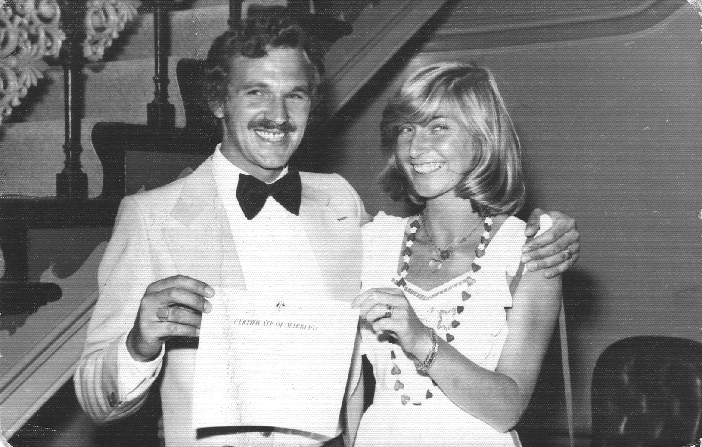
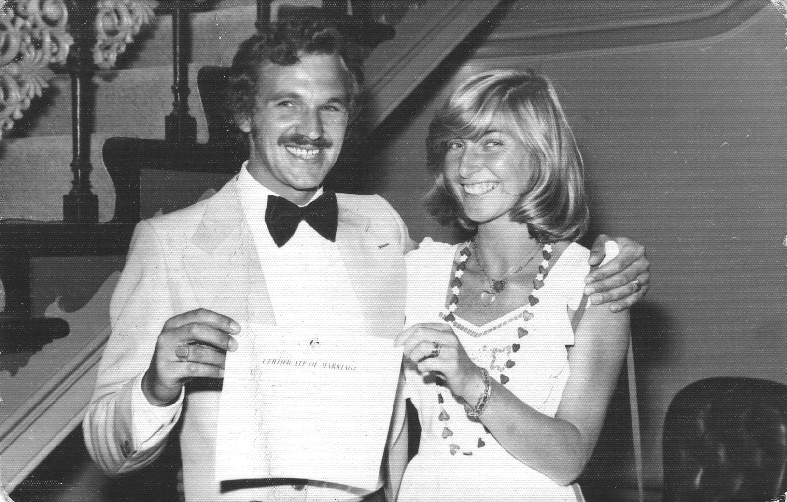
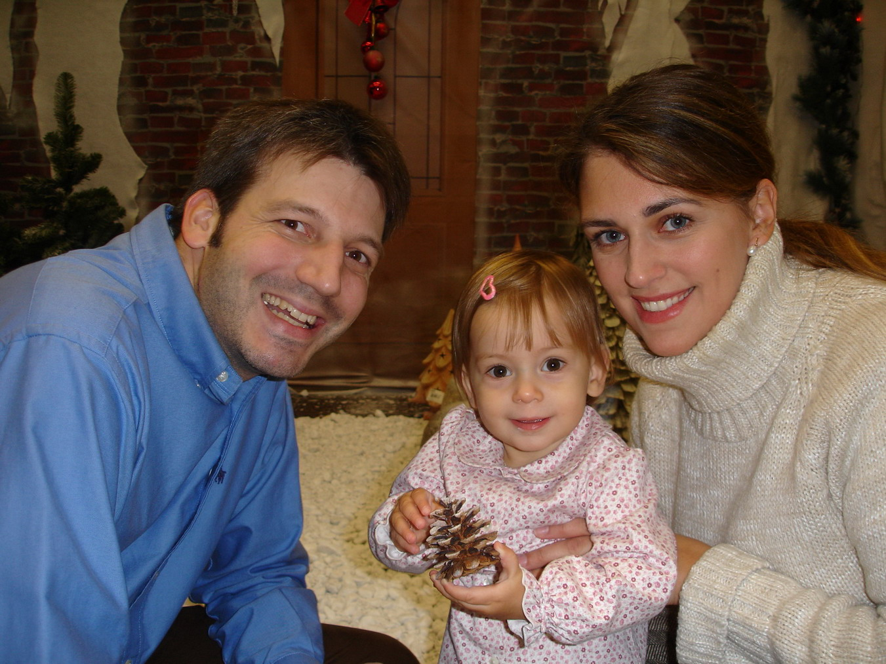
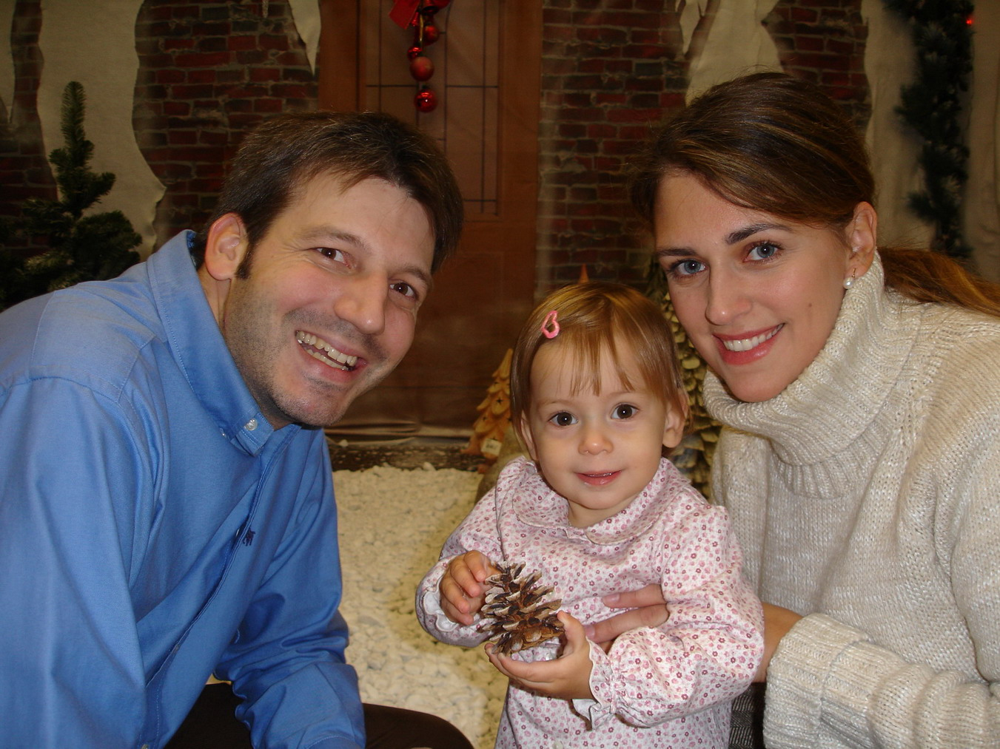
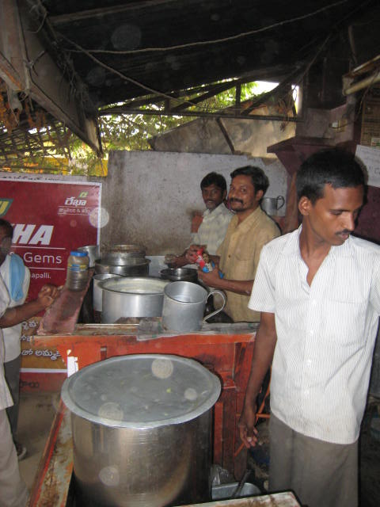
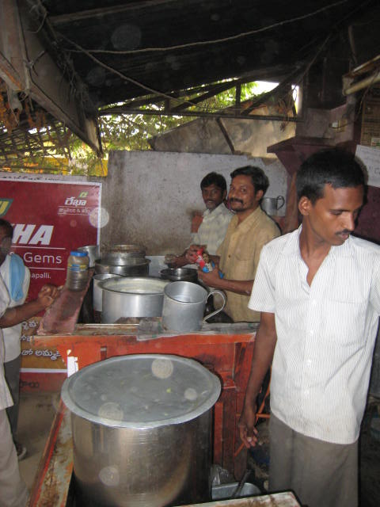

Arjuna Schulenburg aka Swami Abhedananda
Published by: 108 Publication
Cover illustration: Arjuna Schulenburg
First Printing 2016
Available as: Hardcopy and E-Book - PDF file
All rights reserved. No part of this book may be reproduced or transmitted in any form or by any means, electronic or mechanical, including photocopying, recording, or by an information storage and retrieval system, except by a reviewer who may quote brief passages in a review to be printed in a magazine, newspaper, or on the Web, without permission in writing from the publisher.
For information please contact:
E-Mail: as108108@gmail.com


People like to read about the adventures of others, particularly of those who venture out on a limb with no safety net. You will find this autobiography a pleasure for the same reason I do. Arjuna’s anecdotes remind us of our common humanity, presenting readily identifiable slices of life. I am tempted to use the appellation “larger than life” in the same way the Sheriff of Nottingham reserved it for Friar Tuck and the dubious Robin, but I’ll restrain myself. Arjuna’s story packs sufficient humor, inspiration, and white-knuckle drama to wallop you all by itself. And one more thing: I am always ready to lend credibility to the tales of Arjuna’s startling generosity and spiritual insight. When life gets just bizarre enough that one needs a helping hand, this is the first friend one can turn to.
Anyone who has been with Arjuna in the intimacy of his home knows the goodness of his nature, his childlike lovableness. In spite of his topsy-turvy life he retained a vivid sense of clowning humor as well as a resigned and understanding amusement at the follies of the human race. One must not forget Arjuna is a German at heart and conflicting feelings about him may cloud his humility that balances his seeming arrogance. He knows his worth - but in his heart he is one of the most profoundly modest men I ever met. He has all the disciplines of concentration, dedication to an ideal (wrongly or rightly!) and an attitude that can be described as firm or as relentless, according to one’s perception. His will can either construct or destroy. He struggled on many occasions in his life against every sort of ill fate, distress or failure. Life taught him the virtue of skepticism, which encouraged him to question and to doubt, often making him appear arrogant. Suspicion against every kind of authority grew out of this experience. His skeptical attitude has never left him, even today, though it has lost some of its original potency. Arjuna follows his star with single-minded determination, which can often lead him into a virtual den of lions.
Naturally, contradictions abound in a person who is driven to excel as a sportsman, intercontinental tycoon, raconteur, sandal manufacturer, jet setter, idealist, devoted husband, parent, single parent and now Hindu monk. I find myself smiling as I think about Arjuna. Moreover, I was privileged to know the one who understood Arjuna best: His wife Christina, gracious and lovely to the last moment of her battle with cancer. She was Arjuna’s bright beacon in times of darkness. Caring, she bore his turns of fortune with equanimity. In return, his spiritual passion brought her to the feet of a genuine spiritual master who guided and consoled her during the painful playing out of her karmic destiny. Arjuna loves children. He treats women with the greatest civility, innocently charming every mature as well as young lady with just the right measure of outrageousness to elicit giggles. More than once, I’ve looked back down the street to marvel at the new bounce and reclaimed feeling of youth in some blue-haired granny left bobbling in his wake. He can play the old scamp, the old rogue, flirting with every pretty face. No one can say what makes him tickle our buttons. Perhaps it is his ability to enkindle in us a determination to see the good in everyone, no matter what. Perhaps it is because the Australian underworld feared that his outrageous flair for living large cost them too much: no, wait. I must let Arjuna himself tell you about that caper. More than likely, he simply makes the best of each moment and, without trying, shows the world how much more a man can fit into one hour of life. And so, without further ado, I confidentially invite you to explore the original and intimate adventures of Arjuna.
Galen Chadwick.

By fits and starts, this is my Second Edition, the first having been self-published under the title: “Dancing Around Karma”, altering a good deal, and expanding here and there endowed with a better memory and added events.
Memoirs are tricky to write. Beyond a certain point, memories might just not be the stuff of interest, leave alone inspiration to readers. What I reveal, what I veil, what I gloss over, what I decide to delve deep into all of it is extremely subjective and not the easiest of tasks to undertake. And, I’m sure I will have failed in the correctness of linguistic elements and punctuation, expected of an experienced writer.
The book contains an animated figure; the ‘Shadow’ preparing my mind for apperception; answers and questions put to it. In this process the ‘Shadow’ became a friend, a mentor and a mirror in which I can see myself.
During all my life, I plunged into suffering and joy, despair and hope, darkness and light to cure the pain with the pain. There is grief, trauma; there are tears galore, and I don’t bother about applause or disapproval. I am so full of impressions that there is no way out for me but to record and reflect my life events, for it will increase my awakening. I am largely presenting myself to myself having a conversation with my shadow. I write about the beauty and fragility of all my life; the grief of losing loved ones; the need to make the most of every opportunity and in the final chapter; the worthlessness of the arrogant intellect for discovering truth and of being able to laugh at oneself and most importantly to be honest with myself; the need to be serious, the value of silence and avoiding the traps of the externalities of formal religion and respecting the unity of the essence of all belief systems.
Every book has a spectrum of style. In literature there are some works that enlighten or delight you when you read them. Then there are others that are realistic. “Conversation with a Shadow“ does not hold a literary value, but it is authentic, and makes you appreciate the trials of life and love and challenges of an ascending spiritual life. Writing provided a way of establishing a relationship with life, a way of giving meaning, a way of grieving and a way of regret. Most importantly truth is curative.
Telling my story in the first person retrospectively presents some difficulty and the occasional indulgent tone and a wise smile over the mistakes of the past may appear that all the trouble of narrating may make them into a contrived and aesthetic performance, yet I was really suffering. And I tried to set the literal tone and expression pretty much like having a series of extended conversations with the reader in accordance with my emotional state, some parts plagiarized, made up of bits and pieces, a subconscious collage-like most writings. Some of me. Some of them.
My autobiography with much failure in the air presents a clear and honest mirror of myself – spent on the side roads - and I am looking in it all the time. The good is good, the bad is clearly bad and expresses what I actually did think and not what I ought to have thought. Some parts are skimpy and arbitrary, and the like, but if I captured the proper feeling, the rest of it is icing on the cake. If pressed I have to admit: it’s good enough for me as a first-time writer, and I’m very slow to learn what is useful to write a good book. But I do it anyway and bring the whole mass of my interior life to the surface.
Occasionally I include some VIP’s who came my way and made them useful to my life story, but they are rare. They might flatter me, but never raised me in my own estimation, nor did I pay extraordinary esteem to them. We tell each other stories sometimes to forge bonds between us, to make ourselves appear important or humble, and to make ourselves feel less alone during times of trouble and doubt. Then there are stories we tell ourselves to make sense of the world, to explore our feelings and thoughts, to construct meaning, to find a steady point amid the whirlwind and confusion that characterizes most of our lives. This autobiography is a little bit of both, and I am more concerned about the tenor.
The Russian novelist Ivan Turgenev once said that every person should write the story of his life and his contribution as he or she sees fit. I tell my story verbatim. This book is based on my life with all its highs and lows; poverty and excesses of materialism, addiction, tender moments, desperate determination, and a search for the meaning of human existence. I underwent thrilling and scary situations, and I am here to tell my story in the same way that I speak to my friends.
Some details are intensely alive; not with any regard for the world’s view, but born solely of my own consciousness. My situations were often complex, and I was frequently torn between living what I thought was right and what I must do to survive. Often I was racing along the knife’s edge. I could have ended up as a criminal or a saint — often I didn't’t know which. I had the perfect capacity for both.
It was a diverse life. But at its core lies the universal desire for true and lasting peace and happiness. My quest for the meaning of life and happiness was paved with trial and error, which indeed took myriad forms. In my vocabulary the word “sin” does not exist, but a synonym for it, “mis-take,” does. For me, necessity was the proverbial Mother of invention; sometimes literally so. If I occasionally had to resort to unusual means, it was never done with malice or greed, or to consciously hurt my fellow men and women.
In this autobiography the reader will gain rare insight into the full subjective range of my life’s experiences and it is my sincere wish and hope that my candid confession will be not only a compelling read, but a source of inspiration.
Thank you.
Arjuna Schulenburg
AKA Swami Abhedananda – The Uncommon Monk
Photo: 2015 Rishikesh with view of Ganga


By December of 1943, twilight had already begun to fall on Germany. In the West, Field Marshall Rommel had been defeated in North Africa, and the Allies were preparing for the D-Day landings in France. In the East, the once-invincible German army was on the defensive, overstretched and holding an impossibly thin line against increasing numbers of Soviet troops. Germany was on the verge of collapse, and her invasion was inevitable.
It was during this testing time that I was born under bitter tears of despair for trouble and adventure into the Third Reich on the 8th day of December, the same day of the ’Immaculate Conception’ (Christianity), ’Hanukkah ’ (Judaism), and ’Bodhi Day’ (Buddhism,) a spiritually auspicious day. The spirit of the day ultimately trickled into my life.
How does one remember early childhood events? Once I began thinking back, I realized that some of my childhood memories have to a great degree remained vividly and indelibly imprinted on my mind. My birthplace was in the capital of German East Prussia: Königsberg, home to a grand Prussian castle, destroyed along with much of the city in World War II. The city, founded in 1255 near the mouth of the Pregolya River, was the home to many famous mathematicians. The merry philosopher Immanuel Kant was born in Königsberg in 1724, with his battle cry: Sapere Aude! (“Dare to be wise”, or more precisely “dare to know”)
In January 1945, Russian troops encircled Königsberg, which fell in April after the loss of thousands of lives. Germans living in the region were forced out and replaced with Soviet citizens. Though the fighting had stopped, for the civilians still inside the city, the horrors had only just begun. The Soviet leadership openly encouraged their troops to commit the worst sort of atrocities as they continued their advance - houses went up in flames and blood was flowing in the streets. The city was renamed Kaliningrad in 1946 after Mikhail Kalinin, an early figurehead of the Soviet Union.
My Mother, Anna-Maria, ’Mutti’ recognized the impending Russian invasion. She escaped with Jürgen, my older brother, and me just in time, and embarked on a two-year 800 km journey to the West. I was only eighteen months old at the time, but my eyes and ears had already witnessed a life of great turmoil which does not lay the foundation for resilience, trust or easy affection in adult life. There were thousands of dead in the streets, either shot, frozen to death or starvation corpses. During the war, my Mother must have suffered immensely. She was good-looking, and with two young children, my brother was six years old, making an escape from the Russians, who were following us, who had a reputation for ferocious sexual appetites. There were wolves and bears in the forests, and occasionally robbers.
As was to be expected, my Mother’s feelings toward the Russians were those of prey towards a predator. I asked her once about the escape and the bombing.
“Oh, Klaus it was terrible! We were nearly always hiding, and seeking bomb shelters all the time. We used to hold each other in our arms. I was consoled at least that we might die together. I prayed so much that I became even more religious. I could tell you many stories about those who died in the war, and those who were dying every day of starvation. We literally found our way from the East to the West by the smell of dead cadavers, passing towns and cities of ghosts”.
She paused, still looking away, tears running. When she said this, her eyes looked past me for a moment into the distance, and her voice became choked by the horror of the continual experience of death.
Waking up in a vanquished nation was very different from the victorious picture Hitler had promised, and the guilt of genocide would be upon all of us for generations. In that post-Nazi era little has emerged about the daily lives of German families who considered themselves moral, honorable, and hardworking and whose adult members expected to live decent, respectable lives. It was those adults, who most wanted to forget the past and who preferred not to recall the Third Reich.
No communication had come from my Father. At that time, we were a fatherless family. All our be-longings my Mother had been able to rescue were in a wooden trolley. I, no more than a toddler, sat on top of it, clutching to the rails all the way to the West. My most trenchant recollection of the war is of traveling down a road one night and hearing the approach of a Russian patrol motorcycle. In a panic, my Mother rolled the trolley off into the nearby brook to hide. Unnoticed we were spared. And flights of Russian bombers had increased dramatically which were flying directly overhead going after strategic targets to the West. On hearing the familiar noise, we were always on alert and ready to go for shelter and seeking rescue wherever possible. Often with little or no cover we would lie down flat and listen anxiously to rattling of machine guns and the planes and the occasional tack, tack, tack of antiaircraft fire and the following bomb detonations. There were plenty of explosions ahead and behind and occasional bursts of flames leaving human corpses lying on the road. We traveled the route to the west through the devastation that must be without parallel in modern times and footpaths choked with rubble from gutted buildings. The cities of Berlin, Bremen and Hamburg were no more than a treeless pile of rubble, twisted, crumpled, wall-less, house after house, street after street. Everywhere women with mad eyes were seeking their children or possible family survivors. It was a war, even decried by religious people, which was ruled by eye for an eye: killing, violence, brutality, arrogance, aggressiveness, all ultimately leading to hurting, to brutalizing others; organized murder, which war is.
Today I understand what strength my Mother ‘Mutti’ had to muster through those bitter times to endure this slow and hazardous journey. She called upon great determination in times of danger, and an innate adaptability to radical change. She showed immense resilience and survival skills and cared for us single-handedly under the worst of circumstances. And for my brother and me, the refugee children, we were so traumatized and surrounded by so much misery that nightmares were a constant dark companion. Lack of food and our general anxiety had left us in an appalling state of health. Each affliction was a small crisis due to lack of medical care and medicine.
During the war years, my Father had the foresight to plan a reunion in the case of separation. He chose a small town, Nordenham, Lower Saxony, in northern Germany near his place of birth. Here, where the country is flat and empty over which the stormy winds pass coming from the North Sea we arrived in this little town in mid-1947.
In this western part of Germany a tremendous tide of migration was in motion, which carried hundreds of thousands from their homes. (As soon as Germany experienced prosperity again, many peasants staked preposterous compensation claims for the loss of possessions they had never had.) Bombed-out, fatherless families arrived in droves in the West, clinging to their bundles of salvaged personal effects, looking numb and disoriented, waiting for a place to lay their head on. The locals did not exactly strew our path with flowers, and the situation at times was tense. In their eyes, we were intruding into their ‘space.’ Mostly women stood in breadlines, families were fed in soup kitchens. There was no starvation, but there was the deadly, humiliating hopelessness that sets in when one can no longer provide for one’s own and keeping alive and living are two different matters.


Throughout this time, Mutti was constantly struggling to feed and clothe my brother Jürgen and me. At one stage, I attracted a serious infection to my right leg within the bone marrow resulting in extreme, life-threatening fever. At the height of the illness, the local surgeon recommended an immediate leg amputation. I firmly believe that only due to the ardent prayers of Mutti I was spared the operation. Almost miraculously the fever dropped and the infection receded.
In those early days of worry, Mutti was nothing short of resourcefulness and faith. This was a time of great food shortage. Knowing what would keep best where and under what conditions was a skill at which my Mother excelled. She never let us go hungry. She was a great cook and ‘zauberte’ (juggled) delicious dishes given the very frugal manner in which we lived. For those early years in my life, this was how she brought us up. She really struggled so much.
Prior to our escape Mutti had skillfully hidden jewelry, anticipating the need for barter. There is much of my Mother in her children, and often we took things into our own hands by extending the interpretation of mine and thine by secret excursions to orchards and picking any available fruit and vegetable. We not only ran through dog guarded orchards but tunneled on our bellies through fences and other blockades - a most welcome commodity as my Mother had already used most of her barter items and was often at a loss as to what to feed us and more than once did I see my Mother crying.
Sufficient accommodations were unavailable for the majority of us, and we were sent by the government to live on a barge anchored in one of the small harbor inlets. Often the river swelled significantly over the norm. One did not know where the street ended and the inlet began. Many times I fell into the inlet (which possibly explains my early achievements in swimming.) The town was filled with crowded bustling people, everyone doing something, even the invalids from the war with only one arm or leg, clearing rubble, building, buying or selling. The countryside was devastated; the shops were empty, but people bore themselves with quiet dignity.
After some eight months living on the barge we were moved into a housing commission building, hastily built for war refugees. In the beginning, the government solved the housing shortage in classic army style where an average of three families lived - twelve people - where in comparison only three people lived in the same space in crowded New York. It consisted of one house with two entrances, with four families per entrance. Each ‘home’ consisted of three small rooms and a bathroom with no shower. Our new home, by the standard of the time, was an almost palatial abode for our family of four. There was barely any grass, and all the houses looked the same. Showers were taken in the public shower rooms every Saturday. Our address was considered to be, as they say in America, on the wrong side of the tracks. But at the time it seemed nothing unusual for us - that was the way we lived, and the way thousands of other people like us lived.
It was in our family rendezvous site, Nordenham that I grew from a child into a teenager. Only from pictures did I know the person called ’Father’, the person my Mother often talked about, until I was four or five, when he re-entered my life after having served years as a prisoner of war in Belgium and England. On cold or rainy days, I saw the sad, empty faces of women and children pressed against the window panes looking onto the street searching for homecoming family members. We too spent many hours at the kitchen window looking for our Father and listened to radio broadcasts reciting a litany of names of lost and missing persons conveying more despair than hope.
I met my Father first at a railway station. POW’s came back to their hometown not knowing whether their families were still alive, and the families did not know whether their Fathers would be on that train. The Red Cross was largely responsible for reunions. Heartbreaking scenes were common events at the arrival of each new train. My Father came home haggard and exhausted, but it was an indescribably joyous homecoming yet perhaps like most Germans he loathed to show affection openly.
The Schulenburg’s from my Father’s side seem to emerge from obscurity. It seems that our line stretches back to the time when possibly some of them were pirates. Piracy was a respectable trade for many centuries, Peers; even monarchs were often partners in it. At that time, there was no country of Germany at all, rather a loose confederation of kingdoms and duchies and principalities and free cities. In those days, boats were made of wood, and sailors of steel. According to local tradition, the area around my childhood home was notorious for ships stranded where the river made an elbow turn into the North Sea, easily pulled off course, to beach hopelessly in the shallows of the river. When I first heard pirate stories I had desires to be a pirate myself. I had a vague thought of running away to sea. Pirates of yore, when heroes and sailors knew no navigational science, through instinct, experience and, it seemed, charmed lives, evaded the danger of the treacherous North Sea, respectfully called the ’Mordsee ’ (Murderous Sea) with its unpredictable weather of looming clouds and sudden squalls.
I was reared in that small provincial town near the North Sea opposite the city of Bremerhaven, which lay under American protection after the end of World War II. Nordenham is surrounded by a beautiful, flat but lush coastline. The brisk North Sea air gives off a feeling of excitement and expansiveness. The rich marshland is protected from the sea by dikes. Behind the dikes in spring, summer and autumn the juicily verdant land expands as far as one can see. Our streets felt safe and secure, and there was nothing and no one to fear physically. With adults working a six-day week, child care was nonexistent. Growing up was basically in our mostly empty streets where we could play games and organize any kind of activity.
Already from an early age I had the ’Sehnsucht’, the rising yearning for foreign lands. Sitting on the dike I could easily spot international freighters and the giant ocean liners as they steamed slowly in and out before me. No ship was leaving that I did not yearn to catch. I always loved running my finger along their routes to the fabled port cities crossing the seven seas. I experienced a rare peace only, I think, under the spell of an endless horizon of water and sky. My soul, ever in movement resembled the storm-tossed sea. My rich imaginative nature saw beauty in the swelling and falling of the waters, in every gust of wind and ever-changing shapes of clouds. I could see so many shapes: palaces, people, animals, angels, demons and beautiful faces. There I could live out my dreams, the kind of dreams we all have. My dreams were not of philosophical or intellectual enlightenment espoused by German Romanticism but of freedom and being able to fly like an eagle.
Often I was dreaming myself into the great Norse sagas and tales of chivalry and legends of valiant knights and their heroic deeds against grim opponents. My favorites were the cheery noble outlaws: the legendary ’Robin Hood’, ’Friar Tuck’ and the gallant ’Ivanhoe’. Whatever I read stimulated my imagination, and whenever I could, I lay in the grass on top of the dike gazing, half hypnotized, by the majestic sea.
Autumn and spring promised particularly high tides. The winds brought chilly air, and noisily rattled the small window panels of our flat. In the early 1950’s, horrendous floods hit the North of Germany. Fierce high seas broke the dikes in various places, and mountainous waves surged above them. Holland, not far to the west, was hit even harder. Thousands of people lost their homes and their lives. I was little then, blissfully unaware of danger. The comforting presence of my parents, huge and solid as they appeared to me, seemed to assure my safety. Our part of the country was spared from major disaster. I can clearly remember that almost every family had candles in their windows, a sign of their good wishes and prayers for the not-so-fortunate ones.
I never experienced the joy of being with my grandparents or the excitement of their tales of the deeds of our ancestors on both sides. I don’t know what happened to them. I believe my Father’s parents were divorced, and that he left the house immediately after their breakup. My Mother’s parents died during the war. She always avoided answering my questions.
My Mother had a good deal of trouble with me, but still she enjoyed rearing me. And we shared the same vanity: she had mine, or I inherited hers. I’m inclined to believe that the latter is the case. My character was always a touch of the wild child - something my Mother enjoyed as much as the more sweet nature. She always treated me with great affection. She had little trouble that I’m aware of, with my brother. He was six years older than I, and I think that the unbroken monotony of this ‘good boy’ would have been a burden to her but for the relief and variety I furnished in the other direction. I was like a bittersweet tonic for her. I like to think that I spurred her strength of will, honing her patience and encouraging the full scope of her Motherhood to develop. Nonetheless, she behaved toward me, especially with great sweetness and gentleness. I was my Mother’s favored child and would remain that to her last day. Though I grew up a favored son at the same time, it could hardly be called pampered.
During most of my childhood, my Father seemed to be absent singularly involved in work and building a new future and started his profession as a freelance photographer, with a camera borrowed from our family doctor. Belonging neither to the world of national leaders nor the workaday world of the common people, he stood to one side; lonely, still strongly affected by the madness that consumed Germany in the Hitler years.
Shadow: Let me try to put it for you in its perspective. Your father was not alone. There is no denying that Hitler had a mesmerizing effect on most of his countrymen, especially on youngsters. Do we really know how you and I might have reacted? I am not buying into up-righteousness that turns up in hindsight. Forty years after Germany surrender, President Richard Karl Freiherr von Weizsäcker ( 1920 – 2015) gave one of the most sincere, lucid, and introspective speech: “All of the Germans, whether guilty or not, whether old or young, must accept the past and be liable for it, that lest we forget. Whoever refuses to remember the inhumanity of their past, is prone to new risks of infection”.
After the Holocaust, the Israelis coined the memorable phrase ‘Never again’. Never again for whom I may ask? Just for the Israelis or for the whole world? I’m not going to explore deeper the monstrous, systematically implemented genocide conducted by Israel of their Palestinian compatriots with the full backing of the United States as an essential policy. It would seem that the only thing that experience teaches us is for the former victim to commit the same appalling crimes again.
My father kept off the subject of war as much as possible; always finding it difficult to explain how it was that ‘God’ permitted that war. He never joined a club or had the occasional drink at the pub. He did not have any friends though he originally came from the area. He kept very much to himself. He was very conservative. He refused to borrow money, yet worked hard enough for us to eventually achieve and maintain a modest middle-class standard of living.
Our financial independence rested on the sale of thousands of photos. Our life can be captured in the term ’Biedermeier’, with its implication of bourgeois domesticity. His proudest boast was, “I paid my way. I never borrowed a single Mark in my life! I owe nothing.” The circumstances of our moderate living standard were not upsetting for him. Nearly all refugees were living on a roughly equal level for the first decade or so.
He was a talented black-and-white photographer, greatly esteemed and much sought after. During the war, he had been a camera man in the ’Luftwaffe’, German Air Force. At one time, he was assigned some industrial photo work. He was praised for the fearlessness with which he had to climb to the top of a high building while it was still a skeleton, unfinished and unsafe, in order to take a shot of the church steeples. Another time, he took close-up photos of circus lions inside their iron cage. Through his photographic work, he developed his own special techniques for developing and enhancing images. His photo darkroom was in the basement. Now and then I used the basement in his absence to invite my first girlfriends over for intimate gatherings, to show them the darkroom and help them ‘develop.’
My Father’s idealism and self-righteousness gave him the somber air of one reserved; solitary, virtually isolated. The closest I ever got to him was when I received a spanking. I had never felt any love from him; he had never taken me in his arms or touched me with affection. He was a stranger to my brother and me. He has been mostly absent in my life. He would never worry about us children; our Mother did worry. Neither of us ever really established any heartfelt links with him. Yet we knew he cared for us, but my reality in my childhood was my Mother.
Meanwhile, US Marshall Aid – boycotted as ‘American economic imperialism’ by Russia – had begun rolling into devastated Western Europe, among other things laying the basis for the West German ’Wirtschaftswunder’ (economic miracle) of the 1950s. Circumstances changed – and circumstances alter views. As a result, my Father’s business built up quickly, and soon the small rooms of our housing-commission dwelling included a lounge that also served as a bedroom, the kitchen was also used as my bedroom, and the third room doubled as an office and at night as a bedroom. Bedrooms as such were nonexistent. Any room could serve as a bedroom, but no room was set aside for the sole activity of sleeping. Hence ‘making the bed’ was quite a different procedure from what we do now. I did not have a room of my own. I slept in the kitchen on a convertible couch. During that time staying with my parents was like living in the kitchen. Showers or fancy bathtubs with hot water were undreamed of conveniences at the time, and it was only in later years that most middle-class Germans acquired them.
I missed having a sister. My brother Jürgen, six years older than me took little opportunity to develop any closer ties with me; fraternity was hampered by his own interests and spending a great deal of his time with his friends. Even though Jürgen was my brother, he was also somewhat of a stranger. I suppose it is usual for elder brothers to feel themselves demeaned by the company of a brother six years younger, whom they regard as a baby and whom they tend to patronize and look down upon.
Jürgen shared our uncertain fate and slept in the ‘office’. He was, like me, thrown into the adult world and grew up quickly. Being reasonably bright and shrewd business talented, after high school he started a successful business career in the perfume industry, that spiraled him into a position as managing director in England, the US, and eventually Germany.
I still remember very vividly the day my brother left home with tears in his eyes, boarding the train at the local station and leaving his family and town for an uncertain future. I felt pain at our first real separation. In our family we did not complain much, and we didn’t talk much about anything deeply felt – we simply walked on and didn’t ask for much either.
My Mother was the finance minister of the house, and I felt that she was obsessed with our – or lack of - class distinctions and propriety. For as long as I can remember her, she has been the odd mixture of the housewife and the woman with a good business sense, but she did not succeed in swaying my father to start a studio on his own. She was good-hearted; though rather one-sided in her beliefs. Her intellectual aspiration were narrow and traditional, doubtlessly due to the firm religious traditions of her family, which included our two uncles, Bruno and Wilhelm, and Auntie Helene, whom we called the ’Heilige Helene’, Holy Helene. They all lived in different areas, and a reunion occurred only once or twice a year. Another sister had been lost during the war. I never heard much about her, but gathered enough to know that she was raped and ended up in a mental institution, where she later died.
The fondest memories I have of my Mother are those in which she nursed me when I was sick. She embraced me, pampered me and repeatedly said her prayers for me. She extended her empathy outside our family, caring for an elderly woman, ’Fräulein ’ (Miss) Müller, who was a genius at mathematics, but as is often the case with the greatly gifted, she had trouble looking after herself. Often we invited Fräulein Müller to lunch or dinner and my Mother often, when she shook hands with her, passed some money in the press of her hands. Fräulein Müller did not own one garment that was not given her by my Mother. My Mother was wonderfully good — the kind of person to whom neighbors naturally turn to in times of trouble. She was never happier than when a friend from church or from East Prussia, her old home, appeared unexpectedly for ’Kaffeeklatsch’ (coffee chat). With delight, I remember my Mother making ice cream on hot summer days. We had a hand operated ice cream-making machine. With joyful zeal, my friends and I manually churned the ice cream, which soon was handed out to the neighborhood children.
I too had a strong interest in spiritual subjects from an early age: not only religious but also 90% proof! Born in a family where my mother ruled the spiritual aspects of our daily life, I was brought up in accordance with an unshakable Christian belief system and in these formative years, church dictated and figured strongly in my life. We were the chosen ones. Besides regular church going, I was a regular attendee at choir practice sessions, and as I grew older, I advanced from tenor to bass. I had no wish to totally imitate my Mother’s piety and moving into my teens I began to read censored books, such as Lady Chatterley’s Lover and the Kama Sutra. I also enjoyed forbidden alcoholic drinks, none of which my mother knew about. My Father, after having witnessed the atrocities of World War II, abandoned all belief in any God.
My greatest joy and excitement as a child was spending summertime mostly at the river’s beautiful, fine sandy and wide beach. I belonged to the Lifesaving Club (DLRG), and at the age of twelve I had special permission, due to my swimming achievements, to qualify as a lifesaver, a privilege normally granted at the age of sixteen and so entered the record book as being the youngest lifesaver. There was always so much activity, so much natural entertainment and we often played soccer on the sandy beach. Life at the club was full of camaraderie. I remember the smell of the water, the beautiful sheen of rain and the earthy smell when we were camping next to the clubhouse; the rattling clatter of drops onto the tent, and the laughter of boys and girls.

I remember how pleasant it was to lie on the beach and enjoy the shafts of lightning, and the thrilling boom and crash of thunder (not to mention the nude bathing in the river.) It was a time of mutual sharing, a time that encouraged honesty and decency in people. I remember that I once lost my wallet at a kiosk stand. In it was a few German Marks, and sure enough the wallet was still there when I went to look for it a few hours later. It was unheard of to lock up a bicycle or any other valuables. Bread and milk money were left outside the house, to be duly collected in full by the merchants. It’s a sad reflection on modern times when the absence of murder or crime must be noted as a special circumstance, which calls for gratitude.
This was the time of my first attempts at sexual awakening with the daughter of the swimming master. She, with a nubile bosom accentuated by the tight swimming costume, noted that she was attracted to me. In my mind I can easily call back her innocence; her shyness, and flushing of her cheeks. I was in love and thanked the heavens for a world that had such beautiful girls in it. Young people then were slower to mature than they seem to be today; at least it was true for both of us, but I learned a good deal very quickly. It wasn’t with her that I lost my virginity – I lost it with an older woman and it was great! What a wonderful world indeed this was that had such blessing in it and singing it out loud: that’s amore! To be truthful and more appropriate I should have sung: that’s lust. Sometimes the hormonal craving had grown so desperate that I had to cool off and go for a long run around the nearby local lake. One sunny afternoon while running, I was questioned by an older woman who was strolling by the lake: “Young man I see you almost every day; are you training for a championship?”
Generally, I was liked and, despite my mischief, I was the ‘apple of the eye’ of our neighborhood. I made friends easily and though nobody ever accused me of great intellect, I had the reputation of droll peasant wit. Friendly manners and a helpful disposition came naturally to me. I was energetic, a twinkle in my eye, keen to please and ready to rush away on errands for my family and neighbors. In our home, toys, books and any other form of intellectual stimulation were nonexistent. The ground rules in German family pronounced orderliness, fostered obedience, and hard work. Possibly due to my Sagittarian nature, my characteristics included generosity tempered with mischievousness; competitiveness, never violent, and the irrepressible desire for freedom.
Occasionally, mainly on Sundays, there were always parents, mostly concerned mothers, overseeing the kids from the window as we played soccer or roller-skated on the street. Concerned mothers could see in an instant with whom we played and whether the company was agreeable. We were good little children - when we were good. Almost always there were enough children nearby of all ages to field any kind of team. The street exerted a strong influence on our daily activities. In those days, there were only horse carts and the very occasional motorcar driving on the streets. And there was Mr. Lazar, who lived upstairs shouting from the window his coaching advice to his sons, Eberhard and Wolfgang.
On summer weekends, I slept in the ’Garten Laube’- garden shed - at the back of our house. I must have been thirteen or fourteen when I had our car keys copied. Considering how loosely I was guarded; hardly tall enough to look over the steering wheel of our VW Beetle, I ventured my first driving outing with my friends. At the time, I did not fully appreciate the degree of danger, and it is surprising how little harm befell me. My bed was prepared to fake the presence of the ‘innocent sleeping beauty’ for occasional bed checks by my mother. One mild night, I got caught. Unlocking the front window to air the room my mother saw me arriving in the car. This prompted her to instant loose bowel movement. A mother’s heart immediately finds excuses, like a judge who loses his neutrality when he sees a relative on the dock. Overwhelmed with compassion, and not wanting to destroy the family peace, she eased my father’s punishment.
Autumn was spent flying kites. I took considerable pride in having the highest kite in the sky. But one particular stormy afternoon the cord broke, and it took a sudden dive. In less time than it takes to realize what happened, the kite fell limply onto the nearby power lines along the side of our street. Then, as I watched unwilling to accept, the tail of the kite began to smoke and after a flash, the power cable was parted and fell alongside the road accompanied with spitting sparks. It was a miracle – one of the many miracles in my life – that I survived. I sure as Amen in church was lucky, if the kite string had been wet, I would have been electrocuted and killed and my every cell jolted into a million vibrations. As a result, the electric power was cut off throughout the whole street. It made questionable news in our neighborhood, as in those days it took a fair while to repair the lines. Luckily my parents who were alarmed about my temperamental playfulness had bought insurance just a few days before. Repair costs ran into thousands of German Marks. Of course the story making its round throughout my friends was so delightfully ‘cool.’
Winters were warmed by ice-skating on the lake and canals, or iced-over streets. We saw very few cars about in those days. Thirty-foot dikes protected us from cold and dangerous North Sea tides. In our leisure time, we ice-skated down the dikes into the streets. They were big; big enough to run races on, though they seemed much smaller as I grew older. At the time, it was a lot of fun. Often I was covered with frost from perspiration that froze on my clothes. Ice would hang from my eyebrows. When I walked, I could hear the snow creaking under my feet. When I got home, my mother would prepare a hot foot bath, and rub me dry until my skin became red as a boiled lobster.
I must tell you about the most joyous and magical time which was ’Weihnachtszeit ’ or Advent (Christmas season) and the great feasts we had. That was a beautiful time. By tradition, it starts four weeks before ’Heiligabend’ (Christmas Eve, Holy Night) and our Advent wreath was put on the lounge table with four white candles on it – one to be lit on each of the Sundays leading to Christmas Eve. The preparation time for Christmas was an exciting build up, and my mother made cookies and molded them into shapes of hearts, half-moons and stars. I felt near to my Mother at that period of my childhood.
The crowning was the traditional ’Weihnachtsstollen ’ (Christmas bread) which came on the last Saturday of Advent and putting up the Christmas tree. It all looked and smelled of Christmas! On Christmas Eve, the ’Weihnachtsman’ (Santa Claus) would knock on our door and show himself to my brother and me. He was dressed in the white-and-gold robe of a bishop, holding a staff and a tall miter sitting atop his head. I think it was until the age of four or five that I was scared out of my wits when my father opened the door. The Weihnachtsman expected to hear a poem or a pious little song and a promise that I had been good all year. After a blessing and approval, he unpacked the gifts from his rucksack and distributed them to us. As the years went on I realized that the Weihnachtsman was our neighbor, Herr Kühn, yet I was still somewhat apprehensive for a while.
Sundays I had to go to church with my mother and brother. We paraded down our street; my Mother in a silk dress in summer, a fur coat in winter, and we boys in the latest modern suits to please our Mother. She always managed to put a bit of a dash of elegance into our life. In the early stage of my life, I enjoyed going to church. Judging from various memories, my belief in God was as deep and moving an experience as any young person could have with the feeling of belonging to a larger group. With an innocent heart, I believed everything I was told, which is not to say that I necessarily followed it all.
One miraculous incident still stays with me: Strolling about with my school friends, I must have “looked with my hands” at a parked motorbike. Two hours later our doorbell rang. A furious man demanded to see my Father and accused me of having fiddled with his motorbike, saying he tried in vain for two hours to start it. My Father used to own a motorbike and knew the in ad outs. He left to go to the scene of offense leaving me behind with unspecified threats: “Just wait until I come home!” Physical punishment was not unusual for the times. The look on my Father had terrified me. I went into the bathroom and prayed and prayed to Lord Jesus to help me, and to fix the bike. Jesus had told a blind man: “Your faith has healed you.” Soon after my Father returned, exclaiming that straight after his first attempt the motorbike started up. The owner, a seasoned driver, could not understand how that could be. Thank you, Jesus! Thank you, my innocent heart, for your innocent faith!
Our port town hosted seamen from foreign lands, which gave it an exotic flavor. We kids frequently came into contact with the sailors, who gave us chocolate, and cigarettes, or even money. The Americans especially were very friendly and generous. There was already plenty of goodwill towards America at that time; best of all much-needed supplies were coming in to rebuild our nation. It is still fresh in my memory, when we boys, with the little money we ‘extracted’ from the Americans or pilfered from the secret cache, went to the cinema. In our town, we had four cinemas and my favorite ones were Tarzan jungle films from Hollywood with Johnny Weismueller in the leading role. And of course, I loved all cowboy westerns and old epics like Ben Hur, Spartacus and The Ten Commandments. The only other film I clearly remember was the German box office hit ‘Die Halbstarken’ (literally: half strong – youthful rebels) with Horst Buchholtz, but I certainly saw a few others, including censored ones as one of my friend’s father owned the cinema and we sneaked in through the secret back door. It was such a boyish thing to do – cool - as today’s youth would call it.
Shadow: To put history in perspective we have to remember, at the time, Germany was divided into four in-dependently functioning zones, the American, British, French, and Russian, each under the corresponding military government with its own approach to postwar dealings with Germany and Germans. The Allies were not yet certain that they wanted to create a greater German unit and under what condition. All sensed that fundamental changes were in the air with events that the U.S. Marshall Plan financed the most comprehensive and costly reconstruction and aid program the world had ever seen, providing loans for rebuilding Europe’s destroyed industrial capacity, including Germany’s. Not much later the Währungsreform (currency reform) came into effect and families received brand-new, crisp bills. The effect of the devaluation was trenchant and everybody dashed out to buy food – still rationed, but suddenly available like clothes, shoes, underwear. The Währungsreform was truly the beginning of new hope and a new life, alas, without East Germany but mixed with anger that merchants had hoarded these desperately needed goods for months and months to benefit from a rumored new currency.
In spite of the cultural advantages my birthplace had given me, my family saw that educational pursuits held no attraction for me. Germany, the land of Dichter und Denker (poets and thinkers) did not imprint on my intellect. My real interest lay outside the school gates. I preferred to spend my time playing, which was much more fun. I was a happy, imaginative little boy, an indication, perhaps, of my future creativity and adaptability. We all knew at least that I was no conventional schoolboy and not suited to the prevailing tyrannical atmosphere of most schools of the day. The education system at the time was totally contrary to the fact that teacher quality is the single most important driver of the quality of a child’s education.
It was the year when my world became confused. My innate urge to hold on to innocence and to escape into play and fantasy no matter what the school reality was took a massive damper. I confess that I hated school but loved the vacations. I did not have the good fortune of finding a mentor to oversee the course of my education. There were many things that made me uneasy. Our teachers were merely programming us to meet set curricular requirements; rather than drawing out our individual talents that were not recognized and encouraged. Not surprisingly, my enthusiasm for anything having to do with school vanished quickly. My mind would wander. I was bored. I hated monotony and it was difficult to pigeon-hole my mind. I preferred reason instead of simply obeying in fear. Inquiry had no place. My intellect was not challenged.
Most of the teachers took an aggressively military Prussian, pedagogic stance, and knocked rote learning into us with overzealous exactitude. I was the restless sort of student who would speak up for the sake of it, and my anarchic streak was filled with zealous lust for righteous justice often landing in the lion’s den. When, in history classes I asked some teachers what they did in the war and whether they were members of the Nazi party, they shifted uncomfortably and dodged my question. What respect could one have for teachers who deviated from the truth? In a way I identified myself as a union school warrior. What I lacked in achievements I made up with a highly creative and adventurous approach to the few subjects that did pique my interest - mainly outside the school.
Sports activities are the one part of my education, which I look back upon with satisfaction, and where I earned no scorn. The pattern remained the same: Excellence in sports, with a marked skill in running, and almost no interest in formal subjects. In art classes, my favorite and only pictures were of passenger ships, which I had seen in Bremerhaven. Ocean cruisers like the America, Queen Mary and Bremen inspired my quest for foreign ports. I imagined myself on the ships, actually sailing the seven seas: Down the Atlantic and round Cape Horn, the challenge and dream of sailors; among icebergs and through snowstorms and wild wintry gales, to monstrous sea surges in Hawaii. I would have sold my soul to Satan for the privilege of trading places with him. Hell surely could be no worse than school. At least Satan seemed to exercise reason. How bad could it be?
It did not help my relations with the teachers that I smoked secretly in the school backyard with my graduate friends. I had been a clandestine smoker but smoked shamelessly in public at fourteen. In those days, cigarettes were so cheap that most of my friends could afford them. There was a little shop near our dike where we would buy loose cigarettes. Being most often penniless boys, we collected copper wire and metal and sold it to the local scrap metal dealer. We could not do that openly later without shame, because we had become the ‘Halbstarken’, the refined but rebellious youth, and our prestige was at stake.
There was a wilderness in us boys and a restless hunger for excitement. We performed wondrous feats with our mouths, but our bark was much worse than our bite. My father yielded to my smoking habit: “As long as you’re doing it, you might as well do it at home,” he decided. “You should not try to do anything outside the house that you wouldn’t want us know about.” After the sermon he fetched his packet of cigarettes, and added: “Here, have one of mine.” Reflecting on it today words fail me to find any excuse for this sort of parenting where smoking was considered to be fashionable in those days. In later years, I had to pay the price with ill health.
There is still a painful memory left of an incident during a school camp holiday. At a two-week school camp in the Harz Mountains, surrounded by thick forest, I got caught smoking, “Polluting the air pregnant with the smell of resin,” provided a poetic justification for his forthcoming judgment. The headmaster was looking for a reason to give me my marching orders. The headmaster, married, with no children solicited his decision of my camp dismissal to his colleagues: “I have come here to tell you of a very disagreeable occurrence involving Klaus Schulenburg resulting in his dismissal from the camp. I caught him smoking, red handed.”
Many others smoked at the same time, and I defended myself tooth and nail, but to no avail. Before this incident, I had forcefully restrained myself from smoking, and no word can adequately describe the appetite that consumed me seeing others smoke. I weakened. I was caught; he had caught me. I had to cut my excursion short and was ordered to leave with the headmaster in his car for home, 300 kilometers away.
I set out in his car like a prisoner off to his execution sitting next to the headmaster, my knees trembling. After some hours driving, he stopped at a bank in Bremen and asked me to stay in his car. My thoughts raced from committing suicide to escaping, or committing some type of revenge. I was fourteen. Considering that the homestretch would be the least bearable part of the journey, I ran to the nearby train station and took a train home, abandoning the car and the headmaster. I wanted a head start to explain to my parents what happened from my point of view. As I arrived home in tears, my parents were very understanding. There were a few tears, and a mild punishment from my Father, so that I should not forget the lesson.
The wound was still raw, and I would plead with my Father to let me out of that miserable school, but he insisted that I should continue. I had lost the little respect I had for school tradition. I felt disenchanted and betrayed. I saw the injustice of the privileges of power; that a teacher might wield it because he stood so high above us; because he represented ‘intellect’ and ‘humanity’.
This episode might well have exacerbated my lifelong resistance to authority. The school system’s rigid discipline created in me a deep suspicion of authority in general and educational authority in particular. This feeling lasted for many years in my life.
Shadow: It is natural that you question when you are young and to find out now – not wait until you are old, for you will never find out then. But how can a frightened conditioned mind ever be at ease? You revolted against authority and when your teachers said that you must obey, that you must follow certain traditions – in all that there was no love. Most people are afraid to stand alone; they are afraid to explore and question and in the end they simply conform - without love. Today it would be generally admitted that this old-fashioned discipline was barbarous and that, in principle, its effects were likely to prove disastrous. From a traditional and humanitarian point of view, the teacher was sought not only for imparting knowledge and skills to students but also for shaping their minds and character. A good example for such integrated education can be observed in the education philosophy of the ‘Steiner Waldorf School’ and the ‘Rishi School’ in India founded by Krishnamoorti, which you visited just recently. Alas, this education didn’t happen in your case with the result that no amount of discipline alone could fill the emotional and spiritual space in your mind as a growing human and, simultaneously create a climate for ethical behavior.
I was headstrong, and despite being gifted and quick-witted I developed a strong aversion to the idea of a potentially dry, stale academic career. I felt like an eagle. That bird is not to be harnessed. Yet, maturity remained incomplete. This feeling lasted for many years in my life. Though my Father wanted me to go to college, I disappointed him escaping the vigilance of severe teachers. He responded to my ‘stupidity’ with temper and was ashamed of my academic failure. There is nothing so depressing and inflicting as good advice, and adjusting he enrolled me in a managerial business course. It was actually a great relief for me, as the constant struggle came to an end.
Shadow: Please, forgive me, my friend that I’m going into something that is perhaps rather uncomfortable and difficult for you. After all that pleasant and ugly wartime childhood occurrences and draconian school education – if I might call it that - we will leave all behind and try to make sense of it. I am merely pointing out, not asserting, not concluding, that your conditioned experiences are shared by many. Don’t forget, we were all young – and reckless – once. Young men are bulletproof and know just about everything about everything. And it is not new, and truth be told, there’s nothing quite as foolish as an older man forgetting his own history. Two thousand, four hundred years ago the Greek philosopher Socrates was supposedly offended by the carryings-on of the young.
Like most of us, you were not born with a silver spoon in your mouth. For you, to survive meant to be resourceful, to keep a sense of good humor and a good portion of daring, and to be wise in the ways of the world — or at least streetwise. Forgive me, but many truths have stared you in the eye. Often you ignored people who told you the opposite. “Use your head” your Father would say. Yet, you did not see them. But it is not enough to say that you did not see them. You did not wish to see them and became indignant that anyone should dare to experiment further or question your self-established survival truths. That rather silly crowded life by all the impressions you have received – perhaps the word childish may be better- couldn’t leave you alone.
And then there were others like the Hippies who say, “We are unhappy, we are not loved” or who tell you, “We know society is a mess, we will take L.S.D.” and so on. We find them everywhere and more so now, in 2015, with the worldwide ICE epidemic. How does one handle them? Basically, those who take drugs or alcoholic liquor are unconsciously seeking the blissful thoughtlessness. They get an intimation of that bliss by drugs but afterward they must resume their normal state, and the craving comes back stronger till they become chronic addicts.
Life forces us, by knocking, this is called evolution. The person who is on a low rank reaches the middle and once on the middle he may reach the highest. This is the map of life, and you have to start from where you stand and ask what it is all about and actually observe it. And it seems you’re doing it right now, using me the shadow as a mirror in which you see yourself exposing yourself to yourself.
My friend, you were made to weep, so the animalism could melt away more easily through a painful yet necessary growth. Have faith and endure, as with a sculpture hidden in a marble block, only firm but delicate chiseling will reveal the final perfection.

Having left school, my social standing changed I started a course as an industrial business manager for three years and concurrent apprenticeship. I specialized in marketing, sales and advertising. I was inventive, quick with words, and extremely convincing once I believed in a goal, a principle, or a venture. It soon became clear to me that society firmly believes that the more we own, and the more we enjoy outward diversities and excitement, the happier we will be. No wonder good sales psychology devotes serious efforts to these fundamental principles.
During my studies money was still always short, and as a rather desperate opportunist I worked over the holidays or on weekends temporary shifts at the harbor, for which I was well paid. In the harbor environment, with ships in from all over the world, I made friends with crew members and practiced my school English and conversed with the American soldiers in a postwar setting. I always started with: “How do you do?” The sailors and soldiers grinned back as I took heart and traded addresses for a ‘good time in town’ against duty-free cigarettes and whiskey, the new ‘hard’ viable currency. With a supply of Lucky Strikes’, ‘Camel’, and ‘Chesterfield’ you could get almost anything on the thriving black market.
Occasionally I finished my shift late at night and took in the bars and the 24-hour nightlife. I was young and had a young man’s problem and this environment sometimes offered dreams around every corner. Think of the thrill and excitement. Think of music, mirrors and young, light women sitting at bars with the bosoms barely covered sipping at champagne. The waterfront girls hung around in a flock with their low-cut dresses catching the attention of eager gents.
I, an impressionable young man, enjoyed the air of the big wide world. I became known in some bars vulnerable to the lures to the ‘darker side’ of the world. As young as I was, the ‘girls of the night’ took pity on me and protected me whenever I had a glass too much. Sometimes in the mornings they would escort me to my home, or even take me to their homes for a hearty breakfast. I was like a younger brother to them, though often I had other intentions. I’m reminded of the movie ‘Irma la Douce’. I fell in love with one of the girls and felt obliged to keep an eye on her, which became an embarrassment for her and a hindrance for her clients.
The effects of the harbor education were deep and indelible and today, I recall those days as dark and shameful which left a shadow on my mind: drunken sailors, the stench of beer and half-naked girls being fondled by drunken customers. In any case, it was like that at the time and for all romantic exuberance and innocence, I reached adulthood tough as nails, without illusions about myself or about humanity. It was a period of my life which steeled me with no real regrets. I am actually convinced that it did me good. Not least, it left me with a simple solution: To get out of there!
Shadow: Please, allow me to intercept at this point. You have to remember, you, the larrikin kid with youthful exuberance like many young people needed mentoring to get through their turbulent years: someone to take them aside and offer advice about how to get beyond a still developing pre-frontal cortex and the quick rage of a surfeit of testosterone. This advice did not happen amidst a time when students played a significant role in your life opposing and protesting the steadily increasing furor for money and consumer goods. Parents watched in bewilderment as their children dropped out of college, grew their hair long, and joined free-living communes where drink, drugs and sex were readily available. Thousands of promising youth drag their health, wealth and honor into the whirlpool of calamity every day. Turn on, tune in, drop out’, was the mantra of the LSD advocate Timothy Leary, whose philosophy made it all the way to Germany.
This, my young and impressionable man was your world, your environment. San Francisco was the capital of the drug world. And in your country, Germany, it was the heyday of the infamous urban Baader-Meinhof guerilla terrorist group, which tried forcefully to control the German government. Not that the emergence of this group came as a bolt from the blue, they started a revolution in one of the world’s richest, most modern democracies. Bubbling beneath the surface of everyday events it marked the climax of a long-growing confrontation between Germany youth and its elders – over many things but the Nazi past in particular. In the 1960’s and 1970’s the Baader-Meinhof group, aka the Red Army Faction, attempted to undermine West Germany with bombings, kidnapping and murders. It was a gradual slide from an anti-capitalist ideology into bloody nihilistic violence. This group read the guerrilla theories of Che Guevara and Carlos Marighella, and attempted to transplant them to West Germany and you my friend were in the midst of it. It was about exposing the fascist, Nazi-tainted bedrock that the modern West German state was propped up on. Much got lost in the translation and in their view everyone was tainted who had helped stabilize the new regime. It was about the war on the forces of reaction. It was about revolution. Fortunately for your emotional education, which at its base was anarchic, you fell into the influence of level headed pacifist friends and out of trouble. You could easily have finished up shouting “Ho Chi Minh” with the best - or worst your contemporaries, - hopping from one commune to another, sampling LSD and ‘free love’, and to settle in the ‘socialist paradise’ of Cuba.
Due to both misinterpretation of the core message and the methods employed – the threat of kidnapping and extortion shadowed wealthy families - the revolution finished in a total dead end. The Baader-Meinhof gang was a sideshow. It did an enormous amount of damage to the Left, and to the country as a whole. The subject became a hot potato in Germany and people got very upset when discussing this subject and aroused a lot of emotion. It became an open wound, and people wondered how these people couldn't be stopped, how it got out of hand and how they were ultimately overruled by their own violence. It showed a dark side and nonetheless forced to look back further for the birth and vileness of the ‘Third Reich’, from the fateful iniquity of the Versailles treaty which tore Germany to pieces, to the bewildering speed with which the Nazis had moved to crush opposition once they were in power.
Most Germans, your parents included, rightly realized they were not the ideal people to pose the question – even in retrospect. Other voices emerged asking: hadn’t the western wartime victors themselves appeased the Führer in the 1930s, welcomed his role as a ‘bulwark against communism’, even half-envied his ability to bring order out of chaos? Do uncomfortable questions about responsibility and guilt deserve to be put in a far wider context? Weren’t the British among the appeasers who let Hitler’s Germany become strong in the first place? Didn’t occupied France accept tacitly collaboration in the deportation of Jews to the death camps? Didn’t Swiss banks profit handsomely from looted Jewish wealth? Didn’t the Americans as well as the Russians snap up Nazi experts after the war for their rival military purposes? And the silent leadership of the Catholic Church from Pope Pius XII on down had hardly been active in any resistance, fearing Bolshevism more than Nazism, and was not particularly keen to speak up for Jews. The list can easily be extended. It was felt to skirt the whole minefield in the hope that with time it would blow out to oblivion.
Over centuries, conflicts have followed one after the other, showing that one nation wins a war while another loses it and in the end it has never led to the termination of war. One side has their God; the Communists have their Gods, and all the division goes on. All one can hope now, under the light of globalization that this cycle of conflict can be broken and that a much-needed wind of change can lead to launching social and economic reforms to represent victory over war.
Amongst the violent and tumultuous times studies came easily to me, and left me with lots of free time. Often an older friend, came by under the pretense of studying with me, so we could stay overnight in our family’s garden shed. At night, we could slip away. He was a good friend. His mother had passed away, and like me he was looking for his place in an ever changing and exciting world. Our new adaptation of the Sermon on the Mount said: “Blessed are those who go out and enjoy themselves.” It was a period calling for activity; man was conquering space and humanity was on its gradual forward march toward progress and enlightenment.
By now, my hometown was developing into a thriving harbor town. Ships from all over the world came, blown in on the fresh winds of capitalism. I became more and more attracted to the town’s throbbing nightlife. I ignored my parents’ cautions and fell under the spell of the prevailing materialism. It wasn’t a life that one could call a cultivated an integrated, well-balanced life. I was filled with an abundance of energy. Church times reduced to a bare minimum, and they would have been zero if not for my Mother insistence. Though I strayed, I must admit that the love for Jesus and love of his heart, the very core of Christianity, did strike me with intense devotion. Yet, when the Holy Ghost failed to descend upon me in the form of a dove, and I did not find myself gifted with supernatural powers or talking in tongues, and when nothing spectacular happened I shifted toward atheism. Restraint, along with other spiritual disciplines, quickly eroded as so-called scientific facts taught me contempt for the spiritual. The army of unbridled senses took over. I saw these no longer as enemies, but as the very basis of my existence. That which I had regarded as wicked became, as I experienced them, so many tempting opportunities. I had extended myself too far outward, away from conscience. New priorities established themselves.
It was sobering for me to notice that the majority of people live by necessity and religious doctrines and consider them very important and ‘spiritual’ but are, on the whole, simply looking for a life insurance for an afterlife. My spiritual core eroded. The world tempted me with its attractions and just as in earlier times, religious teaching, which is accepted on trust and sustained by my Mother’s external pressure, weakened under the influence of experience of life that stands in opposition to religious doctrines. For some time I remembered, but memory faded as I paid tribute to new Gods; ‘Wein, Weib und Gesang’ (wine, women and song). Socially, religiously and philosophically, in every way, the ‘me’ was predominant.
Now, looking back at that time, I can clearly see that the only real faith I had was a belief in a ‘God problem solver’ and the bond of an extended family and tribe. I, with mediocre ability believed in something, without being able to say what. I still loved any type of sport; I played table tennis or took part in track and field events. In summer, of course, I enjoyed swimming, and nearly every month I was mentioned in the local papers for trophies that I earned. After dark, there was nothing social to do but play cards or engage in the pursuit of romance to satisfy my constant demands for new adventures. As I disliked being alone, I engaged in regular visits to the pubs. I craved companionship and camaraderie. I was one of the boys.
I started swimming in the wide sea of freedom possessed by strong ambition. Some fish are suspicious and catch glimpses of the fisherman starting to round up his catch of the German fastidiousness and respectability and tendency toward mediocrity, flower-potted order. I never got near a net. My distrust is innate. I was like this. From childhood on, I refused to let the net get near me. I saw and rejected the snare of mediocrity. I would not be an easy catch. I would not end up on the system’s dinner table.
In 1962, I graduated from my business studies and began compulsory military service. I was in excellent health, fit, and was accepted for early military service. I qualified for the Navy, which laid down special requirements for recruitment. I was ready for the Navy: “Mothers, take care of your daughters; the Navy have come to town.” This too was a time of carefree living, and laying the foundation for a long-term love affair with drinks. Good times and camaraderie were primary. I was tested for different military skills, and chosen for the highly coveted service in electronic communications and coding. It required specialized military education. That qualified me for clearance for top-secret information.
I had a natural talent for the job and excelled in coding and decoding. We received Morse code signals and simultaneously typed them into a machine much like the old telex writers. We then decoded the text, using equipment similar to the old World War II German Enigma machine, and, of course, reversed the whole process when we were sending messages. I was highly pleased with this career path as I could not visualize myself squeezing the trigger with a human being in sight. Equally we all were at the edge as this was during the Cold War with Russia, and the escalated conflict of the ‘Bay of Pigs’ in 1961 between the US, Cuba and Russia leading to the ‘Cuban Missile Crisis’ in 1962. It was another time of insanity, and the Russians were steaming south toward the American blockade. Missiles were cocked, loaded and locked. Fingers were on the Armageddon buttons for a nuclear crescendo, but the world was saved: the Russians had turned back.
The crisis calmed down, and I was recommended for ‘on board’ duties and was sent to a location near my hometown on a large landing-troop vessel.. We participated in NATO maneuvers, sailing the North Sea, the Baltic Sea, and the Bay of Biscay off the coast of Spain. On one particular maneuver, it was decently fine in the morning, but towards the afternoon it blew a terrible blow, and by night it was a massive hurricane with seas running like mountains. I loved the sea and had taken to shipboard life like an old sea-dog and enjoyed the rolling, pitching and heaving of the vessel. It was a lovely sight; I remember that I was up all night watching it, waves washing over the deck hanging on the railing with a firm grip. My ignorance of its dangers served as bliss. It was a good time! I developed a very good relationship with my commander and enjoyed ‘Narrenfreiheit’ (freedom and privileges of a court jester).
During squadron exercises, my Morse decoding skills and English knowledge served me well. Our ship received many awards for efficiency, which allowed me to get away with extraordinary liberties. The navy was a great adventure. Regularly we sailed to the nearby islands, transporting our ‘Kampfschwimmers’ (Navy Seals), with whom I formed strong friendships. Towards the end of my military service, I achieved the highest possible rank, ‘Hauptgefreiter OA’, Reserve Officer Candidate for my enlistment time. I was decorated with a few badges before, and I returned home to start a career in business.
My hometown hosted a few big companies that used the harbor as a convenient station for transporting their products for overseas orders. I must have been good at my work during my business studies as I was signed up to resume work shortly after my return from the Navy, now as an assistant manager, in the sales department. I was a young professional with few cares on my mind and especially relished the company of our department manager who, like me, did not dislike a beer or two and, also like me, loved to philosophize about God and the world. Little did I know that in the words of Marie Curie, “You cannot hope to build a better world without improving the individual. To that end, each of us must work for our own improvement and at the same time share a general responsibility for all humanity.” Yet, it was much easier and more appealing to philosophize over a draft of beer and hide behind jokes and prickliness and mingle with witty drinking companions and escape the proverbial reticence of the North German. At that time, I lived behind barricades of romantic notions, jokes and carelessness.
I was living at home again; that is, in the garden shed fitted with a heater. I enjoyed that time. I had a room of my own, and somehow I lived a more quiet life now. I was able to save money, and enjoyed meaningful conversations with my friends at the beach, in my garden shed or the pub. During this time, I met my first true love, Dagmar. There wasn’t an hour in the day that we couldn’t be seen together. She was sixteen and in full bloom. We were in love and strolled green fields. She was, of course, the most beautiful girl on earth, and the first one that left me with a broken heart. It was an innocent affair. However, she said differently when I met her in Berlin after nearly 40 years, which may attest to my selective memory. She told me why we split up: “Klaus, you were so jealous; a threat to any boy who came near me.” It is only now that I know that jealousy has no respect for reasoned arguments and dislike a perfect stranger for nothing more than the sound of his name.
She had thrown me over. I was crushed. I felt certain emptiness for a while. Dagmar’s decision shattered me, not so much, I think, because she no longer was with me, but because I no longer had anyone to love. But let me quickly fast-forward to the year 2003: Berlin, Germany. There we stood, Dagmar and I, face to face. Neither of us had become younger. We both felt deep joy. There was something so warming in meeting after 40 years. And how moving and touching to discover that the boy and girl we had been in our youth had not really changed at all! To me, she was still this beautiful girl sweetly frolicking with her first lover. How trivial things stick to the mind!
Happily we marched hand in hand down the road, talking nonstop as we refreshed our memories and shared our joys and sorrows of the past and present. We strolled around Berlin, and Dagmar proudly showed off her newly adopted hometown - a new Berlin, East and West united. We parted in a haze of remembered romance. Both of us had tears in our eyes. We had known an unforgettably poignant love. The years couldn’t dim the intensity of that first love. I’m sure Dagmar’s husband breathed a deep sigh of relief when I left Berlin.
Heartbroken after the love affair with Dagmar, I landed in the arms of a bunch of friends who spent more time in the pubs than in their homes. I became attached to the pub crew. Ironically our ‘Stammkneipe’ (pub) was called ‘Zum Anker’ (Anchor). The pub was my home, and my friends were my anchor. We affectionately called the pub owners ‘Vati and Mutti’ (Father and Mother). Deep down though I was really unhappy and lost. I did not confide in my parents, nor would I ask my brother for emotional support. I was determined to tough it out. I suppressed my feelings, drowning them in drink. But, as most of the time my life was bearable, I thought it would be better for me to follow my chosen path of pleasure and putting on a brave face, I continued with a mask of superficial cheerfulness.
I was still the well-liked boy in the neighborhood. The police sergeant next door was my friend. I called him ‘Onkel Bohlken’ (Uncle). Often I visited his wife, emotionally ill as a result of World War II, and walked their dog. Onkel Bohlken had his unseen protecting hand over me and ensured that I did not get into much trouble, as often the harbor environment suggested a rough time. I remember another widowed lady next door, ‘Frau Babbatz’, who repeatedly tried to gas herself. She had lost her husband in the war and she became an alcoholic. As I was walking her dog too, I more than once found her in her home on the floor unconscious. Twice I saw in our section of the house where young men who lived in a little room under the roof of the house, hung by their neck from a rope slung over one of the pipes with the agony of strangulation in their face. They were young people, returned from the war, with no family, and seemingly no hope left.
That was not going to be my life. No, sir! How I liked the American songs - all about freedom, and the desire and hope for life. I listened to the American broadcast from the Bremerhaven radio station. This style would be mine. If anyone came to tell me the ‘truth,’ I would say, “I don’t need it. I know life. And I’ll add more to it.” Jürgen my older brother, who was working at the time in New York for a German company, strengthened my already keen desire for freedom. I was wild, unharnessed, and super confident. As outrageous as my life seemed to be, at heart I remained a dreamer and romantic and Christian principles, yet latent, remained in my bones. Every time I saw a sunset or a starlit night, I was reminded that I too often over-looked simple beauty in my frenzied struggle for success and happiness. I was reminded of the vastness and silence I allowed to be overshadowed by my noisy self-preoccupation.
Shadow: Skating on the thin ice of life you simply did not know nor, forgive me, did you have the mental capacity for the way out and balance your exuberant romanticism and excessive sentimentality. And there was not anybody giving you a reasonable alternative to show your soul the ignoble, shameful character of the things it now honored, and then to teach it, or to recall it to its true dignity and destiny. You were simply blind and deaf to truth and continued your progress, or rather, regress, holding fast to individuality, sharpness, ability to survive, and singularly radical techniques for adjustment to a multitude of swiftly shifting events. Pleasure was the guiding principle in your life. And pleasure is the thing that we all want most – and it comes in indefinite numbers of forms – whether it is sexual, a sunset, or any sensory pleasure, entertainment and all that circus that goes on with it. So pleasure plays a tremendous part in our life and gives vitality to a remembered incident, it is recorded, comes up again and again and want it repeated. And if not chasing after pleasure at least we want to avoid pain. In the end it all nourishes fear created by the irrationality of thought. One little piece of advice, be aware of the matrix of thought, of the complicated, subtle movements.
At that period of time my ears were closed, and I continued with work that was rather uneventful in a company with nearly 2,000 employees. Although successful and appreciated by my peers I had little inspiration to make a career there. It would have taken decades to go even near the top, as it was studded with Ph.D.’s and other high achievers. Meanwhile, my brother was working in the US. He came home on a cruiser, with a bunch of beautiful girls from the ‘Holiday on Ice tour’, and surprised me with the present of a moped. The exchange rate from US Dollars to Deutsche Marks was almost four to one, and he came back as a financially bolstered man. Whatever he told me about New York City, I believed. America became the land of my longing.
Shortly after Jürgen scored an executive position in England for his German company; plans were made for me to go to London and further my education. I enthusiastically agreed, much to the dismay of my drinking friends, and shortly after terminated my employment. In London, my romantic and cosmopolitan nature fully unleashed itself, and I fell instantly in love with the city’s air of imperialism, history and, of course, entertainment. I loved the London of aristocratic, distinguished-looking Britons in their regulation-issue bowler hats. There was something about the British in those days.
I enrolled in a College in the heart of Soho. It was a good college and much more human than the school I had been in Germany and suddenly I started getting more intellectually conscious and applied myself fully to linguistic studies graduating with Cambridge and Royal Society of Arts certificates. But what excited me most in those days was the variety of international women. I seemed to have had enough free time to romance a Turkish girl and a Persian girl. I felt alive and the girls seemed almost perfect. Every moment was exciting. It was never dull. I lazed in the gardens or visited swimming pools and cinemas on Leicester Square. I particularly enjoyed Hyde Park. I engaged in spirited conversations and enjoyed new college friends with an occasional glass of beer in the pub. I became somewhat grown up; at least for a little while. I wasn’t immune to the English way of life: College tie and scarf, rolled umbrella, countless cups of tea, and an ambiance of snobbishness - ‘class’ - and adapting, superficially at least, to liberal British civic virtues.
Two years later I returned to my hometown with a self-created distinguished pose standing out like a checkered dog. I enjoyed this role and was proud of my own stupidity. Pleased as a duck back in the pond, I resumed my old lifestyle and reconnected with my old buddies. Unlike many of my friends, I had no liking for listening to bands or going to dance events, except when the musical ‘Hair’ nearly sent me overboard with its ecstatic songs and vivid expression of a collective yearning for freedom. Dancing seemed rather strange to me. The truth is; I wasn’t much of a dancer; I looked more like a frustrated penguin.
I was carefree and in a state of boyish lunacy and naiveté widespread among most late adolescents. Others around me were likewise adrift, and pubs were the usual places you could find us hanging around. We kidded with each other a lot and were able to make each other laugh. Though carefree, I nonetheless wouldn’t stay in my town but had to wait for my opportunity to leave. There was not much room to build a career.
It was in spring, 1964 when my Father acquired and rebuilt a small fishing vessel, about 27 feet long. He named her ‘Patria’. She became his hobby. He found great satisfaction rebuilding her. He installed a Mercedes diesel engine and built a sealed cabin on the top. The decks could accommodate four sleeping bunks. Inside the main cabin was a wooden heater to ward off the chilly air at night; another convertible bunk, a table, chart quarters, a toilet, and a storage room. I often helped my Father to sand down Patria, paint, and do other small maintenance jobs. By the mid of summer Patria was ready. With her diesel engine, she managed to struggle against the strong river tide, which reached up to seven knots. She was a delightful old boat; just right for my friends and me, for moonlight flirtations and daylight frolics. She was a charming leisure boat, the slowest one on the whole river. She could hardly manage to overtake its strong current. But she was a love of a boat.
I think it was in August that my Father suffered a severe heart attack. He was in his mid-sixties and it was a traumatic experience for the entire family. Such occurrences happen only to others. My Mother and I were bewildered. How, seemingly out of the blue, could such a thing happen? Never before had my Father shown any signs of ill health or even undue stress. His emergency surgery was a success, and after a few weeks he was released from the hospital. It was his first-ever major illness. Now he was on a strict regimen of diet and medical drugs. All the things he had enjoyed, such as smoking and fatty meat, were taboo. Worse: Soon after he was diagnosed with prostate cancer, and had to undergo more surgery. As is often the case with sufferers, my Father became even more withdrawn. He lost much of his zest for life. He labeled himself as half a man and gave in to pessimism and resignation. It was a blow to the whole family. Since his illness the sight of my Father somewhat disturbed me, I didn’t like the look of him, and when he made an effort to appear bright and in good spirits it made my heart sink.

My Mother tried to revive his spirits. But all motivation was gone for him. He even resigned from his profession and was eligible for a pension for those who held government positions before and during the war. It provided sufficient income to meet my parents’ needs. My Mother, at first devastated, brought to the surface her fighting spirit. Physically unable to attend to our boat Patria anymore, he lost all interest in her, substituting less demanding hobbies, such as painting and learning to play the violin. I knew that his illness, cancer of the prostate and heart was very serious, and I knew all along my father would eventually die from it, but didn’t reflect upon it. At the time of his death, I lived in Australia, far away from his suffering. There is another thing I cannot understand: His death, which my Mother and brother ‘kept from me’. Anyway, I had been away for too long, and he obviously didn’t want to say good-bye. There was a huge gap between us yet it left me confused.
Going back to the summertime in Nordenham, there was no better time for me to enjoy Patria until I would find a new job. It didn’t take long before Patria became known as ‘The bikini boat.’ I enjoyed a good circle of friends, boys and girls alike. We had tremendously good times, of the innocent sort. Well, that phrase is open to interpretation! It was mostly good friendship, with maybe a few secret exceptions.
Often we ventured into the North Sea; we had to calculate the tide carefully to make it back in time into the harbor inlet, which would get very shallow at low tide. It was one of those luminous, enchanting summered days when we went with the tide out to Bremerhaven and into the North Sea. Drunk with summer and happiness we lost all sense of time and had to struggle back against the tide. We did not make it back in time and had to anchor overnight nearby. We played the guitar, sang songs, joked, told stories, and as only carefree youth can be, we were near to bliss. The rhythmic murmur of the river provided the fitting background accompaniment. We bathed naked by moonlight on the river. It was expected not be prudish about stripping in mixed company. And to make it more tempting, skinny-dipping was unconventional and was much frowned upon by the greater community. One always is fascinated by what is forbidden. Generally speaking, all of us were young and fun loving. We were gregarious, and loquacious, with a strong interest in knowing the world in its many aspects.

On that particular trip, the girls especially were haunted by conscience. There were no mobile phones at the time, and the expectation of a dressing-down was rather acute. The apprehension proved right. Next day before dawn and we hoped, under cover, we sailed in with the incoming tide. To our surprise we were greeted, if that would ever be the right word, by a barrage of scolding by worried parents who stood shoulder to shoulder at our designated anchor place. Our behavior had hardly fit into the old town of Nordenham where everybody knew everybody and had to behave properly and respectably. Their concern did not just embrace our well-being. Making me the target, they expressed their feelings rather explicitly. In defense, one of the girls exclaimed, “For the experience and joy of this trip, I don’t mind having my reputation spoiled!” As tempers calmed down our weaknesses were accepted as follies of youthful exuberance. For my Mother, it wasn’t a matter of forgiveness in any case. Every time I presented a girlfriend she embraced her as her daughter and a new sweetheart of her son. I could see them whispering and giggling. I’m sure my Mother was remembering and reliving her own youth.

With the summer nearly over, it was during this period – the middle of 1965 - that something happened which affected my future career. I applied for a position as assistant export manager for the leading German manufacturing textile company in Swabia, in South Germany. The response was positive. The export manager wanted to meet me during his next trip to Hamburg, where he conducted business with Hanseatic export companies. I was anxiously awaiting his visit. Only a few weeks after my application we met in my hometown, just one hour’s drive from Hamburg. It was a beautiful summer day. I invited him for a boat trip on Patria. After a relaxing and enjoyable outing he asked: “Would you like to come to South Germany and join me?” I couldn’t believe what I was hearing.
“Well, if it will give me a chance for a career path, yes.” I was trying to feel his pulse.
“Can you come straightaway?”
“Yes, in a couple of weeks or so,”
“That’s fine. Now what about wages, do you have a figure in mind to accept?”
“No, not really — but it would have to be pretty good to allow me to live comfortably on my own, and not regret later on what I would be giving up here in my hometown.”
“I understand. I have a figure in mind, but I’ll have to have it confirmed by the owner of the company. I’ll ring you in a few days to confirm.” He smiled, hinting at a good deal.
I held it for a particularly favorable sign from heaven, and it allowed me to look to the future with high hopes and confidence. A few days later I was very much impressed by the eagerly anticipated phone call. I got the job. I thought I was now in the big time, a man of the world in the making. A new chapter in my life opened. My parents, who gave their blessings, agreed that it was time for me to try my hand in the larger world. I set off on the first of many journeys. I was 22 years old, and with a thick veneer of snobbishness and pseudo-sophistication, I was ready for the world with its intoxicating thrill and invigorating nearness of success. Time to cut the apron strings.
At last the day came, but first I had to face the moment at the station when my Mother kissed me and gave me her blessing. I experienced mixed feelings of embarrassment and uneasy apprehension at letting go of her. It came time to say goodbye; my train was due to leave. I waved a last good-bye as the train moved off. Now I stood alone in a world in which I had to find my way. I returned her wave, a young man who had made the solemn resolution to succeed in business, to behave away from home, and not to disgrace his parents.
It was a bright morning giving the air itself an aura of living, a sense of timelessness struck by a feeling of contentment and happiness. It was the perfect time of oblivion. There was ample room in the train compartment, and I contentedly propped my feet up on my suitcase, watching a familiar landscape passing by and feeling totally free. Familiar scenes of home retreated, kilometer after kilometer accompanied by the sound of the train’s metronomic rattle. I was happy, yet apprehensive. My destination was the town of Ebingen-Albstadt which was first mentioned in AC 793. I had never heard of it before, nor was I familiar with the area. All I cared for was that I would get my board, lodging and salary.
The trip from Nordenham to Stuttgart, North to South Germany, took some ten hours, followed by a two-hour trip from Stuttgart to Ebingen in Swabia, Baden-Wuerttemberg. The steam train had to ascend about 2,400 feet. Here in the south the sun was shining. Sticking my head out the window, I could feel the wind in my hair. Everything looked and smelled like freedom. Because the train was climbing up the Swabian Alps, the speed was very slow. The common joke on that train was: ‘it is forbidden to pick flowers while the train is in motion!’ The people on the train spoke a Swabian dialect, which I could not understand easily. It took me quite a while to get used to it. Swabian has a warm and friendly ring about it.
My new home, Ebingen turned out to be a small but pretty town nestled in a mountain range, in the heart of the textile business district. I found a new love for forests and hills that never left me. Ebingen was very affluent. People in this particular area are highly professional, disciplined and take pride in a job well done combined with a natural dignity and humility. I had stepped right into the honey pot.
The spell of the town took me over. I booked myself headfirst into a hotel and let blind chance take care of me. Certainly, this was smarter than worrying about permanent accommodations at once. The next day I bought a copy of the local newspaper and turned to the real estate ads to see if there was anything suitable for me. Soon I found myself a room as a lodger with a wonderful widowed elderly lady, Frau Röhm. My dream, and favorite song in the musical ‘My Fair Lady, “All I want is a room somewhere”, came true. I was proud, but a bit scared at first. I didn’t know anybody, yet I felt happy from the moment I stepped off the train and consumed the town hungrily, inhaling its atmosphere. The main street was filled with quaint shops, including two inviting cafes. I ordered Black Forest cake with lots of whipped cream and a cup of coffee, and struck up a conversation with some folks my age. At the end of the day, I was almost delirious from what I had seen and heard. When I think back now to the optimism of my first days, to my hopefulness and joy, and to my naïve trust, I’ve to smile at it.
I started my position as assistant export manager at the largest German textile manufacturer. My boss asked me about my export experience. I admitted I had a lot of catching up to do. “Never mind, as long as we Northern boys stick together,” he said kindly. I was just starting out, and eager to make a good impression on my boss, when he invited me for a ‘happy hour’ drink after work. The happy hour finished late at night. I loved the feeling of South Germans’ urbanity and their fine taste in wines. Since my boss ordered wine, that’s what I ordered too; lots of it. I hated what followed, the tipsy walk home and the spinning of the room when I was lying sleeplessly in bed. Next morning I was greeted sympathetically: “Tough night?” “Yes, tough night. I’m not used to wine,” I responded, lacking my usual boldness. My boss simply laughed and remarked: “You will get used to it.”
The export business was mainly handled via Hanseatic export companies and an export agency in Stuttgart, headed by Dr. de Myer, Ph. D. Without going into too much detail and running the risk of claiming miraculous business transactions, I must tell that after not even eight weeks I was asked to replace the export manager, who was returning to Hamburg. With the serendipitous good fortune that marked this period of my life, practical experience fell into my lap. With a ruthless instinct, I terminated the contract with Dr. de Myer and established my own exclusive agencies in various countries. Within six months or so, export turnover of about one million DM (Deutsche Mark) per annum increased to four million DM and eventually to twelve million DM within a period of eighteen months. Lady Luck was on my side. Whatever I touched turned into gold. An alchemist would have envied me, and the owner of the company was proud of me. Without having to ask, I received pay increases; welcomed sudden rush of wealth nearly every other month leaving the humbler ‘plane’ of Nordenham quickly behind. I was the prince of the company and had the privilege of driving the owner’s Mercedes 300 sports car when I picked up overseas customers from the Stuttgart airport.
My attitude toward money was and still is mysterious. I never had the conscious ambition to get rich; on the contrary I often helped out friends, whenever needed, without expecting any return. I simply loved to share, however materialism soon got a grip on me, and I developed expensive tastes: tailored suits, luxuries, cars, travel for the sake of travel and a distinct preference for quality over quantity. I was almost oppressively neat in my tailored suit, shirt, tie, shoes and pocket handkerchief, all in harmonizing colors. Compared to my old friends in Nordenham who studied hard for many years and lived rather spartanic, I had gained almost everything that they were hoping for seemingly overnight.
To expand our export I contacted various chambers of commerce, consulates and agencies in different countries, asking for tenders and representation. The biggest business coup I ever pulled off was obtaining the largest-ever textile order from Russia, against worldwide competition: one million meters of one nylon fabric. It was for a government contract and subsequently repeated over a couple of years. Nobody trusted his or her eyes when the telex from Russia came through. I heard our secretary calling:
“Herr Schulenburg, there is a telex for you from Russia. Come quickly. I think it is an order.”
“From Russia?” I asked.
“Yes! Come and look!”
I sprinted towards the telex room, and I still have the symphonic rattling of the telex writer in my ears, spelling out letter by letter the acceptance and confirmation of my audacious tender application. The news spread like a brush fire. I was written up in the local newspaper and in one of the leading German newspapers.
On another occasion, I had to fly to East Germany for the Leipzig Fair, an incident that stuck in my mind for quite a while. Leipzig’s fairs date back to the end of the twelfth century. At Easter and in autumn they attract thousands of visitors who come, above all, to trade in textiles. The Fair served as a trading hub for Warsaw Pact countries. Post-war Europe was partitioned into Western and Soviet spheres, the former undergoing economic reconstruction under the Marshall Plan and the latter breaking up into satellite states of the Soviet Union. Western Europe largely aligned as NATO, and Eastern Europe largely as the Warsaw Pact, alliances that were fundamental to the ensuing Cold War. East Germany, belonging to the Warsaw Pact, and West Germany, aligned with NATO, were divided. Checkpoint Charlie was in full operation, with spy exchanges and heavily guarded borders.
During my service time in the navy I had been a top-secret information person, and under no circumstances was I allowed traveling to East Germany or any of the Warsaw Pact countries. In spite of my travel restrictions, I did not want to miss out on the opportunity to trade with these countries and jeopardize my job by not being able to deal with them. Throwing all caution to the wind, I booked my ticket for the Leipzig Fair and flew from Stuttgart to Berlin’s Tegel Airport. This step called for a certain degree of stupidity, but I’d rather call it courage. I was forewarned by experienced travelers to be very careful in whatever I said and whatever I did – even within my closed hotel room as it might have been bugged or on ‘candid camera.’ It was a very stifling and discordant feeling in the midst of so much talk of love and comradeship.
From Tegel Airport, I had to proceed by bus to Schoenefeld, the airport for East Germany. To go into the country was no great problem. After all who wanted to stay there coming from the West? Going out, though, was scary. I remember vividly the time when I checked out from the East to the West. First I entered a grey square building greeted or rather confronted by a seemingly square-headed East German soldier, clad in grey with a grey face giving me a blistering glare, his hands shifting to his pistol holder. There was a square wooden box, not unlike a polling booth with a curtain, again all in grey, which I had to enter. A soldier sitting behind the curtain at his desk demanded my documents. “Ausweis und Dokumente!” He was trained to humiliate and intimidate, to be cold, rude, demeaning, and downright disrespectful to people. I laid my documents and my passport on the table. Then he commanded me to wait and disappeared with my papers, greatly increasing my anxiety. There was always only one person at a time in the booth. One couldn’t help but feel intimidated, at their mercy, especially in my case. Firstly, I was born in Königsberg, now Russia, and would have been labeled as a ‘deserter’ from the East, and secondly, I had been a top-secret courier. Every minute of waiting seemed to stretch into a lifetime as I tensely anticipated the return of the officer. I had butterflies in my stomach. In my mind, I already saw myself working in the Gulags, or being locked up somewhere unknown to anybody.
At long last the soldier returned and queried me further about my stay in the East, and the reason for my visit, and whether I left Leipzig outside the designated exhibition zone. Anyone who would have put up a Westerner without permission would himself be liable to arrest. The soldier ordered me into a special booth for closer inspection. I had to unroll my socks, and he checked amongst others my coat lapels and shoulder padding followed by a close inspection of my baggage. I’m sure if I had hidden a pin in my suit they would have found it. Through my mind flashed what the next question would be. Was I born in the East? Was I an officer in the West German military? I pretended a nonchalance that I was far from feeling. Another grim looking uniformed pair with pistols with icy stare was watching the whole procedure. It was a good hour when my papers were returned, and I was escorted to a special bus, which also was thoroughly searched. Heavily armed soldiers were equipped with mirrors, which they placed under seats and under the bus to search for escapees.
Shadow: Only a few years before, Germany had been a united nation. If one had abused another German one would have been sent to jail. Now, in the late 60’s, if an East German killed a West German, he was a patriot who had served his country well. People scanned the newspapers and radio stations, greedy for news of slaughter, and rejoiced when they read or heard of innocent young women and men being shot down attempting to flee to the West. And all this madness, this rage, this creeping death of civilization, had been brought about by a small group of leaders. It reminds me of George Orwell’s ‘Animal Farm’. The diplomats who, seeing the inevitable but hoping to avoid it, restrained themselves from making or accepting small concessions that might have averted conflict, were urged on at last by fear of losing the personal gains for which they had worked so assiduously. It is not much different today in 2016. The leaders of most of the conflict countries are busy safeguarding their positions and have totally ignored their people’s needs and interests.
Back in Ebingen I made a lot of new friends. They were mainly from the company and the local pub, which served the most exquisite local wine. I became a carefree, hard-drinking young man. The idea of belonging to a like-minded group appealed to me strongly. I didn’t want to ‘escape’ life; I wanted to experience it to the fullest measure. Most of my ‘beatnik’ friends came from important, very rich, often blue-blooded families who lived in Sigmaringen a small, rich town close to Ebingen, with its Schloss Sigmaringen (Castle of Sigmaringen). Because of my last name I was associated to one or the other ‘von Schulenburgs’ blue-blooded family – an assumption that I didn’t argue with. So I accepted candlelight dinner invitations addressing each other by their titles with lots of bows and kissing of hands but somehow aware that it was all a farce.
This period of my life was during the unfaltering fascinating hippy movement along with the craze of rock music, with The Beatles and The Rolling Stones before George Harrison knocked the popular music world into an Indian orbit under the influence of Ravi Shankar. Then there was the marijuana and hash, and so much smoke, along with the sweet odor of patchouli incense (to hide the smell.) People, some of my new beatnik friends included dressed flamboyant, the men in their long hair and beards, with beads around their neck, and the women wearing long old ornamental dresses. It was not the case that I had never tried any drugs. I had experienced the occasional marijuana trip, but it scared me, and I always took only very little, mostly I refused to join. Truthfully, it frightened me and put my spiraling brain on fire, and I would get a major headache afterward.
At the time, I haven’t heard of Conrad Rooks, the heir of Avon Cosmetics, who directed the cult film Chappaqua. Conrad is the most unusual, quick-witted and temperamental person, and in his earlier life had been into drugs and had come out of it by drying out in a clinic in Zurich; his character in Chappaqua goes through the same experience. In the film was as well an Indian Guru, Swami Satchidananda who opened the Woodstock festival – a person who would play a large role in my later life. It was in 2008 that I met Conrad in the USA and had the opportunity to be his host for a few days. Conrad had based the story of his life on this film. It also starred the hippy Gurus William Burroughs and Allen Ginsberg.
Shadow: The hippies in those days were mostly stoned, and I couldn’t tell how much they were into LSD or harder drugs, but the hash and marijuana was obvious. Timothy Leary, Allen Ginsberg and Alan Watts were the three big drug Gurus and became a household name. By then the whole scene was happening together: The hippy movement, free love, War protests, the drugs scene, and the fascination with India. We have to remember here too, that this craze of drugs was nothing new. The forerunners where the Bohemians in the early 1930. They were people who had already achieved something, they were mostly artistic and reached somewhere. Hashish and cocaine seemed to be their main stimulation. We can find interesting and outstanding characters in the forefront Gurdjieff the Russian mystic and Rudolf Steiner who had been the Guru among the 30’s beatniks.
Apart from having a gentlemen’s liking for finer things I had a physical and emotional need for domestic comforts. I was fond of mellow light, and my room had to be filled with sweet and mysterious incense, which gave me a feeling of calm, and restored balance. Those who were close to me and knew me well for my unprincipled manner, along with the Sigmaringen elite who sailed through life with balls, social success and an insatiable desire for acquisitions appreciated my delight in luxury, enjoying purchasing valuable articles, elegant Pierre Cardin suits, a Rolex watch, and a gold DuPont cigarette lighter.
It might be easy to misinterpret what I was doing in that flamboyant time, it was like a strong, narrow rip current with increasing speed, and though I was always aware of the undercurrent, the madness of my vanity, I could not escape and reach the shore of sanity.
At work, I became friendly with Roland, an ex-navy man four years older than me, who made me feel truly welcome in his home. He was a fine sportsman and blessed with a sunny disposition. Roland recognized the emotional vulnerability I worked so hard to hide. We looked after each other; we took care of each other, and we became best friends. Roland was a man of his word and a man of honor. We drank Brüderschaft (brotherly bond) and swore to help each other when in need. To know him was to love him.
To accommodate our enthusiasm for sport and to free us from our abundant youthful energy, we joined the local fencing club. Fencing is one of the four sports which have been featured at every modern Olympic Games. Currently, three types of weapon are used in Olympic fencing: Foil, Épée and Sabre. Both of us took to the Foil - a light thrusting weapon; the valid target is restricted to the torso, the chest, shoulders, and back; double touches are not allowed. This weapon follows the rules of “right of way.” - A heavy thrusting weapon; the valid target area covers the entire body. The fencers’ uniform is white in color.
We trained almost every day for solid two hours followed by the traditional pub gathering and bonding, which on weekends often went until the early hours. Fencing seemed to suit my body, and I could thrust my way through the ranks rather quickly. My natural quick reflexes and sheer force of will helped me to an unforgettable championship win.
At work, my career was comet-like. I hitchhiked home for the first Christmas holidays. My next short holiday was ventured by motorbike. A few months later I drove in a Mercedes 190, and finally in my Porsche, sleek silver dream, a magnet for girls, and fast. Very fast. So fast, that I lost my license for speeding – Roland took over and quickly fell into th e same trap and was caught speeding as well, luckily he was punished by only a fine. Roland being an excellent skier, taught me skiing. I had been on skis only two or three times when he took me to Zürs, Austria to the Albona, a 2,700-meter Alpine peak. I didn’t want to be ‘yellow’, so I went with him. We felt and looked like poster playboys. We were handsome indeed, as we roared up in my Porsche, ready to dazzle the elite of the skiing world. But, inexpert as I was in the sport I stumbled clumsily and constantly; more, I think, from fear than from inexperience and took a severe knock on my image.
I earned a lot of money. My earnings were not far behind those of the company’s directors. I was just 23 years old, and my self-confidence was overwhelming. I enjoyed the strength of my body, and when night came, I was all ready for fun and entertainment. To tell the truth, what I earned, I spent. I would always be foolishly generous rather than prudently selfish. I never saved any money. Very worldly in many ways, I was at the same time detached from money to a strange extreme. I think I inherited that tendency from my uncle Bruno – the feeling of having everything but having nothing.
True to my Sagittarian nature, enjoying freedom and affluence, I embarked on trips to meet our European and overseas agencies, as well as our main customers. I traveled a lot, my pocket full of expense money, flashing about my golden DuPont cigarette lighter and Rolex watch. Only the best hotels and restaurants were good enough for self-important me! I was traveling freely. In those days air travel was still a big deal. My motto was, ‘Better rich and healthy than poor and sick.’
We were the main supplier in Germany for the lingerie fashion houses. The world was offering me an irresistibly succulent banquet. Intelligence and free will notwithstanding, I succumbed to the clamor of my senses. During trade exhibitions I luxuriated in the company of models, international beauties all. Excess reigned. Ostentation governed. My world shrank to encompass only the rewards of indulgence. In fact, my attitude to life could not have been more in contrast to that of my early years of simplicity and freedom from pretense.
In the small town of Ebingen, word of the successful and seemingly affluent young man got around in nubile ladies’ circles. I had my gleaming suntan, my health, my youth, fairly good looks and certain modesty. I was actually quite correct. I could flirt and joke, but I never easily gave way to purely carnal instincts. One day, driving in my Porsche I passed a very attractive young girl, coming out of the high school. Destiny always has its way. I was immediately and hopelessly attracted to this girl. She was sweet seventeen - virginal and innocent and I was absolutely dazzled. It was an excellent opportunity to stop and offer a lift. She refused; I think more on grounds of etiquette than as rejection and holding my eye long enough to make sure I felt it in several places at once. I took it as a ‘green light.’ She broke the contact to flash a smile. I reasoned that I managed to establish a promising contact. I apologized for my unconventional approach, and being witty with words I got another smile out of her, and a tentative date to meet for a cup of coffee. She walked out with my eyes on her and I held her in my mind until the next date that couldn’t come soon enough.
When we met again, her name is Gabriela, Gabi for short, I fell instantly and helplessly in love with her and a magic love potion mixed with the perfume and the softness and complexion of her skin poured into my heart. The chemistry was right, and I almost drowned in my own hormonal juice. Gabi laughed easily, and it was always a good, warm laugh. It was all love and spring, blue skies, youth and hope. I was under her spell and intend to pluck the ripest and most beautiful apple in Paradise for myself. I tried very hard to impress her. Gabi, had purely eastern European features, with their typical high cheekbones. Her family came from Poland; her father had been a medical ophthalmologist and had died recently of a heart attack, just after their arrival in Germany.
Gabi was strikingly attractive, slender, and carried herself erect. The breadth and smoothness of her forehead gave her a lovely serene air. Her lips were full and seductive; her laugh was infectious, with no suggestion of austere restraint. Her brown eyes were soft, warm and inviting. Her voice was naturally soft, and her Polish accent gave it a particular charm. Her German was fluent, laced with some quaint pronunciation, which delighted me. There was an irresistible amorous vibration between us, and I was swimming in the sea of acute pleasures of new love and yearning. I experienced intense excitement and delight.
I do remember in the earlier days of my courtship when I pulled up at Gabi’s house, that I wasn’t that much in favor with her mother. She must have seen us kissing passionately in the car from the first-floor window of their house. A moment later, boiled potatoes were flying at my car. At my Porsche, mind you. Was that an invitation to an introduction? I prudently left it for another day. Knowing how to win a mother’s heart, I wrote a card with my apologies, expressing my sincere feelings for her daughter. When asked if I harbored honorable intentions toward Gabi. My apologies were accepted. I was made to feel at home.
Gabi’s Mother was one of the most outstandingly compassionate people I’ve ever met. I will never forget the love I received from her. She was a true humanitarian; a deeply understanding woman. Her heart was huge. Now having won over my girlfriend and her mother, I spent most weekends at their house, regretfully returning at night to my flat. Gabi’s mother was a wonderful host, cooking fantastic meals and being the wonderful, warm, generous human being I love and miss. I became a family member, and it was a time that I experienced the joy that can be found in a full family life.
Some undertake enormous tasks, efforts and personal sacrifice to climb the ladder of success; I had determination, dynamic strength and Lady Luck on my side, and was charged with love and zest for life and breaking my neck to get everything out of life that you think you can get out of it when you are in the mid twenties. I was intensely competitive, and the process of achieving a result mattered as much to me as the result itself. I fully endorsed Darwin’s theory of evolution: Struggle for existence, survival of the fittest and natural selection as causes of the evolution from one species into another.
In textile industry circles, word got around about my ability and success. I can’t remember now by what means and through whom I was ‘head-hunted’ by a leading USA textile molding company. I was to run, in addition to their German manufacturing company, a subsidiary plant in Switzerland to serve EFTA (European Free Trade Association) countries that at the time were in opposition to the EEC (European Economic Community). The EFTA Convention established a free trade area among its member states in 1960.
My professional reputation had preceded me, and the managing director was eager to meet me for an interview. We vaguely knew of each other, but had never met. During our meeting, my mild blue eyes were shrewdly weighing my position, and my sensitive nose was sniffing out my advantage. We made a deal. I was employed as director at an extraordinarily high salary, and a payout lump sum. I was to start as soon as I was released from my current company. To obtain a directorship at my company was impossible at this early stage and, heavy-hearted, they let me go, not wanting to stand in the way of furthering my business career.
I started the new subsidiary Swiss company from scratch, near Zürich. I negotiated the takeover of an empty factory with an adjacent four-bedroom house, which served as my home as well as my base. With the help of the German plant, I soon got the operation in action. I hired production and office staff and traveled on a regular basis to the EFTA countries. Again Lady Luck followed me. I was very successful. It was easy and our - my- factory was running smoothly.
Life was good and my delight with Zürich knew no bounds. The sight of the Alps around the lake captivated me as they gleamed in the evening sunshine, and the charm of the town itself. I wined and dined as a regular customer at the Kronenhalle, an appropriate second home for me as one of the jeunesse dorée, young people of wealth and fashion. This local institution is the place to which prominent Zürichers come to view other important patrons and original Impressionist paintings. On the ground floor, works by Picasso, Miro and Chagall compete with fine Swiss cuisine. Upstairs, look out for works by Giacometti and other Swiss artists. The lighting tends to be a little bright (all the better for art-lovers,) the waiters are a tad snippy, and the tables are as crowded together as the paintings. But the food at the Kronenhalle is superb.
Business travels occupied a lot of my time yet leaving me enough time for leisure. In London, I visited the Playboy Club or went to see my brother. In Paris, the Crazy Horse and Moulin Rouge were familiar establishments. On selected occasions I would confidentially admit, “A fellow can have lots of fun in Paris!” I was charmed with the French wit, the French style.
In Zürich, tragedy struck. My very dear friend Roland, my buddy and fencing partner, died of cancer at the age of 28, leaving his wife and daughter behind. Roland slipped away the way one often dies in a hospital - bit by bit, attended by the veiled hints of doctors, unprepared family and friends, everything dreamlike and confused. I could not forget him from earlier years when he was absolutely like fire – this handsome sportsman, so strong and virile. Roland was kind-hearted, who became ill at a young age, suffered for over a year and died in torment without having understood why he had lived, and still less why he was dying.
Now Roland was dead! I missed his friendly smile and his shy yet hearty laugh. Both of us thought aloud in each other’s company, sharing our secrets. I was as if in a stupor: apathetic, brooding; not knowing what to do. All the little happenings connected with my dear friend; events of a close friendship that could not be contained in a book - would even two books contain them?- flooded my mind. I remembered how Roland would put his arm around my shoulder and ask, “Klaus, mein Freund, would you like to come over to my place, and we’ll listen to some music?” And his sincerely solicitous: “How are you?” I remembered the trivial jokes we shared, that would have us laughing so hard we would be in tears. Those were the little everyday things, so unimportant and easily forgettable before - but now, now, how very different! How precious they are, how dear, how unforgettable. I couldn’t accept my friend’s death. I was at a loss for understanding, for words.
Shadow: I have no doubt you felt empty, lonely and this battling thought process strengthened that which you wanted to escape. And like most of us you took flight to activity, work, social activity and drink running away from emptiness. And isn’t our whole life looking for pleasure or avoiding pain an escape from that emptiness? But this inner void cannot be forgotten, it cannot be put aside and ultimately, when you’re more mature has to be dealt with. To come to that you must understand isolation and its beginning. You have to become capable to observe your own thinking and your own feeling without suppression. At this point my friend, you’re shackled to attachment to Roland and its consequent emotional pain. Endure and gather knowledge.
Roland’s unexpected death, my weakened ties with my family, my uncertain relationship and inner emptiness shook me secretly. While I was with people, basking in the glow of my business success or mellowed by alcoholic merriment, I worried less, if at all. During my workweek, away from my girlfriend who studied in Heidelberg, I took to the depressing, yet to me, strangely comforting company of lonely businessmen at so-called ‘classy joints.’ We all felt enough at ease with one another to ask frank questions, which were answered with equal frankness. We treated one another as intimate friends, talking freely and with no pretense.
Meanwhile, business was booming. We soon had to expand our production capacity. My international travels became more and more frequent. I was still only 24 years old and only very few people had the privilege of traveling widely in those times, fewer still so early in their life. To overcome and compensate for my shaky morality I had settled for, I plunged into the distractions of the ‘Good Life’: famous hotels, restaurants and entertainment. I could fool everybody, including myself, into believing I was happy. I showed off to my girlfriend, my parents, and my brother, whom I constantly battled in competition. I strove to impress, and would rather have died than admit to the emptiness I felt, now at the peak of my meteoric rise. I carried on, with my forceful ego and self-will, chasing an illusion. Pats on the shoulder, and compliments from all corners bolstered my sense of being somebody. I was prey to a malignant self-delusion, and not resisting. I would actually rather have fallen into a black hole than allow my spirit to be shackled by humility. The future seemed to promise all the comforts of success. But that was not to be. Suddenly and dramatically I will fall from grace and few will want to know me. I will have to go into hiding and pay the price for raw youths, fired by wild flights of fancy.
I think it was in 1969 – I am careless with dates - when my brother Jürgen invited me to spend a weekend with him in London to celebrate my birthday. As it turned out, it was more like a business meeting. We exchanged ideas and marketing pathways to success for further personal expansion. Here you had two business driven people thrashing out plans how to make ‘millions.’ It was then that Jürgen proposed the idea of going into competition with my present employer. I had all the know-how necessary. Another easy path to riches! Jürgen would invest as equal-share capital. My business acumen would be my share of the investment and the ability to obtain the necessary credit.
It sounded all too promising; what I didn’t realize at the time that the risk was all on my back. Jürgen was even a better salesman than me, and I got sucked in without any logical resistance. I was a risk-taker, a seeker after excitement, a young man who filled his cup to the brim and was oblivious to the consequences. It was unsurpassed stupidity driven by greed and adventure to give up a position like mine. I lived both in material comfort and public esteem and instead, I embarked on this business mirage of whose outcome none could predict. My resignation came like a bombshell, and I was offered more money and the promise to eventually take over the German plant and to be in charge for all of Europe. Today I still wonder what constellation of fate blindfolded me to reason. It seems that in my mind there weren’t any mountains I couldn’t climb.
Full of optimism and adventure I moved back to my hometown of Nordenham to start up our manufacturing plant. I was self-assured, oozing confidence and success. My background enabled me to obtain enough credit to start the operation. I worked hard, putting in long hours. I was director, sales manager and production manager, and I traveled a lot. My former lifestyle waned a little, but not much. As a salesperson, I’ve been said to make horse manure smell like roses and soon got a decent share of the market. I was young, wild, reckless and full of Goethe’s “Sturm und Drang”, (Sound and Fury). Today we would say testosterone was flying. Spoiled by the past, and accustomed to charging life on the expense account, I danced.
Gabi, who had blossomed into a woman, now my fiancée, had finished her studies as a Russian interpreter in Heidelberg, and followed me to the North, away from her family. It was a bold move for her, made possible by her love for me. Not only did she have to leave her home in Poland, but also she was now leaving her family behind in the South, some 800 kilometers away. It was fortunate for both of us that Gabi found a suitable and fulfilling position in my hometown. One of our big local companies enjoyed a thriving business with Russia, and Gabi was swiftly employed to fill the needed position of a professional interpreter, which required trips to Russia. Though Gabi’s preference was for the South, with its lush forest and imposing mountains, she took a liking to the sea and the beautiful nearby islands. She loved her work and embraced our circle of friends. We looked forward to a long and happy life together and in the fall of 1969 we got married. Two years later, our daughter Susanne was born. Gabi’s labor in childbirth was relatively easy, and we were glad that Susanne - Susi - screamed loudly and was obviously strong and healthy. I was happy and relieved that all had gone well and made room in my heart for this lively little bundle now calm, clean, and wrapped tightly in a thick, soft, pink blanket.
All was going smoothly. We rented a house, furnished it, and enjoyed family life with our sweet-natured daughter and our newly acquired dog ‘Boris’, a playful boxer. My parents were eager to wheel Susi in a fashionable baby carriage and proudly showed her off to their friends. Often we invited my Mother-in-law to visit us from the South of Germany, which was always a great delight. We took time off for sightseeing on the North Sea and the nearby East Frisian Islands and car trips exploring the rugged coast, bravely weathering the fierce North Sea climate. My Mother-in-law fell in love with the land. It was totally flat, divided by various canals for irrigation. Cattle abounded. Though it seemed monotonous, the countryside held much charm and a certain melancholy. The winters were extremely cold, and the terrain was reminiscent of scenes from Doctor Zhivago. The rich soil was almost black.
A major negative shift occurred when after many tiffs with my brother he pulled out, and now we were badly undercapitalized. Though the end was near I developed the idea of how to produce the ‘seamless bra’ with a revolutionary manufacturing process - I’m sure most ladies will thank me for this innovation. Going into overdrive I boldly offered my idea, which at that stage was purely in my head, to a leading textile company in Germany. Metaphorically I entered a lottery, raising both the stakes and the prospect of failure.
Building on my reputation, I sold one machine - rather, my mental concept of it - for the staggering sum of DM 100,000, with a down payment of 30%. Now I could rob Peter to pay Paul. I used most of the money to plug old debts and kept going with our production. I paid for the development of the new machine by draft payment on sight within 180 days. At that stage I did not ponder too much how to come up with the money; the due date seemed far off. Nobody really knew my financial situation, least of all myself, as I had developed selective vision.
I made sure that the electrifying news of my innovative manufacturing process traveled swiftly around in the industry. Now, having gotten the taste of ‘easy’ money, I started my next project by offering the same machine, still only in my head at the time, to the competitor of the first company; this time in Holland. I played my cards right, and again I sold the second machine for Holland Gulden 100,000 (almost the equivalent to German Marks) again with a 30% down payment. Confidence par excellence! Clearly I was on to something big. But my joy did not last. The machine turned out to be a nightmare; the estimated cost propelled itself out of proportion. I needed more capital. Time for a third attempt. Lured by the promise to gain market dominance, I sold the machine to the actual brassiere manufacturer, who did not want to depend on suppliers, and thus paved the way for a transformation of the industry. Again I went home with a 30% deposit and kept plugging the holes. As for the machines: we were still working on the first one, we did not meet the delivery time. As a consequence, the much-needed second installment payment was stopped.

Then came the coup de grace. The day was dreary and overcast. I was sitting in the office, looking out onto the meadow, pondering a bleak future. All of a sudden there was a prolonged rumbling and loud buzzing in the air. A helicopter had found its way to this forlorn little village from which I operated the company. It landed on a meadow strip right in front my office. I viewed the arrival with justifiable alarm. Vigilantly I scrutinized every person who left the aircraft, and every single thing that happened. I could not stop staring. Though I really did not want to see, I was mesmerized, frozen. I could hear myself breathing rapidly. I felt anxiety spread through me. I recognized one of my buyers. My vision dimmed. I fought with all my willpower to stay conscious, calm and taking a big gulp of scotch whiskey that was hidden behind a folder. By now, I loathed everything about the business and my silent prayers dissolved into thin air. I detested myself for being in this position, yet my main worry was that I might be forced out of business in Toto. I froze as I saw the number of individuals making their way toward my office, headed by my prized customer, Dr. D. After a frosty greeting, it would have been clear from my expression that I was deeply concerned with their unexpected appearance. They too offered little pretense at friendliness. Both parties manifested notable discontent. Adrenalin-charged, I resolved that I would negotiate even with a gun to my head, without stopping to wonder if it was loaded. My head ached. My chest hurt. I wondered if I might be having a heart attack.
The issue here was my credibility. Would they get the machine they had ordered? When? They knew I was stalling for time. I made it worse by the minute, explaining the difficulties concerning the time of delivery, which, of course, was of primary importance. Dr. D., the president of the buying company, showed me a photocopy of our contract that included a clear time of delivery and pertinent conditions; a contract that he had wisely drawn up. He was confident that my credibility would be impugned. He was offensive, and his tone was entirely uncompassionate. I stared into his eyes and was sure that there was a touch of harm and willfulness. With clenched teeth I looked at the pages of evidence shown to me, I said simply, “It did not all work out quite the way I had foreseen, particularly as the machine is a prototype and a revolution in the industry.” Dr. D. aware of the facts and savoring his opportunity either wanted his money back or, alternatively to investigate the progress of his machine. I suggested a visit to the manufacturer a suggestion they took well. This somehow tempered their hostility.
With no further procrastination we headed to the factory; a move that was to mark the beginning of the end for an ambitious young man who had made it almost to the very top, and crashed. I was in a predicament that afforded no obvious escape. In the best interests of all parties concerned, I surrendered the contracts to the engineering factory. I was indisputably out of the picture, and out of the money and a domino effect escalated quickly as other suppliers were knocking at the door also. Reading the signs, I half-jokingly with incidental tears in my eyes, exclaimed to my wife, “I’m going to miss you when I’m broke.”
The company was coming fast to closure, and I was holding the only pledge papers to the major parts of the factory. In desperation, I started negotiating with one of my biggest customers, who offered to buy everything, lock, stock and barrel. I agreed to the terms and payment which furnished me to settle most debts and with enough money to survive for a few more months. Within a few weeks my company was dissolved. After everything had collapsed, I was faced with a personal debt to the bank, and money owed to the tax department.
As my path to ruin became clearer, and as is often the case in such taxing times, it did not take long for my marriage to break up. Gabi and my young daughter Susi, now four years old, were so much a part of me. When they left the station heading back to South Germany on a bright summer day, I could not even shed a tear. I had dried up. Even my own family members had difficulty in following the turn I had taken. My senses were shaken. I found neither the time nor support for a long convalescence to heal me from the pain of the breakup of my family.
My loneliness became more piercing, although my boisterousness hid my melancholy and inner turmoil, the lost idyll, the unattainable and passionate moonstruck lightness of life. Grief pinned to my heart. I couldn’t bear it that love was broken, and that happiness had turned so suddenly into sorrow. To one of my remaining loyal friends, Hannes, I confided, “If only I could tell you what’s in me. With the death of my marriage, I feel as though I too died!!!”
I was drowning in it and had no laughter, and no sleep. I grew restrained; somber. My spirit was spiraling downward, fast. Gone were the gaiety and sparkle of former times. The luster dissolved, exposing underlying emptiness and fear. It became obvious that I needed consolation. That meant a drinking binge, and I patched my cloak of failed marriage with many pieces of regretful feelings sewn with robust thread.
Only a few months later the little money I had left was gone. My friends were gone, my wife gone, daughter gone, home gone, work gone. I felt in disgrace within my close-knit community. In those days, business failure was regarded as a moral failure. And I was fast becoming an alcoholic. Pubs were the most reliable place to find me.
Somehow I got a job in Bremen through one of my old contacts from the textile industry. Heartbroken, and with very little money, I moved to Oldenburg, a small town near my new work-place, where I knew nobody, and rented a flat. So I lived aimless and in many ways a shabby existence. I had no friends except Mr. Alcohol, who began to take his toll. I lived at pubs where I knew people, and could talk to them. I came close to rock bottom hearing the sound of my own requiem. How I survived, I’ll never know. Those were days I would not wish on my worst enemy.
I did not last long with the company as the bank and the tax departments kept hounding me demanding a major share of my wages. Not long after I quit my job and went on the dole, my life became even shabbier. For sentimental reasons I kept in touch with my ex-wife, and visited my daughter and Mother-in-law now and then. I hitchhiked from North to South Germany, and always found sympathy and understanding from my Mother-in-law. She understood my situation, my talents, my vices and my sincere love for my family. On one occasion, I mustered up enough mental strength to try to turn the tide. I conceived the idea of producing a toilet-paper dispenser. It always annoyed me to run out of paper or to have rolls lying around. So, one day I bought a broom, cut the plastic handle to size to hold four toilet rolls, and designed a wooden base with a screw from the bottom to the broom handle. Next I found a plastic mold to make a surrounding cover, dressed it up with some decorative paper, et voila! I had a simple but ingenious item.
New hope emerged. I thought I would be back in business. My idea was to present the item to one of the biggest toilet paper manufacturers in Germany, with the suggestion that they use the dispenser as a promotional and accessory sales tool. I felt like old times, confident and filled with hope and even envisaged to work for them. My Mother-in-law very graciously loaned me ‘Johnny,’ her VW Beetle, and I took off, with best wishes, for the presentation some four hours’ drive away. It went well. I could see that from their faces with nobody less than the marketing director enhancing my hopes. A new concept was born. But I wasn’t to be its beneficiary. I was congratulated and told that I would soon hear from them. I’m still waiting! I felt much like the mythical phoenix rising from its ashes, only to plummet anew. Now, nearly every household all over the world uses my item in one form or another.
Hope faded. I hitchhiked back to my rented flat in Oldenburg. I do not know how Gabi and my Mother-in-law felt, but I can imagine many a secret tears were shed, and tearful promises were made to write regularly. Being back in my flat it seemed like a prison, and I embraced even more fervently Mr. Alcohol became a guiding star. I was wondering how I was going to survive the next day, and the day after that, and the worse that would come.
Pubs became my home again, and the precious liquid did not even touch my tonsils. I was thirsty for the happiness that alcohol gave me as I drank it, only to kick back violently later on. I was in a no-win situation, and might well have died of alcohol poisoning, or finished up in a mental institution. I firmly believe it was due to my competitive streak that I survived. I always showed up the next day -in the pub - as if nothing threatened me.
Shadow: You have probably never asked yourself about it. But can suffering ever end, or is it the condition of humanity forged by destiny or simple coincidence? We may escape from it for a little while, we may resort to prayers, and we may invent all kinds of mental philosophical gymnastics, take to drugs or entertainment or like in your case take to alcohol, but if you accept this condition – which I hope you don’t – then you will continue to suffer endlessly. You get used to it, as most of us do. Your family or friends comfort and your own search for comfort do not resolve the pain, this tremendous sense of loneliness. The person you loved has gone away, and there is jealousy, anxiety and even hatred. You are attached to your wife, what a tragedy it all is to depend on her, both physically and psychologically. And this is your life, and you suffer totally isolated from this past relationship. Is this love in which there is fear, jealousy, hatred and antagonism? Ask yourself and find out. Now the next question is, can you regain wholly, completely a mental state without sentiment, without any emotion and face with full attention ‘what is?’ It does not come so easily, and we will talk about it later.
With such a long march of misery and vagabond existence behind me, around early summer 1975 after some hesitation, my Mother revealed that they had a friend in Australia and that I should start thinking of moving there. Like Protagoras, who had to flee his home country, I had to find some place of security yet I didn’t know for sure whether there’s a legal sheet on me or not. I was hitting rock bottom. I’m not one to show patriotic fervor and don’t tap my toes to the national anthem. But Germany is still my Fatherland and the very thought of leaving frightened me.
My relatives had their own ‘truths,’ their family beliefs, which nobody was allowed to question or doubt.
“Believe me, my child….”
“Believe me, Klaus....”
They spoke with authority. It sounded like the voice of wisdom, the voice of great life experience. In fact, my brother and my Mother made themselves responsible for my whole future. I felt I was suddenly in a thick fog. I heard the words; I understood their meaning, but I couldn’t believe the whole scene was real.
I wanted to scream: “No! You’re wrong!” “I don’t know… ““I don’t understand….”
Unstable, I was like a balloon that needed to be held on its string, or it could drift just anywhere and burst. Saddled with a burden like mine it is terrible; I was on the verge of a nervous breakdown, and resigned myself to their advice. I decided to bolt for ‘freedom.’ What emerged from my conscience was some kind of trickery, and I found comfort, that it is possible to do the wrong thing for the right reason. I had a drink that night. I had no will to live, and my loneliness was aching. I was damned if I did, and damned if I didn’t. I felt as if I was in the middle of a gigantic earthquake, and the earth was swallowing me. When I tried to explain this to my family, they looked blank. They had unanimously decided that I was a washout in Germany and that there was too much talk around town.
Australia was to become the ‘Promised Land’. I could start a new life there. It sounded plausible, rational and practical. My brother, mainly due to a rare surfaced bad consciousness of what he did to our failed partnership gave me money for my ticket, and the equivalent of A$200 to start a new life. His final advice was, “Stop looking so worried! Australian girls are very pretty. You’re going to love it.” His words of advice and encouragement were hard to accept, and while he was asking me to start smelling the roses in Australia, I was looking around for a coffin. In the end, I gambled my future and was carried by the current of a wayward fate. Life had beaten the youth and impetuousness out of me. Jürgen wrote his telephone number on a piece of paper, and handed it to me with instructions to ring him as soon as I obtained my visa for Australia. I delved into the precarious world of an expatriate and climbed the steepest redemption when the good I intended to do was soiled with shame.
I had to decide what to take and what to leave. Most of it I left. My escape plan took me first to London – to hide my tracks - from where I was to obtain a visa for Australia. As I was informed later, my sensational getaway sent ripples and then a tsunami of gossip through my hometown. I gathered enough strength to say a final traumatic goodbye to my ex-wife and daughter. Words cannot describe the emptiness and helplessness we all felt. It was much like a funeral for a living person. With everyone’s best wishes, I left for foreign shores. Australia! I looked out the window of the departing train, seeing the small waving hands of my beloved daughter and the tears of my ex-wife and Mother-in-law in the distance. I could not even cry. I was numb. My energy failed. My confidence grew duller. What had I been pushed into? Why did I have to move? What made me uproot myself for some Great Unknown? Why enter this jungle of a foreign place, totally new and strange?
The answer is the same wherever people move in hope of finding a better life. The truth was that I suffered the wear and tear of my anxiety because of my financial situation. I felt that no matter how hard I would work to pay off my debts, my efforts would yield nothing; that what I would build up in one year would be torn down in one day. Believing that happiness and prosperity are possible only somewhere else, I ran. I did not realize that exile is a rift forced between a human being and his native place, its true home. The pain of that break can never be healed. If exile is presented as glamorous, that is a lie.
I left from Frankfurt airport. Alone. It was a gray overcast and fateful day. Good-bye, Germany. Goodbye, Gabi, Susi, goodbye parents and brother, and goodbye, my old friends. How I’ll miss you all. Witnessing the death of my love to you all brings me near to madness. And now I’m even losing my native language. I knew for the first time in my life the pangs of desolation and emptiness and abandonment. As I gazed from the plane towards the lush countryside of Germany, I wept like a child. The whole landscape turned to iron. This was my bitter departure from Germany I had left so unceremoniously, without my friends wishing me goodbye. I did take comfort in knowing I didn’t need to worry about the world coming to an end today. It is already tomorrow in Australia.
Feeling as if I had been punched in the psyche, I arrived in London and exchanged the little money I had and booked myself into an inexpensive hotel. I sat in my unhappy little room, unable to think, unable to move, with all the innumerable elements of my isolation crowding in upon me from every side. It crushed me and tears sprang involuntarily to my eyes. The next day I would arrange for my visa to Australia. The anticipation of the tourist visa ordeal was painful. I had rehearsed for this moment. At the embassy, sitting in my chair and waiting my turn, I felt my forehead bathed in sweat, my nerves knotted, and a constriction in my chest. I tried to hide my anxiety. I gradually succeeded in persuading myself that I was a legitimate tourist like any other and that I was simply to obtain the necessary visa.
One of the officials who had seen me seemed unduly curious. Was he summing me up and silently asking what is that man running away from? Or were my nerves playing tricks on me? The events of the next few minutes are difficult for me now to sort out. I found it more difficult still at the time. Ever since I anticipated obtaining the visa, I had developed the most extraordinary hypotheses. What if I would not get the visa? What to do next without the visa? I was out of my element, and out of control. Anxious moments passed. Number A53 was called to the counter. I was next and now so close to the outcome of my fate I was desperately searching for a plausible approach. Don’t show your anxiety I told myself, don’t tremble, and don’t panic. And the more I thought of these positive affirmations, the more anxious I became. I had to get a grip on myself. It was vital. I was undergoing nervous deterioration and surely prey to panic. Number A54! As in the eye of a hurricane, I instantly became calm. Casually, I approached the counter. It was here that I would have done proud a seasoned Shakespearian actor. I played the part of a man eminently sure of himself.
“How long do you intend to stay in Australia?”
“What is the reason for your visit?”
“Do you have friends in Australia?”
And I improvised, coolly avoiding saying the wrong sentence, the wrong word, which would entail other questions that I couldn’t answer without sounding implausible. And then, suddenly without warning, like the sound of a judge’s gavel I heard the stamp falling onto my passport. I merited a six-month visa for Australia. All imagined obstacles and dangers were behind me, but something had changed in my world. The innocence was lost, and nothing would ever be the same.
Stepping outside the embassy, I simply went into the next bar, and, seated alone on a high stool, I drank a couple of stouts in quick succession. It temporarily cured me of total exhaustion. And now I was suddenly alone, belonging to no country, no person, and no place. I was enveloped with sadness and had to cross the oceans. And I was faced with that devouring and emotional anxiety that sinks its claws into you and consumes you and eats away any positive outlook. I was looking for a new life but being in the middle of a legion of full-armed emotions I had very little defense. Not to become drowned, I had to pick myself up, and dust myself off and somehow construct a new character. I was preparing myself for the shock of first contact; the shock of the new. I told myself: “You will be free from all past associations. You must free yourself of all romanticism and sentimentality. You must look at things with realism and optimism.” And thus I was at constant war within myself during the flight to Australia. I was attached and my present circumstances exact its toll. I was anxious, and I kept drinking, as people do on airplanes.
When we finally started to cross Australia that clear night, I could see the lights of small towns 30,000 feet below. And I had enough airline booze to make me silly. “Look down there,” my neighbor said. “Every one of those lights has a story to tell.” “Yep, damn right. But you don’t have to go that far to hear a good fable,” I responded, with feeling. “What did you do in Germany and what are you doing in Australia” he continued. It was a hard question to answer because it forced me to compare the man I’d been with the man I’d allowed myself to become. A man on the run – heimatlos.
I didn’t answer and dwelled in my thoughts that I was optimistic once. As I came close to my destination, I felt deeply uncertain to enter an uncertain labyrinth of a new life. My path lay straight ahead, for good or ill. I had the jitters, and I realized vaguely that they weren’t caused by money worries or even the possibility of being returned to Germany. They were caused by emptiness inside me. I had lost so much, and I felt an increasing awareness of myself as a failure. I felt so criminal and guilty.
Shadow: It may be, probably it is, that each one of us is frightened of life. We may try to escape, go to a different country, or take to drink, anything to escape. In fear lies the major problem, fear of being attached, with all the great pain it brings - the fear of the unknown, fear of tomorrow, the fear of being isolated, lonely, in despair at every moment. Now you are face to face with actual life in a new country - alone. But how will you ever understand fear if you don’t face it, the loneliness, despair, misery and sorrow? So to come to the point you have to observe, not fear, but inquire directly as to what has brought this about and not escape from life. The fear that you cannot be rid of can be understood only when the things that produce the fear, like despair, are fully understood. When you, as you do, look over your shoulder to the past, you can never see anything clearly in the present. What you need to do is to look at the present, but you are not capable of looking at it because you are burdened with the past, with opinions and traditions that say to you: “You are a failure, and it is terrible to have a divorced wife.” So the question arises, how is the past to be put aside, this hideous mess of life and yet to be useful and not interfere? Please examine the complexity of this problem and resolve that there must be freedom from the past without living a double life. It’s a matter of finding out, deeply enquiring, and not searching for an easy method. The knowledge of the internal nature of you, your mind, can never be understood until the power of observing has been developed; it will take away all your misery that comes from fear, from unsatisfied desire.

The life of an exile is an unfortunate life, but I tried to cultivate a happy state of mind, appreciating any opportunity this existence without a settled home, could offer me. Now in a secret place with disgrace I had to take on the burly world and grasp it by the throat. I had to chew through - durchhauen - even at the risk of the cost of much damage to my shaken pride.
On my arrival in Melbourne Airport, I was perfectly sober, yet my memory of that day is hazy. My emotions were elevated and felt suffocating all at once. An exile from a lost tribe. I became a vagabond in the wilderness of the world. My world had turned literally upside down, and I felt uncertain of everything. What I now needed was to remember my survival skills and to creatively reshape my destiny. I had come to Melbourne on a tourist visa, valid for six months. I now faced a new reality and had to rely to live on my wits. The factor that had determined my place of exile was focused on a family friend, Irmgard, whom I hadn’t seen for over 20 years, but at least she would have a place to stay for me. I had no job and no other friend waiting for me. The best I could look forward to was having a roof over my head, for which I would pay. The rest would depend on my luck.
Irmgard, with a welcome balloon in her hands, met me at the airport, which lifted my spirits somewhat. As we left the airport for the suburbs of Melbourne I was captured, as everyone must be, by the allure of this most charming city. Melbourne, the ‘Grand Lady,’ would eventually become familiar and dear to me.
Shadow: Melbourne is the home, workplace and leisure center of one of the world’s most harmonious and culturally diverse communities. Residents from more than 140 nations live side by side in Melbourne, brought here by waves of migration. The first European settlers arrived in the 1830’s, mostly Anglo-Celtic people who displaced the area’s original inhabitants, the people of the Kulin alliance which consisted of five Indigenous tribes. The second wave was a flood of hopefuls from all over the world, trying their luck during the 1850’s Gold Rush, which led to further Aboriginal dispossession. The third wave consisted of post-World War II refugees and displaced people from Europe, as well as financially assisted migrants, imported to bolster Australia’s population.
In 1975, I was a one-man immigration wave, ready to embrace this city’s cosmopolitan spirit, aspiring to a new future. Irmgard’s apartment was about 20 minutes by car from the General Post Office in the center of Melbourne; 30 minutes away in heavy traffic. Stunning scenery greeted me. The drive took us alongside the beach, past palm trees, sand and sunshine, even though it was the middle of winter. Melbourne has many suburbs, which stretch out 50 kilometers from the GPO in all directions.
Contrary to what I had gathered from earlier reports of Irmgard’s accumulated wealth and stately home, her rented unit was small. The suburb was Sandringham, an affluent area endowed with a beautiful beach and palm garden. I occupied a little room, for which I was very grateful. At least I had somewhere to stay. Irmgard went out of her way to make me feel as comfortable as she could. Soon she discovered my taste for beer, of which she was no enemy either. Her occasional sorrows and pains she drowned with the same elixir as I, putting those feelings momentarily to rest.
Within a few days of my arrival, I was eager to settle in and hear more about Australia, in particular, Melbourne and its lifestyle, at the Sandringham local pub, affectionately known as the “The Sandy.” Being a cosmopolitan at heart, I was welcomed by the Aussies and greatly enjoyed their company. I found them to be straightforward, humorous, quick-witted, and very obliging. They have a sense of the fundamental rightness of common justice, and a strong belief in a ‘fair go’.
I portrayed myself as a casual tourist wanting to explore Australia and, if possible, to find some jobs to finance my travels. After I had revealed I was unemployed, their response to my concerns was always: “No worries mate,” or “She’ll be right.” It was all rather theatrical, and I had to remind myself of my real situation. In those days, Australia had no strict monitoring systems for employment. Everybody who was struggling for cash in one way or the other got employed as “John Smith.” I wanted to become a John Smith.
Australians love their sports and the outdoors, so they and I had much in common. The temper of the easy-going ‘Aussie spirit’ appealed to me as much as the food and beer made to be consumed in quantity. The gaiety of the town, the sympathetic and vivacious new company, how stimulating all these are to the vagabond. Soon I was invited to a game of tennis at a nearby club. Unaware, I was invited into one of the most prestigious clubs in town. Though I was a vagabond belonging to no one, I felt right at home and on familiar ground, in sports as well as in status and displayed an impressive air of having ‘been around’ – as indeed I had. I was rather good at tennis, but I down played my abilities and resisted showing off. After all, here was my chance to get accepted, and to enter the social scene. After the game, our group had a drink at the members-only bar. I was introduced as a ‘man of the world.’
My stories about my profession were rather selective; I revealed details only about my heydays. And they ‘shouted’ me for drinks, a term coined after the rush at pub closing to beat the closing deadline, when people shouted to the barman over the top of many others for the last drink. Hence the expression: “It’s your shout,” or “It’s my shout.” There was a lot of shouting going on. To fit in more easily ever since my arrival in Australia I tried to change my German accent and mannerism but I didn’t succeed, and people begged me not to lose ‘that articulated German sentence stress’ which annoyed me, of course. The only result of my effort to acquire a ‘new voice’ was that the Aussies often took me for a hybrid immigrant.
After the gathering at the bar, I was introduced to a chap “Geoff” who handled an employment agency, and as fate would have it, he was looking on behalf of a German businessman from Sydney for a sales manager to handle the Melbourne outlet. That day the word ‘fate’ took on a new meaning. If there is a patron saint that looks after ‘escape artists’ in need, he certainly outdid himself on this occasion. My natural fastidiousness prevented me from calling it ‘God.’ I offered my services, and we both reviewed the list of requirements. The next day I met the German businessman, Karl. Karl and I hit it off right away. Naturally, we had lots to share from Germany. Karl was one of the early German-Australian pioneers. As a young man with a gut full of courage, he had sailed from Bremerhaven, the very town opposite my hometown, to Australia.
I decided to ‘have a go’, as they say in Australia. After Karl had decided that I was the right man for the job, he introduced me to the German Club in Melbourne. How thirsty I was for the sound of my home language. We exchanged a lot of stories over a few more good German beers. We had much in common. Karl’s family lived in Sydney, and during the week he flew to Melbourne to look after his Victoria outlet.
During the week, Karl was alone, and so was I. There was more reason to meet every night, laugh, play cards and get drunk. We both liked to talk about ourselves and lend only half an ear to what the other person was saying. The club wasn’t too fussy about closing time, and often we stayed until the small hours of the morning. The German Club offered some sports activities too, including fencing. No sooner did I hear of it than I joined the fencing club. Rudi was the reigning champion at the time, but not for long. Soon I was elected president of the fencing club.
Not even a week after my arrival I had landed a job and a business car. Miracles do happen! I was well qualified for the position, except for knowledge of the product, which was commercial kitchen equipment. Now that I was determined to make this a new start, I was filled with the same powerful excitement I had experienced so often in the past. Karl admired my zeal and zest for delving deeply into my work. It took me only a few days to learn the product, and I was out to follow up leads of sales prospects. With a natural nonchalance, I soon assumed the role of an ‘expert.’ I catered to pizza places, coffee shops and restaurants. I loved the cosmopolitan scene. Soon I was the ‘bloody organized German’ who knew what he was talking about. With the Italians and Greeks in particular, both rather close-knit in their communities, the word spread quickly to ‘see the German bloke’ when there was a need or a problem. I offered simple, sensible solutions, and soon made enough money to join the middle class. The only shadow on those days was brought about by my homesickness and inner loneliness - often it was simply a hunger for the taste of something German, even a ‘Bratwurst’ might have satisfied it.
One particular weekend afternoon I had the company car loaded with party goodies: salads, wine, beer, and cold chicken pieces: Everything needed for an evening party. On my way home a tram had ignored the give-way rule (there are hundreds of trams in Melbourne even today) caught me and hit my car. I rolled over a few times in my VW and landed on its roof some distance away. The tram shot through without stopping. Again my guardian angel had an eye on me. Without the slightest bruise, I managed - upside down - to crawl out the window. Nearby passengers couldn’t believe their eyes, seeing me still alive. My suit was a mess. The food and red wine were all over me, looking like blood. Police arrived and made their reports. Unknown to me was a tacitly accepted rule in Australia that trams always have right of way. I was the tourist though, legs shaking, pale but fully aware and submitted damage claim with the Tram Board. Apparently, I was the only one ever awarded damage. What helped my case was that the tram driver had left the scene after the collision. The accident did not prevent me from having a nice party that evening. I had even more reason to celebrate: My survival!
After a few months at work, I had shown my ability to manage the Melbourne operation, and Karl decided I should take over. I became the new director for the State of Victoria and organized my own successful sales team. This allowed me to join in the liquid business luncheons more often with my new friends. I was definitely back to living the life I loved so much. As time went by my relationship with my ex-wife waned, not because the strength of our love had grown less, but because we no longer had to rely on each other. A proverb says that absence makes the heart grow fonder. It is not true.
Meanwhile, business was going well. I enjoyed my work immensely during the day, but when I came home at night my life was empty. On weekends I worked or visited some restaurants and food shops. I filled my social life with light conversation, exchanging soccer results or scoring the occasional business deal. My inner life reminded me of a frog in a snake’s mouth, still trying to catch a fly. Often I felt like the frog. I started to ask myself whether I was ready to expose myself to the curious eyes of the opposite sex. After all, I could flirt successfully, and knew how to ooze sensitivity and charm. A window for such an opportunity soon opened.
The Sunday ritual for me was to wash Irmgard’s car and mine. The family, the Paterson family living opposite Irmgard had noticed me, and proclaimed their approval of the ‘hard-working German.’ The family consisted of Colin, Gwen; two daughters, Margaret and Christina, and a son, Malcolm. I remember one Sunday morning when one of the daughters stepped out of the house. Her beauty stunned me. I asked myself how I could not have noticed this dazzling blond young lady before. She waved. Did she really mean that wave for me? Perplexed - stunned, I must say - I waved back taking a chance and ready to strike out. One area of my mind is quick. It makes itself almost embarrassingly clear about my intentions.
“Hi! I’m Klaus!”
“Hi!” She responded with a brilliant smile.
“I’m Chris!”
My curiosity about her was as great, I was sure, as hers was about me. Her laugh was oddly sweet. I had never heard a woman laugh so melodiously, so harmoniously, with such expression. Her tall figure, mild blue eyes and sensuous lips captured my attention. She wore a slightly opened blouse that hinted at hidden treasures. I was unabashedly magnetized. My heart swelled. My senses surged. We exchanged smiles and a wave of mutual accord. I had come into her focus and the air seemed to crackle with electricity. It was really her eyes – calm and truthful – and especially her smile that caught my heart. Curious! Why I hadn’t seen her before? I asked whether she was living with her parents. “Sort of,” she responded. She had just returned from an overseas business trip. She had her own rented flat in South Melbourne, a beautiful suburb near the beach. I asked what she did professionally. She revealed that she was a fashion designer and model for one of the leading clothing manufacturers in Australia and that she had to travel to Europe, Japan and the US three to four times a year, to purchase fabrics and to study the latest fashion trends.
Destiny was at work, and the three alleged mythological Goddesses who determine the course of human life must have worked hard. I mentioned that I was in the industry myself, sketched my past, and explained with whom I had worked. We were utterly surprised when she mentioned that she had bought fabric from my old company in Ebingen when I was export manager. A small world indeed! We reminisced, exchanging experiences from various exhibition fairs, hotels and restaurants. I was on familiar ground again. Soon I was invited to her house for a ‘cuppa,’ and met her family. Chris was very hospitable; a typical Libra, well balanced and eager to help.
Chris loved the beach and swimming, and I happily yielded to the Australian way of life which is synonymous with the beach and which is part of their wellbeing. Better still, she was refreshingly uncomplicated. Also, she had just broken up with a boyfriend and was fair game. I cannot say that it was love at first sight. We each bore fresh scars. But there was a lively spark of mutual attraction and great pleasure in discovering common interests. I loved her rather naïve, spontaneous and candid way of looking at life; she loved my European ‘finesse.’ As our friendship deepened, we often listened to classical music by candlelight, with a glass of wine or two and took much delight in those relaxing evenings together, talked and laughed and opened our hearts to each other. Neither of us was rushing things. There was no question of one of us succeeding and the other failing, or one being better than the other. There was no hint of competition. We spent weekends at the ocean; drove down the Great Ocean Road, beached, swam and shared delightful picnics. Chris was an artist at improvisation. Like me, but to a much lesser extent, she enjoyed a glass of wine.
Chris was a master of her trade, and much respected throughout fashion circles in Australia. One year she received a gold medal for her valuable contribution to the design of the Australian Olympic outfit. She enjoyed a wide circle of friends. When I was first introduced, my world and my affairs were more or less a closed book. Two of her friends, George, a QC - Queen Councilor - who became a Supreme Court judge, and Ron, QC, later a judge of the Federal Court, felt obliged to give me the third degree, firing questions at me. They were inquisitive about my origin and my career, and also interested in why I was now in Australia. To cover my tracks, I became an expert eraser of unwelcome facts. I passed. I was just this innocent German tourist who fell in love with Australia.
Chris loved her social friends and we went out nearly every night. I was meeting new people all the time. Even for me, it was a very heavy social life, I could hardly keep up. The Aussie dialect, as well as my vigilance in shrouding my past, made it hard to enjoy the evenings fully. At the end of the night I was exhausted. Australians like their parties, outdoor activities and other social events and the nearby Snowy Mountains were open for skiing. We were invited to share a friend’s cottage in the mountains. I was pretty seasoned in skiing, thanks to Roland, and I could easily keep up with the most experienced skiers in our group. These weekends were a carefree time filled with unrestraint and enthusiastic joy. Often we drove Chris’ car, which, surprisingly, bore on its license plate ‘KGS,’ my initials, Klaus Günter Schulenburg. It seems Chris had been waiting for me all along. I was pondering whether destiny is waving its magic wand. It was destiny! We were sure but in spite of this entry into a possible new life I could not put into words my feeling of shame and speak of my past and trivialize my feelings to her and what was in my soul. Each time when my conscious stirred and the thought surfaced of what should be said and explained, I drove these thoughts away.
Our relationship matured naturally, and my new bond with Chris ran much deeper than physical attraction and noting discomfort when we were apart, we were soon rather informally engaged. During the working week often we met at the Botanical Gardens, built by Dr. Müller, a German baron, and enjoyed a picnic lunch.
I was still concealing a great deal of my financial and personal past from Chris. I just didn’t have the courage to tell her. Besides, it might appear to her that I had only practical motives in mind regarding my desire to stay in Australia. A marriage would grant me automatic citizenship. That was not my intention. One could easily live in Australia at the time as a resident alien. Nobody asked for papers or proof, and amnesties happened every now and then to ‘fix up’ the illegal immigrants.
The day came that we planned to get married and fixed the date for Christmas Day in 1975, six months after my arrival. And how did the in-laws regard me? Did they seem to think that their daughter was too good for a foreigner? Probably. It was a daunting experience to meet the whole Paterson family and, in particular, my future Mother-in-law, a fierce matriarch. To her I was an enigma.
With Chris’s Father Colin I bonded quickly. He was a seasoned sailor, a member of the renowned Brighton Yacht Club. He was a navigator and had won first prize in the treacherous race from Sydney to Hobart, Tasmania, more than once. I bonded with him and with his sailing mates, who invited me often to the club. Lots of sailors’ yarns were spun about the 30-foot waves, death rolls, and so on. Colin, a reserved man, died a few years later in my arms, of a massive heart attack.
The big day arrived rather quickly. We designed a simple yet meaningful wedding and decided to get married at the Royal Mint in Melbourne in a civil marriage and hold the reception at Chris’s parents’ house in Sandringham. The wedding ceremony went off splendidly. All our friends appeared at the Mint. The service was marred only by an interruption on my part, which stunned the attendants into silence. What happened was that the registrar, using archaic English and muddling up my name, asked whether I wanted to take Christina as my betrothed. I did not understand the formal language, and when everyone was expecting “I do,” I interrupted the proceedings by asking rather innocently with my German accent, “I beg your pardon! Would you please tell me what you mean?” Chris paled. But then she laughed, kissed me, and translated for me.
 
It is rare to be able to speak with confidence of the place a man’s marriage occupies in his life. Still more rarely can one speak with confidence of the degree to which a marriage is blessed. But in my case the evidence was overwhelming. I married the woman best suited to me in every way. After our wedding ceremony, our party rode in many cars to Chris’s parents’ house for the reception. Chris and I drove in her KGS-license-plated Peugeot. Waiters served delicious snacks and opened bottles of champagne. Everyone toasted our marriage. There followed many well-wishing speeches. We enjoyed our friends and were thoroughly spoiled by piles of presents and good wishes.
Because of our marriage I was eligible for Australian Citizenship and eleven months later on November 3, 1976, I went to Scott’s Church, downtown to be made a citizen of Australia and take the ordinary oath of allegiance to the Queen of England. A few days after the ceremony, I used the privilege of a newly made citizen of Australia to acquire a new passport. I was now an ‘Aussie’ and felt reborn again.
The day after our wedding Chris and I left for Sydney to enjoy our honeymoon for a fortnight. Chris’s sister Margaret (Marg) and her husband Dennis, who were financially quite well off, offered us their house at Yowie Bay, an affluent suburb, for our honeymoon. On the trip to Sydney, we followed the coastal tour, spending a few days at Merimbula, Eden, and other beautiful coastal towns with marvelous beaches and spectacular surf. I was speechless at the beauty of the Australian coastline and the easy way of living, which go hand in hand at such places. In Sydney, Cronulla Beach, with its celebrated surf tides, was just around the corner. Marg and Dennis’ son Andrew, a world-famous surfer, showed me the ropes of board and body surfing. Andrew, who was listed in the top 50 surfers in the world, was addicted to cocaine. He ultimately committed suicide. Though a magnificently handsome young man with a brilliant career in the surfing industry - he was on posters for ‘Quicksilver’ a global surf company - he could not find a way out of his personal hell.
Marg and Dennis owned a sailing yacht, and often we went for cruises along the coast. Chris and I had the same hobbies. We loved the carefree, relaxed Australian way of life with friends all over Australia. Bronze-tanned, we returned to our little Melbourne flat. Soon we rented an up-market house from one of our friends in prestigious Brighton Beach and plunged into our work. I continued working for Karl and Chris continued her work in the fashion industry. Her job required that she go overseas often, and on her next trip to Europe she planned to visit my brother in Frankfurt and to meet my parents, who would come down from Nordenham. Chris’ friends in Australia had the strictest orders to take care of me, so I went from one dinner to the next, hardly having air to breathe by myself. Despite that, I got into trouble pretty quickly again.


Though Melbourne has over three million in population, it is a rather small place. It seems everybody knows everybody. On one occasion, I was tasked to set up a fast food shop. I made friends with the owner and his brother and frequented their place often for a bite. The Greek owner, Christopher, was a young, enterprising and streetwise character, and owned a few successful fast food shops. He was obviously sick of stuffing chickens and running the place with his brother seven days a week, and was looking for something more challenging. He had good connections in his community. The idea evolved in his mind to go into partnership with me, to sell equipment and establish our own food franchises. It sounded tempting and with determination with whatever we considered as necessary - however irrational it was - I went straight ahead with his preposition. Good salespeople also can get sucked in by a good sales pitch. It must be karma.
Meanwhile, Chris was in Frankfurt with my family who was instantly taken with her open charm, good looks, warm heart, and obvious love for me. While they were having a good time, however, a storm was brewing in Melbourne.
To avoid spoiling her trip, I didn’t dare to say anything over the phone, nor was I wise enough to consult my friends about my new business venture. In any case, I went ahead with the proposition, fully trusting my new partner, and anticipating future fortunes. Within a week after I quit work with Karl, we drummed up business worth over A$40,000; excellent for a week’s work. And we hadn’t even started in full swing. My new partner opened a bank account and handled the legal formalities while I was responsible for sales. Each order was accompanied with a 1/3 deposit, which I handed over to my partner. He banked it, and I followed up by ordering the required equipment. We had agreed on a mutual retainer and ten percent commission before final profit split to be paid quarterly. That day my partner gave me a lame excuse, which should have alerted me. With polished and devastating coolness, he offered me a cigarette. The implication was that I was going to need it. I refused it. After a puzzled moment he returned to his dispassionate calmness, and declared coolly, “I haven’t had time to deposit the payment. We’re all so busy.” I trusted him, but I had run out of money, as I had no other income. When I pressed him, my partner again made a poor excuse. There was a sudden and subtle poison in the air and moral fungus scent that sickened me. I realized I was done for. He had the company registered only in his name; also the bank account, to which I had no access.
I found myself with no money and no work. Chris was overseas. I could not tell her what had happened over the phone without sounding ridiculous. Strangely, as she said later, she had a premonition that things were going wrong, and she hastened to finish her trip to come home. Whatever we earned we had spent, and we were left with no savings. Frankly, both Chris and I had no sense for money. Chris was not at all irresponsible, but like me, she enjoyed living well and had a taste for luxuries. Both of us lived for the day. The money was gone. Luck had it that we were living in a friend’s house and were given grace for rent money. Beyond the immediate frustration, understandably Chris felt more anxious than usual about the future. Out of desperation I started cleaning bricks for a friend’s newly renovated house. Peter B., the owner, was the managing director of one of the most venerable banks in Australia. He was known as the White Knight in financial circles.
As soon as the chips were down depression surfaced. Peter noted that my empty beer cans nearly equaled the number of bricks I cleaned. Though my alcohol intake was the same (always a lot) its effects varied drastically. Peter helped with a generous cash payment and a supply of liquid fuel to which I was welcome to help myself. It was a temporary fill-in job and reading the weekend job market I noticed an advertisement for a sales position with a leading Japanese manufacturer. Chris had become pregnant, and we had to seriously consider our goals. I applied for the position as sales representative for the leading manufacturer of high fidelity electronics. After extensive screening, I got the job. I knew what they wanted to hear: “I love the challenge!”
When I started with the company. I received a business car and started calling on local retailers. I quickly organized myself and sorted out essential from non-essential trips. It was all a matter of organization and networking. I had won a reputation as ‘The hard-working German.’ Results counted, and I always reached high sales figures. A national sales competition would be held, specially designed to clear out masses of obsolete stock. Like all other reps nationwide, I entered. Not only did I sell my company out of stock, but also we had to reorder from Japan to fulfill our commitments. My reputation rose sky-high, and I won the prize: a trip to Japan!
I was off to Japan as a guest of honor at the head office in Tokyo, with side trips to the company’s various factories spread all over Japan. It may sound cocky, but I could hardly get excited about the whole affair. I had traveled a lot before. Now I dreaded hotels, even five-star hotels. I played the role of an inexperienced traveler, as my past should not reveal itself. “Well, Klaus; how do you like this treatment? Have you been on a trip like this before?” I said nothing.
Back home I battled on. Most of my business trips were oriented to pubs. In the afternoons, I sought out saunas, where I sobered up to stay on a somewhat even keel. This had to stop, but I didn’t know how. Often I was very early at work, with my first calls at opening hours just so I could knock off early and enjoy a couple of beers at lunch; then a sauna bath, a bit more business, back to the pub, and home for dinner to get serious with a bottle of wine. Chris did not realize what was going on, until later when she caught me drinking before going to work. That sent her alarm bells ringing.
Shadow: There is no mystery in what I have to tell you sternly today: Thought forms action, action forms habit and habit forms character. Of course, in the drinking life, eventually words and actions will not match up, and the left will not know what the right is doing. You have to start to exercise your own reason and judgment; you must learn to overcome the resistance to break the habit. Any other attempt to justify: blaming childhood, upbringing or whatever it may be is of great danger and will make you a coward to deal with the present and with “what is”. We hear “Don’t drink,” Be good,” “Do not tell a lie,” It’s taught all over the world. There is hardly a child in any country in the world that has not been told “Do not steal”; we simply tell him, but nobody tells the child how he can avoid stealing or lying. Talking will not help. We do not provide the answers how not to steal, or not to drink, as in your case, we simply tell him. Only when we teach him how to deal with “What is” and the function of the mind and its habit can we really help him.
My increasing dependence on liquor made me nervous and anxious. I was hooked and didn’t know it. I just thought I had so much excess energy I didn’t know how to harness it. I navigated through each day, working and drinking. This conflict; this lack of interior truthfulness and integrity, was pulling me apart. Just at the point of my recognizing the severity of my drinking problem, when I came to need special advice, it appeared for me.
One of Chris’s friends, Geoff, a sober alcoholic, was invited over, and it didn’t take him long to discuss ‘his’ problem. Geoff was very open and sincere, and his words hit me right between the eyes after I confidentially revealed the extent of my drinking. Geoff recommended going to some Alcoholics Anonymous meetings, drying out in a hospital, and turning my life around. He said: “Look, buddy; if I could do it, you can.” He knew how to challenge me. And then it suddenly became clear to me that my whole life was at a crisis. There was an added fear as well as an embarrassment in the fact that I had been called to let the secret skeleton out of the closet.
To make a new start Chris and I decided that I should visit a medically controlled center to detoxify. An enormous burden fell from my shoulders. I did not have to hide anymore, or to feel isolated, or plan my life around drinking. I did not clearly see it then, but I think now that it might have been my last chance to save my life and my marriage. If I had hesitated or refused at that moment - what would have become of me?
The most difficult task reared its head. I was determined to find a way out of my particular hell and, I had begun to visit a few AA meetings, and realized that I was not on my own in this nightmare. Even some political and business leaders, well-known and respected men and women, shared my struggle. That knowledge comforted me. The rushing emotional waterfall that threatened to engulf me slowed quieted, gently changing itself into a lovely still lake. I had a wonderful life ahead of me. My family was intact, unlike others who hit the gutter alone and had to make it all the way up again. That thought was frightening enough to make me realize that I had to quit once and for all. There really was a way out of this hell into a new reality. To my surprise, there were several detoxification clinics, some of which offered in-depth counseling and treatment plans through programs up to six weeks in duration. Still, ultimate success depended on how open I would be, and how strong a commitment I would make to following the course of treatment. All I wanted was to get sober and stay sober.
Rocked by past events and feelings with great determination I booked myself into a clinic, still quite hung-over from my last farewell bout. After the initial physical examination, I was medicated to ease withdrawal symptoms. I’m very tolerant of pain and other bodily discomforts, but I found the withdrawal to be horrendous. Not only was my mind spinning 180 miles an hour, but also my body was madly craving alcohol. My stomach was tied in knots, my hands were shaking uncontrollably, and every cell in my body seemed to scream for alcohol. Shakes, sweats, horrific dreams, more shakes, more knots in my stomach and more shakes. It was devastating. This was no physical skirmish; it was war! Little wonder that some people give up right there and then, and escape. This too I considered. Yes, I got hurt at every rung on the physical and mental ladder. I encountered severe and repeated trauma during the first four days. Then, slowly, I was able to stomach some food and have a cup of herbal tea without spilling it. I swore to myself never, ever, to go through this ordeal again. I was wounded physically and emotionally.
My stay at the hospital was roughly ten days, after which I thought I was confident enough to tackle the world anew. But it is not that simple to adjust in a quantum leap. What I had to watch out for was that my pre-established impulses, needs and world views that justified my drinking did not re-assert themselves. There were stages where the old traits got confused with simple transformation.
Back home, after jumping the hurdles of my early embarrassment with our friends and work, I re-connected - and to my amazement, everybody supported me. They were proud of the courage it took for me to go through detoxification. Glory to friendship and a loyal and supportive wife!
Just as life changing was the birth of our son Kai who was born in February 1977, on the same day as my Father’s birthday. When he was born, I felt an immense release of pent-up emotion. I chose his name in remembrance of the son of my cousin Lorchen, daughter of my beloved Uncle Bruno. Parental feelings are complex: Delight in the baby’s innocence and charm combined with the sense of inescapable responsibility. At last we were a complete family. Except for past knocks, we got on better and better as Chris saw more and more my caring parental side. Our personalities were complementary, and our love and admiration for each other was strong enough to withstand the major and the minor punishments of fortune and the common vexations of domesticity.
Kai’s birthday also would be special to me, as it would always remind me of my Father’s birthday. In time, we were able to engage a baby sitter, Jeannie, who became part of the family. With Jeannie’s help, Chris resumed her work as a designer and boosted our income.

To welcome and see their grandson, in 1978, my parents announced their visit to Australia and undertook the lengthy trip. Peter, our friend, the banker, was going overseas for a few months and, offered his mansion in Brighton to my parents. Brighton is an affluent suburb near St. Kilda, a European district with lots of Jewish, Russian, German, French, Italian and Spanish restaurants and pastry shops. Language barriers were virtually nonexistent, as almost everyone there knew German or Yiddish. Besides, my Father still spoke a little English, a remnant of his POW days in England.
We bought a beautiful pram, and my proud parents took Kai for long walks to the seaside. On weekends, we took my parents to the country or the ocean beaches; to Portsea, and the spectacular Great Ocean Road, one of the world’s most breathtaking vistas. This is classic rugged Australian coastline breeds a sense of freedom in the traveller stretching more than 400 kilometers. There is something brisk, salty, healthy and robust about the sea air. The Great Ocean Road follows the contours of Victoria, Australia’s southwest coast, from Geelong, a one-hour drive from Melbourne in the east to the South Australian border. It has amazing scenery, unforgettable surf beaches, stunning rainforests, and fascinating coastal and hinterland towns and hamlets.

Chris’s father, Colin, invited my father and me to a trip aboard ‘Gretel II’, a yacht famous for its triumphs in the Sydney-to-Hobart races. My Father, a passionate sailor in his youth, thoroughly enjoyed himself, and I’m sure he secretly regretted not having made the sea a greater part of his life. My parents’ trip was doubly important, as it was confession time for me. My parents could not look Chris in the eye without wanting to tell her about my past life and former marriage. One evening my Mother specially prepared a sumptuous meal. We all sat together. I was to confess to Chris and trust her with the truth.
Only a woman like her could have forgiven me as she did, which showed her tremendously big heart and great understanding. Naturally, at first she was disappointed. But with her down-to-earth understanding of life, she asserted that the present is what really counted, and also that we love each other. She said: “Darling, I love what I see, and I see you as you really are.” What a beautiful person. What a big heart. How did I ever deserve this? I was extremely embarrassed and lost a good few tail feathers. But I was relieved to be able to truly live my life as an open book. After all, my concealing the truth (which I regarded as a white lie) was never done to hurt her or to endanger our relationship, which had developed into an unbreakable bond.
Luckily, I was still employed by the Japanese electronics company, and making my mark. After some fourteen months as a rep, I was appointed national sales manager for the OEM market, the Original Engineering Market. That is, we supplied loudspeaker drivers to home-brand manufacturers. I had a free hand in my department with traveling expenses and the use of our company executive flat in Sydney, overlooking the Opera House and offering a fine view of the city. I felt I was back where I belonged. There were very few major manufacturers spread over the five major cities in Australia: Sydney, Melbourne, Brisbane, Adelaide and Perth. Perth to Brisbane, west to east, is a five-hour flight. The home-brand manufacturers were not experienced and appreciated my assistance and advice, unheard of before in the industry. I was in my element! It took me just six weeks to corner the total market.
In order to better advise our customers on up-to-date manufacturing procedures, I visited our Japanese and Taiwanese manufacturing plants regularly. Here I learned the ins and outs of cost efficient assembly, and the methods of manufacturing complete loudspeaker systems. My star was shining high in the sky. The money was good too. Was it time to relax? Not so.
I was on very good terms with one of our biggest customers in electronic hi-fi goods for our loudspeaker drivers: A customer who bought millions of dollars of equipment. His company was possibly the biggest electronics and hi-fi retailer in Australia, as well as a home-market loudspeaker manufacturer. One day the owner, whom we called “The Silver Fox,” invited me (I was the seller) to one of the best restaurants in the city. What was in store, I wondered? He called me ‘Son.’ “Son, I’ve been thinking of you. I’ve known you for a while now, and you strike me as an energetic and talented person.” Paul (my electronic wizard friend who was a consultant to the Silver Fox) told me that you have a young family, and currently still rent a house.” Noticing my undivided attention, he continued: “Son how would you like to work for me? I’ll give you a loan for a house deposit, a car, an attractive salary, and your own company.” I held my breath as he started to outline his plan. The company, which he depicted as my company, was to sell his manufactured goods under my initials as KSW, Klaus Schulenburg Wholesale, to his retail competitors, and exploit the additional market, which was steadily growing. These competitors would never buy his goods as that would have boosted the Silver Fox’s business. Plus, I would provide him with valuable information for drivers, as well as raw material from Taiwan and Japan, which alone would save him millions of dollars per year. I had the ‘know-how’ and necessary overseas contacts and sources.
The Silver Fox had it planned well. After dinner, he gave me an envelope containing a check for $40,000 made out to me. That would cover the deposit for a house. “Son, take it home; think about it. If you accept, simply cash the check. Otherwise, just return it. After you start with me, we will go straight to Japan and Taiwan, first class, to visit the factories. And you can go and buy yourself a luxury car as soon as we have set up the new venture.” My legs started getting wobbly. Was I dreaming? Or had Lady Luck rolled her dice for me? An opportunity like that I had to grab it!
When I came home, Chris was eagerly awaiting me. Her greatest wish was that we own our own house. She knew the Silver Fox too; we all had met before, and we trusted him. At that time we lived in the most beautiful house on Oliver’s Hill in Mt. Eliza, overlooking Port Phillip Bay and the city of Melbourne. The view was spectacular. The house belonged to Chris’s former boss. We rented it for a very reasonable price. Though we were very happy there, the Silver Fox’s was an offer hard to refuse. It didn’t take long for us to decide. I accepted, and to the surprise of everyone at my present company I left a very secure senior position.
As promised, the Silver Fox and I went first-class to Hong Kong, Taiwan and Japan to source supplies. We were very successful in finding reliable, market-savvy suppliers. This alone saved the Fox millions of dollars over the next few years. He was tickled pink and flattered me outrageously. He did not take long to register the company and I immediately started KS Wholesale. I designed a stylish office, showroom and storeroom next to an indoor tennis center, to which I soon became a regular visitor.
I began the new venture with much enthusiasm and great speed. With the freelance help of my friend Paul, we designed KSW brand loudspeakers with matching cabinets. The latter were manufactured at the Fox’s plant, a highly automated factory with state-of-the-art computerized equipment.
Chris and I went house hunting. We found a beautiful, quaint house on a large block in a lovely, secluded area of Mt. Eliza, not far from where we were living. It was a dream come true: our own house and company, a new car and a great salary. We redesign the garden, installing a beautiful stone-and-wood fence, and an elaborate sprinkler system for a 2/3-acre tree-filled garden. In summer, the noise of the sprinkler, as it turns scattering whirling threads of water around the air over the front lawn provided a delight for children to ‘dance’ under the constant refreshing shower.
In October 1981, Chris gave birth to our daughter Kerstin. Like her mother, born under the stars of Libra, rounded out our small family: husband and wife, a healthy boy and girl, both gifted with outstanding looks. Meanwhile, Kai, grew to a private preschool age, and enjoyed a good number of friends in the neighborhood. My harmonious family and beautiful home were enough to put me into overdrive, to ensure the success of the new venture. I was still young and full of the joy of life and action and followed the secret of success to one-pointedly concentrate my whole energy upon work.


After having designed our new loudspeaker models, I introduced them to the market, Australia-wide. Within weeks, I took over the field. Visiting our five major cities I invited the leading retailers for the “KSW 921 Series” product launch. In each city, I hired a function room in a luxury hotel serving as a showroom to display and demonstrate my product line. No expense was spared, and rewarded with great success.
In spite of the national build up, the company was still a one-man show. I designed the speakers, ordered them from the Silver Fox, sold them and delivered them via transport companies. It might seem to be a lot of work, but it was actually quite easy. Once the line was introduced and sold, I received automatic repeat orders and shipped truckloads of my product once a week. Came delivery day I hired a casual worker and oversaw the delivery. Invoicing, etc., was done via computer, which left me with plenty of time to visit the nearby indoor tennis center.
I became very friendly with the owner, Paul. Paul was once a Holland Davis Cup player and still played some minor tournaments. We struck up a friendship, and he became my coach. In spite of my heavy smoking and history of drinking I was still very fit, and became even fitter by playing two to four hours of tennis almost every day. It was then that I quit smoking. I succeeded by going cold turkey and was rewarded with even greater fitness. My energy level soared. Life was great, and all I needed to check was my habit of addiction, whether that was done by work, sport, or any other interest that might seize me.
To widen our range of products to an up-market product, I sought out a Canadian company that wanted to export their high-end loudspeaker systems to Australia. Their product range offered beautiful clarity and great harmony in sound. I struck a deal for the Silver Fox to manufacture under license. The deal necessitated visiting Canada. I engineered a first-class trip around the world via Germany, stopping in Switzerland first, to be on the safe side of the law. From there I finessed a trip to Freiburg, Germany, where there were few immigration and customs formalities. With such precautions and an Australian passport, I believed myself safe entering Germany.
As an exile whose past was a slate wiped clean, I rented a Mercedes, and again experienced the thrill of driving the Autobahn. I visited my ex-wife Gabi and my daughter Susi for the first time in years. They lived in Freiburg, near the Swiss border. Freiburg is a charming old university town. It gives one a whiff of the Middle Ages. Gabi had not remarried and shared a housing unit with her mother. Both lived an apparently balanced and financially modest life. I flashed back to when Susi was three, back to Nordenham to her bright and cozy room when I kissed her at bedtime and read a story. She was always so proud, safe and happy. “Papi” was one of her favorite words. The memories of her as a baby and her childhood were almost overwhelming and old wounds reopened and to make things worse, I detected subtle hints of Gabi’s interest in a possible reunion. Naturally I still felt very close to Gabi and Susi but too much water had gone under the bridge. They cast no spell over me and I cut my stay short. My bond with Chris had grown unbreakable. Still, it was painful to leave, and there was nothing I desired more than to find a way to banish the sadness from my heart, and ease the pain of separation from my daughter. My mind housed melancholy thoughts, and I cried unashamedly the day I left.
Next, I visited my Mother and brother near Cologne. My father had died two years earlier. I stopped in Nordenham and walked to the graveyard through back streets pondering about the strange relationship between father and son. Walking down memory lane I hooked up with a few old friends; but, as I had expected, it was not the same. They were still doing the same old things with the same old cronies in the same old places walking the old familiar trails. But who was I to judge? It just wasn’t me anymore, though memories are strong, and feelings take time to die. I once more prowled the byways of the city and watched the ships sailing on the river and revisited places that were near and dear to me in days past. All in all, Germany did not set me on an emotional roller coaster, as I had expected. I stayed dry, witnessing my mind’s highs and lows and remembering my childhood days, its joys and its shadows.
It was time to go to Canada to arrange the business deal. My first stop was Toronto, where George, the president of the company, met me. George was self-driven and successful, proudly displayed by his Rolls Royce Cornice, which became my chariot for the next few weeks. After all, I was the overseas buyer, with lots of money to spend, and George wanted to roll out the red carpet.
George and his wife invited me to their island weekend house. He arranged for a beautiful young woman to keep me company so that I would not be lonely. This was the oldest trick in the book for gaining a psychological advantage. Still, we all went together, George with his wife, and I with this new ‘friend.’ Soon George asked me if I would like to join him in a psychedelic experience. He offered me some kind of drug. In spite of my addictive nature, I’ve never used drugs, except for a rare toke of marijuana, which always left me flat. Liquor had always been my choice. However, for some reason I accepted and tried it. I got completely disconnected from my body and operated totally with my mind with increasingly hallucinatory precision, everything around me. First I mentally experimented by making things disappear and reappear. I dissolved, so to speak, windows, doors and people. Then alarmingly, George was dressed in an SS uniform, and speaking German to me in Frankfurter dialect, a dialect I recognize but can’t speak myself. As far as the young woman was concerned, I made her disappear and reappear. Strangely, in spite of all these hallucinations I seemed to be in total control. I could observe things soberly and with discrimination. It was like an intense, irrational but very real dream. I was playing with fire again. Luckily I did not like the experience. It left me feeling nauseated. I much preferred my newly clean and sober life.
Next, we went to Vancouver and British Columbia. Canada is a gorgeous country. The ferry trip to Victoria Island was particularly enjoyable. We visited various retailers in Canada and the US; to get a feel for what to do with the product range and how to best display it.
On the way home I spent a few days in San Francisco and Hawaii; well-deserved days in idle leisure. In Hawaii I tried my skills in surfing but, after having been dumped rather heavily, I soon gave it up and stuck to bodysurfing. Refreshed I returned home! The trip had been more than I had bargained for: Constant change, sterile hotel rooms, loneliness and restlessness. But I had managed to stay clear of cigarettes and booze. Even the thought of them frightened the living daylight out of me. Under no circumstances did I want to go back to a life as a slave to my senses. How nice to come back to a regular, settled life with a beautiful wife and family.
The new product line from Canada soon found its market niche, and I pushed it heavily via mass media and editorial write-ups. We even had a TV clip. I launched it with a posh introduction party, inviting everybody of name and fame in the industry. The news of the arrival of this new range soon spread, and it wasn’t long before I established a strong customer loyalty base, which I protected with selected outlets to preserve the price structure. Life was good, and I almost became a professional tennis player. My new name in the industry was ‘Mr. Sound Dynamic.’ During my business alliance with George, I still had to visit Canada a few more times. I combined one such trip with a supersonic Concord flight, 1400 miles per hour, more than twice the speed of sound, faster than bullet speed, from Ford Lauderdale via Washington to London. At an altitude of 11 miles, one could clearly see the curvature of the earth. There is business class, there is first class, and then there is ‘class.’
Shadow: When a large number of impressions are left on the mind, they grow together and become a habit. For you my friend enjoying a ‘grand’ lifestyle became ‘second nature’ and first nature also. Everything that you are is the result of your past habits leaving its results. Your character is the total sum of these impressions, and according if good prevails, one becomes good; if scheming or wickedness prevails, one becomes that. To me, it seems that you are in a whirlpool of bundled habits which if so desired can be checked by new and better ones. Character is repeated habits, and new repeated habits alone can reform character. Take heart!
Chris still worked occasionally as a freelance fashion designer enabling her to employ a baby sitter, Jeannie, almost full-time. We were blessed to have found her. Later she would prove to be an invaluable support for all of us. Though everything was going well, somehow deep down I was not satisfied and the condition of luxury in which I now lived deprived me of the possibility of understanding life. In the privacy of my mind, I was failing to find an explanation in my knowledge. I was chasing some sort of happiness, which I could not define. I could not form any concept of it, and my innate if unrecognized religious nature gave me no rest. Something was still missing; this addictive puzzle for life’s meaning was a paradox. Why did I still search for something, when anybody else would have been more than happy with what I had? Was it a madness of self-conceit, I asked. There is something wrong here I told myself and that I must have made a mistake somewhere. But I could not discover where the mistake lay. And as I looked around at the circle of my friends I saw nothing but people who had failed as well to understand what this life of humanity was. What I saw was that most of life is spent in idleness, entertainment, amusement and dissatisfaction with life by constantly chasing pleasure respectively by avoiding pain. I could not find solace in the meaning of life in the belief of a God; ruling seemingly dictatorially in its fiefdom, the creation in six days, the devils and angels and all the rest mixed with superstition and fanaticism.
After this gradual search where I lived for a while on the instinct of my soul, I experienced something new, strange, and completely unexpected. After I had gone to sleep, I suddenly found myself looking down from the ceiling, watching my body lying on the bed. I realized that I was having an out-of-body experience, detached from my physical body. I was floating over it. I would describe this experience as at first somewhat frightening. In this first out-of-body experience, I thought I was going to die. I authentically realized that the physical body is separate from the spirit and the spirit transcends and cannot be touched by physical death and that my true nature is, therefore, a deathless spirit. It was then that fear gave way to free, conscious observation.
All this was not a mere intellectual process, but flashed before me vividly, as a living truth, something that I perceived without any argument. Later I found out that all sorts of individuals have reported OBE’s - Out of Body Experience - throughout history and it seemed that I shared my experience with others.
A new and remarkable way of looking at the world, and at me, opened the door to mysterious occurrences, and fired my imagination as to what else might be possible. The time had come for me to look for more, for something out there or within me; something I could not put my finger on. In reality, I was still confronted with the same insoluble problem of finding happiness.
Shadow: The truth of the pursuit of pleasure is that we’re never happy. The mind in its demands is insatiable. That might explain addiction. All the time we’re thinking of pleasure, craving pleasure, but pleasure, when experienced, does not satisfy us. We remain unhappy as fear of pain lingers. Any pleasure that you seemed to have in the abundance lost its keenness, lost its edge. The pursuit of pleasure ends in sorrow; pleasant is the ending of pain and painful the end of pleasure. They just rotate in the vicious circle of endless succession.
I experienced a great change. I began to understand that however vital struggle and competition might be in the evolution of the lower orders of nature; they will invariably hold one back as one attempts to conquer one’s animal instincts. I was reminded that Socrates said that the unexamined life is not worth living. Most of us manage to avoid examining much of anything. We don’t question where we’re going, what is happening; what is the nature of the world; what is the nature of life. What a miserable condition! I had drunk deeply enough from the cup of the world, and now I thirsted for understanding. Mightily disenchanted with the petty, I was led to attempt, albeit tentatively, to peel back some layers of universal truths. I started to sail uncharted - at least, by me - waters. The Bible tells us: The truth shall set you free. I wanted to experience truth, peace; freedom from all craving and attachment. I saw the futility of searching for peace in the bottom of a wineglass, sex, or relying on any other hedonistic pleasure to bring me joy. I was hoping for an awakening. To find it I would need help, and I think it is true what they say: to find yourself sometimes you need to lose yourself.
I enrolled in an adult-education course in philosophy at the local university and tried to remedy the narrowness of my education. The senior lecturer, Moshe, was gifted with a keen intellect. I was ready to open my mind, to ask for guidance. We exchanged ideas. I was grateful for the insights he offered into self-inquiry. I was fascinated with his rich knowledge, and appreciative of the timeliness and relevance of his teaching.
Chris and I became friendly with Moshe and his wife, and we felt completely accepted. Moshe was certainly intelligent and had one of the subtlest, clearest minds that I had ever come in contact with. In addition to subjects dictated by his university curriculum, Moshe could expound explicitly on Eastern philosophy, which had strongly captured his interest. He was involved in Hinduism and Yoga. He also explained the principals of Karma (how we reap the fruits of our actions) and reincarnation. When he talked about it, he seemed to be viewing them from a great distance and philosophical point of view – although, as a matter of fact, from time to time he talked from personal experiences. He was special to me because I wouldn’t have been able to get into the ‘Yoga experience’ so easily without him.
I was surely ready trying to find a path that would help me rise above the mundane trappings and to see a more expansive view. I was still contemptuously hesitant to find out exactly what this view meant, still disillusioned by belief systems that touted ‘virtue.’ I was preternaturally suspicious of the horde of super-pious life-haters and sex-forbidders and quasi-truths I had encountered, with their ill-concealed conviction of their own superiority, to say nothing of their half-hidden lusts. It was exciting cutting through my confusion and paranoia and cutting through conflicting values and opinions; discussing them was a mixed pleasure. It seems a renowned spiritual master in India, Sathya Sai Baba, who was performing alchemy and displaying mind-reading and so forth, had be-dazzled him. At first I could not understand how Moshe, an intellectual of the first order, could be deluded by mystery-mongers’ mumbo-jumbo, to me more ridiculous than sinister. Surely, I reflected ironically, Moshe’s lapse could be only temporary. Challenging him, I said: “I’m a little surprised to find that you, Moshe, with your razor-sharp intellect, consider ‘miracles’ as realities. All the ‘proofs’ are flimsy at best. To my knowledge, no one has yet offered a satisfactory explanation, let alone proof. Only scientific criteria for truth are valid. Your mystic seems to be a pathological case.”
I had never accepted supernatural explanations, but some part of me was mysteriously intrigued, and there had been a growing interest in spiritualism. I continued seeing Moshe; after all, it was his intellect that I needed to consult, and to my surprise he was still reassuringly practical. He urged me to keep an open mind about spirituality in general and Yoga in particular. He took great care to point out that Yoga is not a religion; that I could hold onto my beliefs, or lack thereof, and practice Yoga at the same time. I could not help to be impressed despite my own outlook being far too prejudged to be destroyed easily.
I started ransacking the Theological Society bookshop for books on Oriental mysticism and selected books he recommended. I was immediately taken by the logical approach and practical explanation that Yoga offered: a lucid philosophy and practical thinking that could conjure a world beyond this one, a place or state infinite and mysterious. The more I read, the more curious I became, especially when it mentioned that one is, or can attain a state of perfection and pure bliss while living in the world. This all sounded so cool. I was eager to learn how to meditate and practice yoga.
Shadow: The big name in the West on the ‘Eastern’ philosophy was Maharishi Mahesh Yogi. He established ‘Transcendental Meditation’, or TM, which became popular with many people, especially in the USA. Another big movement was the Hare Krishna movement which became almost an empire of the Krishna people, known as ISKCON (International Society for Krishna Consciousness.) They sing bhajans and have fantastic food. Especially in Europe people felt hustled too much by their devotees. And of course, it was the height of Bhagwan Shree Rajneesh and his disciples known as the ‘Orange People.’ Bhagwan made a bad name for themselves through his collection of Rolls-Royces and sexual exploits. The Indian Guru, also known as Osho, died in 1990. His Sannyasin cult generated international headlines with its bizarre sexual rites and its audacious takeover of the town of Antelope in the US state of Oregon in the mid-1980s.
From the outside, some of the stories do sound strange yet I feel that if wonderful souls have helped each other in brotherhood, it is the most important thing. My heart started to crack open, and I was ready to find the other half of my soul which has been missing the connection to a higher power. Not having had a holiday for a while, I was ready to go to the source of it all. I proposed to Chris that we take a holiday together in India and have Jeannie look after the children for a couple of weeks. What an experience it would be to visit mystical India, and see for us what it had to offer! I was particularly interested in meeting this legendary Sai Baba, and doing some sightseeing.
I got some brochures, and organized details. At first Chris warmed to the idea but at the last moment bailed out because she couldn’t leave the children alone, much as she would have liked to come with me. Thus is a caring Mother’s heart. As a loving friend as well as a wife, cradling my head in her lap, her hands running through my hair she lovingly urged me to go on my own and satisfy my curiosity. As for the business, I had my customers stocked up until my return, and could leave with no concern.
I departed Melbourne Airport on a sunny day, preparing in my mind for culture shock. India is both a fascinating and frustrating country and challenges are many. Fatigued by the flight to India and irritated by the vexation of battling through customs, I arrived in Bombay, now renamed ‘Mumbai’ and searched for a taxi. Mumbai with its ancient culture always, no matter what time you arrive, greets you with its intense heat and almost 100% humidity. Within five minutes, you’re drenched as if you just came out of a steam bath with hundreds of people running every which way. Chaos is one of the challenging characteristics of India. This is the point where some travelers, overwhelmed, take the next plane home. You must love it or simply run for your life to the next airport. India offers spectacularly diversity, soul-stirring and bamboozling. There is simply no other word that captures the enigma that is India and which lingers in your mind long after you have left her.
As in any swarming port city, childlike hawkers surround the traveler. I was often followed by clouds of street kids begging. Their message is simple and to the point. Tourists have what they want: money! How much they would have to do to get it was the subject of elaborate, one might say ritualistic, bartering. Professional hawkers enjoy bartering for bartering’s sake. It is a way of life. As a buyer, the secret is not to be in a hurry. Indeed, if your patience outlasts theirs, you’re on the winning end. I successfully negotiated an agreeable price with the taxi driver to the five-star Taj Mahal Palace Hotel, which stood in stark contrast to its squalid surroundings in the poverty-stricken neighborhood.
One cannot adequately describe the difference between the upper and lower, or ‘scheduled,’ classes in India. It is night and day. On the rich side at the Taj Mahal Palace and Tower Hotel, handsome and richly-dressed Sikh men - tall, mustached and bearded, looking as though they came straight out of the court of a Maharaj - greet visitors with dignity and grace. The hotel is famous for its splendid design. Its corridors resemble galleries. No two suites are alike, and all are adorned with original artifacts. The hotel itself exudes opulence; timeless elegance. On the poor side, I saw human condition too raw, too hard, and too horrifying to justify our lives of comfort and possession, too terrible to let us continue to worship the golden lamb. With its millions of displaced and desperately poor, a commitment has been made by the Taj hotel chain to give something back to society, through health and education programs that serve to improve conditions for many across the land.
I checked into the hotel and, having arrived early in the morning, made full use of the day. After quickly freshening up I ventured out into the already steamy streets. In front of the hotel, a promenade held a jumble of entertainers, tourists and more entertainers. Snake charmers, beggars, and jugglers all vied for an extra rupee. Regular magicians performed their tricks, producing pigeons or making sparrows disappear, yet sometimes the greatest ‘magic’ would be that a purse or other valuables would ‘disappear’ if not careful. Though destitute and living on alms, even the poorest of women maintained a certain dignity and wore a bangle or two.
The Taj Mahal Palace is opposite the famous Gateway to the East. The Gateway is Mumbai’s most celebrated monument. Today this symbol of colonialism has been nationalized and draws droves of local and foreign visitors.


From here small boats leave for the famous Elephanta Caves, one tour I wasn’t about to miss. Here tourists can take one of the little bobbing motor launches for a short cruise through Mumbai’s splendid natural harbor and to the Elephant caves. Hewn out of solid rock, the caves date back to 600 BC and attract more visitors each year than the entire city of Mumbai. The caves are about an hour’s boat ride from the Gateway. The cave complex is a collection of shrines, inner cells, grand halls and porticos arranged in the splendid symmetry of classic Indian rock-cut architecture. Unfortunately, the iconoclastic Portuguese rulers who took potshots at Hindu Gods with their rifles damaged many of the sculptures inside. And yet, somehow, nothing has disturbed the sublime beauty of this shrine.
Thank God for Credit Cards, Mumbai left a heavy dent in my expense account, and after a few very pleasant days filled with sightseeing and rest, I prepared my trip to Bangalore, facing renewed bargaining for taxi trips and hotel prices. It takes one aback to find a powerful spirituality in coexistence with complete indifference to the most obvious corruption. Bureaucratic corruption is, I suspect, systemic; merely a means for paying salaries. The people, however, I found to be scrupulously honest, modest and humble (with the exception of a few true-to-type, gung-ho bureaucrats.)
After the short flight from Mumbai to Bangalore, I embarked on a four-hour taxi ride through rugged terrain to Puttaparthi, a small village whose existence depends largely on visitors to Sai Baba’s Ashram. As I learned, Sai Baba is one of the best-known and possibly the most popular Indian yogi. Just before the trip I read books about his ‘miracles’ and the objects he materializes - rings, diamonds, whatever; he has siddhis, that special power - but most of all his great philosophical and religious teaching. He is like a magician, but this is merely a kind of game - what he calls his ‘calling card.’ His other side it is believed that he is curing people and his ability to change so many people’s lives for the better both physically and spiritually. But he is more than a magician, he has this mysterious ability to talk to you and amidst thousands of people you feel as if he addresses only you. Sai Baba has tremendous charisma, and his disciples run into millions – in Europe, USA, Australia, Africa and even in Communist China and Russia. In 1996, at his seventieth birthday over two million people attended his celebration.
Arriving at the outskirts of Puttaparthi, you see a huge university in his name, as well as one of the best hospitals - apparently donated by the owner of the “Hard Rock Cafe” in India. Checking in at the reception desk, I was assigned a tin shed that holds about 100 people at a time, each person lying next to the other, either on mats or, for the better-heeled, sleeping mattresses purchased in the village. Despite the lack of privacy, the inability to bathe and though the space was short on comfort and dense with humidity, I felt at home and lying back down on my sleeping mat, I experienced moments of stillness and calm, having reached the right place precisely at the right time.


The day revolves around the ritual of morning and afternoon darshan: That is, coming into the presence of a holy person. Despite many other spiritual activities, the most important reason everyone is present on the compound is to catch a glimpse of Baba to receive his blessings. Due to the enormous number of people visiting, sometimes more than 200,000 a day, the Ashram introduced a system whereby people draw numbers for rows within the Ashram compound. The hope was to get row number one or two, to be nearest to Sai Baba, to be able to see him close up, and especially to witness or to have a miracle performed. Within the compound is the main Ashram building, a temple with a private annex for personal interviews, if one was lucky enough to be invited in. Those in the front rows would be able to pass him a personal letter or written request. Though any interchange with Baba, however brief, is deeply cherished, the most highly regarded interactions are the ‘interviews’ that Baba conducts in his private chambers. Specifics of these interviews are the source of many of the stories that circulate within and around the devotees: Stories of healing, materialization, and clairvoyance. As for the validity of miracles, I’ve witnessed at various times such things as manifesting vibhuti - holy ash - or materializing golden rings. I can account that I was not mesmerized or hypnotized and, strangely, these miracles left very little impression on me, though I was somewhat impressed that a human being had the ability to perform that sort of alchemy.
Shortly after my arrival I had a small group interview with Sai Baba. Usually, out of a crowd of thousands, two to five people were selected to go after darshan to his private interview room. I still don’t know for sure whether I was invited or not. I like to think I was. I joined a group, only to be pulled up by Sai Baba personally. He asked me in front of thousands of people: “Have you been invited for an interview?” I had to my credit no achievement remarkable enough to entitle me to that inexplicably bestowed honor. But I didn’t want to come thousands of miles to remain a passive spectator. “Yes,” I said, hesitating but determined to join the group. I was already on my way to the interview room some distance away from the bystanders, and could not imagine having to be asked to return to my given place. Was he testing my courage? I kept going and inside his interview room my tension disappeared.
Said Baba has a majestic presence, sharp eyes, penetrating voice, inspiring words and dynamic chants all had a tremendous effect on me. Although he spoke Hindi, he seemed to understand every language and appeared to read minds. Apparently he can know what he wants when he wants and when he needs it. I felt uncomfortable at this thought. At the interview, he materialized vibhuti and, for an Australian man, the Navaratna: a golden ring with nine gems, symbolizing nine planets, an amulet for protection. Being deeply intrigued I studied the ‘Yoga Sutras of Patanjali’, in which these special powers, called ‘siddhis’, are explained.
Shadow : Sage Patanjali points out that siddhis are a by-product of certain Yoga practices rather than the goal of practice, and could even become an obstacle on the path, as they might boost the ego. Apparently these powers are not supernatural; on the contrary, they are in nature, are governed by natural though higher laws, and are therefore universal. When these laws are understood, that which is ordinarily called miraculous by ignorant people appears to be the natural result of finer forces working on a higher plane. If a person’s concept of nature is limited, that which exists beyond that limit will seem to him supernatural, while to another, whose idea of nature is broader, the same thing will appear perfectly natural. Therefore that miracle, or that particular act which is perceived as a miracle by ordinary understanding, can be explained by an advanced yogi as the result of higher or finer forces. His or her understanding of nature is much wider than that of an ordinary person and, then comes a proper solution of the mystery as well as the rational explanation of that which was called a miracle.
In Sri Sathya Sai Baba’s case and, I would like to think, in Jesus’ case as well, these abilities came from an inspired inclination to awaken people to the truth that there is much more to reality than the ordinary. Sai Baba himself calls them his ‘calling cards.’ It is in this that the science of Yoga renders a special service to the world to reveal the secrets of nature, and explain the elements of ‘miraculous’ deeds. Ultimately though it is necessary to remember that spiritualism is not about extraordinary feasts but ideally help realize one’s spiritual dream.
I’m not one who easily believes, or feels humility or gratitude unless I understand the principle underlying such manifestations. Until that hour, all I had read or experienced of the supernatural was purely subjective, neither demonstrable nor verifiable by others. I was a firm ‘doubting Thomas’ but when I personally received vibhuti from Sai Baba, that had been materialized out of seemingly thin air, I had to reverse my judgment. But now for the first time I had before me tangible proof. Sai Baba’s presence was an amazing, a staggering experience - an experience that transcended the secular world as we know it; as a consequence a change swept over my mind.
Shadow: I hope you observe, most people are miracle-hunting and brokering deals with God and fear of daily life and the future makes people seek out guidance in search of reassurance and for improving their material lives. These issues stem from fear of the uncertain. Humans love to peep into the future and when they are assured by their guru or clairvoyant that all will be well (if not today, then tomorrow}, they have a sigh of relief. When some of their problems are resolved, thanks to the normal course of things, they attribute it to miracles and the protective hand of the spiritual guide. Consider my friend what of the price people pay for such assurance of ‘happiness’? By seeking the help of ‘guidance’, people turn away from reality, from ‘what is’. Even the educated and rational become vulnerable when a slew of problems strike them. People start believing that all good things that happen to them are thanks to the blessings bestowed on them, and all the bad things will eventually pass if they follow their guidance advice – which may range from an appeal for a contribution to demands to propitiate the Gods. Before they realize it, they become dependent, emotionally and physically. The search for quick-fix solutions and the lack of courage renders them incapable of facing the day-to-day challenges of life.
Though not enlightened, I was lightened; this in the midst of deprivation of the senses, lack of comfort and the absence of my family. The experience left me with the question and answer of, “what is a saint, exactly?” In the minds of some people, a saint may simply be a nice person who smiles a lot and does various good deeds. While on some level this may be accurate, at the highest level a saint is something quite different. He or she has realized the ultimate truth of existence - call it God, Nirvana, Satori or by whatever other term. Sai Baba’s teachings confirm saints are not limited to one tradition or single time period; they can be younger in age or older, very educated or very simple, very active or quite content to not be outwardly engaged.
Shadow: I hear what you’re saying, and I’m glad to notice your ‘doubting Thomas’ attitude and your understanding that a spiritual guide should help realize one’s spiritual aspiration, not promise the world to devotees in exchange for money or dependency. Yet, I feel that at this early stage of your ‘Indian’ spiritual journey you are still somewhat susceptible to the rituals and glamor where religion is fed to people on a daily basis, and spiritual gurus are held in great awe and respect. Be aware my friend, there are a good number of Godmen and Godwomen who are very successful - in the world. Soon, a halo is created around them by a few people, which is then publicized to attract more devotees to the fold. They have a huge following with swanky Ashrams, temples and loads of money. Almost always, they claim they are an incarnation of God with stories of miracles that are spread meticulously. Many invest in Ashrams, hospitals and educational institutions, which increases their popularity.
Although my India schedule included various sightseeing tours, I was so fascinated with the lucid spiritual and practical teachings of Sai Baba, and the Ashram in general, that I decided to stay a little longer and soak up this life-changing experience and by talking to other seekers as much as I could. The theme that ran through his teachings like a scarlet silken thread was that we are a spark of the Divine and that we have lost our equilibrium, our divinity, mainly due to our selfish ego.
Now with a new, rather practical and demanding philosophy to unravel, I returned to Australia: Back to civilization as I knew it, and back to the same old grindstone. I anticipated hearing some maxims from the mouths of the mundane: “Don’t bother your head about such nonsense as religion and metaphysics; stop chasing after fantasy, this is a very bad world indeed, but be satisfied with what you’ve got.” Which, put in plain language, would mean to me: Continue a life of lies, hypocrisy and self-delusion; covering old sores, sticking on patch after patch, and finishing up with no more than a shoddy mess of patchwork. I had come close to it. But I wasn’t satisfied with my patchwork. I developed a strong aversion to the prospect of continuing to patch up my life; with an unbounded disgust for lies, for excess. I simply have had enough continuing to dance through life, spraying it with nicely scented perfume. I have found something and the Ashram experience opened a new world to me and newly energized; eager to make one big shift to idealism. I had the chance to open or close a new door. I chose to open it. Lucky for me to have found something grand and, life changing, as new disaster lay in wait.
After my first visit to India I kept in touch with my philosophy teacher, Moshe, and deepened my knowledge of spirituality, in particular, Yoga practices. The more I studied Yoga, the more I understood Christianity as well. On the home front, little cracks appeared as Chris was less enthusiastic than I about my new spiritual awareness. But, generous as she was, she did not object. She was happy that at last I seemed to have found something to answer my questions and to soothe my restless mind. All in all, we were a rather happy lot, enjoying our house and the nearby beach. On weekends, friends often came over, or we took occasional sightseeing tours into the country or to the Great Ocean Road. It was all blue sky and sunshine, yet a perfect storm was brewing.
For me, it seems, the abnormal is the norm. The unpredictable surfaced at work. My biggest customers, who were the fiercest competitors to the Silver Fox’s retail business, got wind that he was behind the KSW business. Naturally, they didn’t want to strengthen the Silver Fox’s already dominant position in the market by ordering from one of his companies run by me on the forefront. One by one they canceled existing and forwarded orders. As a result, the Silver Fox closed ‘my’ business overnight. He made it appear as if I closed down the company. I and the business were expendable to him, to be used as a means to achieve his ends. So much for his promise, “It’s your business, Son!” He betrayed me. I had been chewed up and spit out; in a word, outfoxed!
For a time I withdrew, trying to find answers, and concluded that no longer could I take anyone’s words at face value as carriers of truth. I began to chafe at the harsh reality. Ever-pressing bills had to be paid; anxiety was stalking me. To balance my emotional well-being I dove even more deeply into the grey areas of myths by studying the books Moshe had suggested. It seemed I was on the right track, and not skating on thin ice as suggested by many of my secular friends. Yet, I noticed that nothing really happened, there was possibly no real, deep and sincere intention on my part. My character traits remained unmoved. At that stage, these truths were no more to me than dry philosophy and obviously I had no real understanding.
Luckily Chris was still working part-time as a well-paid designer to keep the proverbial wolf from the door. However, the home loan repayment to the Silver Fox was hanging over our heads, and we had to consider selling the house to make a clean break with him, a decision that flattened any sense of security we may still have felt. It was in this house that our daughter Kerstin was born. It was not a large place, but it was our center. Attachment and need for security were demanding their price. As soon as the “For Sale” sign went up, the house was sold and, we had to say goodbye to our home. We wandered about the empty rooms. Emotions ran high. Blacky, our dog, would not eat. Everybody was sobbing and we moved the dog, the children and ourselves into a rented house nearer to Melbourne, hoping to score some work for me nearby.
Not much money was left over after the sale of the property. We had just enough to find a rental house, pay the bond and securities, and get settled. Caught in a web of my own weaving, I questioned what I was going to do next. Of course: Roll up my sleeves with a lonely will to survive and fight again. I had to attend to the present: To be practical, as my friends suggested. Chris would often say: “Klaus, darling, don’t worry about why this happened; and why you got yourself into this mess. Never mind. It happened, just keep going forward!” Testing my flexibility, I jumped from one enterprise to another for a while; simply so that we could get by for a while.
Shadow: The mind is a cannibal. It produces offspring and chews them up. There is a touch of sorrow in happiness; there is growth through suffering. It is an exercise in futility to try to follow the endless procession of pains and joys that feed into the human condition. Happiness, unhappiness; prosperity, adversity; honor, dishonor - all these come floating down life’s stream. One can’t always capture joy in the net one has woven. Some call it Karma. Some say it just happens. Life is for getting tossed about and learning. It is real, and no intellectual acrobatics are of any use. Adversity must be dealt with; not by merely defining it in terms of psychology or metaphysics, but by facing it directly. Nothing is solved by wishful thinking.
I was asking myself: What is it I’ve to do now? I may grin from ear to ear, but my pain in the heart showed in the eyes. All the intellectual exercises I had performed with Moshe; all the philosophical gymnastics had done little to move me to the road of enlightenment or at least to a spark of it. I needed affirmation. I needed guidance. I needed a teacher, a Guru (gu = dispeller; ru = darkness-ignorance}. So I asked: How can I find him? More important: Can he show me the way out of the psyche’s murkiness. The mere fact that someone else may be inspired by a particular Guru meant nothing to me. I needed to find my own teacher. I reasoned that if a minute virus, a microbe can infect us, then so could God-Consciousness be infectious. There seems to be no doubt that such a thing can take place. I had already experienced glimpses of it. There is this undeniable drive in me that make me seek for more and being dissatisfied with my self-conceit and the world at large; I was to expose myself to that infection.
I seem to stumble more than others. Those who stumble more we tend to call bad, and those who stumble less we call good. To me, good and bad are never entirely different; the difference is not one of type, but of degree. The great lessons pain offers, we all know. There are deeds we wish we had never done, but which have been our greatest teachers. I was determined to learn.
Chris appeared impartial, neither supporting nor condemning me and curiously, passively participating in my spiritual quest. It made the difference between freedom to grow and bondage to old patterns. I needed to remain levelheaded, and not jeopardize the tolerance Chris was showing me. To my friends, I was prone to scandalous capers, hostile to discipline; all parts of my complex character. I was certainly a risk-taker, ever striving to find fulfillment, willing to burst the limits and reach for the sky.
Chris was still working part-time. We moved again; this time even closer to the city, to make it easier for Chris to go to work. Kai and Kerstin, both still at tender ages, seemed to be fine with so much moving. For them, it meant new adventures, new friends and a new beach and I continued my Friday night tennis bouts with a friend. Tennis provided a ‘fast fix,’ covering my inner wounds with gold leaf. However, gradually I discerned a distinct shift as my quest for spirituality intensified even more. This was no mere search for yet another escape from the struggle. No! I really intended to find the tools for a harmonious life, and satisfy my soul’s need. Though Chris had the patience of an angel, she became agitated, especially with my obvious shift away from the traditional Australian dream: A nice family, a nice house, and Saturdays spent barracking for your football team. Despite emotional costs, Chris remained loyal to me, and she knew that I loved my family with all my heart. But a family picnic or a weekend outing did not appease my deeper hunger. It was as if my head was on fire.
Like metal drawn to a magnet, I was pulled again to India, in particular to Sai Baba’s Ashram. I cashed in my Australian superannuation (retirement) fund. It made good sense to stop in Germany to see my Mother and brother, but I did not even know exactly why. My wife had some uneasy feelings, but she finally agreed and sent me off with her best wishes that I would find what I was looking for, so as to be able, finally, to settle down in peace
With just a few Australian dollars, some leftover rupees and a small amount of German Marks in my pocket I took off to India straight to the Sai Baba Ashram. Those were the days when it was still possible to personally see Sai Baba personally, to be close to him and be intimately involved in daily happenings. I put up my sleeping quarters; that is my sleeping bag, mosquito net and backpack, in a large metal shelter, and soon got acquainted with seasoned Sai Baba devotees from all over the world.
People visited from all walks of life - actors, blue-collar workers, a rocket science professor, and businessmen. It was fascinating to observe the common bond of our relationship to Sai Baba and the intensity of our common spiritual quest. All class distinctions faded away, and we considered everyone as brother or sister and contributed to this tribe. I felt closer to my spiritual brothers than I had ever felt with my blood brother. I felt that I was at home. My restless soul made it home. Everything I saw and heard resonated within my heart. Long-standing questions were answered. My physical and spiritual energy level rose dramatically. As before, most of the time I needed only three to four hours of sleep. I spent reading, meditating, queuing for darshan and receiving the blessings of Sai Baba, the “Man of Miracles.” I felt as though I had been gently dropped into real life, the school through which we all must pass to understand the joys or futilities of our endeavors, the triumphs or hollowness of our achievements, the limits of our gains and the dark side of our joys. And I realized that ultimate freedom depends upon individual salvation.
During my stay, I heard a lot about Rishikesh, the hub of Yoga, and of a renowned saint, Sri Swami Sivananda, who was to indirectly play an important part in my future. An impromptu decision was made to visit Sivananda Ashram in Rishikesh, at the River Ganga in northeastern India.
I boarded a flight from Bangalore to Delhi and traveled - rattled about - nonstop by bus to Rishikesh. Rishikesh is a small, scenic village located at the feet of the Himalayas with the beautiful Ganga in her pristine glory flowing through the town. Rishikesh represents the gateway to the Himalayas. Several temples dot the banks of Ganga at Rishikesh at a height of about 1,360 feet above sea level. Here, for millennia, saints and sages have taken refuge to perform intense sadhana, spiritual practices, and left the air swirling with spiritual vibration. This is perhaps where meditation and Yoga were born. The freshness of the air, the sound of flowing water, the sheer beauty of the region, the distant sound of bell chimes, chanted mantras and devotional songs create an unforgettable experience for those that visit this ancient pilgrimage town.
The Himalayas are unparalleled in height and breadth. This land is considered by many world travelers to be the most physically beautiful region in the world. The mountains also hold a unique spiritual history and legendary mystique. Here the sage Vyasa rested after writing the Mahabharata.

No sooner had I arrived at Swami Sivananda’s Ashram, located at ‘Ram Jula’ that mystical, spiritually addictive India gained its hold on me. I dove into the spiritual practices of Hatha Yoga and meditation. In the mornings and early afternoons, I plunged into Ganga, with her cold glacier water for my refreshing daily baths. Swami Sivananda’s Ashram is a major complex, situated upstream on the left bank of Ganga. Sri Swami Sivananda was affectionately known as ‘Swami Givananda’ due to his generosity. His philosophy was truly ecumenical: All religions rank the same with God. This was a concept, which instantly resonated with me, as it offered me the freedom of choice. Particularly I drew comfort from his saying: “Adversity is a divine blessing in disguise. It develops the power of endurance and willpower, fortitude, and forbearance. God will test your sincerity and patience. God will make you utterly helpless and see how strong your devotion is.” With all the ‘blessings’ I had endured, I felt I was ripe enough as a worthy aspirant.
The Ashram borders sacred Mother Ganga. The main temple, with its prayer hall, a common dining hall offering pure food, and simple guest rooms rests some hundred steps uphill. It is customary to leave a donation according to one’s means, as everything is provided free of charge. Hundreds spiritual seekers and passers-by alike are fed daily. The Ashram has an allopathy and homeopathic hospital - Sri Swami Sivananda was a medical doctor - and treatment is offered free to the needy. It was here that I refreshed and enhanced my homeopathic, naturopathic and ayurvedic studies.
The Ashram Sannyasins, like all monks, feel that worldly attachment must be totally burned out. From the day of initiation they wear a gerua cloth. Its color is orange as if it came directly out of the sacrificial flames. All are given the title ‘Swami;’ master of one’s own self
This trip to India, seeing Sai Baba, Rishikesh and Ashram life, enhanced my novice’s understanding of spirituality, and gave me some tools to help me understand an integrated yogic life. My true spiritual awakening had begun. I now had tangible spiritual goals and the means through which to strive for them. The challenge now was to follow them, out of the murky darkness of my ego-world, and be eventually and irrevocably transformed.
Departing India I took off for Germany, heading for a little town near Cologne to visit my mother and brother. Following my brother’s wishes, my Mother had moved, respectively was moved into a nursing home near my brothers home. During one private moment, she confided that she never really got accustomed to this uprooting and that she missed all her friends. Thus, my brother Jürgen exercised his authority over the family, including my Mother.
Jürgen was a successful businessman. He had started a company in Germany for a big English manufacturer. He was tenacious, hardworking and made significant inroads into the German market. Due to his business acumen, the company gained prestige in the perfume market. Though Jürgen could be calculating, and perhaps what one might call hard-nosed, he nevertheless enjoyed some status in his little village as a successful businessman and reliable source of employment.
This was the first time that I entered Germany directly via plane. I had landed at Cologne Airport though my heart thumped as I made it through immigration. International law stated that anyone lacking proper documents, or having been refused entry into the country for any reason, must depart on the same aircraft that brought them in. This was a possibility I preferred not to face. Although I had traveled on my Australian passport before, I still couldn’t quite ‘feel’ myself as an Australian citizen and experienced anxiety every time I faced immigration controls and to be identified as a German – runaway.
Jürgen, his wife Sabine and son Christoff, invited me to stay at their house. My relationship with my brother was built more on competition than brotherly love. Jürgen was the elder and felt obliged to prove his superiority. He showed me around his factory as he had sufficient reason to be proud. But now, my values were no longer built on such achievements, and soon our fundamental philosophic differences gave rise to some disputes. Jürgen and Sabine made their position clear to me. All that was lacking between us now was a match to light the fuse.
“You are brainwashed,” Jürgen and Sabine insisted.
“You are right! Yes! All the dirt has to come out!” I responded, lacking the will to fight and to wrangle with them.
If this was hard for me to endure, they also tried to prove that I was under a delusion and did not know what I was talking and thinking about. Both did not budge a fraction of an inch from their position. Only a display of financial success in the world was the standard to be measured and lived by. With some humor, I reflected on why it might be that there were so many saints and sages in India. They never had to put up with Westerners! This was about as much personal communication as we had, except for an occasional casual inquiry, “By the way, how are Chris and the children?”
I felt like a stranger in my own family, exasperated at the incessant chatter and bickering. I became increasingly sick of them, as I’m sure they were. It was not much better with my Mother, who tried hard to convert me back to her religion and chose an especially bad time to rub salt in my wounds. It did not interest her at all that I might have a different opinion.
“Klaus, your whole pitiful life is due to the fact that you left ‘our’ church. You have been baptized, you belong to the chosen ones, and you’re defying our beloved God.”
Without pausing she continued: “Think how I exerted myself in order to raise you and think therefore how doubly wrong it is if you distress me and make me anxious about you!”
Welcome home: I had hoped for a heart-to-heart reunion. I was sad when I left and dealt with the family Karma, little of it glorious most of it wretched.
To that end, I was prepared to pay the requisite price, which was loneliness and resorted to visiting the Cologne Cathedral (German: Kölner Dom), which is one of the best-known architectural monuments in Germany and has been Cologne’s most famous landmark since its completion in the late 19th century. The most celebrated work of art in the cathedral is the Sarcophagus of the Magi, a large gilded sarcophagus dating from the 13th century, and the largest reliquary in the Western world. It is thought to hold the remains of the ‘Three Wise Men’ whose bones and 2000 years old clothes were discovered at the opening of the shrine in 1864.
Shadow: The common mind needs to have an object to grasp concepts, and it is therefore that this sanctuary with its ancient altars and suffuse mosaic windows and frescoes, and the saints of forgotten days left upon the walls were designed and built for the instruction of people. Abstractions and symbols are necessary for delivering in bits and pieces a concept for those who are not capable of immediately understanding anything higher and to allow the deeper meaning to penetrate into their very being.
As I was strolling the streets of Cologne, girdled by the most romantic of rivers, the Rhine, my attention was drawn to a vegetable-tanned shoe insole made out of sanitized vegetable-tanned leather. Somehow I was compelled to buy this product and take a brochure. People call it destiny, but I rather refer to it as ‘vasanas’ - old mind impressions - played its part again. Sensing a business opportunity, I rang the manufacturer and told him that I might be interested in his product for the Australian market. The owner, Karl-Heinz, was living just one hour’s drive away from my brother’s home. I made an appointment to meet Karl-Heinz and discuss further details. It turned out that I had seen only a fraction of his company’s inventory. Their main selling line was a product similar to Germany’s already world-renowned Birkenstock sandals, but with the special feature of vegetable tanned leather.
The company was relatively small and highly quality-conscious. They were looking for new markets and showed great interest in selling their products to Australia through me. The owner was easy to get along with and, like me, a quickly excitable fellow who insisted on seeing life’s rosy side. To make their product appear even more credible, more appealing to the health-conscious, I instantly came up with an idea: Why not insert copper studs to simultaneously stimulate various reflex points and provide an anti-inflammatory function?
A new product was born that might give the company an edge in capturing a new segment of the market. My enthusiasm propelled interest. Karl-Heinz admired my initiative and savvy marketing approach. From then on something strangely familiar was occurring. I hadn’t even thought of a plan for marketing, but I was already acting, feeling, and thinking as I did in the old day. I could not imagine myself as anything different. I had a mission again! I wasted no time going back to Australia to get the ball rolling.
It is amazing how reality becomes distorted when one travels. Back home, reality raised its ugly head; everything lay in the shadow of the exigencies of daily life. I had hardly any money, I had no car, and we were just surviving from day to day. To find some means of transportation, and to be able to keep in touch with my new yogi friends, who I met in India, I bought myself a second-hand motorcycle for next to nothing. Due to lack of funds my new business project had to be put on hold but my optimism held. The German company was quite happy for me to take my time. Meanwhile, I did all sorts of odd jobs to generate income, particularly installing and advising on Hi-fi sound systems, which was one of my forte. With part of the extra money I earned I imported a few pairs of sandals and insoles, testing the market.
> Hope and disappointment, distraction, and financial distress of those days was part of my daily emotional roller coaster. Was it time to talk to a psychologist or psychiatrist? They rarely agree with each other. To whom should I turn? To my friends, who offered nothing but sophomoric advice? To my family? To religion? Politics? Science? Gurus? The was this inner voice which didn’t wanted to shut up. Who would answer the really important question that concerned me alone? Would I still have to walk down many more roads to finally achieve balance? Questions, questions and more questions clouded my mind.
In December 1980, the breakthrough came. I spotted a poster announcing a visit and talk by an Indian Swami, Sri Swami Satchidananda. His name translates as Existence-Knowledge-Bliss. My wife remained skeptical of my spiritual ambitions but did not interfere, though she had become more and more alarmed by my intensified practice of self-inquiry. Chris leaned toward relational awareness: Family communion, care, responsibility and interaction. And so we found ourselves more and more in the delicate, difficult, dicey process of trying to reconcile our diverse energies. In the end she simply surrendered. She was consequentially laughing and stroking my hair: “You’re going to his public talk no matter what I say. So just go. Get out of here.”
Almost feverishly I awaited the talk of this Swami. The core of Swamiji’s message could be distilled to: “Truth is one, paths are many.” I liked that. His credentials were impressive. That coming Saturday I arrived early at the town hall, where his talk was to be given. My wife, concerned that I might fall prey to some cult, accompanied me just to make sure that I was not going off the deep end. Troubled, she said: “Klaus darling, I’d better come with you; you’re too easily carried away with your boisterous high spirits!”
The town hall could hold nearly 1,000 people, and it was completely booked. We managed to get seats somewhere in one of the last three rows. Still, we could see well enough. As I was lost in my thoughts, a hush fell. Escorted by devotees, Sri Swami Satchidananda appeared: Stately, graceful and typically Indian in his orange robe. His beard was long and gray. An air of peace and simplicity accompanied him. Slowly and very deliberately, as though not to hurt the floor, he walked to the podium and took his seat. I was spellbound, and my first impressions were of dignity and calm. With deliberate ease, he sat and surveyed the hall for a short silent interval before starting his talk.
I honestly and truly cannot convey the manner in which he addressed the public, suited to western needs. He spoke with serene grace and irresistible candor. He was vibrant, humorous and totally himself and a unique combination of the personal and the impersonal. He struck me with intellectual freshness of his philosophical and illuminating outlook. My high expectations were met. His words still resound in me: “Truth is One; sages speak of it by many names. Follow your conscience! Follow the voice within you and put yourself on a track that has been there all the while, waiting for you. Live the life you ought to be living.”
His appeal lies in his paradigmatic experience of Self-realization and his insistence that such experience is accessible and available to all, regardless of cultural or social conditions. It send a sense of deep warmth into my heart. Some faint and strange notion that I wished to be part of a whole, no longer isolated, took hold. For that to become a reality, I understood that I would have to struggle mightily with my narcissistic and emotional nature, and my social and cultural conditioning.
This recognition came upon me almost in an instant, as if it had been there all the time. I had been searching for meaning; for the elusive Holy Grail of freedom and peace. I had pushed and shoved scattered pieces about in this spiritual jigsaw puzzle, attempting to fit them together. I had enough of a world defined purely by the senses, and my own wants. I had more than enough of chewing again and again what I had vomited out before. I burned with desire. Swamiji had taken my mind and heart by storm. It was as if he talked only to me:
“Even if you achieve the whole world by your selfishness, you’re not going to be happy.” True! Even when I was riding the waves of success, I was still drowning my lack of fulfillment in drink.
“Selfishness can never make you happy. Sometimes you may get what you want, but your own selfishness will spoil it.” True again. How often had I wrecked good opportunities due to the latter?
“In a way, that is what we learn from all these disappointments in life. Every time you approach a thing or a person or an action with a selfish motive, it literally hits you on the head.” Did I ever know that!
“Unfortunately many people don’t learn from a single hit or even a hundred hits.” I thought: Oh Lord, please don’t let it be a hundred. I was still suffering from the previous ones.
“On the other hand, sensible people will learn the lesson just by seeing others getting hit.” Well, I definitely didn’t belong in that category.
“Don’t ever think that you will escape. You are going to learn the lesson. Until you learn the lesson, this will happen again and again and again. Mother Nature is there with a big stick to whack you. Come on, learn this, learn this.”
“Finally you will say, ‘Oh, I’m learning, I’m learning.’ You should remember it is Mother Nature’s hand behind all these disappointments. So it is better to learn soon - the sooner, the better - so that you can enjoy the rest of your life with all joy and peace.”
Swamiji’s words had pierced my heart. At the end of the talk, I was compelled to walk to the podium to meet him. Throughout my life I have seen many remarkable people around the world; I still have not come across such a person as him. I think it was the first time in my life that I truly felt humbled and utterly speechless. All I could do was look at him and prostrate. Sri Swami Satchidananda just looked at me. We looked deeply into each other’s eyes in silence. It was electrifying and at that instant, I felt something magical was happening to me – as if electric currents were running through me. His brown, deep eyes were glowing, looking with tranquil power. I truly felt that he knew everything about me. His eyes were so pure and still. I could see that there was great mystery and peace in their depths. For a few seconds, I found deep peace, deep fulfillment, having revealed with unspoken words that which in me is most hidden, feared, most dreaded. I felt total understanding and unconditional love. My lifelong search was over. I had known grace.
Swamiji’s talk was not an account of metaphysical theory. It was an expression, with extraordinary lucidity, of highest truths. His message of eternal truth is the message of Love, inspiring and transforming, from direct personal experience. He did not try to impress or convince. It seemed there was simply no personality, no ego in Swamiji.
My deepest conscious and subconscious cries were finally being answered. On the other hand, I was passionately addicted to life. Despite my worries and my increasing financial and moral failures I became alarmed at the implication: That annihilation of the personal will, complete abnegation, would be my deliverance. I had to admit that all the great religions agreed. Lord Jesus also surrendered before his crucifixion when he exclaimed, “Let your will, not mine, be done.” A scary conviction on which to structure one’s life! I had always believed true freedom is freedom to do only what one desired. A pipe dream! I had come to understand that this freedom is ‘free-dumb;’ that desire is a distraction; that true freedom is freedom from the demands of the small self. It hit me that I hadn’t the vaguest idea either of how I really thought, or how one ought to think. My process was as instinctive and unconscious as digestion. I was free to continue my old habits, or put them aside and end my suffering.
I wanted radical new insights. I wanted that deep fulfillment. I felt the need to get unmasked; to ex-pose and strip off my arrogance and selfishness. I wanted to find the Self within. But that does not mean that I shall accept every word without exercising my critical judgment. No matter how precious Swamiji’s words were to me, however, no one else’s opinion could satisfy me ultimately, and I still longed for authentic personal knowledge of spiritual truth. I was too much an individualist to fall totally under the sway of any personality. I have to be able to speak from my own experience. Not from some belief or some hope, but from direct apprehension. My emotions were won over, but my mind remained freely inquisitive. The proof of the proverbial pudding truly is in the eating. I was ready to discover this for myself.
My mind was now pointed like the needle of a compass to a ten-day silent retreat. But the problem with my wife remained. She didn’t feel the same hunger for spiritual development and was not keen on my plan to just quit everything and leave for another unknown venture. “Oops! Excuse me, Chris! I didn’t mean to crush you dear. Can we just start over when I come back?” That wouldn’t have gone down well. When we met and before we were married all Chris wanted was a husband and a family, thinking they would bring her fulfillment. But unknowingly I was married to finding the truth before I married Chris. In some way, she understood that in order for our marriage to flourish, she also would have to meet the truth. Once it was met, in spite of problems or trials, we would have a true marriage. If marriage is only a service to each other’s ego or desires, then it is false. Though Chris was firm in her expectations of marriage and family, she was open enough to admit that a chord had also been struck in her during Swamiji’s talk. Something had begun to flicker. What she heard and saw made sense to her and she was very impressed by the humility of the Swami in spite of the honors and respect he had received all over the world.
I was ready to join the 10-day silent retreat. I promised to maintain a healthy skepticism and find out for myself. I would get the necessary information, follow the retreat schedule and listen to the voice of my common sense. But I was equally firm that until I underwent all these experiences, I would not allow any ridicule, in particular from her family and our friends. Considering our financial dilemma, it was another great sacrifice on her part to let me attend the retreat, which was to be held in the country on land owned by one of Sri Swami Satchidananda’s devotees.
I enrolled in the ten day silent retreat, throwing all ‘friendly’ counsel from my friends into the wind, and undertook the four-hour drive into the country by motorcycle, eagerly anticipating the retreat. The venue was a beautiful farm near the Snowy River, a lovely landscape. The thousand-acre property was set up as a retreat center and run as a small community. The owner of the land, Fred, was the son of a wealthy and influential American family.
Upon arrival, everybody was assigned to his or her own dorm room. Each participant had a luxurious wooden self-contained hut to settle in. The first day was set aside for registration and an evening introduction. The ten-day schedule was built on strict silence. Note pads and pencils were given for questions and comments. There were no obligatory activities. Retreatants were invited to participate in meditations and workshops during the day and evening talks with Sri Swami Satchidananda.
About 25 people had enrolled. From the very first day, there was an atmosphere of friendship, the feeling of being part of a large spiritual family. This small group, or sangha, of like-spirited souls had a joint quest: To strive for higher spheres of awareness. But I was also cautious to check, to validate or reject, any elements contrary to my deeper convictions. Swamiji once told us: “Take what you like, and drop what you don’t like.” The general effect of Sri Swami Satchidananda’s teaching is to sharpen one’s mind, develop one’s desire for truth, providing a deep investigation of the core of our suffering. Swamiji’s Yoga truly is integral. More importantly for me was the fact that he does not ask the student to accept anything on hearsay, or to believe anything on the mere authority of scriptures or his teachings. He requests the student to experiment, experience the results, and draw his own conclusions. The chief object is to mold the character and lead the student to the knowledge of the divine nature of the soul. He stressed the crucial proviso that simply memorizing the steps on the path will not affect real change any more than studying a map will get the traveler to the destination.
I was ready to delve into Yoga philosophy. Each day was fully scheduled, with morning meditation at 5:00 a.m. - a shock to my biorhythm - followed by Hatha Yoga classes and a hearty, healthy breakfast. The morning programs included talks on spiritual subjects and work-shops in meditation. After noonday meditation, we enjoyed lunch, free time, more workshops and some Karma Yoga, selfless service, at the retreat center. The highlight was the evening talk by Swamiji; actually a question-and-answer event. Participants could anonymously present their questions, which were then answered by Sri Swami Satchidananda. All answers given made sense to me, and it was the heart, which felt the warmth of love. I’m not a poet; I cannot express in writing what I felt during those days of the retreat; all I can say is that I was ‘walking on air.’
After the evening darshan, I did not hesitate to speak personally to Swamiji; an exception to the rule of silence. I placed my head onto his feet and prostrated to this master. My heart was almost bursting with joy and love. All my cares, all the suppressed worries, anxieties and psychological bruises, opened and melted in the warmth of pure and unconditional love. Swamiji then touched the back of my spine reciting a short prayer and then inquired about me; where I had come from, and how my family was. Finally, he said: “You are in the right place. Relax, and enjoy the retreat,” I felt total trust in him as if had known him forever and it stimulated fire in my heart.
Shadow: Let me explain that a prostration at the feet of a master has a symbolic significance and a practical reason. The body’s energies at the head are positive, and negative towards the feet. The body descends from north to south. Opposites poles attract, and like poles repel. Touching the feet of a master draws great spiritual energy. His touch on the back of your spine meant that the master tapped and awakened the spiritual energy at that particular chakra point or psychic energy center.
All was so new to me, and I still wondered whether Sri Swami Satchidananda or Sathya Sai Baba was the personal Guru for me. Both were powerful, and each pointed toward truth. Preoccupied with this question, one night I dreamed of a circled rainbow. I understood it to mean my life was coming around full circle. It was a beautiful dream. Yes, the spiritual path meant completion for me. But what does it mean specifically I wondered? Who, would complete the circle for me? Which one is my mentor, my Guru? Looking within did not provide me the required answer. I was torn between the two. Emotionally I tended to Sri Swami Satchidananda, which was easy as I was in his physical presence, but I was attracted to the mystical aura of Sathya Sai Baba. What follows next may seem odd to the secular reader, but I assure it to be true:
The next day was a bright, sunny, typically beautiful Australian summer day in January. We attended our programs. All the while I was still occupied with my big question. After lunch, sometimes we gathered outside the main building to rest. A blue sky, not a cloud in sight, greeted us, and as I was looking up toward the east I saw a huge rainbow, completely closed into a circle. Imagine how I felt. I thought I was hallucinating, or perhaps experiencing a mirage, so to speak. Observing silence I nudged a fellow retreatant sitting next to me and pointed to the circled rainbow. I can still see her expression. We both sat in awe, wondering if others saw the same thing. According to their excited gestures they did. But there was more! During the evening Question and Answer darshan, Swamiji very unassuming asked whether some had seen the beautiful, totally round rainbow that day. The master was at work. I had my answer and was released from my internal turmoil. There is a saying: When the disciple is ready, the Guru appears.
The whole ten days of the retreat were like drinking water in an oasis. My soul, so thirsty, was now refreshed. However, worldly challenges still lay ahead. That thought made me shiver. At the end of the retreat, asking my Chris for a few days’ extension, I postponed my trip back home. Fred, the host, would allow me to stay as long as I wanted, asking to make myself useful at the farm during the day. During this short time, I became very friendly with Fred, a man with a huge heart, buckets full of money and very little practical financial sense. We could have been twin brothers neither he nor I had any sense of the value of money except that I didn’t have his wealth.
As we got to know each other more closely, I mentioned my line of imported insoles and sandals with the special copper acupressure feature. Fred loved the idea. It got under his skin. I outlined a marketing plan to sell them to pharmacies and health food stores, the obvious market. When in need I could still make manure smell like roses. I’m aware that what follows may sound as if I was taking candy from a baby. But events developed spontaneously their own way.
Never really ‘far out,’ my ideas always were ultimately practical and workable. That they were inspired, I can’t deny. Creative imagination had been the vital factor in all my past undertakings. I was to continue to trade on it. I based my business ideas on my insight into the realm of possibilities and mapped out what I perceived as possible and potentially successful. My one-pointed optimism indicates a strong strand of my DNA. Some might call me an optimistic fool.
Fred fell under the spell of my persuasiveness. With a handshake, we established our partnership. I needed funds for the imports, a car, running expenses, point of sales material, etcetera. I estimated an initial capital requirement of $50,000. “Why not make it $108, 000,” Fred said, with the kindness of his big heart, more telling than asking. The number 108 in Eastern spiritual circles is most auspicious. I wasn’t going to say no to that proposal. Not only was I spiritually, physically, emotionally and financially recharged, but also I had a new business mission as I rode back home on my motorbike.
Arriving home, Chris could not believe the difference in me and was delighted to hear about my new business prospects. For all her concern, this spiritual sidestep proved to be as well of practical merit whereby the whole family could benefit. We had new hope.
It took my total dedication and time for the project; I designed the packaging to meet the specifications of the Australian market, developed attractive display stands, and did the cold selling. Breaking the ice in the market was not easy. But with persistently repeated calls I managed to secure many accounts in Melbourne, in the state of Victoria, and subsequently nationwide. Our product was perfect for health food stores and pharmacies. The business success was actually due mostly to a sense of confidence that arises through a lack of self-frustrating anxiety.
Over the next few years, profits grew steadily, and my family and I commuted back and forth to stay with Fred and his wife at their country retreat. Chris loved to work around the garden in the fresh eucalyptus-scented air during the day. The kids played in safety in the natural ponds, or visited the horses, and spent time with their new friends, some of whom lived nearby. It was much like a dream, or at least a romantic movie. Fred’s wife though kept a certain distance, as she did not approve of Fred’s new business interest, which might have interfered with her personal financial ambitions. Her marriage with Fred was on the rocks. Any financial diversion might have complicated her final settlement.


It wasn’t all about business, Fred and I also planned future retreats for his center, and projected new invitations for Swamiji to come to Australia. I was very much looking forward to a new retreat to recharge my spiritual batteries. This time, we organized a free public talk busy organizing and preparing a ten-day retreat. Galen, a senior disciple of Swamiji, at the time going by the name of Swami Nityananda, joined our group for the preparation and took up residence on the farm. He was an intense, vital man, exuding physical and mental vigor who had left the comfort of the Ashram in the US.
It was Swami Nityananda who, some 25 years later, then reverting his name to Galen, urged me to write this autobiography. The idea arose in a sauna, after years apart, telling each other our life stories. We have a deep and strong friendship. Sometimes I am like a father to him, and sometimes he takes that role with me. He often puts me into a bubbly mood and provokes me to challenge our wits. He is full of fun and frolic. He also has something of a child in him, and, not a person of a shy and unadventurous character fell speechless when I told him a few details of my life. “Write a book, and make a movie!” he exclaimed, and volunteered to write the foreword.
In Melbourne, Galen, Fred and I were preparing the retreat with Swamiji. This time, I was in the inner circle. It was my privilege to drive Swamiji, and even to share a flight with him from Melbourne to the private airstrip at the retreat center. It pleased me enormously to have that personal contact with him.
By now Chris took a real interest in Swamiji and we definitely regarded Swamiji as our Guru. We started calling him Gurudev, and I took mantra initiation. Upon my request, Gurudev gave me a spiritual name: Arjuna
Shadow: Arjuna, is the hero of India’s great spiritual classic, the Bhagavad Gita, the “Song of the Lord”. The Gita is a dialogue between Arjuna, a great warrior-king, and the Supreme Lord, incarnated as Sri Krishna. The story presents a classic allegory. The dialogue between Krishna and Arjuna, and the war itself symbolize the ongoing struggle between the polarized human tendencies we call good and evil. Both derive their energy from the supreme God or the Atman, the inner consciousness. ‘Good’ tendencies are guided by inner consciousness. Those tendencies we see as ‘bad’ rely on the senses and physical forces. The great fight is fought within each of us. Arjuna, torn between duty and desire, is every spiritual seeker, striving to realize her or his own divine nature. Lord Krishna is the Absolute, clothed in the form of challenger, mentor, and guide. In the Gita, he is Arjuna’s divine charioteer, spurring the warrior on to fight the greatest battle of all.

I think it is a good fit. One could almost say that my taking the new name of Arjuna was the equivalent of a death sentence for my given name ‘Klaus’. But what an experience and grace it was to live in contact with Gurudev that year. During the retreat, I contributed by recording Swami’s talks and doing general odd jobs. I was ready to plunge even deeper into my spiritual commitment to ‘cleaning the ego’ - that is, the selfish ego which separates us from our original source.
The Indian tradition holds that if a disciple is willing and ready to have an ‘ego-dectomy,’ she or he will offer a coconut to his Guru, who then smashes it. The outer shell, the hard nut, will be broken. Then it can be consumed by the whole world as a sweet offering. I was daring enough to ask for the ceremony.
“Arjuna, you don’t know what you’re asking for!” I was warned by some of Gurudev’s disciples.
“You will get 20 lifetimes and more in one. He will bend you and chisel you until it really hurts.”
I answered that I might as well accept the challenge. “Is there another way to cut through the bondage of attachment, and get free?”
Gurudev looked at the nut (lacking a coconut, we used a walnut) and asked me,
“Arjuna. Do you really want to do this? You may not know what a hard taskmaster I am!”
“Yes, Gurudev, go ahead. I’m ready and prepared to walk the whole nine yards.”
“Okay then, Arjuna!”
He pretended to exert a lot of power to crack the walnut (which was accompanied by a nutcracker).
“Oh! What a hard nut!” Gurudev exclaimed and continued, “Yes, Arjuna really has a ‘royal’ ego. But his fruit inside is very sweet!”
Fast forwarding,today, finishing my memoirs it seems that I purged more than 20 lifetimes. Gurudev let me run through my games until I had none left. I was done for and like a skilled fisherman, he didn’t pull me in at once, thrusting and pulling against him. He was reeling me in slowly, exhausting my resistance on the way.
His teaching was tailored to my stage of development, temperament and past. He let me enact my fantasies until I could see exactly how hollow they each were. Life brought me a deep knowledge of myself and, gratefully, I see all the experiences, good and bad, as a ripening process, which had to come to my completeness.


Just after the ‘ego-dectomy,’ I felt that I should have to pay a price in the form of self-denial, an abstract token of appreciation and to exercise some sort of control over my senses. I started a ten day fast. I had enough sense left to resort to herb teas with honey to sustain my strength which grew day by day after the first three days of detoxification.
As I gained strength and insight from that retreat I could see my path clearly; but not to kid myself I realized too, that as soon as one tries to obey the counsel, there will start a regular war with old tendencies, with the old ingrained natural habits. Though living in a spiritual environment, one is mistaken to think that all old traits and foolishness will miraculously disappear.
Chris enjoyed her stay at the retreat center, and so did the children. Country life was new to them, and there was a lot to do in our children’s camp. At the end of the retreat, we all had made new friends. Our hearts felt heavy as we left the new friends that expanded our warm circle of dear ones and discussions arose around the idea of opening an Ashram in Melbourne. A few families and singles expressed their desire to live under one roof as a spiritual community. Fred started looking into the possibility of buying a suitable house in Melbourne.
Galen and I did not have to search long before we found the perfect place. If we had tried to design a new home for ourselves, it would have been just like the mansion we found. The location was perfect: Kew, an affluent suburb with good public transportation. A stone wall surrounded the property. It offered two gardens, two separate three-bedroom units and two separate four-bedroom units. Adjacent was the family dwelling with a huge lounge, a large commercially equipped kitchen, and three more bedrooms. The price was equally grand. But without blinking Fred decided to buy it, having secured commitments from potential occupants who were devoted to the yogic way of life.
My family and I moved in the first day. We could not wait an hour longer. We occupied the upstairs four-bedroom unit, and I shifted the office for our company downstairs into a smaller unit, which could be shared with a single person. Renovations began almost immediately. We converted the big lounge room into our meditation and Satsang room. We added new carpeting and new wall colors and overhauled the kitchen and garden. The back garden served as our cricket ground for the young kids and those still young at heart. There was not a cloud in the family sky.
Our family was blessed with harmony. Chris and I were in love, and our hearts grew fonder as time passed. Our children gave us joy as we watched them growing into beautiful, healthy beings. There were summer weekend outings and Christmas holidays at the beach. I don’t know if those meant more to Chris or the children. Holidays were intense. There was always an atmosphere of great warmth. On sacred days, the Ashram itself took on a festive glow. Meals were ceremoniously formal. Neighbors and friends would come over for liquor-less Christmas drink and a toast as the youngsters watched and listened, basking in holiday excitement. For Kerstin and Kai, it meant new clothes and new games. Afterward, the children were left pretty much to themselves, playing in the garden, or at cricket, as their parents indulged in rest and escape from daily chores.
Business went well, and I prepared for another trip to Germany to discuss whether the copper studs could be inserted into sandals. Arriving at Frankfurt Airport, I was fairly relaxed about entering Germany. Passport control went with no problem. I imagined I detected a searching look in the officer’s eye as he screened my Australian passport and silently returned my papers. I felt a certain tension for a slight moment, forgotten as my courage surged.
First I visited my Mother and brother. I was again on almost friendly terms with my brother and his wife, and all of us made efforts to overcome any disharmony. Some old dust occasionally was stirred up, “But I’ve to say this, Klaus…” slipped from the uncontrolled tongue.
After a few days of this testing visit I left rather relieved to visit our German business contact. Our new, copper-studded sandal idea echoed favorably, and the owner adopted it, and developed a successful pilot production and sales campaign in Germany. Our insole sales were rocketing, and all indications for success in marketing sandals were favorable. We soon established a factory and production facility in Australia to overcome the import barrier. Our work grew easier, more profitable and much more pleasant.
In September1980’s I took my family on holiday to Queensland, home to the Great Barrier Reef to escape the Melbourne winter. After spending a week together, I was scheduled to fly out from Sydney to Germany to visit our business contact. I made a point to visit Sri Sathya Sai Baba’s Ashram en route and after Germany to continue to the US, to our Ashram near Washington, DC to reunite with Gurudev and my greater spiritual family. On the way back I usually stayed for a few days at our Integral Yoga Institute in San Francisco to break the long flight home.
Equipped with an American Express Gold Card, which at the time was for the highly privileged, I arrived in Sydney airport in a small plane on a Friday at noon. The international flight was scheduled for six p.m. Being early I made my way to the check-in counter to off-load my luggage, wanting to stroll around Sydney for a while. I was greeted courteously in business class and handed over my ticket and passport. After the officer had looked through my passport, he asked whether I was going to stop over at Mumbai first. “Yes,” I replied, thinking he might want to tell me a story about India.
Flicking through my passport he announced: “Sir, I don’t think you will be going there. You haven’t got a visa!” I was puzzled: “What? A visa? I never needed one before in the past as an automatic permit for three months is granted on arrival. With some empathy the officer replied:
“Sir that changed some weeks ago.”
Impatiently I asked: “How long will it take to get a visa?”
Expecting bad news, he responded: “Usually it takes six to eight weeks for an application.”
The answer hit me like a punch in the gut. “What, six weeks? And where do I apply for it?”
Concerned he replied: “The consulate is in Sydney. It is surprising that your travel agency didn’t tell you about the new regulations.”
“You aren’t kidding,” I said. But I wasn’t going to give in that easily.
“Look, mate; can I leave my luggage here for a while to try to sort out things?”
“Sure. But you better arrange your new flight to Germany, and just have the stopover in Mumbai,” the officer volunteered. I can book your luggage right through to Frankfurt.”
“No, no, just hold on to it. Let me see if I can arrange something first. I want to speak to the consulate and see whether they can make an exception.”
Now amused he quipped: “Yeah, and pigs can fly. Spare your effort, mate.”
I wasn’t about to give up. Determined to give it a go, I went straight to the next phone booth and dialed the Indian consulate. An Indian lady answered the phone. It was around 12:30 p.m. Friday, and the weekend was on her mind. Pleadingly, I explained my situation. Somewhat rudely I was interrupted in my spiel.
“Sir, you have to make an application. We need your details, photos and the fee. Usually, it takes six to eight weeks for processing.”
This was the answer I dreaded. “But - but - look, lady; can’t you make an exception, and show some compassion? Everything is planned for the trip to India. The flight is booked. The hotels are booked. Please! Pretty please! I wasn’t aware of the change of rules,” I pleaded desperately.
“Sir!” In an impatient, school-marmish voice she retorted, “I told you! There is no way to accommodate your wish. Sir, please go through your travel agency. We’re closing at two p.m. today, SHARP!” With this death sentence, she hung up.
I have a reputation for not taking a No for a No, and I wasn’t about to change. I rang back again, hoping to be able to speak to her superior.
“Sir! It is no use trying again! Why don’t you listen? You are not helping your future application if you behave like this.” Her tone oozed indignation.
There was not even a “But” from my side. It was a battle clearly lost, and I was fairly close to my wits’ end. Any Plan B? In my mind, I projected to Sai Baba, “I want to come to benefit spiritually. I’ve no other selfish reason. I really want to come. Please arrange that I’ll be able to catch the flight today and see you.”
I was very specific about the details. Arjuna in the Bhagavad Gita was eminently resourceful and equipped with special armor and weapons. I tried to remember him and resolved to do everything in my power. If it wasn’t to be, it wasn’t to be, but I would give it my all.
Around me, a few more passengers arrived at the check-in. I spotted a young Aussie fellow with his wife, also headed for India. I approached him and asked him whether he would be a good sport and help me to resolve my situation. “Sure, but how can I help you?” “Could you please ring the Indian consulate and find out the name of the Consul General,” I asked. In his typical Australian response he obliged: “No worries mate.” His was successful. The Consul General was Dr. Rao.
Stretching my newly established friendship, I implored: “Please have your wife speak to the receptionist, and introduce herself as a personal friend to Dr. Rao. As soon as Dr. Rao answers, I’ll take over and take it from there. Noticing my desperation he obliged.
Anticipating objections from the receptionist to transfer the call, I proposed that my accomplice should request sternly, insisting that the call was most urgent and that there would be severe repercussions if she didn’t transfer the call. I was still ‘mind-linking’ with Sai Baba, telling him about my plan, mustering up all my courage for the final step. All went according to plan. The receptionist, as anticipated, brought up objections, but finally put my accomplice through. Immediately I grabbed the phone,
“Dr. Rao, please forgive me that I’m ringing you under a false pretense,” and I explained my situation. As soon as I mentioned that I wanted to visit Sai Baba, Dr. Rao interrupted me, “I’m a devotee of him too! Well then, young man, I accept your apologies and admire your boldness, which after all is based on your spiritual desire. However, I can’t see how to help you, as we’re closing in just about one hour’s time, and you need passport photos. Besides, today there is a train strike. But, good luck. I hope you manage. I’ll personally help you with the visa if you’re in time!” “Thank you, Dr. Rao! See you soon!” I replied with full optimism.
I rushed outside to catch a taxi, to find myself in a queue 20 to 30 people long, due to the train strike. The queue seemed endless. Not patiently waiting, I had to endure minutes counting away, tapping a hole into the pavement. At long last I caught a taxi and asked the driver to take me downtown to have a passport photo taken, explaining my situation as we were driving along. He knew a place, but pointed out that he could not wait for me, as all Sydney was going crazy to find taxis that particular Friday afternoon. I recognized that no pleading would be of any avail, and resigned myself to this fact. Seemingly after possibly the slowest taxi ride ever, I got out to get the passport photos. Mercilessly, the clock was racing toward two p.m. After some waiting time, I was lucky to get another ride, straight to the consulate. I urged the driver: “Hurry up! “Aah! We will never make it! I’ll pay you extra if we make it!” Indignantly he replied: “Sir, can’t you see that the traffic is totally jammed. I can hardly drive to the pedestrian area.”
No doubt I was nervous. But strangely enough, inside I was cool and relaxed, ready to accept what-ever might come. The drive seemed like an eternity. We arrived five minutes before closing time at the consulate. I threw a note to the taxi driver without waiting for the change and dashed into the lobby. The consulate was on an upper floor; I forgot which one. Waiting for the elevator I tapped my foot. After a seeming eternity the elevator arrived. Stepping in and pressing the button to go up was one spontaneous reflex. I took a deep breath and entered the reception area. With instant recognition of my German accent, I was greeted by the too-familiar hostile voice now sternly in utmost surprise:
“Is it you, SIR, who rang me before asking for a visa, and didn’t I tell you that you have to submit a proper application?”
“Yes. Madam, but” - we were interrupted when a back door opened.
A gentleman came out, ready to go home for the weekend. He noticed me, and asked,
“Is it you who rang me before for a visa?”
“Yes, sir! I’m so sorry to arrive at the last second. But, Dr. Rao, I’m so grateful for your help. It is your contribution to a miracle!”
Smiling he said: “Well then, do come in, I’m most happy to contribute to that miracle,” knowing very well how I had steered the conversation. He gave some instructions to the speechless receptionist and invited me into his office. Exchanging our experiences with Sai Baba and our spiritual path, the receptionist, now working overtime came with the forms and submitted them for the Consul General’s signature. It is hard to describe my feelings at the moment when the signature went on my visa. I smiled and mentally thanked Sai Baba, winning a smile from Dr. Rao. “Have a safe and spiritually rewarding trip,” he said, handing me my passport with the valid visa. My heart nearly jumped out of my chest, I was so elated. I was mightily strengthened in my beliefs that miracles do happen. As the Bible says, faith the size of a mustard seed can move mountains.
Back at the airport I went back to the officer at the ticket counter asking whether he was still holding my luggage.
“Yep, right here. Never left an inch; ready to go to Germany,”
“Just take it and put it on the belt to India to disappear and be swallowed by an aircraft!” I pretended to be upset.
“Yes, I can imagine that you’re agitated, but what can I do?” he sympathetically exclaimed.
“Well, my friend, how about if you book it after all to Mumbai,” I smiled, handing over my ticket and passport with the valid visa.
The officer could not believe his eyes. “What in the blooming hell did you do to get that one? Are you a diplomat or something?”
With utter seriousness I replied: “No. But I have a lot of faith and determination.” To him, the event was like finding a particular grain of sand amidst the infinity of a beach.
Musingly, he said: “Yes, faith is wonderful! Sir, I’ve never experienced anything like this. Have a great trip. Your adventure will stay in my memory.” And off I went, to see Sai Baba.
It was September when I arrived at Sai Baba’s Ashram just in time for a special nine-day spiritual festival. Normally Sai Baba does not give speeches except during special events and limits himself to darshan twice a day for the visitors. For this celebration, tens of thousands of people arrived from all over the world, and more tens of thousands from India. It was amazing; all hustle and bustle.
One particular night, Sai Baba made an allusion to the spiritual path as a journey, and I was in for another ‘miracle.’ During the speech he exclaimed: “If you want to walk the spiritual path, you have to prepare well. Arjuna in the Bhagavad Gita is a symbol for humankind fighting the internal war between good and evil. To fight it well he had to become a good warrior and prepare for his battle. All religions have almost the same prerequisites. It is like taking a journey to a foreign country. You have to prepare well. First you have to make sure you have a visa, and then buy your ticket, and then you’re ready to venture on your journey.” It was as if Sai Baba had been talking only to me amidst the then thousands of people as if he knew my whole story in Sydney. It was so extraordinary, so wonderful, as to be barely believable. I believed more than ever that miracles do happen.
Spiritually and emotionally charged, my short and hard-won stay provided enough fuel to bolster me for my next foray into the complexities of commerce. In Germany, I secured an exclusive license agreement involving production methods for Australia and New Zealand. During the stay, I made one more attempt to patch up with my family and stayed with my mother in her flat. Now being financially secure again her esteem for me rose again and her mother’s protection instinct was soothed. We were close again, and I was her little son. Contrary to my brother and his wife who saw my spiritual interests as not only brainwash and hogwash but as a threat to their most dearly held values. They simply closed down. Jürgen was petulant. He did not want to have anything to do with me as long as I continued my spiritual quest. When we did manage to talk to each other, it was no more than jaws going up and down. No real communication was there. It was a pity, as deep down I felt that Jürgen, to defend himself from any perceived threat to his world view, barricaded himself behind his financial success and the playing out of power games, much as I had done previously. Both of us are displaced war children having witnessed horrific experiences during the war that helped me to understand our deep-seated need for security and instinct for survival.
Chris had always been a workaholic, which helped to assure her reputation as an outstanding clothing designer. But now, in the affirming company of her new spiritual brothers and sisters as a fledgling Ashram member, she wanted to start a garden, cook and enjoy her family. She reduced her full-time job to freelance consultations, which allowed her to determine her own time, and work from home if necessary. Meditation became a great joy for her, and she started to study Eastern philosophy in earnest. It is still a miracle to me how fast she took to it, and how openly she came to embrace the Ashram family.
Weekends we spent mostly at the beach. The ocean was our great love. It was no surprise that my son inherited his mother and father’s love for the water and rapidly learned the lore of the sea. He became an excellent swimmer and took naturally to windsurfing. Kerstin wanted riding lessons, but we were unable to find a nearby teaching stable. She took to running and playing with other children in the nearby park. We were as healthy and active as any typical Aussies.
It was around midsummer that the Ashramites decided to make an outing to the coast, to barbecue a few vegetables, play some cricket, bask in the sun and swim in the ocean. Driving along the coastline Chris complained that felt nauseated, and experienced stomachache. We took a rest and gave her some ginger to overcome the expected travel sickness.
Some joked: “Chris, I think it’s a boy.”
All of a sudden Chris doubled over in pain. Every bit of color drained out of her face. I had never seen her look so grim. Given that she was unfamiliar with the whole idea of illness, the sudden onslaught caught her by surprise.
In shock she said: “Darling, I’m bleeding heavily, and it is not my period! We need to go home now. If it doesn’t stop soon, we have to call the nearest hospital.”
My legs gave way for a short moment. A burst of adrenaline told me we had to leave immediately.
With parting prayers from our Ashram family, we took off as if in an ambulance, hiding the news from the children. Kissing them goodbye, we told them to go back home with our friends and still enjoy the day. I pretended: “Mum is not feeling well, and needs a rest at home.” It was a rather clumsy explanation carrying little conviction. Clearly they were alarmed. Later one of our friends said: “Arjuna, let me tell you now, Chris looked like death warmed over. All of us felt as if death had knocked on her door.”
On the way back to our great relief the bleeding soon after fully stopped. Chris decided that I should drive her home instead of to a hospital and that she would prefer to spend the night at home, provided the bleeding did not reoccur, and to have a checkup the next day. When the children arrived home with our friends, Chris put on a brave face. But away from the children, we couldn’t read that night, we couldn’t meditate, and neither felt like talking. We watched television. It was a horrible night, rife with anxiety and our hopes would not pan out, not by a long shot. In the early morning hours Chris was bleeding again, losing color and strength by the minute. This day I drove Chris to a gynecologist to have a checkup. The verdict which sounded like a death sentence shocked both of us and uprooted any emotional strength left:
“I’m afraid to tell you that you have attracted cervical cancer. I strongly recommend immediate surgery followed by chemotherapy.”
The battle with cancer was hanging over our head like the ‘Sword of Damocles’. It takes some time for the full impact of such a traumatic experience to set in. We tried to stay calm and positive, not telling more than a handful of friends about her condition. We really didn’t want to think about the possible outcome. But what could we do to change things? Chris was more frightened that I would have a nervous breakdown. We could do no more than take it one step at a time. It was a great blessing to be in the Ashram and receive the support and prayers of our extended family. Everything happened so quickly. Today I can’t remember much detail. The events have been firmly suppressed, and sunk deeply into my subconscious. All I seem to remember is that from one day to the next the horrifying news of evidence of cancer was handed down.
We looked for advice we could depend on. We telephoned Gurudev. Very calmly he took in our explanations, just listening, with an occasional: “Hmm,” to let us know he was there, allowing us to continue. Chris and I were holding each other, our ears glued to the phone.
Chris asked: “Gurudev, what do you recommend we do? Shall I go ahead with the surgery, or just keep meditating and adjust my lifestyle?”
She was utterly serious, and in her total faith in Gurudev would have accepted any advice rendered.
Gurudev replied: “Both: Meditate, and have the surgery. You have to get the tumor out. The surgery is the most urgent thing to do now!”
Gurudev spoke softly to Chris, with unconditional love and concern.
“My blessings are upon you and your family. Please keep me informed after the surgery.” Then he chanted ‘Hari Om.’
We were ringing from Australia to the US. While Gurudev was chanting’ Hari Om’, a huge surge of energy entered both of us. Both felt instant heat running through our veins. The incredible had happened. Over the phone, Gurudev had given us ‘shaktipat’ (transference of energy and spiritual uplifting). We broke into tears. We had hope and from the minute we heard Gurudev’s advice, everything changed for Chris. She knew exactly what she had to do, and had no fear. All thoughts were clear, and we checked Chris into the hospital. The day of the surgery was a full-moon day, and our Ashram family was immersed in continuous prayers for Chris.
Her surgery involved a total hysterectomy. The foremost task was to get the tumor out and to make sure she would survive the operation without further complications. The first rank concern was that she should survive. What I was doing or thinking at the time, I don’t know. I was told afterward that I was calm; even radiating confidence, which spread to Chris and the children.
It was in the late morning hours when the surgeon came to see me with a smile to inform me that the operation was successful and that he removed the tumor. Immediately afterward, his colleague, an oncologist, told me that Chris would need a course of chemotherapy, and possibly radiation, to further treat the cancer, which had spread to other organs. It was heart wrenching to see her in the hospital surrounded by the very sick, and facing the prospect of a long bout of chemotherapy. The oncologist insisted it should be done straight away. Other doctors who were present supported that opinion. Without the treatment she was given six to nine months to live.
Chris was still on intravenous drips, trying to come out of the anesthetic haze, being thrown from one nightmare into the next. I told the medical staff we would give all advice serious consideration, but we felt that Chris would need a couple of days to be clear minded enough to decide her future steps. She spent a few days in dreamlike indifference, due to the potent medicine. Through that haze, she saw a fellow sufferer transported to the intensive care station, never to return. The bed was remade, and a new patient’s record was affixed, which would run a chill up the spine of those of the strongest character.
When Chris came around and regained full function of her cognitive processes, it never occurred to her to accept the proposed chemotherapy schedule. When she came out of the hospital little life force was left to her and she was absolutely gray. I raised the chemotherapy possibility, but I hit a brick wall. Chris protested the very thought.
Today I’m glad that I did not succeed. We informed the oncologist that his suggestions had been given our fullest consideration, but that he would not be pleased with our answer. It was Chris’s firm decision not to have chemotherapy, not to suffer indignity and possibly have to die anyway, as the outlined chances for survival were rather minimal. She thanked and gave praise to the doctors:
“I’m extremely grateful to your team and for having removed the tumor, and I marvel at your skill and at the great advancements that have been made in surgery. But I’m from now on going to fight it my way - with the help of God.”
The doctors had many doubts, particularly the highly educated younger specialists. It is but natural that they would exhibit little faith in Divinity. Their response was passively aggressive, delivered with modern scientific lucidity.
From now on Chris faced innumerable difficulties, and was prey to opposing opinions. She fielded them with courage. She took refuge in her firm faith in God. She made phone calls to her mother, sister and brother, and close friends. She was eager to tell everyone that she was all right. Most of all she wanted to be home, and safe at the Ashram and its peaceful environment.
Our children later told me that the day I came home with Mum from the hospital, they were frightened to see her battered and bruised. Five-year-old Kerstin went to her room and cried. She thought Mum was going to die after all. She had never seen her so weak and hollow looking. Kai, aged eight, held his Mother as if she was a little girl who had to be protected.
Back home, we immediately called Gurudev. I really don’t remember much about that conversation, except that he suggested that Chris follow her personal belief, whatever she would be most comfortable with. I do remember Chris telling me that his last words during that conversation were: “I’ll see you at the Ashram,” indicating a visit to the US. Was that the omen of a recovery? Chris’s spirit revived almost instantly. We had to hold her back, telling her that she had to take one step at a time to get well again.
Both of us owe a great deal to our Ashram family and friends. I can’t give enough credit to what they did in terms of uplifting her spirit along with cooking, serving and nursing. They were all of great service. They gave her deep relaxation classes. They massaged, manicured, and pedicure her, and gave her a daily bath. Under this tender and loving care, Chris’s life force was coming back in great leaps and bounds. She was eager to get up and face life again. She was determined to use this special time at the Ashram to take care of herself and heal her body.
A Telugu poem from the region of Andhra Pradesh in India became her point of light.
It was then that she really started to deal with cancer and resolved to beat it. She arranged meetings with a cancer-fighting group, which became regular weekly sessions. She realized that she was not alone, and that other people have gone through cancer or were still in the midst of their battles. My concern was that, due to Chris’s compassionate heart; she might sponge up other people’s problems and get upset. But as I had so often done, I misjudged her strong character. I was told that she became the shining light of the group. She often spiced up their meetings with the occasional joke. She knew laughter really is the best medicine.
Following the advice of her group, Chris adhered to a strict regimen in her diet. It was totally vegetarian and included wheat-grass juice and professional herbal concoctions that I prepared for her and month by month she improved visibly. Her spiritual practices intensified concurrently. They gave her joy and inner peace in spite of her physical condition. Steadfastly she kept at her practices and, still pondering about Gurudev’s comments, started making plans to visit the Ashram in the US. She would combine it with an intensive health retreat in Boston at the Ann Wigmore Wheatgrass Center. She was tired of being dependent and fussed about. Well-meaning work friends were constantly hovering over her almost patronizing and made her feel as if she really was dying.
My business partner Fred and I were trying to do our part to help Chris through our positive outlook and optimistic future plans. Although we loved our communal life at our Kew Ashram, it so happened that my tennis friend and coach Paul was going to put his house on the market. It was in Mount Eliza, where we had once lived. We both admired the house, and it was always Chris’s secret wish to live in Mount Eliza near the beach.
I accumulated a decent amount for a deposit and, after speaking to Fred; I borrowed the balance from our company. It took me only a day or two to close the deal and paid up in full for the house. We moved in within the shortest period of time. Chris was elated. Her spirits rose by the minute. Her dream was coming true. Her face shining with joy, she said:
“Darling, I have this picture in my mind that we’re here with our grandchildren. I’ll be working in the garden. We will be both gray and wrinkled, but happy. You will be puttering around with a boat or bike.”
Silently I thought, “From your mouth to God’s ear!”

The upmarket house was commandingly seated on a hill overlooking the bay. One could see Melbourne in the distance. It was a one-story six-room house, built in a U-shape on stilts, which accommodated the undercover carport. The front garden was lush with flowers, bushes and stately gum trees. Ferns lavished its walls. A patio at the back divided the master bedroom on the left from the children’s quarters and guest room on the right. The many windows let in lots of air and sunlight. The floors were covered with slate tiles and carpet. The living room was inviting with our soft pale-blue furniture. The study housed a beautiful billiard table and open fireplace. Adjacent to our bedroom was the meditation room, a haven of peace.
Despite our delight in our new home, and Chris’s joy in working around the house and in the garden, a trip to the Satchidananda Ashram in Virginia, US were planned. Another family from our Melbourne Ashram had decided to spend some time there as well. They volunteered to look after the children while Chris was in Boston to attend Ann Wigmore’s workshops. The Ashram had a pre-school and primary school. Kai and Kerstin could receive an education.
Was Chris totally convinced? Not completely. But we wanted to believe in magic and the possibility of good health. Both of us were aware of the uncertainty of such a trip, but we realized that we would find comfort and peace of mind being close to Gurudev and our Yoga friends. The goal was to live a full, productive life no matter what happened, even in all uncertainty, whether the cancer never flared up again or whether death was to come. The important thing now was to learn and to live in the present.
Chris resolved: “There is so much in the world that I don’t understand. I want to know more. When you get the alphabet, then you would like to read the sentence. When you read the sentence, you want to read the book. When you read the book, then you want to know everything. I have developed a taste into that direction. The Ashram will give me this opportunity. I don’t go to make a choice; I’ve already made it, and I want to be prepared for how it will be, ultimately, to go through the door of light!”
Our new motto was, ‘what has been done can be undone.’ Chris had tremendous strength. Fear could not destroy her.
“Darling, I’m not afraid. Don’t worry about me. The last thing I want is for you to be perturbed. It is not a matter of hope but a matter of time!”
Due to work commitments I could not accompany her and the children on the first trip, but would come and visit every six weeks or so. We made definite plans: A three-day stopover in Hawaii, two days in San Francisco; three days in Disneyland with the children, then via Washington, DC, to Charlottesville, VA, and a one-hour car drive to the Ashram.
The climactic day of departure arrived. It turned into a carnival. Friends carried Chris’s bags. Farewell balloons hovered above our heads. There were many hugs and kisses. Brilliantly colored flowers garlanded her. Six weeks without seeing my family again would be a long time, a very long time, especially when I didn’t know what was going to happen to one large part of me.
I told Chris: “It will be a time when I’ll go to bed with a hot drink and a dull book.” She laughed.
I did not know what to say for our goodbye. I simply hugged her:
“I love you more than I love myself!” She knew I meant it.
“Take good care, darling, I love you too!” She responded affectionately.
Her soft blue eyes radiated pure love. I kissed her and gave the children a big hug. We were crying unashamedly. Chris remarked jokingly: “Don’t you get into trouble again! By now I know your talent.” Somebody from behind me promised to look after me, to see that I would stay out of trouble; though it would be a massive undertaking. We all laughed, lightening our parting. All Chris’s warmth came out in an intense embrace and farewell kiss. She waved and gave me a final glance that said it all and said:
“I love you! I’ll ring you from the Ashram!”
Kai and Kerstin were blowing kisses. Kerstin was holding on to Chris’s hand and her “Love-a-Lot” doll. I could see tears running down her cheeks. The door behind the immigration checkpoint closed. Surrounded by friends, I was suddenly alone. A terrible feeling came over me. My friends noticed my sudden change of expression. Knowing my sweet tooth, they took me to the suburb of Carlton, a heaven for lovers of pizzas and cakes and ice cream. The ploy worked. They congratulated themselves: “Now he’s cured!”
Our plan was that I would join Chris and the children for Guru Purnima, the first full moon in July at the Ashram: A traditional day of celebration in honor of our Guru as well as all the saints and sages all over the world; of all the world’s religions. When Chris first came to the Ashram, she was in awe, a bit dumbstruck by the compassion of Gurudev, who had dedicated himself to building a refuge where people from any and all walks of life could learn the joys of yoga and find a spiritual home. In fact, there were a great number of people in great need: cancer survivors, people recovering from various types of addictions - or at least attempting to - and people who were sad and lonely.
Chris and I were in constant touch via phone, and she was assuring me that she started blooming again like the beautiful wildflowers near the Ashram. For my eagerly anticipated visit I made my plane reservation well in advance for Washington, DC, and on arrival rented a car. When I arrived in June it was summertime. We went for walks and drives throughout beautiful Virginia. I loved being back at the Ashram with Chris, my children, and my Guru, and seeing my yogi friends. Wherever I went, people were taking me aside and saying: “Arjuna, your wife is such a beautiful soul, and your children are so polite and well-mannered. They’re such an inspiration to all of us.” I felt both proud and humble. I’ve been so richly blessed with my family.


Seeing Chris was a revelation. She was vitality itself. She had a glorious light in her beautiful eyes, and looked lovelier in all the years I’d known her. Kerstin and Kai were the center of attention, with their charmingly broad Australian accent. To top it all off, I received further good business news that a Californian distributor had decided to represent our product and distribute it. I changed my return ticket via San Francisco to negotiate the details. The future looked bright.
The experience at the Ann Wigmore Wheatgrass Center in Boston was important for Chris. She was determined to heal her body. She had wanted to study nutrition with Ann, who had similarly cleared her body of cancer and, in her 70’s, had emerged as one of the West’s great advertisements for basing the daily diet on organic raw food and wheat-grass therapy. All her retreatants suffered from AIDS or various cancers. The stories of their success with wheat-grass juice, enemas and fasting were remarkable. Chris got much comfort and support from this group. The people and their stories fascinated her. Most former sufferers seemed well in control of their lives, in spite of the devastating illnesses they suffered.
On one of my frequent trips, I visited Chris in Boston, where she was taking another workshop. At the Center, they all looked well and cheerful.
One of the guys said: “Would you like to try some wheat grass?”
“Why not? I’ve done worse things.” I took a sip. “Yuck! I’ve tasted better things, but if this is the answer to getting well I think one will have to get used to it. I support it.”
We stayed in Boston for a few days, and Chris showed me the highlights of that historic city. Afterward we flew to New York and spent a second honeymoon in the Hilton. Chris deserved to be spoiled. She insisted on showing me New York City. She knew it well from her frequent trips during her fashion designer years and was proud to be able to guide me around downtown. We lunched in Greenwich Village, took a sightseeing tour, and visited our Integral Yoga Institute on 13th West Street in Manhattan. The following day we attended the premier of the movie ‘Amadeus,’ truly an inspired work.
Shadow: Although this film portrays Mozart as a natural, yet flippant genius, the real-life Mozart was quoted as saying: “As death, when we come to consider it closely, is the true goal of our existence, I’ve formed during the last few years such close relations with this best and truest friend of mankind that his image is not only no longer terrifying to me, but is indeed very soothing and consoling! And I thank my God for graciously granting me the opportunity of learning that death is the key which unlocks the door to our true happiness.”
The movie brought Chris to tears. In Boston, she had seen life restored and life being taken, and she confessed that she has learned not to feel fear. It did not come easily to Chris to fight. But her eyes were firmly fixed on her final goal: True happiness in spite of physical weakness. With full conviction, she said: “Darling, I’ve learned to live in the present. I don’t worry about the past or the future. The past is gone and the future has not come yet. Why worry? Right now I’m happy and grateful.”
After our intensive, extensive and expensive tour in New York, having visited Saks Fifth Avenue and Bloomingdale’s, we flew back to the Ashram with bags bursting with presents for the children and our friends. The children were elated to see Mum and Dad again, and particularly to find Mum in high spirits. Chris and the children remained for another few months at the Ashram and enjoyed a relaxed, healthy and spiritually inspiring time.
We all longed to be together and after almost six months it was time for Chris and the children to say goodbye to her new Ashram family. To make the farewell easier, we decided that Chris and the children should stop over in Fiji to enjoy the beach, and break the rather long flight home. Arrival time home was 5:00 a.m. It seemed that, at this early morning hour, most overseas flights landed all at once. Chris and the children were so happy to be home again.
Family and friends hadn’t seen Chris for the last half-year, and they couldn’t believe that she had been sick when they saw how well she looked and how active she was. The welcome turned into a huge celebration.
As soon as we all settled back in again, united as a family, Chris took an active and loving interest in the children’s education and welfare. Kerstin entered prep school, and Kai started his education in a private school, Woodleigh, which put a mild strain on our finances.
Summer arrived and it was on the way home from the beach that my son and I happened to see a man in the process of setting up his sailboat with a “For Sale” sign. It was an 18-foot catamaran, QB2 class. What seized my attention was that the sail number was 108. My car already had the personalized number ‘OM 108.’ I couldn’t but take it as a selective omen. The graceful vessel was of the sleekest, sweetest design I had seen. I pictured my son and me launching her into the water. I asked my son whether he would be interested in sailing with me.
“Sure Dad, no worries! (A typical Aussie expression of unreserved approval) I’d love to.”
Responding with concern I asked: “How to break the news to Mum and Kerstin, as they might get stranded at the beach when we’re out sailing, besides, you know Mum, and in her imagination she might see us floating upside down.”
He volunteered rather convincingly, brushing aside my fast-fading concern: “Dad, we’re good swimmers. She won’t object.” I had to become the news breaker.
I approached and introduced myself to the boat’s owner. Barry could sense a sale coming up, and he started to rig up the boat to make it more attractive. He took on a convincing posture and said:
“Arjuna, this catamaran has won three Australian championships.”
He proceeded to tell me all about the different boats he’d built or helped build. His crowning success was his contribution to the Little Americas Cup, an international championship event for C-Class catamarans. Barry helped build the Australian C-Class, 'The Edge’, which actually snatched the prestigious cup from the American team. To back up his statement, he proudly showed me pictures of his trophies:
“This is all fine, Barry, and you surely can be proud of your achievements. But how much will it set me back?”
Following a long contemplative pause, Barry continued:
“The price is $8,000 and well under its proper value.” Assuming a tone of serious formality, and emphasizing every word, he continued: “She’s worth every cent of it.”
After another dignified pause, he spiraled his sales spiel into the old familiar: “Take it or leave it!”
“Well, Barry, I appreciate what you’re saying, but I think I might just have to leave it.” I was throwing back his own words: “She’s a bit expensive; and, worse: I don’t know how to sail!”
Undiscouraged Barry replied: “I’ll teach you. I’m going to make a good sailor out of ya! Sailing is an art. I’ll show you the robes.”
It was enough to convince me. Barry could have pushed me over with a feather to clinch the sale. Right then and there I decided to make a deal. I offered him ‘cash’ - a magic word for paving in a good deal.
“Barry, I’m sure she is worth every cent. Alas, I’ve only $6,000 to spare. I would be testing my friendship with my wife if I had to go much over that.”
Barry was quick to conclude the deal. “Okay then; $7,000 it is, and not a single cent less.”
“Barry, you have a marvelous natural directness. I accept.” We shook hands.
“Arjuna, you’ve made yourself a sailing friend! How about taking her for a spin so that you can see her real potential, ring me, and then we can meet at McCrae Yacht Club? But for starters, make sure its a calm day.”
Some weeks later at McCrae Yacht Club, as promised, Barry launched into his role as a tutor: “Let’s start with rigging her. This is the main sheet, this is the traveler, this is the jib sheet, this is the mast rotation, this is the boom, and this is the tiller…” My head became fuzzier by the minute. I was more in need of instruction than my son. Kai took to it as if it were his second nature. Barry could make hard work seem like fun. At the end of the first sailing lessons, we were still in one piece and happy. We became hooked, fast. At the end of a day of sailing, we were talking like old salts. Often we went back into the shed and admired our boat, gave her a gentle pat, and spoke to her as if she were our dearest sweetheart. Chris was in doubt about our mental stability, but happy to see us talking together man-to-man. She said something about us reminded her of her dad. At dinner time, she would invite us in with: “Sailor boys, time for dinner; and please! No more of those sailing yarns! Okay?”


Sailing became our new passion. We joined the sailing club and made new friends. The power of the sea and the beauty of the beach made our outings splendid. The sun and salt water had streaked our hair blond. It meant weekend races; the great bay with its sails and its steamers, hull-down, on their way up to foreign ports. And there was the clubhouse, offering ice cream and other delights. Most of all, we shared richly rewarding camaraderie with all those who truly loved to go down to the sea in boats.
Alas, the sea - never predictably smooth - can be hair-raising. One afternoon I asked for the weather report and was told we were probably going to be hit with a storm though there was not one cloud in the sky. Ignoring the report, Kai and I went out for a casual training session. Suddenly, and seemingly out of nowhere, a storm hit us. It was an easterly onshore storm with a gust force of 30+ knots. We were both on the starboard side, beating, that is, at a slight angle towards the wind and towards shore. The boat was heavily leaning toward port side. We were both on one hull, high in the air and trapezing to hold her down. Then the inevitable happened. Wham! A severe gust hit us. The boat flipped over and catapulted us high in the air, and smack into the water. Unharmed, we swam after the boat, drifting away from us faster than we could swim. I decided to let the boat go and to stay with Kai. “Kai, are you all right?” “I’m okay, Dad. That was nice going, Dad,” he gasped as we floundered in the water.
I assured him, and myself, that the rescue squad would have seen us and that they would be here soon to rescue us, bruising my pride. No sooner had I finished my sentence the rescue boat arrived with a gesticulating Barry on board, pointing a finger to his forehead as an expression of my stupidity. I was embarrassed to the point where I could feel my face burning in spite of the cold water. “Man, didn’t I tell you not to go out before checking the weather re-port?” Barry shouted as we were hauling in Kai. With some help, I then launched myself, with a deep breath, into the rescue boat. “I’m really sorry. Thanks for picking us up.” Barry was still rubbing it in.: “I thought you’d catch on a little faster. Now let’s get the boat.”
Barry, practical as well as experienced, had brought along his friend John, a seasoned QB man, who would help get my boat back. Both Barry and John jumped into the water next to her, put the nose into the wind and pulled her over to upright her again. To worsen my embarrassment, both sailed her back in one piece to shore. As we docked, there was Chris, stern-eyed:
“How can you go out with Kai and endanger yourself? Have you lost all your wits?”
Later, catching up with Barry and thanking him for his help, I chuckled nervously about our ‘knock-down.’ Barry cheered up a bit and got chatty. He sort of mumbled that something similar had happened to him:
“It is okay, mate; can happen to the best.” He paused, and added: “As long as you don’t think you be-long to the latter!” And my Chris expressed her gratitude by simply nodding.
Silence can be more powerful than many spoken words. That was enough for one day. Actually, the dunking did me some good. I started to pay more respect to wind and weather. For my son Kai, it was all pretty cool, but not so cool anymore when we kept losing at our Saturday races with a repetitive consistency. He said, with deceptive diplomacy:
“Dad, no disrespect; I think I’m just too light to be a good crew for you.” What he really meant was: “Dad, you’re not much of a skipper. Time to split.”
Kai, now eleven years old, started his own career on a mono keelboat. His sailing progress went along as happens only in good dreams. For me, it was a continuous nightmare handing out fistfuls of money for Kai’s new boat, new sails, new sailing gear, etc. But it was worth it, and rewarding for the whole family. His natural skills propelled him to become Australian junior champion twice. Kai sailed ‘on the seat of his pants.’ He instinctively knew what to do and when to do it. And he had a knack for reading the wind. He was a natural. After his wins, the whole family would break out with cheers and laughter, while I took credit as the master tactician.
Wonderful family days, months and years passed since Chris’s illness. Invigorated, she set out with the zeal of a convert, giving unbridled rein to Yoga and cooking classes and sharing her joy with old and new friends. Our inviting lounge room, decorated in harmonizing soothing colors, was turned into a Yoga classroom. The spacious kitchen, with its adjacent patio, was the locus for her succulent vegetarian dishes and her cooking classes. Having committed herself to preparing only clean and healthy food, Chris sought out suppliers for fresh organic produce. As much as she had enjoyed her fashion career, she now excelled, with a refreshingly simple and caring approach, in her new vocation.
Early in 1986, Chris was asked to buy extra amounts of organic food for her friends. The taste of organically grown foods was simply much superior to the taste of the usual local produce. It did not take long before she operated a home shop from our garage. We had people coming and going; chatting, laughing and complimenting her on her choice of foods. Chris’s natural inclination for sharing and caring naturally extended to her customers. She called her small business: ‘Don’t Panic; It’s Organic.’
Suddenly and with great force sinking disaster struck. Fred, my business partner, tried to explain to me the stages of his pending divorce, in the manner of announcing someone’s death. “There’s been an illness (his pending divorce). Yes; a grave one, I’m afraid. You and Chris must try to be brave and understand. Because of my pending divorce my wife put a legal instrument as a deed, claiming evidence of a right to my property and half of my assets. The business has to be sold”.
I was hit with spasms of panic. We had enjoyed such great success; so naturally, Fred met with heavy opposition from me. Negotiations with him were full of promise, but likely to lead one into a stringent cul-de-sac. Steeled by past experience on well-tested ground, I hung onto the business with fang and claw. I kept juggling, willing all the balls to stay in the air.
To finance the business, Fred had entered his input as a loan. He was entitled to recall it. He was an unpaid creditor. It was like taking candy from a child. I knew I was finished as he demanded the loans and, in lack of company funds, took the company over lock, stock and barrel. Now 100% in possession, Fred would be free to sell it and settle with his wife. I bore the collapse, and my distress, with calm dignity. This was nothing new. I had developed great tolerance to pain as I learned to tolerate myself.
Fred and his advisors besieged me to sell our house to repay his loans. We were stranded in the wreckage of our dream; a dream of home, stability, security. The true magnitude of our disaster hit soon, and with double force, as we had to move and rent again. These events were possibly the most troublesome. Chris accepted the fate of being the wife of a wayward, creative but unfortunate businessman. She showed great patience and unselfishness through those nightmarish years. I asked myself, “How could she bear it?” She had to. That was her character.
To everyone’s surprise, due to my elasticity of temperament and unfailing humor I was able, in the midst of appalling financial pressures, to rise to new ventures, and so I moved into the next phase. I cannot forget the patience and good temper with which Chris listened, agreeing or disagreeing with my plans. Usually, Chris resigned herself to the whims of her ‘lovable fool,’ and reflected on some of my amusing and infectious ideas. “Oh, darling, you’re definitely not boring, I give you that.” And I continued to live by one of my high principles of life: The principle of flexibility.
In the past, more as a sideline, I had continued to update my Naturopathic and Ayurvedic studies and had been asked by naturopathic practitioners for a translation into English of the manuals of EAV, Electronic Acupuncture, written in German by its inventor, Dr. R. Voll.
Shadow: Applied EAV (Electro-Acupuncture) provides a holistic diagnosis, and simultaneously, a corresponding therapy. Dr. Voll used a technique known as ‘Impedance,’ or ‘OHM Metering.’ The purpose of EAV is to establish an energetic evaluation, a functional testing of organs and tissues through the measure of Electro-Acupuncture points in order to determine energetically unbalanced points. The energetic equilibrium of the human organism is altered, among other things, by the negative ambiance influence exercised by some medicines, poisons, insecticides, viruses, bacteria, harmful electromagnetic fields and inflammations, as well as certain ailments. Similar to an automatic reaction to a slap in the face, the body’s response is either hyperactive, which creates a rapid response, or hypo-active, which creates a delayed response, or no response at all, which would indicate a blockage. This describes the basic process of EAV, Dr. Voll’s life work. It may well have emerged from some fluke of a discovery in the course of testing medicine. This testing routinely allows observation of the effect of a certain drug or naturopathic remedy on a patient prior to its administration.
Modern people like modern gadgets. For one born under Sagittarius, it would not require much astuteness to realize the potential of a happy marriage of ancient wisdom and modern technology. Both were needed. My choice of a future career teetered back and forth between business, and my former interest in Naturopathy which lay dormant while Chris was continuing with ‘Don’t Panic; its Organic.’
After all the unfavorable business ventures, I began to lose interest in commerce, although the bewitching temptation of easier money remained. In order to eke out my meager finances, I determined to combine both worlds. With my usual blend of independence and impatience, I pressed forward. To update my knowledge, I was in constant touch with associations and lecturers of the German EAV and BFD, Bioelectronic Functional Diagnosis, an offshoot of EAV and studied hard to keep in touch with my knowledge of homeopathy and herbal medicine. To become more proficient, and to promote the EAV/BFD methods, I invited a representative from Germany for a lecture tour under my own banner. It proved to be a great assignment, not a chore. It was lucrative, as well as great fun.
Doors opened for a new enterprise, to lecture and sell technology that promised to vastly improve the health of those whose chronic degenerative conditions could not be ameliorated through conventional medicine. I wished the entire world could take advantage of what I had to offer. I had a new purpose. I wanted to build a new life around that purpose.
One German supplier took note of my activities and, understanding the marketing opportunity for the South Pacific, asked me to become his company’s sole agent. How could I say no to a flight to Germany to undergo intensive training, for both theory and practical application, with all my expenses paid? As soon as the offer was on the table my bags were packed for a short stop-over at Sai Baba, and a homeopathic brush-up course in Pune, India. The phoenix arose once more.
In Germany, I underwent several weeks of intensive training by various medical practitioners who were lecturing on the EAV and BFD methods, based on Professor A. Pischinger’s and Professor Bergmann’s basic regulation systems. I gained much in-depth knowledge and was invited to the manufacturing plant to learn the practical application and maintenance of the instruments.
Back home, I had immediate work at hand to filter my emotions. As far as business was concerned I was determined to stay upright, and express my individual talent, and become a key player in a revolutionary money-generating venture. As I contemplated the idea, its implications began to rise, as a jinni from his bottle. In virtually no time at all I established my own naturopathic clinic that served concurrently as a lecture facility. As surely and rapidly as the tide of my hometown river rushes in, my positive image among my colleagues was established. I was the prototypical authority in Bioelectronic Functional Diagnosis and Therapy. Among some of my colleagues, I was affectionately known as the ‘BFD Professor,’ as my detailed knowledge percolated throughout the industry. It began to look like old times. It was clear to me that technology has its place.

At the beginning of 1987 Chris’s ‘textile’ work friends, Pam Bennett and husband Steve, CEO of a clothing company, a powerful figure in the business world in Australia and overseas, visited us. Both, Pam and Steve fell in love with Chris’s home business operation - Don’t Panic It’s Organic - and asked if Pam could participate. Pam and Steve had the interest and the resources to help Chris’s garage-based shop grow. That would be a boon for organic food converts on the Mornington Peninsula.
Soon Chris and Pam formed an equal partnership and leased a retail store in Mornington. Steve sent in his shop fitters to refurbish it and opened with abound fruits and vegetables supplied by authentic organic growers that Chris had scouted out. Chris committed herself full-time, and Pam assisted a few short hours during the week. They officially opened their unique business ‘Don’t Panic; It’s Organic’ with free food tasting. Invitations were sent to local political members and the press.


Within a short time, the shop proved its worth by turning a profit. A constant stream of customers came, went and returned. Some were seeking knowledge from Chris; others just wanted the ‘real thing’ without the super phosphates, pesticides and yeast-based dips by which some fruits are preserved. Chris was passionate about her counseling: “People think they are allergic to wheat-based products, but they don’t realize that some of the fruits they’re eating are dipped into yeast to ensure a longer shelf life in the shops”.
Today I hardly remember the date when one very early morning the phone rang, and a voice announced: “This is the Royal Melbourne Hospital.” I felt like I was being hit in the stomach.
“Am I speaking to Mr. Schulenburg?”
“Yes. What happened?”
“Sir, I’m afraid we have some bad news for you. Your wife had a nasty accident at the fruit market. A forklift truck ran into her. But don’t panic; she’s alive, and wants to see you!”
The receiver nearly slipped out of my hands, and I faintly kept hearing the hospital employee: “We had to CT-scan and X-ray her, and she is now in good care. Please come visit her, and fill out some forms.” All I could say was: “I’m leaving right now; I’ll be there in one hour!”
It is one of the mysteries of our nature that, all unprepared, we can receive a sudden overwhelming blow like that and still function. I rang Jeannie our baby sitter, explained the situation and asked to please come and look after Kai and Kerstin.
“Oh, Arjuna, please tell me it is not true! I’m coming right away. You can leave now. I’ll take the kids to school.”
I remember feeling sick to my stomach, thinking that Chris was dying and that suddenly I would be alone with my children. Her life had been so happy and active. It seems that the mind, in shock, reaches out, blindly gathering the meaning of the words. It takes some time to absorb the impact and grasp full understanding.
When I visited Chris, I wanted to take her a present, something hopeful and meaningful. Flowers wouldn’t supply that, and knowing she wasn’t up for chocolate yet, I chose a picture of the children to spurn her will for life. At the hospital, I asked for the test results and doctors’ opinions. The nurse called a supervisor and tried to console me: “Mr. Schulenburg, it really looked bad at first, but I’m happy to report that your wife is all right. There is no internal damage. “Thank God.” “Thank God indeed!”
The nurse took me to see Chris. How can I describe her smile? It was half-sad; half-apologetic. With the picture in my hand, I embraced her and asked softly yet teasingly:
“Oh darling, what are YOU up to this time?”
Both of us laughed, as normally it was I who got in trouble. The doctors told me they had to check a couple of things, and that Chris was really lucky to have escaped major damage. However, it turned out she wasn’t lucky after all. I would have liked to be able to entitle this chapter: ‘Triumph over Cancer: Chris Wins the Ultimate Battle,’ – it wasn’t to be.
A few months after her accident, Chris started feeling nauseated and weak. Frightened, we consulted my tennis friend Michael, a general practitioner. He didn’t want to scare us unnecessarily, but insisted emphatically that Chris see an oncologist. And to me he confided:
“Arjuna, cancer is like a time bomb. An accident, shock or even surgery can revitalize the cancer. I’m sorry to say this, but you must see a specialist.”
My heart jumped into my throat and choked my words. Neither Chris nor I could think of anything worse. More scans and more blood tests. We were vacillating between hope and despair. We both knew that one in whom cancer has been diagnosed lives on a tightrope. Every day of life is a gift. Still, we were looking for any positive sign, ignoring predictive statistics, as no blueprint can determine the individual case.
Chris gradually became sicker as the cancer started to spread to almost all parts of her body. Now she was the sad woman behind the blue eyes. It was with a certain premonition that I went to see Steve, who acted on behalf of Chris’s partner Pam of ‘Don’t Panic; It’s Organic,’ to discuss the sale of the business. Personally, I was not in a position to take over Chris’s part of the business, and neither was Pam. My life had become complicated by my manifold activities. I was still lecturing on BFD and maintaining a naturopathic clinic, and now of course, needed to take care of Chris.
Then there were the children, the shopping and the cooking. I moved as if in a nightmare. At times it seemed more than I could take. Yet, the universe never gives us more than we can handle. I was surprised, and very much relieved, when a colleague of mine who had attended some previous BFD lectures approached me with a virtually miraculous offer to buy my clinic. His offer was good, and it promised to bring much-needed spare time and financial relief to care for Chris. I had to establish a ‘hospital’ within a home, and I needed the support of our old friend Jeannie. Freedom from the demands of the clinic allowed me to concentrate on Chris, and limited on the lectures and workshops I continued to conduct in an annex building at the back of the house.
As for the sale of Chris’s business, Steve, Pam’s husband, took over the negotiations refusing to up-date us and to discuss any sales details. Chris’s health was failing daily getting weaker and weaker. Pleading with Steve, we urged him to sell the business quickly. Finally, a buyer materialized. Steve negotiated the sale and financial side of the business. Neither Chris nor I took into account his strong desirous character of acquiring and possessing more and more refusing to pay Chris her 50% share. He kept the lot.
All my endeavors toward reasonable compromise failed. It was hopeless to struggle against him with the weapons of ethics. In the end, there would be no financial restitution. I remember clearly Steve’s final words to Chris, who was lying on her deathbed: “Sue me if you can!” I responded bitterly: “The one thing Steve, Chris and I’ll never forget is how you deceived us. It will haunt you. Soon it will be too late to make good to Chris, and ask her to forgive you. She’s dying.” He simply hung up the phone. A man of greed. It was one more financial earthquake. I found myself totally muddled, moving about as if in a vacuum.
Before the tragedy at the fruit market, Chris had enjoyed extra years in full bloom. She was both girl and woman and remained so until the last day. Under a gentle, feminine exterior burned the inextinguishable fire of spiritual power, sympathy, devotion and absolutely limitless affection for her children and me. The cancer made her body frail, but she lived within her spirit. Her courage was indestructible. To the very end, she exuded gentleness and inner joy. We laughed about the years we spent in debt, and her ability to show me the bright promise half-hidden by dark clouds. When I asked her: “Why in the world did you ever marry a guy like me?” She smiled and suddenly appeared healthy and said: “Because I didn’t want to marry anybody else in town!” Her heart and mind were laid down in such clear and simple lines.
In all my time with Chris I never knew her to utter a word of regret concerning our ever-shifting circumstances. Understanding and patience were her gifts. Her inner wisdom was vast, beyond her years. Chris truly was a rock. The love she bestowed was returned by relatives, friends; everybody with whom she came in touch. She poured out her affection in kisses and caresses, which I always found astonishing. I was reared in an atmosphere of scrupulous reserve. I never knew my parents, or indeed any member of my family, to kiss another member except on Christmas, at a birthday, or when lying sick in bed.
Chris had a girl’s free, innocent candor. In her suffering, her immense pain, she showed an extraordinary strength; a strength that lent itself to others. She made you feel at ease in her presence. Yet, I knew her tolerance was that of one who lived with intense, but very private, suffering.
How gracious it was that, with death closing in, Chris was granted a beautiful vision of glowing purple light, which suffused every corner of her room and charged the area around her. I asked Chris whether she saw it too, or whether I was hallucinating as a result of overstrained nerves. In fact, we both really did see it.
During Chris’s illness, we were often in phone contact with Gurudev. When I told Gurudev about this vision, he explained that intense prayers for Chris were being offered at that moment at the US Ashram.
The evening of the second of July 1989, Chris took food for the last time. She gave me a look of almost timid questioning, as if asking: “Are you going to manage without me?” In the late hours of the day she spoke for the last time: “Darling, I love you. I want you to keep my former image in your heart. Now, close to entering new realms, I feel at peace. I’m happy to be free of this pain-wracked body. Please let me go!”
Struggling to sit up, awkwardly she put her arm around me and smiled. The only thing I had left to give her was that sad, mute acknowledgment. She said that she did not regret any moment of our life together. It was anything but dull, and in no way ordinary. She forgave me for all my faults, and the little that I might have ever held against her I forgave too. Once again I fully realized the riches of her heart and mind. I have read of courage and bravery, but I have never seen such magnificent and wonderful disregard for death as I saw that day. It was uncanny.
Chris passed away precisely at midnight hours. For those interested in numerology, the day and hour of her death gives this equation: 2+7=9 x 12= 108. In Vedic terms, 108 is the most auspicious number.
I stood at the expired body of my beloved wife and was calm. All my feelings were of thankfulness to God that she was finally free. After Chris had passed, I rang Gurudev who consoled me:
“Arjuna, she is in my arms already!”
Death appears deceptively final. What had happened was not a partial but an absolute loss and irrecoverable. I was lonely. It seemed that my future was behind me, and we were all shattered by sorrow. I had no recollection of the preparations for the funeral; Chris’s brother Malcolm must have organized it. All I remembered was that I, at the age of 45, now a widower was entering the funeral parlor utterly numb, with two little children holding my hands. Afterward, we came back to the house that I could no longer call home. Now it was an empty brick building, a shell. Even our dog Blacky sensed something had been lost, and would never be found. She did not spring to greet me as she always had done but came to me slowly and sorrowfully. When Chris was in the house, Blacky was always with her. After patting Blacky, I saw her asking me with her wonderful eyes: “Where is Chris?” She could talk with those eyes.
Chris’s death, of course, was the greatest trauma. I was shattered and inconsolable. Kerstin and Kai felt grief, loss, and fear at the thought of life without their Mother. In such times, one clutches at anything familiar. Both kids held on to their only support: Me, their Father. I held Kerstin’s hand, so very small; she seemed helpless, deserted. She tried to divert the pain by talking to the dog and her doll. Kai dealt with his loss in his own silent way.
Years later we still acutely felt Chris’s loss. It was odd to be living in a world she no longer graced. She simply died too young, at the age of 44. I found no comfort. Life seemed pointless filled with loneliness, the desolation of being without each other. It is a profound event in my life and has entered deeply into my heart and transformed my whole future life.
Shadow: My dearest friend, I can see you writing, tears running down your face and I am reminded of a story of an established Buddhist Saint, ‘Marpa’ who after years of austerity and achieving great spiritual heights reemerged into daily life, married and begot a son. Unexpectedly his son passed away, and Marpa wept inconsolably. His close disciple asked Marpa why are you crying so much as you always taught us that all is illusion – mind stuff; whereas Marpa replied: It’s true, but this is a Super Illusion.
In October 1989, at the start of the sailing season, I offered Chris’s ashes on a full moon day to the sea and saw her out of this world: “You’re sailing with me on my catamaran. We’re alone and together. Some playful dolphins are swimming in front and underneath the hull, as to pay their last respects to you. Darling, I’m showing you again what you loved so much. The salty tears in my eyes mix with the waves splashing over the hull. I don’t know. I’m confused. Are those tears of joy in the knowledge that there is no more suffering for you or tears of sorrow? Maybe both. The long years of service to me earned you my sincere respect. Why couldn’t I do more? I’m praying for your soul to be released from the bondage of suffering, and for final liberation as we both understand it. Beloved Chris, I offer your ashes to the sea.
Farewell!”
As quickly and powerful as if struck by lightning, my life had changed, and I was left out on a limb with dependent children. The shadows had grown larger and darker; weakness, fear, the desire to run away. Though unpleasant, I had to go on living, get up in the morning, dress, eat, drink, and breathe. Where to pick up the tatters of the children’s and my life?
Suddenly I was single. I saw how hard it was to maintain ties with married friends. I, a widower, reminded them of separation, of death. I no longer fit into their happy-go-lucky picture of what life should be. I threw it out of focus. Our friends had deserted me, and I stood alone. Once every few years, we would happen to meet - collide would be a more accurate term - in the city. We would embrace, and tell each other how we were faring, but making sure not to mention anything negative. We vowed we would keep in close touch. That would be our last interaction until our next accidental collision. I did not mind. Quite frankly, I would genuinely have hated to be the fifth wheel at someone’s dinner party. At the end of the day, I was happy to retire to the solitude of my room, and try to make sense of my new world.
In contemporary materialistic society, if you have money, show a brave face, you have the impression of having a lot of friends. But as I found out; they aren’t your friend; if you lose your wealth and cheerful company, you will have trouble finding those people again. Moreover, the usual places were no longer quite so usual, Chris having vanished without a trace. She took a piece of my heart with her when she left.
Here now was a man, totally inept in the kitchen or laundry room; a man who never had to keep house for him, not to mention, take care of two children. I was like some being from another planet. I was apprehensive about having to take care of myself but had to learn how. My first attempts took off like a lead balloon. I was terrified. Often I wondered if consciousness might be a curse. I think + I feel = I suffer. I shed copious, if silent, tears. Then, of course, I discovered the grim financial state in which my wife’s long illness had left me. All our money had gone to doctors, medicine and accessories to make Chris comfortable. My resources were depleted. Torn by conflicting demands, my life had become far too complex. I realized that for my own benefit, I should take up again teaching Yoga classes. It seemed as though light-years had passed since I took a six-week intensive Yoga teacher training course in California, and I didn’t want the discipline to lie dormant. But I was almost drowning, trying to offer others advice. Ridiculous! I began teaching Yoga classes at the community health center, only to abandon it shortly afterward. I simply was not fit to continue. I had nothing to offer.
Life was difficult, and alternating between paranoia and depression, I became a social recluse. I felt fragmented, awkward, and at odds with the image of the happy go lucky’ billboard’ male virility. No uplifting thoughts I could receive came.
Thoughts of the ‘good old days’ in the pub started to surface. Past patterns, old lures reared their heads. Old habits die hard. I became less and less in charge of my lower impulses and started to distort my own reality. Desperately wishing for some escape from pain, I was aware that I was headed for trouble. But I could not get a handle on what was happening, and started sliding into a life of dissipation.
In this troubled state, I got acquainted with a fellow, known as ‘Gentleman Jim’ over a cup of coffee. He struck me as a naturally rather happy sort of a person, a single parent, divorced who liked his drink. It was like mother’s milk to him. One ill-starred day I bumped into Jimmy again, inviting me to the pub for a friendly and relaxed chat. The bar offered a beautiful view of the bay and the Melbourne skyline. Knowing I was in dangerous waters did not stop me from falling back into drinking and smoking. A glorious day, sunshine, a beer in my hand, and somebody to talk to, and suddenly the world seemed brighter within this beguiling miracle. I was running away from loneliness.
I promised myself I would keep my behavior reasonable. Gone was the AA caution: “One glass is too many, and a hundred not enough.” Jimmy and I sat over a jug of beer, sharing our thoughts in an empathetic, if beer-soaked, candor. After that, the fragile barriers of my resistance to drinking crumbled in old impulses and emotions. Loose habits of old re-emerged with brutal persistence, satisfied with the present situation silencing the voice of conscience. Both pain and reason dissolved in a few glasses. I spiraled into free-fall. My roller coaster rolled again. I eased into a toxic mental twilight. An alcoholic fog, while it lasted, seemed to defend me against loneliness and pain. I closed my eyes, shut down my spirit, and lied to myself. Just for today I’ll have a drink, I told myself, but, in fact, I plastered myself over with layers of self-deception, and I tried to fit in with my new drinking buddies who seemed so understanding. My world centered on my new circle, and there it stopped. Alcoholic delusions danced in my head. My entire recent spiritual awakening shut down. I didn’t meditate. I drank! I let it rip head back and mouth open. Days were leaden; nights were dizzy; disoriented.
My close companion was Jimmy, who despite the anxieties with which he lived, appeared to genuinely enjoy himself. When the weather was dull and life was gloomy, he cheered me up with a glass of beer and the charm of his absurdity. Like me, he would dress as for some important social event. We almost managed to turn our drinking together into a celebration. Jimmy made me feel that each day was a banquet. We laughed at our own jokes. He flattered me and was sincerely delighted when I was pleased.
We did nothing all day except sit in the lounge, drink beer and play the occasional game of pool. Dolce far niente: How sweet to do nothing. Pleasant relaxation in carefree idleness, not doing one hand’s turn all day. A life spinning out of control! Alcohol was an alchemist that turned sorrow into joy. It allowed me to forget hours as painful as a dentist’s drill. My addiction left me aching, but fear of the drill was worse. Jimmy, a courteous man, if a card-carrying leech, allowed him to be a drunkard at government expense. He needed me as much as I thought I needed him. Life vacillated without direction, like a river that had lost its source and couldn’t find its mouth. I was holding on to lies and tragedy like a child on to its last toy. What normally would have been simple had been complicated by addiction and my reactions.
One sober moment I had a surge of a business inspiration. I was working on a new concept: A magazine that was to be distributed free of charge at larger stores like Woolworth or Coles. This self-funding magazine would contain vital health and fitness articles and the medicinal benefits of vegetables, fruits and herbs; published monthly, highlighting seasonal produce. It would be a valuable service to customers.
A tall glass of whiskey on my right, a cigarette burning in an ashtray on my left, I sipped, puffed and wrote. At six or seven in the morning I woke up the children, made breakfast; not drunk, not even tipsy, but quite myself, alert and animated. After the children would leave, I would indulge in another bottle and only stop when the project had been finished. I prepared and delivered an elaborate presentation: I was told that I was ahead of my time. Jimmy drove me that day, and we finished up at a pub, mighty drunk.
Daily life became more and more grim. The horizon was no further than the nearest pub. In my foggy mind, it became permissible to mingle with the drunks clustered in dozens around the bar; boisterous, slovenly and totally repulsive. It is hard for me to understand how I ever mixed in with them. I convinced myself that I was only a gentlemanly visitor, in no way one of the rabbles. But that delusion soon vanished. Everything on which I once hung so much meaning, so much desire and hope, had evaporated. I lied to myself so much I believed my lies were true.
One day when I went to see Jimmy for a drink and a game of billiards, I was arrested for being drunk in a public place. Tests showed a staggering .34 blood alcohol content, an amount that would send anyone with a normal constitution straight to the grave. I happened to know the sergeant at the police station - actually I clinked a few glasses with him in the past - and he told me later:
“Arjuna, when you were tested they actually found some blood in your alcohol!” But it didn’t stop at that episode, and the well-meant police advice got unheard. I could hardly look into the beautiful eyes of my children, who once in a while had to ring the pub to urge me home when I overshot dinner time. Der Teufel hatte mich geritten: The devil must have possessed me.
Then one morning I woke up dizzy and saw that my bed was covered in blood. Something serious must have happened. I couldn’t move; I was hardly conscious. Kai, alarmed by Blacky’s consistent barking rushed in, followed by Kerstin. Both were horrified to see blood all over my chest. Kai immediately called for an ambulance, and I was carted away with a drip and transfusion. One of the vessels in my esophagus had broken. It was a massive insult to any human’s constitution. I had been oblivious to the fact that I had flirted so dangerously with death.
After a few traumatic days in hospital, I returned home to plaintive pleas for me to stop drinking. It was a matter of giving up the booze or giving up my life. I desperately needed to get my health and life back in order. Now there was the big hurdle to jump: At that point, I was absolutely determined to quit. I had to sweat it out! Cold turkey, just as I had done several years before. Time to give the seat of the emotional brain a good jerk. I was invincible, so I thought, for too long, and too long irresponsible. It remains an eternal mystery for me how I survived. I needed help, and I asked God for a second chance.

In our darkest time it is almost impossible to change ourselves; we can only allow ourselves to be changed. Helpless, deeply embarrassed and in near real despair, I rang Gurudev in the States, hardly being able to express anything sensibly but feeling his silent understanding and compassion. He told me to surrender to God, surrender my emotions and mind, get strong, and all would be well. He further instructed me to do certain Yoga practices and to detox.
My mind suddenly opened to reality and truth. In the past I had learned the same truth, but the magic that turned my recovery this time into success was my unconditional faith. An enormous physical struggle ensued, and I was haunted with severe withdrawal symptoms, but I had to tough it out. Now with Gurudev’s blessing I felt strong and determined and willing to pay the price. I stopped drinking cold turkey, and the turkey came. I was dragging myself into one day at a time, feeling better and a little stronger every hour of each day. After a few days of the tortures of withdrawal, I felt alive and fresh again. I hadn’t felt this way for a long time. I became centered within myself and shut myself off from the cerebral noisemaker that was the real source of my pain.
But I was wrong to believe that the blessings of Gurudev would simply solve the problems - a quick fix - inherent in an ongoing struggle for a sober life. The arrow of Karma was released and ready to find its target. Me! But psychologically and energetically I was supported, and given strength in my resolve. Surrounding me with positive influences made it bearable.
I wanted my children to know I was dispersing my mirage. I had beaten addiction.. Now the battle for reality began. Reason and emotion were at war with me. I knew that no good thing would be achieved without fighting and a whole lot of discipline. Whatever temptations might come, I was determined to resist. From now on I had to watch the company I kept. If I was in good company, there was no place for bad company. Of course, I had to distance myself from Jimmy. As he got worse, I got better. As he started to look older than his age, I started to look younger. As he got sicker, I got healthier. Now I was sober, healthy and taking one step at a time.
I was grateful to God, to Gurudev and my children who supported me in my battle for sobriety. To stay sober and sane, one has to do sane and sober things. This takes practice. I had to redirect my life. This was no time for reflecting on past miseries; neither was it time for precipitous celebration. And so, per Gurudev, I recommenced my practices of Yoga. By reinvigorating my body, I rejuvenated my mind as well. Instead of sitting idle in front of the TV, I practiced Hatha Yoga (bodily postures) twice daily, for well-being and equilibrium.
The next step was to find some immediate way of earning money to put food on the table. I had to start from scratch. The once-successful days of lecturing and consulting were gone. I had sold my medical equipment to support my drinking career. I had to pay the price and out of financial desperation I started picking apples. It almost broke my back, but it paid, and we had food and rent money. In the evening, I rested for hours in the bathtub to ease back pain. We lived on stewed apples every day, with Sunday bringing an apple treat especially prepared with cinnamon. I was not accustomed to this kind of work.
Fearing for my family, I pushed back pride and asked my brother Jürgen - he had often mentioned a little sideline of his - selling inexpensive copies of perfumes, so close to the originals that even expert noses could not tell the difference. At least, that was Jürgen’s opinion! The price savings over the original were up to 80%, which appealed to the lower end of the market.
“Well, Klaus, you have been in trouble so many times before!”
And he started in on me. I heard words, only words, but they fell so heavily on me that I would have sworn I was being barked at. After he had exhausted himself, he became very businesslike. He had some ‘black money’ in Luxemburg to be used for this enterprise. I should have known better then: It was black money, and black money runs through the fingers faster than legal, hard earned money. He proposed that I should launch his unknown retail line in the Australian market. He became obsessed with a prospect of success and pushed ahead like a ‘battering ram.’ It must run in the family. Jürgen was on fire with his project; proud and delighted, as if he had laid the fabled golden egg and hatched it. I could easily recognize myself in this scenario.
My brother had a strange and crazy notion that we would succeed in a big way. Why he thought this I can’t explain, but he felt sure of it and wanted to push ahead like a ‘battering ram.’ I wanted to believe it too because I could see no other alternative for an immediate income. Although it struck me as being rather thin, yet hitherto it was hard to say what is possible and what is not. He said if the business failed it wouldn’t bother him. I was relieved to look forward to a new source of income and, I hoped, some stability. A drowning man grasps at any straw. If I hadn’t been drowning, I wouldn’t possibly have mistaken the straw for a lifeline.
Shadow: There are times when even the wildest idea, the most obviously impossible scheme, repeated often enough, becomes so strongly implanted in one’s mind that one begins to regard it as reasonable. Perhaps this feeling is due to intoxication with fantasy, coupled with a desperate need to succeed.
We struggled along for a couple of years, trying to succeed with a mismarketed product, dragging out a lingering commercial suicide. Finally, we let everything slide that would slide. Whose fault? Who knows? I still think I was right, and he still thinks he was right, and most probably both of us were wrong. But it wasn’t a total loss, as on occasion we truly talked like brothers and even shared a few laughs. In the end, we both looked at it as though we had successfully burned Rome. To Jürgen’s credit, he did not make much fuss about it, but he had to face his wife and reveal that he had money hidden away, unknown to her. Now she trusted neither Jürgen nor me. It had been a bad business, gloss it as I may.
Difficulties and disappointments followed. I fell back to where I had started, with no money in my hands. We had been reinventing the wheel. I finished up with a hub; spokes flying around in all directions and left alone to mop up the mess and the wolf came at the door. Luckily there was a good amount of bulk perfume left over. I sold it to various private customers, and to one particular outlet in Melbourne. That outlet was my financial anchor, a small but regular customer that helped me through many difficult times. To my brother’s credit, he kept supplying the raw material in spite of the collapse of our business, under the provision that I pay him on time. That kept my head above water.
At the time, I lived in Mt Martha, a little village, beautiful and scenic near the beach. In little villages everybody knows everybody. No secrets are safe. Affairs are aired in the open. I was well known at the local grocery store. The owners, an Italian couple, Mary and Nino, ran the store in the typically industrious Italian way. I was like one of their family. Mary always knew how to judge when to ask me: “Arjuna, how are the children? Are you all right? Could you possibly give me some more perfume and some for Nino? In turn I adopted a Rottweiler puppy from Mary. We named her Sasha. Blacky had died at 19, a record for a mixed breed. She survived purely on the love we gave her. We missed Blacky dearly, and the children wanted a substitute, a friend to whom they could tell their joys and sorrows.
Desperate times require desperate deeds. I had sold my computer to Mary’s daughter. Mary and Nino paid more than the going price. Better still, I was allowed to make their castle my castle and work on the computer whenever needed. Grandma, dressed in the black dress typical of the Southern Italian widow, lived in the house too. She hardly spoke any English, but she managed to spoil me with coffee and cookies. “Take, take!” With delight I responded: “Grazie! Hmmm. Molto bene!” She smiled her broad toothless smile, happy to please me.
Ongoing money problems continued. I had to have rent money within the next few days or be out on the street with ‘Kind und Kegel;’ boots and all.
Shadow: I noticed that most of your life revolved around business and income but isn’t it the way we all live our lives these days? At the center of western life is the relentless focus on chasing money, trying to be secure and survive.
I was setting off on various ventures to survive. I was fiercely hoping against hope, hanging onto my principles of Adapt, Adjust, and Accommodate. Life is not a computation; it is not a mathematical sum, but a miracle. So it has been all my life up to now. Things went, things came. The same need the same desires, the same frequent joys, and the same temptations. And I kept hitting my head against the same old bricks. It seemed to be a new game every time; one that seemed to offer to my perpetually optimistic mind at least the hope of a better outcome.
I was subject once again to ridicule. Friends reproached me with their lectures. I withdrew, taking long walks and joined some acquaintances occasionally for a cup of coffee at the nearby coffee house. It is so easy to focus on others rather than on oneself. I was again a lonely wanderer, and my main occupation was the hunt for money even at the price of dignity or decency. For months to come I had been living more or less on nothing, I was back on the knife’s edge, trying to support my children and myself. I was torn between conflicting demands and felt like a boxer between rounds. It was a time when I could have ended up a criminal or a saint. Often I didn’t know which. I had the perfect capacity for both.
Instead of growing up with a nice, clear, optimistic, and well-balanced outlook on life, my son and daughter grew up with an unwholesome feeling in an environment of constant financial unrest and insecurity. My love for them was colored by the instinctive sadness I felt for their motherless years. But there were times when I could again be a delightful parent, helping to dispel their unhappiness. Friends observing our tightly knit household saw two bright children, and a loving, if insolvent, parent.
Kai was a boy’s boy; he was young and in the first flush of life. Though it is a pleasure for me to recall various incidents, that reveal the real delicacy of his feelings, he tended to act the tough guy. When his softer side surfaced, and he felt he was not being understood, he raised a strong Yang shield to protect his feelings. Kai never paid much attention to spelling or grammar, and it often amused me how unconsciously he revealed shades of his character in what he wrote. He never polished his words. Complexities irritated him to the point of frustration. It was sad for me when he implored me for compassion at his unsuccessful school efforts. He simply could not adapt to the system; the apple didn’t fall far from the tree. He reminded me so much of myself at his age. The first thing I did was to ask him to be very frank about what he wanted to do. He simply replied: “Dad, I don’t belong here! Give me a spanner and a screw and I’ll build you a car. But please keep the books away from me.” He had a tireless drive for everything mechanical and took pleasure in making and fixing things. All my friends felt that he had talent in this field, and I should not force him into school. I remember that I had to attend his school more than he did. I was saddened, but reluctantly I obliged.
During this time he attracted a number of ‘problem children’ around him. I ought to have been wary, but at first I was glad to see him have any friends at all. To let these children go free and, on the whole, left to their own devices was to unlock a gateway to trouble in the form of drugs and antisocial behavior in general. Left to amuse themselves these young people were bored. I regret that I supplied very little in the way of agreeable amusement, and I realize today the mistakes I made in my behavior when I neglected his emotional childhood development. I truly regret them.
Shadow: Young people were growing up faster than ever before and TV shows, advertisements and films are so provocative. At ever-younger ages, children are taking drugs, dating or running away and overexposed to the adult world. Development of their moral and spiritual nature has not kept pace with the development of their brains. Once central values of family and duty in our culture, today, have lost their place. One cannot blame the young people themselves for what is happening. It’s the commercial tycoons and media barons who are driving this social cancer-like revolution. They are equal if not worse than drug barons, yet admired by many people, politicians included.
Most of the time I avoided talking to the children about Chris; I hardly ever mentioned her name. I could not bring myself to face the fact that she was not with us anymore. I was still carrying a lot of attachment, grief and hurt, and often I felt an overwhelmingly strong wish to blame and accuse fate. I would not think of marrying again, partly because of the children and partly because in the presence of an attractive woman I felt almost paralyzed, stiff and awkward from the fear of ultimately having to lose another dear friend. I did have a few female admirers and even a marriage proposal, which would have provided companionship and a regular and rather wealthy lifestyle, but I became defensive; I kept a distance, and constructed many filters. I did enjoy being admired - my brains, my looks - and flattered by women who well under-stood the art of making themselves agreeable. I maintained a certain defensive distance, which was at once intimidating and curiously appealing. I didn’t have the capacity to fall in love again.
Jeannie, our loyal baby sitter, living with her partner Paul and raising her own two children, was like a mother to Kerstin and Kai. She was an anchor for our family. Jeannie, I would like to pay my sincere tribute to you. Thank you for giving us the privilege of knowing you. Thank you for helping me with Kerstin and Kai, so deeply wounded by the loss of their mother.
In 1992, Kai turned fifteen, on the brink of manhood. Spurred by the blandishments of mass media, he longed to plunge into life in its fullness, as occurs with the young and impressionable. There was something else in my mind - the sobering recognition that I am responsible for his behavior and that I had my share in it.
The stress and chaos of modern life have the greatest impact on vulnerable children. And so it was with Kai and his friends. Our opinions differed and, I’m sad to admit, I was incapable of handling him well and my criticism too sharp. I was not armed to meet his occasional drug-induced expressions of fury. Friends were observing how similar Kai and I were in strength of will and so alike in looks and character. Time after time disagreements blew up into a storm and fury. Kerstin, who witnessed it all, harbored silent fear. Kai’s strong emotions, and the effect of the drugs he took, swept him into his own private world, and out of mine. At times, I was talking to a drug and not to my son.
No pot is so big that it will not at some time run over. After several years of strained relations with Kai, I had reached the end of forbearance. Kerstin had seen us wear ourselves out emotionally. She occasionally found some relief staying overnight with Jeannie. Kerstin was mature for her age, but she was still very much a child. She was timid; afraid to lose the love of her brother and Father. She hardly knew what to do when Kai exploded. She went, almost stammering, to Kai, embracing him, letting him know she would not turn against him. Nevertheless, she was not opposed to the idea of a temporary separation from Kai. In a family one is at your most real - at your most angry; at your most loving and at your most suffocated. A storm was brewing. Addiction, whether to drink or drugs, gnaws away at the fiber of a man’s character and self-respect like a rat. I was reminded of my own struggle for sobriety.
Kai decided to move with his friends to the country. He would live as he chose. As much as I wanted to, I could not fight his fight for him. He said he had no intention of becoming an addict. Kai was no fool. He knew he was headed for real trouble. There were drugs to be bought and sold by his friends. It was their life. His destination was the premium Australian wine-growing country. He and his friends decided to go grape picking and have a good time, freed from parental shackles. Here, for the first time, he was forced to face reality. He qualified for no profession, and he had no money. He simply couldn’t earn enough money to keep up with his new chums; rich farmers’ sons who could afford to spend large amounts of money on their hot rods. Kai still showed no particular signs of career interest. Indeed, the only strong interest he developed at this time was motocross motorbike riding, at which he excelled along with sailing. Drugs and motocross form an ominous alliance, however. Kai crashed and broke his leg. I picked him up on his trip home to take him to the hospital for surgery. It occurred to him that his life was not going according to plan. Kai was lucky that one of the foremost surgeons in Australia was able to manipulate his fracture and to let it heal.
For about a year, Kai’s life was somewhat more orderly. He did a great deal of vineyard work and became a foreman, which boosted his morale. He mended fences, operated heavy trucks, pruned the vines and planted new vines. He became the overseer of a 55-acre vineyard. He did a great deal of inner searching too.
From time to time Kai came on short visits, bringing joy and sadness. It seemed that no sooner did he arrive that the weekend visits were over, and we had to part. I accompanied him to the railway station in Melbourne, until he said goodbye and disappeared into his world of work, and separation. Much of his mind and heart remained veiled to me. Parting, we had to clear our throats as we cried silent, tearless tears. On many occasions I drove him back, a twelve-hour return drive through the outback of Victoria. After about three hour’s drive the traffic thins out to almost none. My son’s destination was a little town in the middle of nowhere. As seen in movies and described in many books, the waterhole is the hub of the town and can be a rough place. There is nowhere else to go on weekends. You hear or see a swirl of noise and smoke, bare feet and tattoos; a clinking of bottles and the noisy cheering-on of the Australian cricket team as seen on cable TV. The favorite beer is XXXX, or as the joke around Australia goes, ‘How the blokes spell beer.’ The bar was, not unexpectedly, replete with boisterous and heavily tattooed chaps. As soon as you leave the outskirt, there is only the vast silence of the bush. A very few souls are on the street, scuffling along going after their business. Here and there were groups of Aborigines sitting quietly on benches, giving the air itself an aura of desolate beauty and living.
Having no urge to hang around the town and my son’s ramshackle home, I usually drove back the same day with uneasy feelings, if not downright concern. All I could do was to pray for Kai, my fallen angel.
Shadow: The outback is unfathomable and, it appears to me that this land mirrored your relationship with Kai; ambiguous in it’s merging of raw love. It is an Australian landscape, big, vast, generous of the seemingly infinite horizon and raw beauty, the outback is odd; a mythical place of adventure. One will see nothing but a few scattered roadhouses along the way. This emptiness exudes a strange, compelling energy. The soil takes on a reddish glow, and the sunlight doubles its intensity. The scene is striking: The outback, the vastness of the land; its lonely peace broken only by the gurgling of the Murray River. The bush shelters kangaroos. The red earth is rich and giving. It is the land of the aboriginal people, the ‘Never-Never’, the dreamland. Otherwise, there is complete silence. No line clearly defines earth and sky. There was almost nothing of man here and a feeling of the underlying mystery, the ancient ties to the powers of an awesome supernatural presence.
Fast forwarding, a few miserable years passed and dilemmas multiplied when the inevitable happened when I received a desperate phone call from Kai: “Dad, please come! Take me home!” He awoke in what seemed to him the clear light of possibilities for a new life. He was giving up his cover. It must have been the hardest thing, as for people in general; to admit their failures as in their own eyes they feel to having failed to perform expected duties. What love I felt for him at that moment. What strength he must have mustered to come forward. Bravo, Kai!
This was the end of Kai’s close association with the handful of his hard-playing buddies, some who had managed to keep out of jail. They noted a big change in him finding his strong points. He was really improving and becoming a more mature young man. He had gone straight, unlike a lot young and beautiful people, all waylaid by the destruction of drugs. Kai had come home to Kerstin and me. Two things he refused to surrender were his dog Cindy, and his motorbike, which was repossessed and reclaimed by me and his half-finished hot rod, which I had towed home.
Freedom from drugs and dependency comes with its own ready-made package of pain. One wonders which is worse: withdrawal, or a plunge into a more familiar hell. My son chose biting but temporary pain. Cancelling the burdened past, his lightness of spirit returned. A rebirth had taken shape, fueled by the kindness that everyone had seen in him from the beginning.
Some force stronger than words, or even than our conscious thoughts, kept us together. Neither of us doubted each other’s good intentions. We were a family reunited, bonded in respect and love. I was determined that no action of mine should destroy the tender plant of confidence that had begun to grow for us. I concerned myself with finding a job for Kai and bought him a car to go to work. I also realized that those years had made me more giving.
Winding back to the final cessation of the perfume business I felt like an aging boxer, said to be finished after having been repeatedly knocked down. I had been knocked down a few times, but I wasn’t knocked out yet! I took comfort that a man who is right every time was not likely to do very much. I was always, one way or the other, even on the edge of poverty and without prospects, able to find the money I needed - by hook or by crook, as they say. At times, I had no principles except survival.
Trying to live up to an ideal, I pulled myself together, as I had done so many times relying on unconscious instincts as well as imagination. Not the first time that I had to glue everything back together, start again and probably not the last. I would not have been able to survive those years if it had not been for several friends who stood by me. Last time I was broke, my friend Bernard helped me by buying the Rolex watch to which I had hung on for so long. He gave me a generous price. Without a boost from him I would have sunk for sure. Bernard was deeply compassionate. What a good man! He couldn’t help helping. He was brilliant. Once, as he and I sat having a chat over coffee, I let loose at a knot of sophomoric week-end/cafeteria pundits, mouthing off on philosophy and spirituality. The sparks I gave off electrocuted every-one around me. When we sat alone at last, Bernard scolded me for my fiery outburst. Knowing that I was a vegetarian, he said in a fatherly way: “God help us if you should ever eat a steak.” I promised to be less intense. Bernard was wise. Now I can see there is much to be said for holding one’s peace. Thank you, Bernard, for your teaching.
My future had no running strategy sheet for what to do next. Fortunately, I still had some adrenaline left that spurred me forward. One day, reading the daily newspaper, my attention was magnetically drawn to an advertisement for a dating service that offered home parties. My creative force translated this into a whole new enterprise I came up with another far reaching plan: “Singles Weekend Retreats, Yoga Style!” With that, I plunged into yet more trouble.
As I worked on this project, I had an unexpected visit from a lady acquaintance, who in the past delivered consignment jewelry for private sales. I didn’t know that was the start of signing my own near-death certificate. It seems I have a great nack for calling tails when the heads come up. She was bubbly, charming, streetwise, and manipulative. She blundered through life, hoping to succeed, with a mere patchwork of abilities. My plans for ‘Singles Weekend Retreats, Yoga Style!’ were almost ready to be submitted for sale to one of the leading agencies. Looking over my shoulder she was quick to see the merits of my plan, she wanted a piece of it and gave me an excellent chance of building castles in the air. Within minutes, she rolled off a litany of her talents. We could run the retreats ourselves! She pointed to her experience, suggesting practical details of such a venture. Her plan, as it turned out, was not based on realism, but on opportunism. I was facing another installment on the bill in my karmic account. I had a taste for trouble.
I had premonitions that the plan would not be as easy as she supposed and, following my intuition, I wisely drew up a ‘letter of intent,’ an agreement stating that she approached me for a partnership and offered her valuable Mercedes sports car as security. We had no starting capital - not a single cent - and it would require extraordinary ingenuity to manage a business without cash on hand. Many problems needed to be solved. Prudent bookkeeping would ensure that we would weigh expenses against income. I had long practiced a system of deficit financing, of which some governments’ vision was a pale shadow. Both of us were running on a deficit of intelligence and talent; otherwise, we were fine. Financial problems dogged me from the moment I woke up until the moment I collapsed in exhaustion at the end of the day. I was constantly on the edge. Working from my home, we launched a series of advertisements and brochures and spread the news by word of mouth.
Without question, my newly partner’s social skills had largely contributed to the launch of our first retreat. Enrollment exceeded our expectations, and we were tickled pink. Let the good times roll. We booked a country resort as a venue, hired lecturers, offered massages and chiropractic adjustments, and live entertainment. For the participants, it was a success. Come the next morning, one could observe a few couples walking hand in hand, possibly headed for partnership. ‘Singles Weekend Retreats, Yoga Style!’ worked its magic — but not for me. Bills kept pouring in. We were trapped in a cash-flow problem. I had to make an honest assessment.
In the middle of our third retreat, thanks in part to higher than expected expenses, we were in serious financial straits, no longer viable as a business, advertising bills were flooding my mailbox. We could not continue advertising, our only effective tool for survival. The little money we made trickled away, or rather rushed away. I told my partner that we might have to sell her car. Our problems, far from paralyzing me, seemed to give me energy. I could easily have sold the car on my own, as it was now legally registered to the business, but I reasoned against all reason.
She smiled and shook her head:
“Honestly, I can’t remember that we agreed to sell the car in case of a cash shortfall. We were working so hard on the project, you know….Wait! I think it must have been ….”
On she went. What a talent she had. She deserved an Oscar for her acting. I had talents of my own as my situation became very fragile. I was reluctant to force her to surrender the car. I had a duplicate key. With great delicacy, one very early morning I reclaimed the car. Should I feel guilty? All means were justified, and it threw ordinary life on its head.
My partner’s response was volatile. Even as superb an actor as she could not disguise her distress at my bold moves to solve our cash flow problem. Suddenly I had the suspicion that her ex-partner, known for wheeling and dealing in luxury cars of undetermined provenance, might be in some way involved. And what if the car had come into my hands illegally? I was skating on paper-thin ice. My purse was empty.
After the day I claimed her car, early the next morning, when the children had left for school, a knock on my front door announced the coming repossession of the car. I peeped through the side window. Three men were standing at the door, each taller and more muscular than the other. One of them was bald. A deep scar ran across his scalp. Should I refuse to answer the door, trying to make them believe that I wasn’t home? Should I escape and jump out the back door? They would return. I wanted to hide below the radar, but I had just made a big blip on the screen.
I opened the door. All three of them stalked into the living room, marched to the dining table and arranged the chairs in a semicircle around me. My chair was the interrogation seat. Though unarmed, at least to the naked eye, the trio exuded imminent threat. I was under cold-eyed scrutiny. My heart began to beat like a Maori war drum. Blood rushed through my veins like a Formula 1 car on a racetrack. The oncoming peril is worse when accompanied by forthcoming dialogue.
My uninvited visitors were: Brian, aka ‘The Skull’ who was in charge of the trio. His face was a mask of piercing violence. The second one was Bill. He was known as ‘The Texan’ because he used to wear a Stetson and carried a Colt .45. He did not utter a single word. The third ‘guest’, James made the Godfather look angelic. He was built bear like with massive shoulders and a neck so thick that it merged with his ears. Without much ado, all three handed me their business cards.
Shadow: Oh my dear friend, what did you get yourself into this time? Brian, ‘The Skull’ was a police officer during his 1975-76 inquiry into corruption in the Victorian police force. He was charged in 1971 with man-slaughter following the death of a man in police custody. And Bill was one of the most feared men on the docks during the 1960’s and 1970’s. As for James, by your description I can only suspect him to be a former ‘Sergeant at Arms’ for a outlaw motorbike gang who had connections with Brain.
On this, their first visit, Brian was quick to state the purpose. He offered a clever piece of sophistry that could carry conviction only to those who were ignorant of the details of the real situation. He said that he had visited my partner, who had spoken of me in the angriest and most contemptuous manner, asserting that I had tried to trick her in regards to the business and car. I had broken the law - the law! I had done so by claiming the car under false pretenses. My release of the title to the car would be the new law now. Period!
It might have been amusing if it had not been so dangerous. Inwardly shaking, I pointed out that I had a document stating that she and I had agreed that if the business should incur a deficit, the car could be sold to generate cash flow. I further explained that I could not make a decision on the spur of the moment, nor would I agree to anything except after consultation with my solicitor. I was hoping that the suggestion might be considered. I looked at my listeners. I felt like I was sweating blood, and the ground was burning under-neath my feet.
Nothing I said mattered. Brian, glancing over the contract as if reading the comic strip, said:
“This document is worthless. We can drive a truck through its loopholes!” He grew eloquent on the possibilities.
My reply was: “You know, Brian, we made this agreement in good faith, and it is binding to me; not legally maybe, but definitely intentionally and morally.”
That seemed to sting him and he maintained:
“That may be so, but we’re not concerned with intentional or moral issues here. They hold no practical value for us.”
“I know,” I said and responded persistently: “But not all people would consider it like this.”
His smile was only grimly humorous, and my heart was beating faster than a healthy heart should. Could there be more? What may have been in their minds I could not and don’t know. They insisted. I asked myself why men of their reputation should take it upon themselves to mediate such a seemingly minor problem.
Some fight a little, and then lose hope. We others refuse to give up, and I speak in all modesty when I say this. It is not even a matter of courage. It is something constitutional - an inability to let go, which may be nothing more than stupid stubbornness, or, perhaps, basic survival instinct. I squared my shoulders, and the trio’s aggressiveness did not disturb me any further. I simply could not agree to surrender the title for the car, and certainly not on the grounds specified. The three visitors were not pleased with my answer. They probably had expected me to crumble and sign the papers within the first five minutes.
Brian, now visibly agitated, confronted me: “I’ll tell you with perfect frankness how I see the present situation! I’ve no desire to indulge in a lengthy conversation with you, and what I’ve to say to you now is that you will have to decide your fate!”
Though dangerous to attempt, I needed to outsmart them.
My warrior-vein released my subconscious mind and refreshed my memory with George, an old time friend, now a Supreme Court judge. Dropping his name, I perceived their uneasiness. Coincidentally, George (at the time a criminal QC, Queens Counsel) once defended Brian on a murder charge. He was acquitted. It did George’s reputation due justice as being the best barrister in criminal law. I repeated that I could not make a decision, and I would have to consult George. My determination, quick wit and sense of humor saved the situation for the time being. The look of shock on those three faces eased my frayed nerves. I felt like an honorary member of the criminal class. I almost believed it.
My bluff worked, and my apparent fearlessness took him by surprise with its impudence and its folly. They left on that note, with a sinister prediction that we would meet again. I’ll not go into further details of these individuals, except to say that when I described this visit the same day to a friend, a hard-nosed Port Melbourne boy accustomed to the worst, he simply exclaimed:
“Arjuna, I’ve got some bad news for you.”
After that, of course, whatever he had to say could only come as further distress.
“Arjuna, you hit the jackpot with them - have you not heard or read about them? Don’t you know that even the police tremble in front of those three?”
“No, I don’t know about any underworld except the one in movies.”
“Well, mate, you know it now. Good luck. Watch your back.” And off he went; my stomach making somersaults.
The nightmare didn’t end there, just a few days later - James, the one with the scar on his scalp, returned. He exercised a formerly unheard of ‘patience’. It was clear now that my choice was between holding on to the legal possession of the car, and considering James’s wryly-lucid advice:
“They will come down like a ton of bricks on you if you don’t surrender the title.”
Innocently, I asked: “Who is ‘they,’ James?”
No answer. James noted that my expression shifted into a more solemn, somewhat determined – the kind of determination you find in people who do it all the hard way, without hope. I appealed to James, and explained that I would be ruined, and my children homeless. Exhausted and at a loss, I expressed my deep concern for the future:
“That would be the end.” Almost compassionately, James retorted:
“Arjuna, it can’t be that bad… you have been in trouble before.” I wondered how he would have known that, but preferred not to ask. James smiled and becoming almost Samaritan continued:
“You’ve put up a good fight with us; just jiggle yourself out of it again. You seem to be rather flexible, but I’ll have a look what can be done!”
Now there was but one choice: I took it on the chin and surrendered the title of the car, with the line for the recipient’s name left blank. Some humanitarian instinct must have stirred in James’ breast. The unexplainable happened. From that day, I did not receive any further reminder or demand for the outstanding forward accounts. I could never really find out what was happening behind the scenes.
Helplessness overwhelms. My children were aware that something profoundly stressful had happened, something beyond the outer limits of their understanding. I promised to them and me that I would make more cautious judgments. For my friends, it was a foregone conclusion that the world would soon declare me mad.
After all that melodrama, the mediators showed themselves to be men of good will. I hated those three men, yet at the same time I was grateful. I’m grateful still. Without that confrontation and life’s lesson, I wouldn’t have truly surrendered to God and Guru, and been able to tell this story. Now I doubt if one ever accepts a belief until one urgently needs it. As the saying goes: No Pain, No Gain.
How many times had I been on the crest of the wave, and how many times down in the trough of despair! When I needed it, memory brought all those crests and crashes back to me and changed everything for me. A proverb says that providence protects children and idiots. This is really true. I know it because I’ve tested it. Daily I derived hope from reading ‘The Golden Present,’ daily inspirational readings by Swami Satchidananda.
I took to sincere prayer, a prayer for a miracle and for a permanent solution when all was lost but faith.
Several times I’ve been saved by mysterious grace. It wasn’t the first time that I had to glue everything back together, start again. It wouldn’t probably be the last either. I seem to be this kind of fool. It almost became commonplace. I loved life and I believed in laughter and spontaneity but again I lived a life of poverty where every day cost a crown of thorns in worry and anxiety. Survival was the daily mantra. Put simply, my present situation invited unbridled fear that comes from having no ability to predict what might happen next. Misery and anxiety were real.
At the time, we lived in a rented small three-bedroom house just a few yards from the beach on the Mornington Peninsula which offers a huge variety of natural and man-made attractions. From the nearby small shopping center, the house was almost entirely hidden. There were only two other houses on our small street, both of them built as vacation homes. They were usually empty, giving my children ample space to play and take our dog for walks.
Our house must have sprung from the whims of a builder some two or three generations ago when building regulations did not apply. Strangely though, we loved it. Before we moved in, it housed a whole series of other tenants, mainly short-term. None stayed as long as we did, and I believe none loved it more and smiled in it more. As with people, its plain exterior hid a sort of charm, which is unexplainable. We made it our home, and it suited our Spartan taste. It had personality. Whenever one closed the front door, the debilitated back door, urgent in need of repair, automatically opened itself, to lead into the garden which was the showpiece. Beautiful Australian gum trees, native to the South, invited us into their shade. In the early morning and early evening, colorful rainbow parrots arrived for their daily feast of blossoms and the enticing sesame and cornflower seeds the children hung up on the trees. In spite of it all, it seemed to me as though if I gave and let the menacing financial situation hit me, then I would be drowning in the emotional reaction before I knew it. I will never know. But I knew that to keep running in front of the tsunami would be better and not look back.
One Sunday morning my desperate prayers were answered. A most astonishing single thing happened. Some gleaming constellation, a harbinger of hope and financial security, propelled Mario Verrocchi, CEO of a large pharmacy chain into my universe. Once more I experienced a new birth dazed by the somersault of my fortune. I’ve been born in one lifetime more times than anybody except Lord Krishna. And he, the magician that he is, cast his spell once more: I had just finished my early shopping when Mario, whose parents lived nearby, pulled into our driveway. Mario had a kind face and courteous way. He was a happy, ambitious and successful businessman who at the time ruled over an annual turnover of over $100 million. Fast forwarding to 2015 they are now exceeding 4 Billion A$ and employing over 8,000 people.
I greeted Mario and enquired about his unexpected and most welcome visit. In the past, I had supplied Mario with the occasional bulk perfume. Mario was enquiring for some additional fragrances. We walked through the house to the rumpus room, where I stored the leftover perfume. He chose what he needed and, as we were walking through the hallway, he saw my naturopathic certificates hanging on the wall:
“Arjuna, you didn’t tell me that you’re a Naturopath. Would you like to work for me? We have huge vitamin sections in our pharmacies, and we require a professional to help us with this section.”
My face flushed with emotion, and Mario continued in his friendly way: “I like you.”
It was as if my own Father had sad the three words to me. But my own Father never did.I could sniff money in the very air around Mario. I was only too willing to be infected by it and capable of saying anything that came into my head as long as I could secure the job. At the end of his visit, I had surprised him as much as he had surprised me. The rest was easy. I am patched up and ready to rejoin the human race. I often wonder how things would have turned out but for this destined event. I achieved almost instant self-assurance mixed with an abundance of courage. Once again, I would be a valuable, contributing asset to my community, rather than contributing turmoil.
Best of all was the fact that Mario accommodated my option for flexible hours, as I still had to be at home for Kerstin after school. The world of possibilities was opening up for me. I promised to extend my hours as soon as she turned sixteen. And then there was the problem of transport to the pharmacy outlets, which were spread all over town. A friendly local motor mechanic rented me a ‘bomb’ for providing the best solution.
I was rejoicing at this option and ready to re-commence my naturopathic consultations. Among my responsibilities were regular workshops for our pharmacy graduates in the ‘Principles and Practice of Herbal Medicine’. Amongst the pharmacists I became the Herb & Vitamin guru and enjoyed a financial nirvana.
In the years ahead I prospered again, and Mario and his brothers Adrian and Marcello we came to know each other well. The brothers were full of life and energy and truth. Mario, the oldest was on the top of the family pyramid. They loved life and the world. Mario undoubtedly had a special relationship with his brothers and cousin, in accordance with the traditional place of the eldest brother in the time-honored Italian system of familial hierarchy. He also commanded respect as a man of intelligence and head of a company. Mario called to mind a world-class wild animal trainer.
As one can imagine, to deal with a good number of strong professional personalities requires flexibility as well as a strong hand, which Mario employed in a grand manner. Everyone knew his or her place. Adrian was not cast by the same mold as Mario, but he was still of considerable stature, and as a pharmacist ranked high in his profession. As for Marcello, I had very little contact with him as he was operating at different locations to mine. There was nothing of humbug in the Verrocchi family.
Adrian was one of the most delightful people that I’ve ever known, at once gentle and clever. He would not have said a rude, harsh thing to anybody. He had a gift for whimsical humor I found highly pleasing. He did not take his managerial position or intellectualism too seriously. When working together we were often dueling wittily, in a way that was at times grotesquely comic but never silly, never frivolous.
I was sitting in the honey pot, and apart from my naturopathic consultations I suggested a whole galaxy of ideas. My creative streak took over and I started designing new prescription boxes, enabling the pharmacist to store prescribed medicine and identify the patient more easily. I had made contacts with a manufacturer for acrylic products, who manufactured the boxes for me.
This was the start of a sideline, the first of many projects. I was running on twelve cylinders. Coming up with a new improvement flooded my brain with more new ideas. I once more floated on success. My imagination had an accelerator and no brakes. I no longer felt a fear of the future. When I needed additional money, I asked Adrian to supply more prescription boxes or other merchandise items. Sympathetically, he would ask:
“Arjuna, haven’t you paid your rent again?”
That told me grace is for everyone, and that miracles can happen, no matter what the past might have been.
Initially, I set to work with more enthusiasm than competence in a retail environment so very new to me. Often Danni, a first cousin to Mario and Adrian, had to take me aside and reset the rules. She never grumbled; as well she might have done as I almost single-handedly turned her pharmacy into a consultation room.
With my patients, I developed good rapport and sound reputation as a naturopathic physician. I communicated readily with boyish glee and ready laughter and often wisecracked boisterously. My patients confided in me. I was known as possessing some type of magic that charmed away all fears of sinister ailments. My appointment book was always full, and I tried to serve with confidence and understanding. Apparently I was a cheerful figure; uncannily unaltered by the times that I was accused, to my delight, of practicing some unknown form of sorcery. There remains some unrecorded evidence that I did enjoy the fascination of some of the younger staff members.
Often I worked with Danni, who had been born into the milieu of those who were or had become through hard work financial stable in this world. The main qualities that had earned her respect from her staff and people in general, were that she treated all people, whatever their rank or status, in a perfectly equal way. She observed and admired dedication and professionalism, and always set an example by her high standards yet mixed with the Italian tolerance to look the other way.
I took my own place on a professional level. I had it in mind to create a number of expansions. With prudence and caution, I developed a cadre of twelve Naturopaths. Successfully, I circumnavigated the head office chain of command and promoted myself as the official buyer of ‘Practitioner Only’ products, a position I kept until my resignation. I gained some recognition in the industry and was often invited as either participant or occasional guest speaker in workshops. One such event, the memory of which is painfully vivid to me, was an international symposium. The main speakers were renowned research professionals: Prof. Kerry Bone from Australia, Simon Mills from England, James A. Duke from the US, and various other medical practitioners, including Professor R. Bauer from Germany, who specialized in Echinacea research. During the breaks and evenings, I discovered in Professor Bauer an especially delightful companion. His knowledge was encyclopedic and as boundless as his kindness.
As a guest of honor, I had a reserved front row seat; I was late! I entered the hall, some fifteen minutes late, accompanied by a beautiful female undergraduate. The presiding speaker interrupted his flow. There was a silence compared to which a morgue would sound like a rock concert hall. After a seemingly eternal pause, he welcomed and invited me to my assigned seat. We all know the oldest and probably the best-known excuses for a late coming: “I had to attend to an emergency call” or “my watch stopped” or “The traffic was backed up.” In all sincerity, I offered my excuse,
“The elevator in the hotel got stuck.”
Having noticed my companion, the audience of several hundred people broke out roaring with laughter. I wasn’t sure whether to be embarrassed or flattered.
Over the years, I became a minor, yet important link in the pharmacy chain. I earned a satisfactory income, finally achieving a degree of financial security, and observed with delight that my input contributed to the growing influence of complementary medicine in the pharmacy field. Many pharmacists will be qualified to professionally consult on alternative medicines and their drug interactions.
But I was always looking over my shoulder, expecting some disaster to strike. The past was engraved on my memory, and my behavior patterns reflected it as past indiscretions took their toll. Past smoking, drinking and chronic anxiety added up to a severe case of blocked arteries. The symptoms seemed to have appeared virtually overnight. It was almost comical that this should happen to me, the invincible athlete. My artery was 96% blocked. The cardiologist’s verdict was: “Arjuna, you’re so lucky not to have suffered a massive heart attack. You’re a walking time bomb.” I was the man who had done everything, and now I could not walk 50 meters without being out of breath and having to rest. The thought flashed through my mind: “Is this to be my fate to rest in a chair, or to die from cardiac arrest?”
I consulted my own general practitioner, Peter, who informed me that even my herbs could not improve such a severe condition. I was advised to undergo an angioplasty in the hope to balloon the artery, or alternatively to insert a stent to allow an improved flow of blood, thus preventing acute myocardial infarction. All praise is to modern technology and surgery. After a successful angioplasty, I was back in the best of health. Today I live with an inserted stent in my artery that allows the blood to flow freely again, assisted by my daily dose of anti-clotting herbs; though the risk remains of a re-narrowing in the same site, but there was no holding back for me, and I continued as nothing ever happened.
Some senior executive petrol-heads from my brother’s head office in England had decided to sponsor a Formula 1 car race. These races are global events, which are held around the world eighteen times a year. Formula 1 is considered the king of car races. As befits such events, its venue is one of the branches of the highly exclusive ‘Paddock Club’. There, one will be in the company of the very privileged. I was invited to the Australian event in place of my brother, who had to attend to other commitments. It all looked so fake! I loved it, and my sense of whimsy came to the surface. I was given a free sponsor pass, and invited my son’s employer, a grape grower, hoping that my invitation might rub off favorably on my son. Being in the presence of great wealth and power and to mingle with the millionaires and influential people went to this man’s head like champagne.
All the private lounges were located on the terraces above the team pits, with a splendid view of the grid and the start/finish line for those deemed worthy to be granted access. Here one might bump into most of the drivers between or after races. Before the race, guests are shown around the pits, an honor extended to the sponsors and VIPs.
To remain a mere bystander goes against my grain. I wanted to be part of it. Part of the team! The energy at the club, and especially around the team, was magnetic, and I wanted to be drawn into it and explored the best-kept secret, the private entertainment small lounge behind the pits, reserved for the drivers and crew members and guests of honor.
Roaming around I noticed a man, sitting alone yet content in the pit lounge, sipping coffee. I thought to have seen this face before. I remembered that Damien Hill - at the time the current Formula 1 world champion - and George Harrison were chums and, putting one and one together, added up that it must be George Harrison. I went over to George and introduced myself. I asked whether I could join for a chat and told him it was a great thrill for me, meeting one of the greatest living artists in modern music. George was straightforward and noticing my accent he asked:
“Are you from Germany?”
“How did you guess?” I retorted, giving prominence to my German accent.
George laughed and I told him I had been living in Australia for the last twenty years but that my accent seems to stay with me forever.
“Come sit down. Are you with the team?”
“No, not really, actually, I’m here in place of my brother, his company is actually sponsoring Damien”
I had broken the ice and our conversation went back and forth between music and Formula 1. It became quite clear that George was not just a friend of Damien Hill, but also a real Formula 1 petrol head himself. We touched on the times in Germany and the days of Beatlemania; the familiar grounds in Hamburg, and the ‘Reeperbahn’, the notorious red-light district where the Beatles celebrated their first major breakthrough. Ashamed, I said to George:
“In the sixties I knew almost nothing about you and the Beatles, except that you were very popular. I remember, though, that my female friends responded to your songs with bewildering displays of frenzy.”
George laughed at his own vivid memory. Now, some thirty-odd years later, I agree that the Beatles are the most important innovators in music from the twentieth century.
I told him that my lasting impressions of the Beatles, and him in particular, were that they were radically open-minded.
Shadow: The ‘Fab Four’ went to see India, to experience the culture and wanted to know about Hinduism. I think it was mainly because of George that the other three Beatles followed him. The entire group came in 1968 to Rishikesh to go to Maharishi Mahesh Yogi’s ashram. Humming perennial Beatles tracks like ‘Ob-la-di ob –la-da Life Goes On’ and ‘While My Guitar Gently Weeps’ are fondly remember even today. ‘Love me do,’ they sang, but if reports coming out at that time, about the Fab Four were to be believed, there was very little brotherhood left in the band that the world would go on to recognize as one of the greatest ever. Those were tumultuous times for the Beatles as Yoko Ono had entered John Lennon’s life and Paul McCartney, Ringo Starr, and George had begun protesting her interference in the group’s affairs. All of them headed to Rishikesh for an advanced course on transcendental meditation for about three months and went on to write 40 songs, 18 of which were recorded and went into “The Beatles” album that later was called “The White Album”.
I told George I had visited Rishikesh too; that I had found originality and spirituality in his works, as expressed by a rare unearthly sound, and the honest longing that their songs represented; the deep, sweet surrender that found sincere expression in ‘My Sweet Lord.’ As I was watching him, it seemed as though his fingers were playing the notes on his legs, with the familiar subtlety and power he had shown in concert. Certain passages in George’s music are ancient mantras from the Vedas, the oldest texts we know.
I found mist forming in my eyes. George paused for a beat:
“Eastern philosophy always fascinated me. When I went to India, I had a desire to know about the yogis of the Himalayas and Indian music. It was high on my agenda and still is now. A lot of people might have thought it was a trendy thing, and for some people it was only a trend, but not for me. I had a desire and intensity to pursue that. It sounds like a lofty thing to say, but basically, what are we doing on this planet? I mean, to me spirituality is the only thing really that’s of any importance. The rest is all secondary.”
“Even Formula 1?” I asked.
“Even Formula 1.”
Figuring that George must have had thousands of similar conversations, I wrapped up music before turning back to the elaborate preparations for the electrifying Formula 1 race:
“George, music is the universal language of nature, speaking to us in mysterious sounds. You’ve attained the unimaginable; you captured the spirit of sound. Wherever people sing, your music is heard. George, you’ve done Krishna proud!”
With pleasure, I recollect his warm smile and his sincere thanks before I gathered autographs for my children and their appreciative friends. Just behind us, in the car pits, the tension-loaded air throbbed with hectic activity and feverish last tests. The final race preparations were in top gear. We wished Damien Hill ‘Hals und Beinbruch’ (break a leg) as he squeezed himself into his racing machine.
True to my enthusiastic nature, I offered to investigate sponsorship for Formula 1 Australia. The team CEO noted that I was totally at home in the company of high rollers. I was encouraged to initiate some part-time sponsorship. Formula 1 sponsorship deals are no small fry. I congratulated myself on becoming a respected member of the team, an alliance that lasted over four years. It qualified me for a most sought-after Team Member status. So, as if I had never been anywhere else, I roamed around the Paddock Club and the Team Pits, meeting the most interesting people from all over the world.
In March 2001, (Formula 1 season opening in Australia,) to the utter amazement of Adrian and Marcello from the Chemist Group, I invited them for the global circus happenings at the Albert Park Race Course. At first they did not quite appreciate the full impact of my offer. I paused for a few moments:
“I’m inviting you to the Paddock Club, and the privilege of access to the Team Pit, to see what’s going on behind the scenes.”
Adrian responded teasingly: “Yeah, yeah, Arjuna! Are you after a pay increase? Good try! But thanks anyway. We have a ticket at a corporate stand from one of our suppliers, and will be there on Sunday, the actual race. What a pity we haven’t got a spare ticket.”
I responded: “Indeed; it is a pity that I won’t join you. But don’t worry guys. I’ll have a good look at you from the Paddock Club. As a matter of fact, I need to have the coming Thursday and Friday off as I’ll be with the team until Sunday.”
Letting it sink in, I continued coaxing:
“Oh, well then, Adrian, now I just have to take some other friends of mine, who will wine and dine with the team. But, if you want to change your mind the invitation is still open.”
I dangled my Team Member pass under their noses. I scarcely needed to add that those words fell on receptive ears.

I was still working as a consultant to the pharmacy chain and had re-opened my own clinic just around the corner from my home. I employed two Naturopaths and personally consulted on weekends. There was plenty of wind in my sails. I had a lot of resilience left. I had worked at the pharmacy chain already a good number of years when the year of 2000 brought another fortunate turn of events. During my consultations at Danni’s pharmacy, she must have noted that some of my patients were praising me for successful treating hair loss. One woman brought me a cake to thank me. After having shared a piece of the cake, Danni was inquisitive:
“What was all that about?”
“Just another happy patient,” I responded.
“Yes, I noticed you’ve some fans who had problems with their hair. What are you prescribing? Some of your magic potions, or our pharmacy products?”
Metaphorically I measured Danni’s blood pressure. Bells rang in my head. I saw a new opportunity, and firmly and enthusiastically I draw her into my orbit, dangling a carrot and held her with sheer salesmanship:
“Danni, you know that I love to experiment and research. I’ve been experimenting for quite some time for a successful formula to treat alopecia, and I’ve found a viable solution.” I took a deep breath and explained: “If I could develop this product further on a production scale for those who have the vision, the market in hair regrowth products would take on new life.”
I elaborated on my formula and fine-tuned my financial antennae for that. A thrill of anticipation ran through Danni, and I was asked to conduct a study for a commercially viable product line. The words ‘Hair Assist’ came to our mind. Knowing wit and experience to be among my most valuable attributes, I went into overdrive. Soon after that I presented Danni with a detailed study on market and production feasibility. This was the day when the financial floodgates opened, and the sun was shining!
Money talks, and even when it whispers, the deafest of the deaf can hear it. No shouting was needed to convince Danni and Mario of the advantages of a 50/50 partnership. I would provide the ‘Hair Assist’ formula; Mario and Danni would provide the necessary capital and monumental stability to the business. I was tiptoeing on the threshold of an opportunity for considerable financial gain and possessed with an indomitable eagerness to fit the purpose on hand.
For Danni and her clan, the important thing was success. They would know what worked and what didn’t, and they could expertly measure one product against another. With them, I was clearly on a winner.
With all the excitement of children on Christmas morning, we engaged in business speculation. Evidence, and internal feedback, throughout our own pharmacy chain, suggested that we were on to something hot. All my life I’ve been a card-carrying optimist. Still, I got emotional goose bumps at the very thought of the dimensions of the project. First we started a weekend production, home-based, at Danni’s parents. For Danni, it was a matter of stirring, mixing, bottling, labeling, addressing parcels and delivering messages. The kitchen became the quality control and labeling room. Her mom and dad aided a lot in these tasks.
My role was mainly to order the ingredients, and then create the specific formula. Always looking to improve production as well as the formula, I designed an apparatus to further maximize the efficacy of the active ingredients. Despite much teasing and a few tiffs, our mutual affection was manifest. Our product ‘Hair Assist’ turned out to be an extraordinary achievement. We have always taken for granted that we would come up with a method and formula that would be superior to all the known rival brands. We were off to a promising start, and soon we moved our ‘office’ into Danni’s parents’ home, ‘The Manor’.
The manor was exceedingly large, and the Italian language sounding throughout every room sounded like music to me. I have a great love for Italians and their ancient culture, which is wonderful. But what I really adore most is that they have a very childlike quality: The men are mischievous, full of fun and life, always laughing, and the women are the cheek-pinching type.
I would never have imagined that I would be standing on royal ground in the true sense of the word. Edward VIII, before and after his abdication, visited ‘The Manor’ on occasion during his stays in Australia. When he became king, his entourage brought his own furniture, carpet and other paraphernalia with them. Who knows, Edward’s naughty relationship with the American divorcee Mrs. Wallis Warfield Simpson might have continued here, away from the ever-watchful eyes of his loyal Commonwealth subjects. Now I was ‘reigning’ here, with my little company kingdom.
After our normal working hours and all day on Sundays, we worked overtime. Our initial wages amounted to a meal a day. But that meal was worth working for. It is true: The Italian household enacts the entire drama, comedy or tragedy, of family life in the kitchen. Pots are boiling with spaghetti. Tomato sauce is bubbling. The air is filled with the scent of oregano and basil. Lively conversation is punctuated with sweeping gesticulation. I found myself hypnotized by the family’s vivacious spirit. Always down to earth, they refused to stand on the pedestal of their own achievements.
The early, pioneering days of the product were fun, especially as we came close to actual production and dispatch. Soon we outgrew our workspace in ‘The Manor’, and we assigned a manufacturer to bottle and pack for us. I’m proud to have been the inventor of a notably successful product.
In spite of my recent financial success and balanced life, I was somehow not feeling totally at ease as my inner voice kept getting louder again. Who was I? I still dreamed of Shangri-La; Nirvana, or Self-Realization. The closest I’ve ever come to higher awareness was in the presence of my Guru. I wanted very much to find freedom, wholeness and unity resulting in a strong wish to again see my Guru, Sri Swami Satchidananda. I had no particular question or concern, other than the growing loudness of my inner voice. It was fortunate that my financial situation allowed me to go to see him. After many years of ‘Durststrecke’, the lean time, I finally was able to afford to catch up with him again. I earned more, and my financial barometric pressure shifted from moderate to high.

Underneath the surface of my exuberant life, I had this monastic instinct, a desire to escape ordinary life and its consequences, above the regrets and yearnings of the human comedy. In the late 1990’s and again at the beginning of 2001, my travels took me to our main Ashram in the US and India. On both occasions, I was circling around my Guru and friend like an electron around the nucleus of an atom, not leaving his sphere for a moment.
One particular visit to India proved to be a telling, life-altering event. It was the last time I saw my Guru in his physical body. I could not leave him for a second, absorbing like a dry sponge his presence. It was as if I had a subconscious premonition that I might see him for the last time. One evening at our Integral Yoga Center in Coimbatore, India, I presented Gurudev with a premeditated letter, asking him how I should live the rest of my life, and avoid making a wrong decision. Should I remain a householder, or should I move to the Ashram and devote myself to my sadhana, my spiritual practice?
Gurudev told me that he would read the letter, and discuss it with me soon. My feet were burning, and my ears were listening for a phone call, waiting for news from Gurudev. A few days later, Gurudev’s secretary rang me and left the message that he would see me at his home. I prepared myself and dressed for the occasion. I would put my future unconditionally in the hands of my master. I was ushered into his room. Gurudev invited me to take a seat next to him:
“Ah, Arjuna; welcome, welcome. Thank you for trusting me.”
Noticing that I appeared very hot, he asked: “Would you like a refreshment?”
“No, thank you, Gurudev,” I responded.
He continued serenely: “Now then, I’ve read your letter and thought about it.”
He looked at my letter and proceeded to discuss a few personal points, which I had highlighted. He then inquired about my children. I gave my report, informing him that Kai was living at home again, successfully holding a job; that my oldest daughter Susanne had completed her medical career; that Kerstin, the youngest, was at university studying for a business bachelor’s degree, hoping to work in the music industry, and how our lives unfolded, day by day.
Gurudev listened patiently to my somewhat rambling report:
“You keep supporting them. You will have to be a Mother and Father to your children. It is a wonderful service God has given you, to look after them.”
The warmth of his voice brought tears to my eyes, and for a while I could not speak, yet, deep down, I was hoping for a different response. My mind already translated his explanations in such a way that I imagined I would die gray and old somewhere in a little room waiting for the occasional visit of my children and possible grandchildren. Then again, if this was to be, it was to be!
Finally, after a long pause Gurudev said: “Arjuna, once your children are grown up, go to the Ashram in America and become a Sannyasin!”
It was not often that he spoke with this kind of emphasis to me, and his words became written in stone. It was the beginning of a process of coming full circle in my life.
“Gurudev, yes, I would love to live this life, but how will I organize my stay and my visa?”
“Don’t worry, Arjuna, God will show you the way!”
“Thank you, Gurudev.” I profoundly realized that today was a defining and clear chance for a new beginning and that the universe will conspire with me to work magic in my life.
There was nothing to add. The turn of 2001 brought many beginnings and endings. The die had been cast, and the call of my heart knew neither risk nor reason. I had just been given a clear, new direction. Here I might give the impression that my relationship to Gurudev was one of dependency, like that of a child to his Father. The contrary is the case. The relationship between teacher and student removes this very attachment. The true student is not bound to the teacher by feelings of compulsion or obligation, but by love and respect. The real question here was: Am I ready to give up everything when God is knocking at my door?
After leaving Gurudev’s room, I told his secretary about my conversation with Gurudev and its outcome. She smiled broadly:
“Oh, Arjuna! I’m so happy for you. You know, Arjuna, as a Sannyasin you have the best life possible. Just be there to serve, do God’s will and be peaceful and useful. Arjuna, I can’t wait to welcome you to our Ashram in the US.”
When I left Gurudev’s house, I felt piles of rocks falling off my shoulders. In an instant, my life had become simple and straightforward. No more doubts; no more expectations to assail me. My anxieties and the internal dialogues that had stifled my spirit disappeared, like bubbles bursting by the prick of a needle. When I returned to our Integral Yoga Institute in Coimbatore, I could not contain my joy. I spread the news to whoever passed my way. I underwent tremendous change. I was like Dr. Faustus, pre- and post-Mephistopheles. Now I had no doubt as to what I must do. I couldn’t change the past, but I could change the future. It was as if I heard the voice of God.
After this life altering event I returned home and to everyone’s (and my own) surprise, my life had become steady - gone was my restlessness. My income was excellent, and I was again established in my community. The wild animal, whose eccentricities were legendary, was now praised by his peers. I was considered to be a survivor. I again felt great optimism and love for life. But in the back of my mind lurked Gurudev’s words: “When the children are grown up, go to America and become a Sannyasin.” I had not forgotten. But as soon as one makes a firm commitment, challenges arise. Life appeared tempting. Now and again the world and his feelings broke through every barrier. Women looked more and more appealing. The joys of life were more than the sorrows.
More years passed. The children grew up. Kai was still living with me, enjoying expense-free accommodation and food, which left him with some cash for his motocross-riding hobby. Kerstin went to university, over the last years I felt more and more like a walking ATM. And then there were the visits to my children’s grandma. We all know the jokes about Mothers-in-law. My visit was no picnic in the park. When we arrived at her house, she would look at me when I came to the door and say: “Wipe your feet.” That meant I could come in, but she wasn’t thrilled about it. Somehow I suspected that she might have held me responsible for her daughter’s conversion to yoga, and for her death.
One can see why I hesitated to visit. But I was glad that the children could see her. I insisted that they visit her on a regular basis; she was their Nan, after all. We spent Christmas day, with my Mother-in-law. It was customary for us to bring food. We spent some hours with her, which was rather much to bear. Perhaps my son Kai summed her up best: “We love her, but she appears better in theory!”
The atmosphere of Christmas day had changed. What was once a pleasant event when Chris was still around had become sorrowful. It seemed to intensify loneliness, and pain at the loss of Chris. But Kai and Kerstin tried to contribute to the warmth of a traditional Christmas as much as they could, honoring both family and tradition. Kai was busy in Nan’s garden; Kerstin took on the role of the lady of the house. She cooked, she cleaned; she served.
True, the ‘old warhorse’ was as sturdy as ever and when she cantered through her eightieth birthday it was hardly feared that she would survive the next decade. When she was close to reaching ninety, she made true to her pledge that the inheritance was to divided by her two surviving children and one-third of her late daughter Chris’ family, which I reallocated to my children. And it was then in 2007 after her death that in one swoop, very gratefully, most of the financial worries of my children were swept away.


Boxing Day, the day after Christmas Day, we spent mainly at the beach playing with our dogs. The beach was only a hundred yards away. When they heard the word ‘beach,’ Cinda, the Steffi, and Sasha, the Rottweiler, raised their ears, wagged their tails and clamored for their walk. Both were stout, active, bold brutes with large, humorous eyes. We took the dogs to a little wall-like pier at the beach. Sasha instantly leapt the wall and dashed into the water, followed by Cinda, who, due to her body structure, seemed pound for pound made out of pure muscle. She went like a rock straight to the bottom of the water. It was some sight to see her going down, half walking and half paddling underwater to the shore. When both dogs reached the shore, they shook the water off by vigorously shaking their whole torsos. If someone was pushed or nudged by one of them, with their incredible physical strength and bone density, one felt it. Many a time their casual, affectionate head rubbing actually bruised us. It was like being hit by an iron bar. Our dogs were far less ferocious than their breed’s reputation.
Hanging out with our dogs, we came to know their individual personalities. And it seemed that we always needed something to bark around us. But the grand event of each summer weekend was the outing to McCrae, our old sailing club. We badly missed the old days, when Chris was with us. But we thought of our visit as a sort of memorial, to Chris and to happier times.
Meanwhile I had upgraded to a single-handed catamaran: A-Class, the Formula 1 in catamaran, and I’m proud to say that I once finished 22nd out of a 60+ strong fleet in a world championship.
There remains something vivid in my mind: One summer evening, when there were still hours of daylight, the evening race was abandoned due to strong winds. I stood at the canteen, refreshing myself with a cup of tea, engaged in a friendly conversation with Max, one of my sailing friends. Suddenly Max excitedly pointed to the watery horizon and ex-claimed:
“By Neptune! Who on earth is sailing out there in these treacherous conditions?”
It was a catamaran, one hull high up in the air, on a beat, faster than a windsurfer approaching the sailing club. The skipper was trapezing, leaning hard outside the hull to maximize speed and hold her down. As she came closer we assessed it as an A-Class, similar to mine. The skipper seemed to be on a kamikaze mission, or having subconscious death wishes. Gale-force gusts hit the catamaran. The skipper would need exceptional skill to keep the boat upright while plowing through thunderous six-foot waves. The most experienced sailors were shaking. As the catamaran neared the shore, my suspicion was justified. It was my son Kai! He confidently sailed into the shallow water near the beach, hopped off the boat and, holding her into the wind, pulled it onto the beach. Kai experienced the mysterious adrenalin-laced euphoria felt only when one dares the elements. The following dressing-down I would rather not repeat on paper. But I had to admit he is a natural!
Having spent the whole day at the club and beach, on returning home, we had to manage the serious matter of cooking dinner. The agreement was that the person who cooked dinner would be relieved of the kitchen cleanup, but it seemed that some of my family members exercised selective memory in the matter. Most often I got the short straw. I had to cook most of the time, and lived up to my reputation as the worst cook in the world. My vegetarian menu was: Rice and steamed vegetables, or vegetables and steamed rice. The special treat was vegetables with steamed rice, with the crème de la crème: Baked beans as a side dish. That describes my entire cooking repertoire over the last fifteen years.
No, wait. I forgot! Occasionally I endured the chore of peeling potatoes and served them mashed. We all agreed that cooking is not in my genes. The highlights were Kerstin’s cooking on weekends. Her specialty was Mexican burritos, cooked and served to perfection. Kai’s treat, if such it could be called, was precooked spaghetti with tomato sauce, fresh out of the can. And how proud he was! Kerstin and I didn’t want to spoil his enthusiasm as we choked down his “five-star” meal. Sometimes he got the bright idea to spice the meal with baked beans, just like Dad’s, mixed with tomato sauce. He always grinned broadly when he served it and with total earnestness exclaimed Australian style: “It’s a beauty, fair dinkum! Don’t you love it?” His comments raised a general laugh. Like me, he perhaps exercised a selective intelligence in those matters. Streetwise and practical though he was, he manifested streaks of disconcerting naiveté. Kerstin, with true Libran equanimity, and guided as she was by genuine empathy, would exclaim: “Kai, you’ve done us proud!” As for my cooking, both children said only: “Oh, Dad. Not rice and veggies again?” But they said it with loving humor.
In 2002, I contracted a severe case of shingles, and Kai experienced a heavy bout of chicken pox at the same time. I probably infected him. We were bedridden for over two weeks. I converted the lounge into a two-bed hospital, where we could enjoy the view of the garden, and watch TV or read during the day. Kerstin excelled as a nurse, cooking for us and keeping us in good spirits; not always easy, because both Kai and I were masters in suffering, wallowing and demanding attention and sympathy. Who was worse we’ll never know.
Mount Martha where we now lived is the weekend and holiday haven for the affluent folks from Melbourne. During the holiday seasons, the regular city folks come here to avoid the “noisy” city, hang out, and gossip. Each summer it almost seemed like a family reunion. I seemed to be too often the focal point of this gossip. We were accustomed to one another’s faces and one another’s habits, and we would sit there drinking coffee in the bright morning sunlight, for the entire world as though we were lounging about the Cote d’ Azur. On those days the only decision to be made was: What to do, what to eat, what to drink. Martyn, affectionately known as ‘the Pommy,” could turn on a delightful cockney accent. He was the owner of ‘Mount Martha Fine Foods,’ where we had our “Stammtisch,” our regular reserved table. In his playfully selected cockney accent, he would ask: “And how are you, Guv’nor, on this fine morning?” “Never better!” Was my usual cheerful reply. Martyn then arranged the chairs and full of good spirit invited me in doing his best to give me a good coffee and plenty of gossip: “The first cup is on the house Gov’nor!”
My friend Bernard often would join me and pick up the morning papers at the newspaper kiosk next door. If he found that his invested shares were not doing as well as he hoped, he would toss the paper into the nearest trash basket and wash down his dismay with a glass of wine or two, early morning or not! What delightful hours we spent! Of course, we easily settled into the habit of whiling away time at every possible opportunity.
In 2001, eager to experience once more the exhilaration of motorbike riding, the taste of two-wheeled adrenaline, I asked my son if he would like to come with me to a forthcoming motor show - or was it the other way round? We were strolling back and forth, inspecting and elaborately discussing the pros and cons of the various bikes. We were magnetically drawn to the Harley-Davidson stand, mesmerized by the Soft tail Deuce 1500 cc; motorized art in its highest form. Little was needed to induce me to pry all that sleekness off the showroom floor, and propel it onto the endless Australian roads. I fell prey. It had a $23,000 price tag. Without much ado, I signed my name to the title and found myself the owner of a full-bore twin cam, customized bike with unquestionable style.


The bike riding style was like my life: fast and without fear. The danger was exhilarating. My adrenaline bounded beyond normal barriers. Riding was an extension of me. Without a clear reason, I planned a motorbike trip to Queensland, on the east coast of Australia, some 3,000 kilometers each way. I drove along the winding coastline, stopping at inviting harbor towns and surf beaches along the way. People had figured out all sorts of ways to make a living by the beach. Picturesque places spring up: Merimbula, Eden, Byron Bay and Surfer’s Paradise, to name a few.
Mario, from the pharmacy chain, had offered me the free use of his luxurious, penthouse apartment in Surfer’s Paradise, in the State of Queensland - the Gold Coast. This is Australia’s Florida. The apartment was on the 25th floor of a high-rise, with a 180-degree aerial view of the South Pacific Ocean and surrounding mountains. I gratefully accepted. The place was opulently furnished. On the ground floor, overlooking a long garden, were a swimming pool, a sauna and two private tennis courts.
Kerstin and a couple of her friends flew in from Melbourne to join me. Soon the kettle was boiling, and delicious tropical meals were on the table. When they left to explore Byron Bay, I invited a German couple, Gert and Ulrike, to stay. I liked to play tennis in the morning before the sun got too hot. Gert was a good sport, and we had a great time playing every day. Despite our mutual admiration for each other and love of playing tennis, we remained ambivalent, contradictory attitudes. Gert saw me as an out-of-touch idealist leading to utopian fantasies. Like the majority of mankind, he accepted that we have lived through the religious and the metaphysical and that modern philosophers have entered the last and highest phase, the scientific. He was proud of his accumulated possessions and position. On the way to the surf beach, he said to me:
“Arjuna, never had I imagined for a moment that you would turn toward religion.”
It seems Gert had expected me to spend my life chasing money, that which is nowadays found among most people. At this point of our conversation, I couldn’t help but to point out that his form of rationality had developed a culture of the worship of the “Golden Calf” and declined in morality in its wake. I knew the symptoms too well from my own experience. In any case we spend some nice weeks together and kept up our friendship.
Time past quickly, and the children became more and more independent. I realized that the time for cutting the strings was close. I still wanted to make the best of our time together. It must have been in November 2002 when a Yoga friend, Mark, a Colonel Officer in the US military, whom I met first in India, took me up on my invitation to visit “Down Under,” and enjoy a motorbike tour. Kerstin, sadly, had to be left behind. But there were indications that our absence initiated a few parties at home.
Kai, Mark, another friend Gary and I set off on a tour of Victoria, in the south. The country is beautiful. On the borders of the sea, we raced along a long wild black-tarred serpentine stretch to the Snowy River Mountains. We would stop to inhale the scent of gum trees, warmed by the sun during the day, and literally intoxicating. At night, we would camp by the river, admiring the crystal-clear five silver stars of the Southern Cross constellation that shines so bright in Australian skies at night, and take turns telling each other stories. That night the stars showed their best glitter. We lit a fire and put on the “old Billy” – the tin can with a wire handle that every Australian bush traveler carries for boiling water to make the indispensable mug of tea.
Talking of sightseeing at the end of 2002 my brother Jürgen unexpectedly announced that he had booked a sightseeing trip to Australia for himself and a friend. Instead of staying with us he checked himself into a hotel in Melbourne for two days. I invited him to stay with us and join us over the weekend. As it turned out, his visit turned out a nightmarish tug-of-war. In the car and the house, Jürgen indulged in smart sarcasm, leveled at everything that hinted at spirituality. Quarrels, their reasons long forgotten, had become a habit. Jürgen could not adapt himself to new conditions. After he had lost faith in our childhood ‘sectarian’ religion, he embraced a singularly aggressive, vulgar agnosticism. I use the word in a very broad sense. That the universe is mysterious, he would certainly have allowed, but not that this mysteriousness allows us to suppose the existence of a God, a Supreme. He used to snicker at all those who worked at improving their inner and outer lives. He seemed to be full of his own foggy ideas. I found serious conversation with him all but impossible and neither of us was being at our best; at least one of us should have been in a normal frame of mind when being together.
On this visit, Jürgen clearly unleashed a storm of discontent. There was a quivering, agitated restlessness in him. It was a random anger that attaches itself to anxiety that flares up often in a meaningless life. Whether his emotional drive was triggered from his long trip, I can’t say. But I may fairly guess that it was to display his ‘superior’ intellect. He was too sophisticated for faith - in anything. I wanted to love him; but we were poles apart. We had absolutely nothing in common, even mutual dislike; so I see no natural reason why we should have been thrown so often in each other’s company.
There had to be a stop to it. By now we openly locked horns, and when he was about to leave, I told him somewhat humorously: “Don’t call me; I’ll call you!” He took my words literally, as an excuse not to ring me when my Mother was dying. I learned the full story of her death only accidentally after I had spoken to my daughter Susi in Germany. Jürgen’s act was all but unforgivable. It was pure revenge. He also kept all of my Mother’s belongings and any possible inheritance which by his own admission did not cause him any sleepless nights.
Not a single piece has reached my children or me as a family keepsake, treasured in memory of my Mother. You can never tell what people have inside them until it comes to money matters. But one thing I know is that business people always want more. The worst of it is that I can hardly remember what my Mother looked like. I can see her in my mind, but only fleetingly. As soon as I have a glimpse of her, she fades. But I do remember when I said goodbye to her during my last visit to Germany, which was colored with premonition. We both cried a little, somehow knowing it could be the last time we ever saw each other.
Still questions remained. Up to her death, was she still taking an interest in us? What was the cause of death? Was she free of pain? Were there any farewell wishes for my family and me? Was there anything she still wanted to say? Was it a kind of retaliation as I had received the larger share of my Mother’s heart? I can’t tell, and I never had the chance to find out as Jürgen avoided any further future contact.
Shadow: Hurt people inflict hurt. Your brother left home at an early age. He had to stand on his own two feet, virtually alone in this world. We all react differently to adversity. It is a fact of life that all of us tend to occasionally say things that we do not really mean. Obviously it is wise counsel to be careful of what we say on all occasions, but few of us follow this advice, and this is an unfortunate feature of many family lives that can lead to separation. Probably the main cause of extreme, foolish statements is a loss of temper. The whole thing is too sad and too serious for bitterness. With such contrasting personality, it may be wise to come not to close to Jürgen at this stage.

Just a few years after the introduction of ‘Hair Assist,’ at the end of 2002 after countless discussions with Mario and Danni, I opted for freedom. It would seem that I was seeking rest from all struggle, conflict, fear, sorrow and grief - with the occasional sprinkling of pleasure by motorbike riding, sailing or watching your football team win. I felt the urge to let go and surrender to a simpler, poorer life that was yet richer in respect of my spiritual development. There may have been some passing concerns, but I felt free, for I realized that each day was bringing me nearer to the desired event - the departure to the Ashram in the US.
By preference, I was jobless again and ended one of the most prolific periods of my life. I needed time and space to apply myself towards the great goal of inner peace. It all felt so very natural - I wasn’t burned out - I simply followed my inner voice. My decision to give up my worldly possessions and aspirations came too suddenly for my business partners. They could not understand how I could step out of my comfort zone and to take on risks. Neither was happy with my timing, and they were astounded that I should resign, sacrificing a great deal of pioneering work that broke the ice in the marketplace for our “Hair Assist” product range. I conceded that a change would be a little uncomfortable first and that it is also more than a little risky but to me it represented the only way to design a more meaningful and joyful life. I went on course with my destiny. All the same, I named my price for my company shares, which was not skimpy, and got what I asked for in dissolving our partnership. We parted with their sincere good wishes.
Events moved rapidly toward their climax: My move to the Ashram in the US and yet another new life. This one would be really new. My children were now both young adults. I would finally see my wish become a reality. Kerstin, having finished university and, having merited a Bachelor of Arts degree, is passionately interested in the music industry. Although her Mother’s death hit her very hard, she has enormous resilience. With her, sunshine came in at the door. Kai, in spite of his outer display of toughness, is extremely sensitive, and very much attached to his family. Luckily for all of us, before my decision to leave, Kai fell in love with a young woman by the name of Maja. All three, Kai, Kerstin and Maja, were fully supportive of my decision. They understood completely that this path is the only one I could take. In spite of my anxiety to maintain the ties of uniting my family, I was somewhat tormented with the same desire to strike out into the unknown paths of a monk’s life seized by a spiritual call that the family and other ties count as secondary. Kai and Kerstin agreed that this might be my final destination. I only let go my hold on them. The rest is up to them. They may even lose interest in me, or may not.
I had only a short time after finishing my professional obligations before I departed. My thoughts wandered toward the future and swung back to the past. What struck me first was the profound difference between the future I was stepping into and the turbulence of the years I was leaving behind. On my way, I would soon be entering the spiritually conducive atmosphere of India, where the miraculous is commonplace, and the Ashram in the US. But I did not let my mind run idle for too long, and things began to move fast. It was necessary to get my passport and visas in order and say goodbye to friends, in addition to moving my belongings, which finished up with Kai and Kerstin. Finally, the day arrived. In a few hours I would leave, perhaps forever. Now the day that seemed too good, the day when I should leave Australia, was here. My few things were securely packed away in a backpack. Kerstin exclaimed:
“Dad, you almost look like a nomad.”
Reflecting on this, I responded: “You’re right, . I’m a No-mad.”
Now, aged 60, I feel like a child on an adventure, to wander - to be anarchic - to find something, to find out. I was leaving economic security and going off with no knowledge of what was in store for me. I was growing older and shorter of breath, but I believed that I was going to find the essence of spirit. I would see if I could learn what it had to teach, and above all not to discover when I came to die that I had not fully lived, and fully learned. I had frittered away much of life. This realization brought tremendous freedom and realization that I could arrange my future the way I would like it to be!
I left in March 2003 at a time when news were filled with worldwide antiwar demonstrations for a pilgrimage to India, and a farewell trip to Germany, before going to the US. It was a self-imposed exile. This journey, this transition to a new life, was like undergoing a metamorphosis. I was free. I had recovered my liberty. From now on I belonged to God, free of anxieties, worries and sorrows that belonged to my old life, and the love of the things that are in it. These were my naive thoughts at the time to be followed by rude awakening and much disappointment. But don’t let me jump ahead.
At the departure gate, Kerstin flung her arms around me and hugged me. The strength in her arms was almost fierce, but her head slowly came to rest against mine as tenderly as the lolling head of a sleeping child. Kai embraced me with a big manly bear hug, and I could feel his unspoken words of love and pain. The flight from Australia to New Delhi took fourteen hours, including a stopover in Malaysia and was greeted with cascades of color, the deafening blare of horns, and the intoxicating blend of exotic smells. After two days in New Delhi, I boarded a train to my favorite Rishikesh, at the foot of the Himalayas. I savored the intense heat and that peculiar languid serenity, the ease and abundance of spirit. India is still very affordable, but it has grown more expensive as the quality of life for Indians, fortunately, improves.
To understand Indians... there is no need to even try. It will be a miracle if a Westerner can get to know them where from dawn to long after dusk; little booths sell all imaginable and unimaginable items. The country is beautiful and the spiritual undercurrent which prevails everywhere is admirable. I think the coin spins evenly. Now, some twenty years later, Rishikesh captured me again. Even today one can see radical, wild eyed ascetics who go without clothing or who smear their bodies with ashes mingling between beggars, naked children, sacred cows, and rickshaws, as well as pilgrims carrying their dead for burning on the banks of the holy Ganga. Little had changed since my last trip.
No sooner had I arrived at “Sivananda Ashram” that I moved into a single dormitory room. This trip was, after all, a pilgrimage, and I cherished an image of the times when my Guru was living here. I felt very fortunate to have been able to retrace his footsteps.
Sitting by Ganga, watching the Sannyasins passing by, I started daydreaming, costuming myself with the orange gerua cloth. I remembered Gurudev’s words, and I was wondering what name I would be given at the time of my sannyas initiation. Already I felt my body and mind belonged to God and hoped that I might become a useful instrument.
While living in the dorm at Sivananda’s Ashram, I visited “Vashishta Guha”, about fourteen miles above the Ashram at the foot of the Himalayans. It is a perfectly isolated spot for undisturbed meditation. Vashishta was a great Rishi, a sage, who lived thousands of years ago. Legend has it that it was in this cave that he performed his austerities. My Guru, Swami Satchidananda, experienced in 1949, Advaita, non-duality, in this cave. For some time, he couldn’t see anything in a normal way. All over he saw light, light, and light. The whole world appeared to him as a mass of light and peace everywhere.
I was hoping that some part of that might rub off on me. I spent several hours at a time in the cave, repeating my mantra and listening to the silent humming sound of OM. Alas, I did not experience the same Light, but I did feel light and peaceful, so instead of bathing in bliss I took a swim in Ganga. I was inclined to consider it good enough for the time being. After all, rarely had I ever experienced such peace and sense of completeness.
When we travel overseas, there is something we find in common with almost everyone we meet. That often surprised me. While I was having lunch at a terrace restaurant, ‘Madras Cafe’ a Westerner asked whether he could join me, and introduced himself as Ray from England. Over a cup of chai, we exchanged episodes in our lives, and the intention of our visit in India. As we discovered similar interests, we decided to team up for a motorbike tour up the Himalayas, and an excursion to the Corbett Tiger Park fired by a lust for discovery. Our initial destination was Gangotri, where Ganga is born in the heart of the Himalayas. The luminous pile of mountains is immense, changing shape, contour and color. The Himalayas are too lofty, too stunning, too austere, to adequately describe.
Ray hired a fairly new Honda motorbike; I rented a 350cc “Bullet - Royal Enfield”. The Bullet is a single-cylinder, four stroke motorcycle renowned for its idiosyncrasy. Foreign travel feeds the senses, but it also tries the temper. Intervals of delight became shorter as time went by. We badly overestimated nearly everything: The distance we would travel in a day on country roads, and Ray’s picky attitude toward accommodations and food. Often we were arguing about trivial things, like whether to take a left or right turn. Ray said yes; I said no. Both of us had a wicked sense of humor. Neither of us had the slightest idea whether we were still heading toward our destination, and we resorted to luck. However, the joys of tourism revived as soon as Ray and I could indulge in a hearty meal and a few sweets. Whenever the two of us were traveling, we inspired much curiosity and laughter.
We managed to ride up the Himalayas, which were not officially open for the season due to glaciers and landslides. Often only a hairsbreadth ran between the right handlebar and the drop to instant liberation, 2,000 feet below into Ganga. Occasionally we had to carry the bike at the edge of the road, as landslides blocked it. I managed to slither over a path through a narrow pass escaping certain death. The hard part was the way down, as the brakes did not hold. I had to drive in low gear, often seeing the tires inches from the edge, knowing that the only outcome if I went over was death.
The land here is uninhabited, untamed, wild and romantic and subject to the powers of nature punctuated by not infrequent near-death experiences. In exchange, the ride provided a kind of soaring wind-weaving pleasure climbing in the celestial territory. The mountains stand majestically under the high sun; silent, evoking eternity. We stopped often to admire wildflowers and rhododendrons, eagles soaring high up in the mountains. The trees are dressed in heavy foliage, right up to the greatest heights. Such were the scenes in endless variations that met our eyes as we made our way to the abode of Gods. Our spirit blossomed.
High up the mountains with their colossal stature which had me spellbound we reached a hill station, a mountain village, which was not officially open. Just a handful of people had arrived early for the spring camp setup. They came out and greeted us, bid us welcome, and offered us a warm cup of tea. It was a good beginning. We found hospitality, and good friends to give us shelter for the night. The room was small, rectangular; half buried in snow. Inside, sleeping shelves were built up off the floor. An open stove made out of rocks squatted in the center of the room with an inviting fire crackling inside. In the early evening, the declining sun flooded the mountaintops with golden light, gleaming like a jewel. It seemed to me that the transfigured heights were watching, wondering, aware perhaps that I was on a pilgrimage. With graceful courtesy, our host offered us some blankets, as we were not prepared for the very cold nights, and we curled up in a sitting position next to the fire, the only source for heating and cooking. The menu consisted of an instant soup. Our host walked outside, dug around in the snow for a pot, came back in and set it on the stove. Rubbing his stomach, he seemed to indicate the promise of a scrumptious meal.
Communication was no simple task. I believe there are about 700 different dialects in India; there was no telling which one our hosts spoke, and it wouldn’t have done us much good if we had known any-way. We spoke with pencil and paper, drawing for them most of the items we wanted. These village people seemed to be inseparable from their place, an element of their land.
With heavy hearts, we said goodbye, and they sent us off with their best wishes and a warning to be aware of landslides. Refreshed with a hot cup of tea, we took off once again up the mountains by a rough track, which become narrower and icier with each mile. The higher reaches of the Himalayas are treacherous yet I was excited to be in this remote region of our planet. Below us thundered mighty Ganga, rapidly running and breaking her way through the mountains, an awe inspiring sound, and sight. Along with the thrill and missionary zeal of being at one with nature, one deeply feels the mystical aura that defines India. Couched in the magnificent Garhwal Hills, Gangotri stands 10,500 feet above sea level, in the northernmost part of the state of Uttar Pradesh, very near the Tibetan border. It is approximately 250 kilometers from Rishikesh. The main attraction is the eighteenth-century Gangotri temple.
Shadow: Let me fill you in with a bit of myth and history. The temple was constructed by a Gurka commander, Amar Singh Thapa, dedicated to the Goddess Ganga, and located near a sacred stone where the legendary King Bhagirath worshiped Lord Shiva. The temple is an exquisite twenty-foot high poem in white granite. According to myth, Lord Shiva rewarded King Bhagirath after his penance, and Ganga came down to earth. However, Ganga was a wild and unruly spirit. Due to the fact that Earth would be devastated if Ganga came down in her full force, Lord Shiva caught her in his locks of hair. The sacred stone near the temple marks the place where Ganga descended to earth.
Meanwhile the weather turned miserable, though the blow was moderate, it had an ominous chill and a sinister tinge. There were dark, thick clouds massed to the south of us, and the cold air was damp carrying the promise of snow. We discussed our situation, checked our bikes. Almost within minutes the mountain-tops foreboding clouds were building and the wind started to pick up the first signs of a snowstorm.
We did not want to provoke the Gods of the wind, rain and snow, who had been favorable to us so far. First snow-flakes whirled around us, and we decided to return without delay, and not tempt fate and get snowed in for days or weeks on the top of the mountains without shelter or food. On the way back, some three hours ride that could be described more accurately as ‘sliding’, shivering from the icy wind and flakes we stopped at a hot spring that Mother Nature had kindly provided to defrost our stiff bones enabling us to safely descend back to Rishikesh.
After a few days of rest and relaxation at Rishikesh, we visited the famous Corbett Tiger Park. Sharing the costs, Ray and I hired a taxi driver for one week. Vijay, our driver, was tranquility personified. However, as soon as the engine of his taxi started roaring he went from Dr. Jekyll to Mr. Hyde. He had a habit of driving at high speed over bad roads and turning around to the back seat for a friendly chat at the same time and not easily deterred by a stop sign. What stop sign? We sat pale and nauseated as we roared on towards the traffic.
To break the trip, we frequently stopped at small street cafeterias to refresh ourselves and use the bathroom. When I say bathroom, I’m talking about a spot of land behind the buildings. Situated in front of the cafeterias where wooden resting benches. On these benches men lay sleeping, stretched out, or couples sat, stealing glances at each other shyly, and watching traffic go by.
In the foothills of the Kumaon Himalayas, close to Ramnagar, lies Corbett National Park. To safely explore one needs a guide. Our guide, a seasoned expert, knew where and when to go. There were no real roads, but there were tracks, and as we drove along slowly we could meet: Antelope, chital, hog, deer and sambar. Marsh crocodile, cobra and python can be seen on the muddy banks of the Ramganga. There is always a certain danger; movement within the camp is restricted, and moving out on foot is forbidden. Humans are made of mere mush compared to Bengal tigers, with their heavy bones and dagger-like teeth. This land shark is the ultimate killing machine. Their teeth and claws allow them to take down almost anyone, and not only in time of hunger.
Shadow: Corbett Tiger Reserve Park is a unique institution. The first reserve forest of its kind, the park was established in 1936, when it was known as the Hailey National Park; mainly through the efforts of Jim Corbett, a conservationist. Corbett lived throughout his childhood in the area of Kaladhungi between Nainital and Ramnagar. He had deep insight into the ecology of the area, and in later years he was called upon by the locals to shoot down human-devouring leopards and tigers that stalked the villages. Locally referred to as “Carpet Sahib,” he turned to photography and writing, authoring books on wildlife as My India, Jungle Lore and Man-Eaters of Kumaon. Corbett National Park was the first to be designated a Project Tiger Reserve in 1973. Situated 260 kilometers from Delhi and 128 kilometers from Nainital, Corbett National Park is best known for its big cats, especially the tiger. Despite the efforts of conservationists, the tiger population of India is dwindling rapidly, and Corbett National Park is one of the few parks where wild tigers can still be seen. There are approximately 50 tigers in Corbett, besides other wildlife: Leopards, several lesser cats, wild dogs, porcupines, jackals, civets, sloth bears, black bears, wild boars and a few hundred elephants. Stretching over 520 square kilometers, with a core area of 330 square kilometers, Corbett National Park consists of mixed deciduous, thick forests and stretches of the savannah. Elephant rides are the recommended way to see the animals, but jeep rides are also a good option. Elephants are renowned for their extraordinary cognitive powers. They have unfailing memories. An elephant can suddenly grasp the concept and content of a communication before the last words or gestures are completed, and go off to do what was intended.
The sighting of a Bengal tiger is always the high point of a visit. Against the rules, I stepped out of our jeep for a short exploration into the snake-infested wilderness. Without any warning, a magnificent looking Bengal tiger appeared by the nearby waterhole about thirty feet from me. It was a very large animal, beautifully marked, and its eyes were bright, scintillating. Being intruded, he uttered noises, by growling and occasionally throwing a contemptuous glance at me. First its majestic fierce beauty mesmerized me, but realizing my vulnerable position; I retreated cautiously and, walking backward through the leafy ground, suddenly saw a quick motion near my right foot, which just as quickly vanished. A king cobra, quite a poisonous, dangerous thing! I almost stepped on her. Back at the jeep, only a few yards away, only then when I was safe, did I realize how dangerous had been this encounter. Our guide who witnessed the cobra zigzagging away from me paled. He congratulated me later on my good karma. As for me, I was neither scared nor elated, as I was totally unaware of the near and imminent danger. Afterward I felt enormous satisfaction at having been in close range of both the tiger and the cobra, two of India’s most wonderful beings.
We spent almost a week on the game reserve. Our accommodations were a log-hut dormitory, and at night one could hear all sorts of peculiar animal noises. It was quite weird. When I thought about walking outside the dorm, in the open, it sent a chill up my spine.
I recall another experience with wild animals. I had always wanted to touch a tiger. I’m indebted to my friend, a wild animal trainer and conservationist, Dr. Bhagavan Antle, (Doc) Director of The Institute of Greatly Endangered and Rare Species (T.I.G.E.R.S.). Doc is a devotee of Gurudev, and I had the privilege of visiting his Wild Animal Farm in Myrtle Beach, South Carolina, U.S.A. and being allowed to interact with his wild animals, a rare experience. Doc is one of the world’s foremost trainers of big cats and other exotic animals. His animals have appeared in over 500 films, television shows, commercials and advertisements worldwide. You may have seen some of these animals in great films such as Ace Ventura, Forrest Gump, Dr. Dolittle, Mighty Joe Young, and others.


Doc invited me to enter the animals’ world. The reward made up for the risk. Here, I could observe them closely. You will not see the animals sleeping or pacing in cages, as you may find in conventional zoos. Instead, I had a look at some of the most magnificent creatures on earth up close and uncaged, the animals climbing and jumping and doing all the natural activities they would normally do in the wild.
A particular thrill was the encounter with a liger, a cross between a male lion and a female tiger. The enormous size of these giants, who can stretch to twelve feet, is breathtaking. The liger with its fierce, impersonal menace in its eye and I stared at each other for a good while. There was a powerful tang of adventure in the respectful acknowledgment that comes with sustained eye contact tasting the trickle of danger and delight.


The time I’ve spent with Doc has helped me to realize the vital importance of concentrated attention to our planet, and what we must do to try to save endangered animals. Unfortunately, their desirability, whether as trophies or coats, has led to all but the total extinction of some species, such as the tiger and the jaguar.


Reverting back to India and returning from this sidestep; I endeavored to fly out to Germany earlier than scheduled, as I carried in my intestines some souvenirs of India: Internal parasites. Talk about wildlife! I was waiting to fly out of Delhi. What normally would have been a fond farewell to my beloved India turned into agony as I caught as well a summer cold in 100-degree-plus Fahrenheit (4o C) weather, with an almost equally high fever. This was during the SARS threat. I had to pull myself together to hide my fever and cold. Otherwise it might have sent me into quarantine at the nearest hospital.
I’m generally a disciplined traveler and rarely display impatience at events beyond my control. For three days in a row I took a taxi to the airport to arrive at 11:00 p.m. trying to catch an earlier flight that was scheduled to leave at 2:00 a.m. Still suffering from fever, I nervously paced the airport hall, waiting for flight confirmation. Feeling absolutely rotten to the bone, I spent a lot of time in the lines at the ticket counter. Others in those lines laughed and chatted, anticipating their exciting trip while I waited in sullen gloom. My expression became glummer upon hearing that every flight prior to my scheduled departure was over-booked. I had to return by taxi, arriving back at the hotel in the early morning hours.
Every coin has two sides. My side was frustration and exhaustion. The other side of the coin was that my misery induced big bright smiles from the hotel receptionists. Every time I left the hotel I rewarded them with a tip. A new bonus was coming. Politely, they commiserated:
“Oh, no! We’re so sorry Sir that you didn’t make it again! But, Sir, we still have your room! Would you like tea to refresh yourself after this ordeal?”
My endurance was reaching its limit. Finally, boarding the flight to Germany on my originally scheduled day, I was myself again.
Content with little, but very happy with the best, after arrival in Germany I booked myself a train ticket. Feeling at home and comfortably undisturbed and by now fever free, I reclined in my compartment, as we smoothly passed through a landscape well known to me. I spent three days in Berlin and two days in Hamburg, reviving memories. I was at a crossroads with my emotions as I boarded the train to my hometown.
Smelling the curious smell of the river and walking the streets of Nordenham, my hometown, I wondered whether these young kids with their dear children’s faces were really as old as I had been when I roamed the streets. Was it possible that in their heads seethed the same conflicts I once had the same dreams of the wide world outside the town? A flood of thoughts and sensations held captive in my memory’s lost-and-found. As I strolled through the streets, lonesome but content in my anonymity, yet familiar with the scenery, I took a deep breath of home, of the North.
Everywhere was the scent of youth and childhood, dreams and friends. It is strange to see the past meet the present. I felt a small shock when I first woke up in a town I had known so well. I am a tourist in my own hometown. I felt hollow, unreal. My parents were gone, and strangers lived in the little apartment that was once home for me. I myself was a stranger now. Everywhere I looked, a thousand nameless memories hovered. I wandered amid crowds; children and adults, none of them known to me. I looked at their faces, wondering if I could see traces of an old friend.
Next day in the morning I drank coffee and ate cake in familiar surroundings at Cafe Lohman, where I had spent so many days with my friends. Afterward I went for a stroll to the pier and the rowing club. I recognized one scene after another, shapes and locations from earlier times. At the top of the railway pass I stood for a long while, looking at the river and the grassy dike. I remembered being a small child, walking barefoot on the beach with my bathing suit and towel in my hand. At lunch I entered a Gasthof Inn, ‘Zur Post’, an old stomping ground. The owner recognized me instantly, and I was reminded that I was fondly remembered in the town legends as an enfant terrible. People were eager to know what became of me. I was no longer a traveler but a friend, and was asked about this and that, and given news about old friends. We laughed about episodes of old and touched glasses. To the owner’s utmost surprise and approval, my glass clinked to the tune of apple juice instead of beer.
I was relieved not to have met people who were once close to me and knew me well. They wouldn’t recognize me. I am so different from the “Klaus” they knew. They would have asked in a friendly fashion whether things were going well with me, what I was doing, whether I was content with my life, and similar questions. I am a fundamentally changed person. I don’t think the same thoughts, and I don’t wear the same clothes, I don’t do the same things. We would have sat together at some inn in the evening; with them drinking beer and I sipping some sort of soft drink, talking about the old days, about our friends and those who had left home forever.
This was my last day in my hometown. As I departed by train, a cozy ride all the way, I watched the familiar scenery pass by, I felt my receptivity to old memories, and my joy in revisiting old scenes slowly melt away. When I saw Germany the first time after my exodus the emotional impressions were strong; much stronger than those I experienced now. Perhaps I had arrived at detachment.
Departing Nordenham, the train with its soothing, monotonous rattle passed through one town after another bringing me closer to the part of my visit that, as the best, I had wanted to leave for last, my eagerly awaited meeting with my first daughter Susi. My first wife, Gabi, had also died of cancer, and my first Mother-in-law had died of old age. Just like Kai and Kerstin, Susi was motherless. I could not imagine anything I wanted more than to meet her and her fiancé.
I had asked Susi to meet me at the train station. That I might be an intruder in her life might be a possibility. Since I saw her last, Susi had grown from a teenager into a woman. She was 32 now. I didn’t know how she would receive me. I had failed her as a Father both as a provider and morally. I can’t but hope that it will heal. I was too narcissistic, too selfish, too damaged, above all missing her. All of that and more is the truth. The guilty mind is its own torturer. But I hope I shall receive forgiveness and that righteousness first is not required and am kept in good memory.
Arriving at Freiburg’s train station, I stepped out of the train eagerly awaiting her and longing to embrace her at last, a present in my hand. Susi, now a medical doctor, was unexpectedly delayed. Finally, we caught up at my hotel. At first it was not easy to find the way back into her heart. Too many years of separation had gone by. I wish I knew what I could have told her that would have made things easier between us, but I didn’t know what that was. Maybe there is nothing to say and it is best to let wounds heal. I flashed back to when Susi was four years old holding her tiny hand walking down the street in Nordenham. My little girl clung to her Father like glue. But now, now she is a woman and engaged to a loving man, a neuroradiologist. Both are successful, living together in Freiburg and advancing their professional careers.
Niki, her fiancé, exhibited a straightforward healthy skepticism with medical detachment yet very courteous. To a man who has mastered the very high standard of strenuous medical work and to keep his head in critical moments; the stories of my star-crossed adventures would have reached his cautious ears. My risky enterprises would have been good enough reason for him to preserve a healthy distance. His face is a good face; I thought, even aristocratic, and his expression somewhat lofty. One could see he had a will of his own. And how did Susi feel? After almost fifteen years of absence, her Father turns up and tries to re-enter her life. If she felt any conflict, she did not show. I understood that instead of demanding attention, I had to make amends. The few days we had together revitalized closeness. It became evident that both Susi and Niki were receptive to my overtures, and open to reconciliation. The wounded and resentful part of me felt to some degree restored.
In July 2003, Susi and Niki were married. Kerstin, my younger daughter was traveling to Germany, and attended Susi’s wedding. I was already in the US and unable to be there to wish them well. In June 2005, Susi surprised and delighted me, telling me I had become a grandpa to a lovely little girl, Sophie-Gabriela.
 
When I left Susi and Niki in Freiburg, I took a tour to Lake Constance, which touches on Germany, Switzerland and Austria. The healing water revived my spirit, as did the pleasing sound of the soft Swabian dialect of my fellow travelers. I crossed the lake on a steamer, and saw, stretching in a semi-circle, the Alpine ridges of the Austrian Vorarlberg, and the Swiss cantons of Appenzell and St. Gallen. Memories came alive, of past visits to Meersburg and Ueberlingen; of a youth blessed with dynamism and never-ending optimism.
This trip awoke vivid memories of my early days, and to tell me how deeply rooted I’m in the past. Just a certain scent or view brought back the minutest details. Yet, I felt intangibly, wonderfully free, and I was eager to board my plane in Frankfurt and head to the USA.

It was on a full moon day, May 19th, 2003, that I arrived at Satchidananda Ashram-Yogaville, Virginia. Yogaville is a community with 300 residents of varying ages and backgrounds. It includes a monastery for the Swamis, a hotel, dormitories for guests and single residents, and many family homes nearby. More than 1,000 guests and program participants visit the Ashram each year. The Blue Ridge Mountains and rolling hills provide the perfect backdrop. It is here where Gurudev made a spiritual home available and open to anyone.
Perhaps the crowning glory of Swami Satchidananda’s interfaith work is the Light of Truth Universal Shrine ‘LOTOS’ - an interfaith shrine built in Yogaville in 1986. LOTUS celebrates the unity behind the diversity of the world religions. When I saw the LOTUS shrine again and the mighty substance of the dome I was filled with over-whelming awe that it was not a photograph but the real thing; a place open to people of all faiths to meditate and pray, this shrine uses the universal symbol of light as the symbol of the Divine.
Gurudev had far too much compassion to over emphasize the philosophy of Advaita - Non-Duality: “Though art That” and talked on a level on which the average person could hope to understand. A kind of soft diplomacy befriending every kind of seeker who can find satisfaction of the spiritual search very much like Lord Krishna in his Bhagavad Gita where he postulates that each of the different paths is the “best”.
Awakening to Yogaville citizenship is self-discipline of a very special order; mental discipline, most difficult but also most rewarding, constitutes Gurudev’s civic and ethical principle. Little did I know that it would be one of the most challenging; as there is the greater difficulty of the several conventional roles which everyone has to adopt in the process of living together in a community, and I’m settling myself anew.
I, not a natural choir boy, and checked into the Ashram, full of juice and ready to be enlightened yesterday. At the time, I was devout to the point of gullibility. I moved into the little room that was assigned to me on the ground floor of a three level building that was a dormitory for permanent residents and guests alike. I was to share the room with a long-term, mentally chronically depressed man who kept the curtains closed all day long. Not the most promising start but I quickly adjusted myself to the thought that this was only temporarily my new home until I would eventually move into the monastery.
After challenging three or four months I moved into the monastery. My single room on the second floor was quiet and out of the window I could look into the woods and often spotted wild deer. All the pieces of furniture had been either donated or I collected from the rumpus room. Two more male Sannyasins were living on the same floor; the female monks were living on the left side of the building. All up twelve monks resided under the roof of the monastery.
There are many good things to look back on to that time and as predicted by my Guru, on an auspicious full moon I was initiated as a novice member of the Holy Order of Sannyas. Then it suddenly dawned on me: I am a monk under solemn vows. The ceremony, Brahmacharya diksha, was held on the 12th of August, in the US written as 8/12. My birthday is the 8th of December, written in Germany as 8/12. That my spiritual and physical birthdays share numerical sequence to me is no coincidence. I received the white garment and orange scarf I was to wear until I become a fully initiated monk. Now I was known as Brother Arjuna Chaitanya. Chaitanya which translates into “Absolute Consciousness”. The old name is changed for a new one to complete the severance from the old world and its associations.


The way of renunciation is no easy vocation and often a chilly wind seems to blow through the selfish ego. The problems for me as a young professed who bore the stamp “Made in Germany” turned out to be perhaps the most crucial thing in my spiritual path. I used to imagine myself sitting cross-legged, undisturbed in the monastery. But the change I had been praying for was happening to the constant demands of service. I began to wonder if this was all there was to life as an initiate. In the Ashram of my imagination, I would be involved in a variety of spiritual exercises, yoga asanas, chanting and meditation. Blissful idleness was clearly never going to happen, and I realized that I now had to fix my attitude, integrate it and bring it into a selfless, unattached service. By this time I had enough sense to realize at least vaguely that this is one of the important aspects of Ashram life: the willingness to deal with life in this community in which everybody is more or less imperfect. I had the feeling that it is not likely that my stay would be one long continuous road with roses all the way.
In my lifetime, I’ve acquired and spent a total of hundreds of thousands, if not millions of dollars. Today at the Ashram I receive one dollar a day. It has been served for earnestly and gives me more joy than a thousand dollars gained for personal benefit could ever have. To those who might ask: “What in God’s name are you after, Arjuna?” I would answer that my spiritual path is the one thing in life I want to get right. I’m aware that my past was filled with mistakes but I learned to accept in life the bitter with the sweet, and I think this may be true for most of humankind as well. Often I went in the wrong direction, and now I’ll go another way. I’m hoping that a subtle, or sudden, awakening will throw open a new door into the spiritual world, the world beyond the sphere of the mind!
I hear skeptical voices ask: “And how are you going to do that, Arjuna?” I’ll answer that the practices and disciplines of Yoga give me an opportunity to test myself and should lead me to peace of mind and enhanced health and well-being. I am hungry, almost crazed for a real transformation.
I’m convinced that I’ve hit upon the right path. I’m grateful to destiny for having made my life into such an exciting experience. The only regret I had was that I no longer was able to physically speak to Gurudev who in August, 19th, 2002, attained Mahasamadhi (a final conscious exit from the body). I will never forget those wonderful years when we were physically connected. Even now, when he is not present, I always have that confidence that he is guiding me. I am aware that it is a level of dependence and unhealthy as I should be able to have the power within and have full trust in myself; that is the ideal, and that is the reason I am here now to develop.
I plunged keenly into regular spiritual practice and lived a simple life, free from the monotony of society and its tiresome conventionalities. Here I am free of the necessity to dress according to the dictates of society and live in a world of my own seclusion. I had nowhere to go but inward. I am trying to recover from years of craziness, but true transformation takes time, and it lingers like distant thunder.
Most days begin the same way and daily life in the Ashram was fully structured. From morning meditation at five a.m. until after supper, our day was filled with Seva (selfless service), Hatha Yoga, meetings, and meditation. Usually, I was one of the first in line for breakfast, my stomach reminding me of the forth-coming feast of hot oatmeal, cereals, yogurt and plenty of organic fruit. My service consisted of various assignments: Purchasing, pen-pushing, preparing book work, bulk E-mailing, and performing managerial tasks in the treasury department. Every other week we attended an evening meeting for Sannyasins. All in all, there was not much time to get into trouble. I must admit though: I missed where one could go for a week at a time or even more and get in some real and solid contemplation, the basic value of otium sanctum, holy leisure, but such a notion had almost nothing to do with our Order. For us, constant programs and guest retreats mean only one thing: a more complete involvement in the Ashram management and community.
Most Sundays I attended to private errands in Charlottesville, the nearby university town; a magnificent city with its evidence established prosperity. The weather most of the time was lovely, and the sidewalk cafes delightful. Students from the University of Virginia flocked to these, and the variety of foods offered one can imagine one is sitting in a café in New York City. America is good and in general Americans are kind and very tolerant.
The regular morning coffee drinkers were not surprised to see me on Sundays philosophizing and playing chess in the early hours of the day. I looked forward to my outings, and it seemed that I was in closer contact with my impressive bright Charlottesville friends, than I was with my own spiritual brothers and sisters in the monastery with the weltfremd (unworldliness) asceticism that accompanies it.


In 2004, I had the great honor to befriend Paul Whitehead, ex-American Junior Chess Champion. Paul has qualities that bring about a favorable regard not simply for his extensive knowledge of chess but as well as for his pacific character traits and search for spiritual knowledge.
Like the world, the Ashram is one big mirror and for a person who is not cut out to function cheerfully under controlling direction, it shows our ugly spots, our weaknesses. Not all the lessons in life are happy lessons. For me, it is often difficult to remember it is necessary to trim my sails to the prevailing wind. Sometimes I might get a little too far on fast-forward. When I hold back, I feel like a fish out of water. Humorously, I’ve often asked myself: “Would it be better to be a manager in hell or a servant in heaven?”
It is easy to simply go to a corner and meditate. But there are other forms of meditation: The meditation of action, of watching our feelings and watching our mind. It is a mental training program. In this practice we see our limitations and drawbacks. We test ourselves in the field.
I cannot be accused of shyness and made myself quite at home everywhere. Often I felt that the cat was firmly ensconced among the pigeons. Many times I was not fully aware of the turmoil I created. I simply did and said what I thought was right, got on with whatever really mattered, and worried a good deal less than most of those around me. I will have to employ the art to argue more wisely.
To my children, I still show the same affection to which they were accustomed and vice versa my children express their love in their individual way. On one of the ‘Father’s Day’ message Kersty wrote: I hope that you have a wonderful Father’s day and enjoy your Lindt chocolate!!) I wish I could see you and pamper you… You’re the best Dad around. Love you lots & lots. Kersty xxxooo
Kerstin had moved to London on a working visa, and the brisk wind of an exciting city soon got hold of her, and her money. Christmas 2003 is particularly memorable, as Kerstin visited me from London on a four-week holiday tour of the Ashram, and a visit to New York. She enjoyed both trips and had a reunion at the Ashram with friends she had first met eighteen years before.
Except for the bond between my children, and me the world had gone flat for me. Even vacations held no interest for me any longer. The following summer I had just returned from a short trip to Virginia Beach, feeling fed up with the sun, with the crowds, with shops where one bought useless objects simply because one is away from home. I slept in uninviting rooms, stuffing myself with all sorts of things, thinking that just because I wasn’t eating at home the food must be better. When I finally returned to my little room in the monastery, I had to take a rest.
If one enters the spiritual path, various tests will come along to disturb one’s equilibrium. I hate sickness. I’m strong. I enjoy a freezing winter, as well as the hot sun in summer. Six months after my arrival I fell ill with a severe cold and bronchial asthma. I hardly knew what to make out of it. Even with a battery of herbal and homeopathic remedies, and, as a final resort, allopathy medical advice, the inflammation was obstinately resistant. I suffered for nearly three months. I was so exhausted that I was seriously considering heading back home to a more suitable climate. All my dreams seemed to vanish. Becoming desperate, I went from one practitioner to the next, to no avail. What a damnable microbe it is! How absurd that we who can kill a lion are defeated by this little bug. I started pleading and arguing with God: “Is this how I’m supposed to live my life in the Ashram? Surely, this cannot be the path to enlightenment!”
In a severe struggle between resentment and faith, resentment for the moment had the better of it and my heart numbed. Was this another form of cleansing? Or was it some diabolical effort to break my spirit? My plea must have reached benevolent ears when I went to seek emergency medical attention. I merely mention this fact to give admonishing advice about the dangers of smoking. It was not until I went to the hospital of the University of Virginia in Charlottesville that I understood the seriousness of smoking. At the pulmonary clinic the patients are usually seriously damaged, most of them permanently. I did not enjoy being reminded that I was a heavy smoker once, and now had to face the consequences. I thought that if I had seen the pitiful faces and conditions of some patients like these before, I might never have started smoking. With the prescribed medicine and my self-prescribed herbs, I’m glad to say that I’m improving.
I’m not an easy joiner, and challenges emerged constantly. It is now clear to me that there was no difference between my behavior and that of certain Ashram members; but at the time I only dimly suspected this, and like all madmen and persons who live in ignorance, I thought everyone was mad except me. I realized that even if the critic was wrong in his criticism of me, that I had failed to convince amicably and walk the path to advance a less calculated way to offend. If one has a fairly quick mind, patience is a virtue that is difficult to acquire. I knew then and still know now that, above all else, the Ashram serves as the laundromat that Gurudev always talked about, the mechanism that allows us, through daily interaction with each other, to rub and scrub and purify our egos. Whenever I wish to control my dislike of others and those who claim a monopoly on God, by avoiding them, somehow I find myself having to work with them on a project.
Shadow: It’s an unfortunate and hideous human demonstration, but homely truth: that most of us live quite comfortably with the memory of our shortcomings, and that, if they are made visible, we are angry and humiliated; we curse our stupidity and are publicly sorry, look subdued and sad – that we got caught. I feel there is a rude awakening taking place for you. You may have to learn to realize, that most people have a better side to their nature and if an appeal is made to the better side the ‘opponent’ is only too happy to meet halfway. You are finding out the hard way that the good side is much easier to find than imagined and it may pay off sometimes to let the other party have his or her complete say. Only then will he or she contemplate a change of mind for a successful and sensible discussion rather than trying to hammer down your point. It is almost comic, but an unseen hand and force is relentless until you learn life’s lessons.
I am still full of that same pride and self-will that weakens love and resists God. Once, Gurudev said to me: “It’s easy to preach the teachings but hard to live them. I thought to myself: “That’s an understatement!” Yet, I have learned to distrust absolutist doctrines to behave obediently. I have learned that subjecting oneself unconditionally to a man, a work or a community can lead into the abyss of infantile emotional dependence and attachment. Living as I was then, most probably like any individual I was tormented by the problem to actually live and find religious truth.
Then there were lighthearted moments as well. I find myself smiling as I think back of my morning ‘secret.’ I loved the simplicity of the monastic life, but my larrikin nature was nagged by the feeling that something was missing. It suddenly came to me. It was the aroma and flavor of a truly good cup of coffee. Despite knowing that coffee was off limits within the monastery, I began to work on creating my own secret blend of coffee and spices and before long I had perfected my brew. After the daily 5 o’clock meditation, I would return to my little room and secretly brew my special coffee. Soon the whole monastery was experiencing a fragrant aroma filtering throughout, and my habit became an open secret. Even the wild deer in the forest were attracted and would come close to my window to watch me mix spices with coffee, artfully preparing my aromatic addiction. It is with a wink that I must confess that soon empty cups with little order forms would silently appear in front of my room. From then on my coffee was being enjoyed every day. Strangely some monks had a revitalized bounce in their step, and the word ‘coffee’ has been whispered throughout the monastery.
Like my friends, many are avidly interested in the issues of celibacy. Sexuality and spiritual organizations are old acquaintances, and followers are often torn between the divine and the carnal, the righteous and the unjust. It is argued by scientific professionals and lay people alike that continence belongs to the dark ages of religious superstitions and scientific ignorance and is incompatible with physiological and psychological well-being.
Careful study should, however, convince the open-minded reader that continence per se never does harm; it can be highly beneficial. Trouble often arises in abnormal sexual practices. Semen contains substances of great value for the nutrition of the brain and nervous system. Given the richness of semen in lecithin, cholesterol, phosphorus and other constituents of nerve and brain tissue, one may surmise that lack of these valuable elements may in some individuals result in impaired functioning of the nervous system.
New Age sex therapists trivialize carnal sex and undermine romance courtly love and intimacy. Both romance and courtship presuppose spiritual chivalry and self-sacrifice for the good of another and is not based on raw animalistic sense orientated behavior. There is really nothing very romantic or liberating and ultimately really erotic about “laissez-faire sex” which lacks not only true and good but beautiful relationship. They do not meet as persons. It boils down to mutual lust. When love turns to lust, it becomes destructive. Lust is fueled by remembering, imagining and anticipating. It is sensory and verbal. A form of addiction.
Shadow: Let me challenge you: The subject of sex is very difficult because it is difficult to know whether you have been honest with yourself or not. And let’s be honest, the vast mass of humanity is very little removed from the animals; for in many instances their power of control is little higher than that of the animals, in particular when it comes to hormonal urges. A mutual sexual attraction is no proper basis for a human relationship. Sexual desire is not love-worthy. Desire treats its object not as a ‘loved ‘person but as a means to its own satisfaction – even mutual desire does not make things any better. It only means that each is treating the other as a means of self-satisfaction. The safeguard against self-deception in the face of desire is sincerity, honest feeling and integrity of our emotional life.
Sexual desire does not disappear miraculously. It is necessary to accept the existence of such desire fully. The choice to give up sexual desire should be made not from suffering, but the sensual, giving natural birth and ascendancy of the spiritual. But why do we want to get permanently rid of sex permanently? There is great happiness in sex! It’s a form of self-forgetfulness and sex becomes an overwhelmingly important problem trying to repeat this sensation as often as possible. Is there a release of this self-forgetfulness and being able to maintain that state? Obviously not, and often out of frustration people resort to drugs and other unnatural means as a substitute. Equally if a man has a strong desire for a higher life then the sex tendency will fall off naturally; sex desire will give you up!
Shadow: I suppose the hankering after self-forgetfulness is the cause of our spiraling sexual addiction and global drug epidemic and, I agree where there is no lasting release, there must be frustration and the problem of daily life with all its challenges will continue as long as we are incapable to free us from these urging shackles. Merely assuaging and satisfying desires will not remove the sense of emptiness one is trying to escape; only self-knowledge can help. It is only when you cannot freely control these urges that you put yourself into jail and cannot go freely. You need not destroy the prison to get out of it. Just walk out and move in and out easily and naturally and the world becomes a home and not a prison. The great Indian sage Nagarjuna said: “When you have an itch, you scratch yourself. But not having an itch at all is better than scratching you for a long time.” Often excessive scratching leads to bleeding and infection.
I see no reason why a man can’t love God and a woman at the same time but now as a monk I have embraced celibacy, and it should incur no great strain. I still appreciate a beautiful girl when I see her, and I find that women are attracted to me, but I don’t want to fool around anymore! There is nothing very attractive left in that sexual library. I am receiving delight and fulfillment by yoga and classical music to wash off the dust of the seesaw of daily life. However, if the flame of passion rises once in a while, in the end it really boils down to transforming desire, not suppressing it. One should not strive against sexual thoughts; they will come and go. As long as one does not dwell on the impulse and charge, it will disappear - a play of waves. It should not be subjected to military standards of obedience and self-sacrifice. Spiritual progress is done fastest and more purely if living without sex and beyond physical desire and through sense control, in the yoga practices and principles called Pratyahara we aim to become passion-free. Harnessing our sexual powers confers mental acuity, focused concentration and enhanced spiritual energy. This is the purpose of celibacy. The work is done fastest and most purely if one can transcend desire that blinds us to what is usually known as ‘being in love’ the illusory romantic sentimentality which leads us to pretend and so forth.
But very few manage that, and for many it is unwise to attempt to forgo sexuality before they are ready. This is most probably the reason that so many clergies fail and later having to struggle with their consciousness and failure of broken premature vows. Many mishaps occur for those who are not ready and blindly follow a set of standards and Order etiquettes only to crash land and injure many in the wake of their fall.
The decision to give up sex should truly come from within. Spirituality and sexuality are different things, and marriage or sex is no bar to enlightenment. If it is in your karma, you will not escape it. What I personally object to is the commercial and often manipulative exploit under the name of ‘Tantra Yoga’ to announce that sex can be a path to enlightenment. A lot has been lost in translation. Tantra Yoga per se is scientific, laced with occultism and leading to the path of self-realization depicting five ‘Makaras’: Madya or wine, Mamsa or flesh, Matsya or fish, Mudra or symbolical acts and Maithuna or coitus. The esoteric meaning of these five Makras is: Kill egoism, control flesh, drink the wine of God-intoxication and have union with the Supreme.
Shadow : Nowadays people are asking about marriage and divorce and free love and so on. It seems to me that most discussions about sex and our attempt to deal with the problems which it raises are vitiated by our failure to set it into its proper place. Prejudice and bias are everywhere in ourselves. Let me try and explain. What is more important, that men and women should be prevented from having sexual relations except under certain conditions determined by law, social custom and or religious doctrines, or to the full development of the personal desire, a complete freedom to enter into personal relations? It would also mean that people who are not married will have sexual relationships, a life of freedom and equality between men and women altogether and living together without being married. The latter opens the door to recognizing the right of men and women and to discover in experience a friendship without pressure or interference from without. Yet, you might be coming from a religious point of view but don’t say that this is to give immunity to immorality: living in sin the source of passion, impulse, and desire: In short the source of evil. Does only the making of a marriage contract give the right to have sexual intercourse? Shouldn’t love and truthful emotional sincerity which transcend egoism and selfish desire build the basis for morality and not laws and rules?
In one’s spiritual journey, sooner or later the excitement of the initial stages - when everyone likes to cooperate in a loving atmosphere - gives way to a harsher reality. Gurudev’s passing had left a massive void and as often in cases like this, where a prominent leader departs from their organization all too human character traits of power struggle and selfish motives appear mixed with confusion how to carry on the legacy.
Build on the strong foundation by Gurudev the global center for Integral Yoga teacher training, the Integral Yoga Academy at Satchidananda Ashram–Yogaville is one of the most respected schools of Yoga teacher training in the world. Integral Yoga International maintains four Registered Yoga Schools (RYS®) with Yoga Alliance, Integral Yoga Teacher Training has been offered for more than forty years. Residential programs allow dedicated students to fully immerse themselves in the practice and study of Yoga away from worldly distractions, allowing program participants to fully experience the yogic lifestyle. In the past, prior to my Ashram stay I underwent Yoga Teacher Training courses and enhanced my knowledge now during my Ashram residency.


When the founder is gone, his disciples try to continue his work but often it becomes a spiritual supermarket, an institution managed by arid administrators, and not all people have pure intentions, and unfortunately, a spiritual community can sometimes become a trap. Successors should not be surprised about complaints about cronyism and mismanagement to undermine the throne. Our new establishment, mostly young minds made up of ‘60’s’ hippy graduates or subordinate managers with little or no administrative or business experience represent now the new leadership exercising tergiversation and tacking to and fro with changes in order to cement their position within the hierarchy.
I, the burly, liberal newcomer with my German accent was an interloper and even the sacred cow of monastic mateship copped a ‘Lutherian’ blast. Before I came to the Ashram, I had formed a kind of ideal picture in my mind, and now I found that the reality was a disappointment. I, who had given up my worldly possessions and a stable financial future, was rudely woken up of my daydreams. Dreams that were full of promise and delight.
Though thinking favorably of some meritorious servants of the Ashram, different people often see the same subject in different lights, often I entertained opinions opposite to theirs. I couldn’t overlook that some of the monastic members simply didn’t have the tools to live in the world and took rescue in the Ashram and looking for a ‘Divine Life Insurance Plan’. Out of respect for every religion, they keep the Sabbath on Friday, Saturday, Sunday, but also on Monday and Tuesday to prove that they are truly devoted. And it can be said that people who gaze upon pictures of Gurudev or Hindu Gods statutes with lustrous eyes are very often the ones with the worst tempers.
Small talk is not my strength, and things did not stay peaceful for long that I found myself in the middle of turmoil. I had first attracted attention – positive and negative – when I questioned the administrative structure of the Ashram. The Board with content slumber was not ready for administration, and I wasn’t for diplomacy. Was it time for me to put on a sackcloth, beat my chest with remorse, search my soul and yield to the hierarchical arrangements, vox - Board - vox Dei - the voice of the Board is the voice of God? It became evident to me, that some failed to grasp the true meaning of Yogaville and were unable to appreciate a reassuring force of transparency, open debate, even criticism – in short the wider attributes of the rule of checks and balances. At that time, I simply assumed that things would be worked out at the right time.
Shadow: Nowadays one can see various home-made religious cults steadily growing in number. It is through perverted personal interests that their protection of toxic self-interest and parade in their robes exhibiting their holiness as seriously as soldiers take to their decorations. The doors to the dangers of blindly following authoritarian mandates are thrown wide open. Especially in the field of religion and spirituality there is a tendency of naivety mixed with raw religious fervor directed to take refuge for their lack of discrimination in ‘God’s or Guru’s will. For vulnerable followers its deep water as eccentrics are often the rule rather than the exception, and some not entirely convincing leaders use shadowy expressions, which the psychologist would describe as ‘manipulative’. >
Was I just suffering from neurotic instability? I do not think I was, and when I could avoid the pretenses and official myths, everything was relatively sane but gradually I grew more and more uneasy about the contradictions. I was doomed if I did and doomed if I didn’t, but I firmly believed that the end would justify whatever I chose. A British statesman and philosopher, Edmund Burke said: “All it needs for evil to prosper is for people of goodwill to do nothing.”
A tectonic shift in my spiritual outlook took place and how I realized – or failed to realize - that I might have fallen into a ‘Post Gurudev’ cult system. Should I keep back my opinion at this time through fear of giving offense and of an act of disloyalty toward the Ashram? A voice was needed to be heard fresh and direct. I did not hesitate to express my disapproval, saying which was ‘unacceptable’ and changing the nature of communication. These were not the sort of qualities that would endear me to the Ashram Board, and doors banged loudly behind me. My emotions were without rancor, simply coolly and objectively as possible.
Shadow: It is rare for people to oppose commanding forces regardless of their own good people. “Give me liberty, or give me death!” is a quotation attributed to Patrick Henry from a speech he made to the Virginia Convention in 1775, He is credited with having swung the balance in convincing the convention to pass a resolution delivering Virginian troops for the Revolutionary War.
Conflicts of interest aren’t always crystal clear; it should be nothing less than a question of integrity and freedom of debate and not only to have clear policies and procedures but also to embed discussion of difficult topics. In your case taking a stand against the ‘ruling’ opposition can be seen either to be pure courage or pure stupidity leaving you with only a few friends leading you onto thin ice. It seems that possibly due to your childhood aversion to dictatorship and blind obedience you spoke out where you saw great fault and felt apprehensive of authority figures – of teachers, politicians, policemen and now of Board members who displayed superior expression, like a patrician lady in a Sunday school. But nevertheless it is easy to see why you stirred emotions and confusion as you did.
Things began to go awry, and it is fortunate that I wasn’t fighting a lone battle. I appreciated a tail-wind of trust from my close friend Galen, known formerly as Swami Nityananda, who had left the monastic cozy Ashram life. Beneath his natural bonhomie he had a tough streak if the occasion demanded and could startle with his readiness to mince no words. He was associated with ‘political’ turbulence of the community and of writing extensively about the importance of Ashram transparency within a nuclear family.
Many spiritual novices who have fallen under an Ashram or tribal spell, and its hypnosis, may or cannot bear this kind of talk. Only a rare one who is bold, face to face with ‘what is” will recognise pitfalls and recognise human nature. Such a person is Galen, with a strong voice, and strong convictions forged by his past long time monkhood. He had strong things to say, and he was saying them in such uncompromising directness that it stunned even me. I had known Galen personally for a long time and marveled at his fearless perseverance to support a Board change in spite of strong confronting putting the Ashram interest first. Galen and I shared a friendship in which, it seems, we both recognized correlative visions and potentialities and were grateful for this great mutual recognition and respect for each other. But the Ashram Board remained secretive and a private organization.
I took inspiration from Martin Luther, who would nail his famous ninety-five theses on the doors of the ‘All Saints’ Church at Wittenberg’ asking for a public community dialogue. My critical mind felt inspired to submit a far-reaching, seven-page manifestos about the obvious shortcomings and a strategy for change, sparing no one, including Board Members. I addressed uncomfortable topics: ‘Yogaville Democratic Citizenship’ - ‘Leadership’, - ‘Representative Yogaville Government’ - ‘The Majority Rule’ - ‘Checks and Balances’ - ‘Yogaville in the Making’.
Announced amid a blaze of Ashram community, in some quarters it was hailed as the most noteworthy development. But when I presented my vision at a Sannyas meeting, eyes around the table were seen to glaze into ‘nirvana’ and nodding sagely when, in fact, they didn’t understand what is being said. It became obvious that one can misunderstand important points.
Especially I couldn’t understand that now, monks - Sannyasins, who have taken the vow of poverty maintain private accounts, receive pensions, own property, play the stock market, and above all dip into the stipend allowance into funds that have been generously donated by sincere and ardent sponsors. The pot always overflowed. The thing that perplexed me is: what did they think they were doing when they took that vow? There was no intention of binding themselves under any obligation - it seems the notion never even occurred with the ‘flexible translation’ of their vows. A certain number probably secretly thought they were Gods anyway, and, therefore, the only law to obey was their own ineffable little wills.
Shadow: Where there is manipulation, abuse of power and lack of seriousness there is normally malpractice around money. Let me bring to your mind George Orwell’s novel: ‘Animal Farm’ and the famous quotation: All animals are equal some are more equal than others.
To put fuel onto the fire it turned out that a Swami, a monk, was in line with Augustine’s prayer: “Oh God, make me chaste and celibate, but not yet” and for the phrase for which Augustine is most famous is the lament: “Late have I loved thee, Oh beauty, so ancient, so new”. As it turned out, he had an affair with a woman, a vulnerable pre-Sannyasin, a monk in training. Worse, another senior Swami, under the vow of celibacy, confessed to long-term homosexual activities.
There was an impenetrable veil – the zone of silence – as it was referred to in some circles that the Board had turned a blind eye, moving abusers on to other centers. Both Swamis were relocated to another center: ‘Divine intervention’ being responsible for the miraculous overnight character transformation.
I was confused. Galen and I were so vexed at the mastery of the dark arts of politics that we ignited a spark of a ‘restructuring’ movement and had won sympathetic support from the community. The community included another brother monk, a senior Swami, Swami Daasyananda, a man of vision and imagination who had voiced views against the Ashram structure.
Swami Daasyananda too was frustrated and joined our efforts in what we perceived as a Neo-Gurudev(ism) which did not allow room for secret ‘behind the door’ policies. He proved to be a stout ally and instrumental in keeping a restructuring process and organic vision of Yogaville alive. He did so via his monthly newsletter “Yogaville Voice” and urging the Ashram Board to recognize their obligations and supported my effort not to oppose the law of progress and to understand the direction in which the Post-Gurudev era is moving.
By sheer force of his personality and will he kept it going in spite of strong opposition. The hours and effort harmed his health and life within the Ashram. To add to the list of casualties, Galen was equally ultimately stonewalled, harshly opposed he left the community with his head into his hands in frustration. At any rate, it appears that we were the few in the community who had come out to reprove unequivocally for a fundamental change, and I felt confident of what we were doing and I’m sure it will have future results and last. I take comfort that a meaningful arrival of a new movement and restructuring will provide much hope on the horizon and that the tide will change - eventually.
Shadow: Only an aggressive preacher such as Savonarola, the strong-willed Dominican friar who sought to reform Renaissance Florence, can do this in a hostile way and get away with it – but did he? He was executed in the end.
Midsummer, at the Ashram I was assigned to host Conrad Rooks, heir of the Avon Cosmetic Empire. Conrad was the major force to bring Gurudev to the West. He wanted to visit the Ashram and visit the Lotus Shrine and walk memory lane. He is the director and writer of “Chappaqua” which won at the 1966 Venice Film Festival the Special Jury Prize tied with “Abschied von gestern.” Conrad had based the story of his life on this film. It also starred the hippy Gurus William Burroughs and Allen Ginsberg. Conrad’s crowning and outstanding film is “Siddhartha” originally released in 1972. A glorious adaptation of the classic novella by German writer Herman Hesse.
Shadow: Bewitched by the shimmering beauty and magic of North India, this ancient land, Conrad with legendary cinematographer Sven Nykvist transformed Hesse’s tale into wide screen poetry. Siddhartha is a moving evocation of each person’s search for the divine within. Siddhartha’ leaves a lasting impression on the viewer, for both its lush visual quality and the profound story that unfolds. Siddhartha it’s the story of a young Brahmin who leaves his parents to become a “sadhu,” a wandering ascetic‘ who meets and is awed by the Buddha but chooses to follow his own path, which leads him to sensual passion and material wealth. In the end, he discovers that the truth remains elusive on either side of the fence and that what ultimately makes life worth living is inner contentment and love. My dear “Uncommon Monk” you will find, that here are certain similarities to you, and Siddhartha.

Conrad and I spend many hours talking about the past, and he revealed private stories when he rode a motorbike from Bremerhaven (the town opposite my hometown) to Spain. I told him: “Conrad if we would have met then I would have quickly jumped on the backseat and joined you.” He laughed.
>
One Monday deep into November of 2006 I was scheduled for a 1:30 regular yearly respiratory check-up at the medical division of the University of Virginia at Charlottesville. In the morning I drove to Charlottesville, met a friend at a coffee shop, chatted, sipped coffee and engaged in light conversation. Around 12:30 I started to experience severe chest pain, which felt much like acute indigestion, and shortness of breath. Slowly and carefully I walked through the downtown mall to my car. The pain became worse, and I had to stop every now and then. Perspiration was running down my face; my shirt was soaked. I realized the serious implication of a possible heart attack and that I was in trouble. Was the great journey of my life soon to end? As I contemplated picking my way gingerly along the road, a woman approached me, recognizing that I was in obvious distress. “Sir, Are you all right?” I rose to the occasion, smiling and nodding, albeit weakly. The woman joined her hands in a gesture of blessing and moved on.
I was headed for cardiac arrest. Ringing 911 crossed my mind, but I reasoned that I would have a better chance if I managed to drive to the nearby hospital. Reaching the car, I took a moment of rest, and collapsed into the seat. Gathering all my strength, I started driving toward the nearby hospital, struggling to stay conscious. The pain in my chest was fierce. I was sailing about in uncharted territory. My thinking was pointed toward reaching the hospital, not dwelling on a possible heart attack. That surely would have made me give in, stop at a side curve, probably collapse and possibly die. As you think, so you become. All this was going on in my mind.
Driving toward University Virginia Hospital, UVA, bathed in perspiration and experiencing very severe pain; I was at death’s door. I made it to the west-wing parking lot. I literally crawled out of the car and stumbled toward the door of the hospital, making a spectacular entrance. As soon as I wobbled into the reception area I handed over my appointment card with my personal details (I did not have the strength to explain) and collapsed into a nearby chair. “Hospital Code 12: Cardiac Arrest” was initiated. The nurses came to escort me down the hall across a long corridor until we reached our destination - a treatment room.
Within a minute or two doctors, nurses and emergency staff pounced on me, injected me with drugs, administered nitroglycerin and measured my blood pressure. It seemed to me that every one of them was doing something to my body. My blood pressure was off the charts at 278/157. It was, through no will of mine, rather impressive, and heightened the drama of my “entrance.” It was almost comical until the chaplain introduced himself. Until then, the real severity of my condition had escaped me. Was it time for a last prayer? No, wait! Gurudev, you still have to live up to your promise that I would be a Sannyasin, a Swami. My mind, simple and innocent, reasoned that it wasn’t time to go.
The emergency service carted me off to the E.R. En route, I looked up from my gurney and found myself eye-to-eye with a staff member who happened to be Andrew from Yogaville. He looked paler than I. “Oh, no! Brother! Is it you?” I simply nodded I gave him a faint smile and a tiresome wave. Andrew recovered his composure and proceeded with work at hand. A few minutes later I was hauled off for tests: ECG and one drawing of blood after the other. Count Dracula could not have done a better job.
I was delighted about the medical staff interacting on a human level, not simply treating me as a case to be classified. They were cheerful, yet professional and respectful; remarkable for their integrity as well as excellence in my care. That is a typically American approach which, in spite of sensational daily news and exaggerated TV programs, shows the fundamentally noble character in American society.
After it was announced that I had a myocardial infarction, it was decided that I should have a cardiac catheterization to determine the amount and location of a possible coronary blockage. A catheterization is a procedure that involves passing a tube (catheter) through blood vessels and injecting dye to detect blockages. As there are no nerve endings in the artery, during the procedure one will not need general anesthesia, but a sedative may be given to help one relax. I declined relaxation in favor of alertness, as I wanted to see on the monitor what was happening. The result was not at all what I was seeking. Seven major blockages, ranging from 70% - 95%, justified my dramatic entrance into the hospital.
After consultation with the cardiologists, the surgical team decided to proceed with a balloon angioplasty (similar to angiography) to insert two coronary stents for the most life-threatening blockages.
During the process, I felt a discomforting sensation of pressure in the chest. Naturally, I was alarmed, as incidences of heart attack, stroke or death in conjunction with this procedure have been recorded. And yes, there was some fear as my mind was holding my body as “me”. This was now a test by the ordeal of my belief: Am I Spirit? Have I made truce with death?
The more I realized that I am not the physical body - my mind wasn’t holding me any longer as a hostage, the more I realized there is nothing to protect. We might even call it wisdom. My true nature was rediscovered: I simply AM - I’m pure Awareness! I was face to face with my own Self. I was no longer concerned about what happens to the body and realized that the play of my mind is only a wave on the surface of the ocean. I was able to finally lose myself in an awareness that in no sense (and in which no senses) can be threatened. It’s a homecoming to my Self.
To the medical verdict that my cardiac condition is largely due to hereditary factors. I added the conclusion that my blockages deteriorated from what I might call “running against walls”; a rather useless undertaking, as the results show. I simply bottled up whatever kind of pains I felt emotional, physical, spiritual, or other - and then it all had to give way. Whether I was right or wrong really does not matter. ‘Faust’ complains of having two souls within his breast, but I harbor a whole company of them, and they quarrel with one another. Unless I chose to keep going in my old controlling way, resisting, denying and indulging, I would have to allow the “Arjuna” persona to dissolve. Scary concept! It’s so near and dear to me. It’s like a weed - it comes back so quickly. To weed out my “Arjuna” image, I have to pull my attitude up by its roots - I don’t see any hole to escape through!
What it takes is to learn how not to suppress in fact, unconsciously I may have used meditation techniques to keep repressed material repressed. It does not simply pass away. It all comes back to attitude. While it is good to keep to spiritual tradition, I must see what happens when I let go of effort and control, let go of discipline, and let the fire ignite on its own and cut the power of concepts and memories. That is the ultimate act of faith and surrender: to reveal our true nature. Books and lectures can help, but experience is the only real teacher.
I received further strength by Gurudev’s entry in his book of daily readings “The Golden Present” for December 2nd where it reads:
“People who pan for gold collect tons of crude rock. If they just see the crudeness, they would throw it all away. Instead, their eye is on the few ounces of gold hidden under that rock. If you keep your eye on the gold, you won’t get tired of cleaning the rock; and ultimately you will get the gold. Never lose sight of the gold in you. You might have accumulated a lot of dirt and dust. It doesn’t matter. Take the time to clean it out. Keep your mind on the gold that you are looking for.”
I know in my bones that the great mysteries are not theories to be discussed. They have to be experienced. They must be lived. The path is not just an Indian-fantasy. And I’ll keep on digging, I intend to be a “Forty-Niner,” (as a reference to 1849), the gold seekers, who often faced substantial hardships on the trip.

As I think back over the days of my life, the variety of experiences of which few have had, the monastic urge has always and still stands in the first place and many years had to pass before I could reconcile my life with my dream. That day was the fruit of my mental preparation over the last four years as a pre-Sannyasin; a monk in training. It is my innate battle cry for Enlightenment. It is a fulfillment, and I was brought here for this.
I shall never forget the 28th June 2007 - a full moon - the arrival of the long-awaited day Guru Poornima my initiation as Sannyasin, a Swami and the full acceptance of a monastic life. There could be no sweeter words from the Sannyas Board accepting me as a new ordained Sannyasin fulfilling Gurudev’s vision. That day made me so happy, so contented, and so delighted - that all at once my determination and spirits soared like an eagle. A swami is a monk who has taken the oath of renunciation and abandoned his (or her) social and worldly status in order to spend the remainder of his (or her) life in spiritual contemplation.
The ochre color symbolizes that the Swami has died in the fire of knowledge. Sannysa is the renounced order of life within Hinduism. It is considered the topmost and final stage of the ‘Varna’ and Ashram systems and is traditionally taken at or beyond the age of fifty years old or by young monks who wish to dedicate their entire life towards spiritual pursuits. One within the Sannyas order is known as a Sannyasi or Sannyasin. Sannyasa in Sanskrit means “renunciation” or “abandonment”. It is a tripartite compound of san- has “collective” meaning, ni- means “down” and sa is from the root as, meaning “to throw” or “to put” so a literal translation would be “laying it all down”.
Shadow: I was always fond of Sanskrit, which is one of the oldest languages on the globe and now in recent times being viewed in a new light by the West. Cambridge, Harvard and Trinity College are offering a seat for the language and in Germany schools are encouraging children to choose it as an optional subject; Sanskrit is perfectly constructed, its scientific structure is flexible and easy on the tongue and ear. Mathematicians find a lot of parallels as it has precise permutations, combinations and, increases one’s creativity - handy information for nerds - are now widely explored for computer usage.
On the scale of highly vulnerable to relatively grounded devotees, I fell somewhere in the middle: intact enough to adopt a new name and eventually leave in a spasm of revolt, but needy enough to accept a role in the Ashram world. Is it a cult? I don’t think so, but possibly it is. Is it traditional? Maybe. Is there a power imbalance? Yes!


Now I was an ordained novice monk, and we proceeded to the hair-cutting which was symbolically cut by Swami Asokananda, the current President. From today on, I shall be wearing the orange Gerua cloth. I had always thought: “What difference does a cloth make?” But now that I wear the orange robes I feel the difference. Don’t ask me how. With an unusual amount of humility, I accepted my orange robes and the title and name ‘Swami Abhedananda’. The name change is following the ancient custom of our order to complete my severance from my old world. I am now called Swami Abhedananda, meaning: “The Bliss (Ananda) of that which has no differentiation (A-Bheda).” The ceremony was held in strict observance only for Swamis and soon after the main doors were drawn open, revealing me to the Ashramites congregated outside the hall. One by one, we stepped forward as my new name was announced and I was then in grand pomp and style garlanded. I then made my way around in my usual uncomfortable fashion – slightly uncomfortable as people fell to the floor and began touching my feet. This was a part of the culture I never got used to. The excitement gradually subsided and devotees began dispersing as breakfast was being served. I retreated to my room for a short rest, elated but exhausted, I settled into the fact that I was now a Swami.
My conditioning in a street-wise post-war German child and my rebellious nature is not easily outgrown. By taking Sannyas, one cannot expect to instantly reprogram reflexive ways of thinking ingrained since childhood. All the same, I am prepared to make a full capitulation. The greatest difficulty lies in to shake off immaturity. It is so easy not to be of age and fall into a trap; if I have a book which helps me understand a Guru who has a conscience for me, a clairvoyant, a physician who decides my medicine, and so forth, I need not trouble myself. I need not think; if only I can live in the Ashram - the Guru will easily undertake the irksome work for me. Not so! And I’m reminded of Emanuel Kant’s battle cry: “Sapere Aude”: to have the courage to use your own reason. No less grueling!
I had learned or sensed that I had reached a level I could refine but not leap beyond yet. Trying to eliminate these barriers one by one is a painful process. To the world I now introduce myself as a “Yogic” monk – I’m not a Hindu, I consider myself as a “Universalist” monk and official Minister as decreed by the State of Virginia.

For the summer of 2007 my foot-loose daughter Kerstin had made plans for a reunion. We were to meet at Susi’s in Freiburg and then whiz around Germany. I prepared for the trip, and my spirit was refreshed like a body after a bath. I intended to visit before that meeting an Indian Saint, Mother Meera, who I met for the first time in the United States to satisfy my spiritual thirst: Mother Meera lives in Germany in a small village called Thalheim. In her presence, you are being forced to slow down your life tempo to concentrate your usually scattered attention and renounce distractions.
Over the course of my life, there have been many other enlightened yogis - gurus - whom I have met and been impressed by, but Mother Meera left the biggest imprint on my mind and soul. She is widely revered and loved “Mother” whose message is to uplift humanity.
The Mother is a practical example that one can live in this world and at the same time be one with God. Although she has not sought publicity, thousands of people from both the East and West recognize her as an avatar, an incarnation of the Divine Mother’ an instrument or portal of the Supreme. Her silent darshan allows an inward movement of stillness. In this stillness one can encounter pure love and spiritual healing; it is a self-evident event in its simplest and innermost form. Unlike so many ‘modern’ teachers or gurus, ‘The Mother’ is not selling Hindu or any other religion and is totally uninterested in earning money or amassing numbers of devotees.
Mother Meera does not want to be called a Guru. No rituals, no chanting: only silent blessings. Without spoken language, her inner influence changes the hearts and minds of people. In her published “Answers Part I and Part II”, we see her full awareness of the world, her understanding of the difficulties and sufferings and most practical solutions to the problems of everyday life, of different relation-ships, family life, work and also the spiritual life.
In June, I booked my ticket and headed straight to an exulting medieval village, Balduinstein, near Schloss Schaumburg, where Mother Meera gives darshan. I had come to this quiet German village to receive her silent bestowal of Grace and Light through her gaze and touch. It’s like visiting a monastery.
My knowledge of Mother Meera and personal experience is very special. I had met her already twice before in the US and had been given a mystical spiritual experience. It was in Raleigh and New York City where her gaze penetrated my soul. I was graced with the experience of a blissful awareness of pure unadulterated being. I became part of something that was bigger than the personal “me”. It threw me into a condition above and without thought, unstained by any mental movement; there was not ego, nor real world - a sheer silence, a world of empty forms. There was no - ‘One' - or many, only just a featureless, relation less, indescribable, yet supremely real and solely real.
Was there any bliss this ecstatic feeling promised by so many spiritual paths, the spiritual G-spot? No! But It was a complete state of fullness , a complete cessation of the mental modifications - the kind of happiness the world cannot give or sustain. This was no mental realization, trance or psychedelic glimpse; it was positive what they call in sanskrit “Purna”. Purna is fullness a state where one doesn’t miss anything - neither bliss. There is a famous declaration in The Upanishad: “Purnam adah” - that origin of all things is full.
In total, I stayed a seven days in Balduinstein and after this uplifting visit I took a train south to Freiburg to catch up with Susi & family and to reunite with Kerstin at Basel airport in Switzerland.
My life had been incredible that year. Having survived a heart attack being ordained, and now, before my eyes every ball fell into place, one after another. I was elated and full of energy, and my dormant German patriotism arose with a vengeance. At Basel airport, it was an incredible Wiedersehen - reunion. Feelings and excitement came fast, and we gratefully accepted the hospitality of Susi & family. The last puzzle was about to fall into place when I first met my granddaughter Sophie. Running the risk of bragging about her, I let the picture speak for itself. I was enchanted at first sight. Sophie is so appealing to look at; there is something burning in her eyes that belie the delicate features and her shyness. I was unspeakably touched. And as in cases where children dominate the conversation parents have to take a second stand.


Susi and Niki, both medical doctorates, are well established and responsible down to earth loving parents. Both celebrated an addition to their family with the birth of Louisa, a well focused and loving sister to Sophie. There is still a great deal of love of etiquette and a thriving tradition amidst the ultra-modernism, maintaining the old way of life. I find it rather pleasing that the emphasis of etiquette and respect for elders still exists. For all the pleasant hours together, talking late into the night, sharing our life experiences, drinking coffee and eating Schwarzwaelder Kirschtorte with no selective fear of cholesterol, days flew by and just over a week later we had to leave promising to keep in touch more regularly.
In Freiburg, Kersty and I hired a car and set out across Germany south to north via Cologne and to Hamburg via a short sidestep at my hometown Nordenham. When Kerstin and I walked through the streets of Nordenham and visiting my childhood home, she understood the frustrated desire I must have had as a child to break free and to know the world. A flood of memories were unleashed. Here, in this stolid harbor town I experienced my sweetest memories and most bitter failures. What would be the use of going into all that? Do I have something terrible to hide? Perhaps terrible to me only, perhaps nothing so terrible in any case to others. What shortcomings that remain are entirely my own now, and it matters little what anyone else might say. However, they might judge or evaluate me.
Standing in front of the home where I grew up had strangers living in it. I couldn’t help myself; I had to go around the house, to the back where we used to play. It used to be home. At the time safe and feeling warmly protected. My foundation had just experienced a crack. Even though I was a free spirit traveling the globe, my wanderings had always emanated from a tiny dot on the planet - home. I suddenly felt l alone. But the sadness like any memory it gradually became less potent and faded with time.
I told Kerstin much about myself of my time in Nordenham, about the ups and downs in the time of bitterest trials and the period just after the war. Oddly enough I still inexplicably love this place, yet I soon knew without the need to put anything into words that, given a choice, I would not want to live there again involving also cutting off bitter-sweet emotions. It is bleak now, and there is no one around and there is nothing stimulating going on, yet I loved visiting here, seeing familiar houses and places reminding me of my childhood. Until now I really have not had closure with my Nordenham tie.
Observing the simplicity and plainness of Nordenham, the visit gave Kerstin more understanding about her Father, and she seemed to be filled with admiration for me, yet troubled. She remarked in a contemplated way: “I think there will be only a few to understand you, but the few will love you.” She knew my weakness and realistic emotions when we went through the streets this time - which I certainly won’t see again for a long time.
Leaving Nordenham we drove to the city of Lübeck, birthplace of Thomas Mann. After a brief stay Kerstin, being on a different flight to New York City from mine, left the next day via London and Helsinki. I took a flight from Hamburg to NYC and timed it to be able to pick up Kerstin from Kennedy Airport.
In NYC, we stayed at our Integral Yoga Institute for a week and revisited NYC’s sightseeing places. The following day Kerstin would depart via San Francisco where she would stay for a few days at our Institute and to ultimately return to Melbourne.
With mingled emotions I returned to the Ashram and contemplated the benefits of my stay. Though keeping my trust in the essential basic harmony in the totality of the functioning of the Ashram I was not at ease. It was a weak attempt, like that of an ostrich burying its head in the sand, with a hope that the problem if ignored will disappear. No doubt I missed my family, but the overriding reason for my uneasiness was the Ashram Board’s diplomatic maneuvering and hostile attitude toward anyone who dares speaking up. Above all, unfortunately Gurudev was no longer present as a ‘living’ teacher - a guide - to maintain the basic spiritual teaching: To Know Yourself! It seemed that we all were busy teaching ‘spiritual materialism’ and studying the tip of the iceberg while ignoring the heavy mass underneath, studying matters which have only an outward or apparent significance while neglecting the real significance.
For health reasons - my weak heart and asthma were suffocating me, and its accompanying mold and the freezing winter I escaped winter in February 2008, for summer in Australia, almost precisely five years after my departure from Australia, and I set out for a second time on a journey to “down-under.” Imagine what my feelings have been when I saw my children again now after a year’s absence from Kerstin and almost three years from Kai. Then flying over Australia, looking out of the window all the way, delighted at summer fields and the Blue Mountains, after my arrival in Melbourne I reunited with my children. What a delight to a parent’s heart to see Kerstin and Kai in good health and joyfulness and to be able to spend time together. Both made every effort to accommodate and spoil me, and all sorts of friends came to greet me and celebrate my return with a Pizza.
Kai was having his thirty-first birthday and his almost seven-year old partnership with Maja – in the garden of love he picked the best fruit. He had begun a new life, willing to work hard and went a long way towards drawing a double line under the old lifestyle. Virtually all his paternal fond affection is lavished on their first child, a daughter born in 2007, Lana Christina. It was plain to see the ‘spitting’ resemblance of grandfather and granddaughter and Kai, yet I maintain that she really looked more like me. It’s so obvious to me; it seems only to me. The affable argument still continues. Now the baby is the center of attention for adoring family members and friends. Life as they have known was turned upside-down now.
Kersty whizzed me around in her sporty Mini Cooper, and Kai surprised me lending me an 1800cc motorbike that he had borrowed from his boss. What a delight to feel the tingle in the wrist, rev up the bike and zoom around the beautiful Mornington Peninsula. Australia is indeed a very beautiful and versatile country.

More pleasures awaited me when I caught up with my old Barefoot Sandal business partner, Fred. We had long since made peace and put aside any misgivings we might have had during the unfortunate phase of our business. I am not angry with him and like to recall periods of his frankness and am ready to forgive his opacity; as he has forgiven mine. He and his wife invited me to stay in the self-contained annex of his house. I am at the place where I started my first spiritual retreat. The solitude and, above all, its invigorating air, pregnant with the scent of eucalyptus which is cleansing my lungs, the meeting with old friends delighted me.


Since then, the visit has left a pleasant afterglow and made me realize deep down in my heart that I still call Australia home. With its special vibes from beaches and ocean headlands to remote country stations, the green hills, the mountains, city centers to the heart of the desert - natural wonders that are the envy of the world. It is a blessed area.

My inner feelings to weigh anchor and to return to Australia grew stronger. This feeling came unasked, unsought for though quite welcome. I had not the least idea before my trip to Australia, no aspiration towards returning, yet it came and grew and after my return to the Ashram I felt the strongest urge to leave.
I was forced to reassess what I want to do. I understood the two forces, contradictory as they seemed. When you are in the maelstrom of monastic practices, sadhana and constant confrontation of political power struggles one can easily lose sight of the big picture. I could no more get into the previous Ashram ones than a man could get into his boy’s shoes. I realized that something had changed fundamentally and the more I thought about it, the more convinced I was that it was time to break through the egg’s shell. My humility did not extend to obeying the patronizing laws of Ashram authorities.
In spite of my weakened heart and asthma, I felt strongly that the future still had demands for me. I felt that I might be of better service to pursue a monastic life based in a natural ’worldly’ environment hoping to champion for yoga per se, that is, how to understand and deal with the mind and to bring the man of today a renewed and broader outlook. To that effect what always struck me was that old scriptures were almost for a different race from that of our own era, almost a different breed. Now we’re more nervous, more developed, more sensitive and bombarded with technology.
Shadow: It is true, modern education has taught us how to read and write how to manage and how to become a professional, yet nobody told us about our mind, its mystery, power and habit. We have not learned nor given the tools to be willing to stand alone, which is difficult. What is needed indeed is to synthesize the teachings of masters and ancient philosophers into an easy to understand and renewed meaning and value to the modern global world. As long as we continue to think that the Guru is somewhere sitting outside, or as a monument in remembrance, then this kind of separation and distance is there, and will not bring us closer to your inner guru - guidance.
There are parts of what I love at the Ashram that are in my heart and mind, and being friends with ‘brothers and sisters’ both at the Ashram and in Charlottesville. My melancholic sense entertains a special love for American people, which goes back to my childhood and this special feeling is now extended to my friends in Charlottesville. It wounds me to hear people frequently criticizing Americans for being uncultured, bullying, loud, money-minded and materialistic especially during the time of the Bush regime. I feel hurt by such remarks. They have a lot to be proud of: Literature, architecture, science, just to mention a few. And last but not least I cannot forget the ‘CARE’ food and clothing packages after the war and that it was America who helped Europe to stonewall the Russian Western “liberation”; coming to a halt at East Germany, the former GDR.
At the Ashram, I have been happy in a way, but never content, never completely at rest in the sense that this was where I belonged for the rest of my life. In the monastery due to constant habitual passivity and restricting the mind I have been forgetting how to think, and only in the past few months have I woken up to the fact that this can be very dangerous. It is certainly a beautiful place but no matter how honest and devoted, one cannot afford to be passive and suppress the mind. I have lived spirituality in a small cloistered monastic world. Now I experienced a waking up out of the Ashram. I packed my bags and no longer considered that I had an obligation to the Ashram trying to live in the world as a monk free of a monastery.
Some may interpret my leaving as simply giving up and returning to the world. To me, it is more a renunciation because I am no longer satisfied with this kind of life with all the frictions, pretenses, and all the façade. And one thing is sure too - I have been weak in love and have broken with the Ashram Administration gradually because I did not have the strength to live it with all its faults and with all my faults.
However, am I really so dissatisfied? The truth is that something inexplicable draws me away from the Ashram in spite of the fact that I have to face the fear of financial uncertainty. It was as though an invisible power had me under its spell; I just couldn’t understand it. It was destiny. I said goodbye in my heart and about to begin my free fall into the lap of the unknown – again.
It may sound presumptuous, but I recognize that at a certain stage in the development, the relationship, the dependency with the Guru is over, and I’m ready to break the egg’s shell. I’m determined to let the chips fall where they may. My life feels much simpler now, more spiritually liberal. The decision to leave the Ashram was somewhat predestined and to return following the request of some loyal friends seems like a waste. I’ve decided to make the most of the present opportunity and make it the best I can. I have accepted the idea that God does not offer people vocations to which they are by nature, or more specifically by personality, unsuited and to go against the grain.
Curiously, my move was getting out in rumors and though it was partly understood and partly not, it was interpreted with shock, and my leaving the monastery - a scandal. I am not clinging, in spite of reason and expectations of the community, grace and everything else, to something destiny no longer wills for me. I am a complex, uncommon person myself, and this can upset a few yet I am often criticized by the community for not being radical enough. Truthfully, I don’t care one way or another if I never go back. It was all much too small. Casting off all security my heart beat progressive, and my soul was and still is that of a rebel. I had to turn my back on these things and did not hesitate to shape out the new life. With tremendous relief I have discovered that I no longer need to be a cloistered monk. I feel that I matured like a garden in springtime.
I organized my trip with a stop-over at our San Francisco Institute, and all I knew was that leaving the Ashram was an ideal test. I was to live out of a suitcase and at that point of my life and advanced age the future seemed mysterious with a rising sense of insecurity about what was going to happen next and how much I will rely on faith and surrender and a life of virtual anonymity. One can stay away from ‘home’ too long until it becomes a puzzle and I’m faced with the question whether it is possible to find home again away. I was determined to ride through that bumpy road.
It was in October 2008 that I arrived back in Australia. Being away tinged with exile and longing in the places of my imagination. I discovered that this country and land, as far as I can tell, is the one to which I do belong, if I belong to any at all, by no documentary title but by the geographical beauty and family bonds. It was like putting my feet into old shoes.
And so, once again, I was back in the world and was drawn back to my old ‘hunting grounds’ - the Mornington Peninsula in the State of Victoria where you get one of the world’s most beautiful vistas. The town ‘Mornington’ is in the south one hour’s drive from Melbourne and its hustle and bustle and the big city temptations. The Peninsula is surrounded with some of the most beautiful beaches and sand dunes and Bays on the left and right and in the South with Point Nepean National Park and the adjacent treacherous Bass Strait. In autumn and winter, the storms that blast in off Bass Strait make the rain horizontal which reminds me of my childhood home in Germany where we experienced the same fierce winds yet from the opposite pole.
Initially I stayed with Kerstin in the heart of Melbourne and alternated to stay with my son Kai in Mornington, now a father with the addition of a boy, Taj, my grandchild. Maja, a kind mother of her children, turned out to become a stranger tradition honored, in the arms of her close- knit relatives who visited her house every weekend. It felt like being in the heart of Serbia. I lived for the needs of the day, and my inner voice told me that I should leave looking for an escape. I took refuge in Kerstin’s one bedroom unit providing a cozy nest next to a splendid park in the heart of Melbourne. During the day, I would take walks amidst the beautiful eucalyptus scented gum trees – a natural medicine for my bronchial asthma. Australia is indeed my beloved country of adoption.
Now I am a grown-up monk and have no time for anything but the essentials. There is no question for me that my one job as a monk is to live a simple life. In spite of the frequent request of some Melbourne Integral Yoga members, some of whom have visited the US Ashram, I am not ready to run a community either and have no desire to start one.
I don’t want to be a high priest of spirituality or want converts, disciples. I have seen too many students fooling themselves by thinking that to attain freedom or liberation or spiritual understanding they need do nothing, join an ashram or community. In fact, a lot of spiritual students unconsciously use their meditation practices to keep repressed material repressed. They may not be aware of doing it, but this is what is happening. I have noticed often, especially in workshops, that it’s not uncommon for repressed material to come up and people started weeping. I have seen how people at the Ashram, in conformity to the scriptures without fail - for a long time, without a break in all earnest - sticking to their 5:00 a.m. early mediation only to scream and yell and lose their mind at the slightest personal confrontation.
Not many begin to question what spirituality really means. For many it is simply a matter of attempting to be religious, pious and good. For others, it is to learn more about the significance of life. The familiar theories of our family church and its doctrine and some exotic sect concepts are always available, but somehow these are not the answers we seek; they are too ineffective. Many have been collecting different behavior patterns, a different manner of speech, sacred “a la carte” initiation and changed their clothes, yet nothing really clicked. Much as we like practices to ‘enlighten’ us, our neurosis is still in the mind and an earnest seeker will wonder why this could happen despite the fact that one has been acting in accordance with the sacred scriptures. Neuroticism and discontent go on.
I am a simple ordinary person, and I am more content than ever to be here with all my shortcomings and I want to free myself of the popular ‘Swami image’ and notion of accepted standards and getting in line with the others. I am not at all that kind of a Swami; I am not a community man with the concepts of ‘ought, must and should’, and don’t want to give people the idea that I am an inspiration to them. In the bottom of my heart I am not. I want to free myself of useless spiritual baggage, and I know that one day I will ripen.
Perhaps the most practical renunciation is the renunciation of all questions and desires. I vividly recall Gurudev saying: ‘To be unattached from the un-attachment is the biggest obstacle.’ And I know about the merits of the saying: “Never be a prophet in your own land.” For me, spirituality is not about power and prestige; I hit a delete button and abandon all problems to their own solutions.
Shadow: It is true; various memories - imprints or impressions left on the mind - samskaras, can come through our sub-consciousness and reveal themselves. When we really start to let go in meditation, what needs to rise to the surface will rise to the consciousness. We have to let go of resistance, or denial, or indulgence of this repressed material. It presents us with a great opportunity to work with it and not to push it down again by praying or mantra it away. All we have to do is simply allow the stuff to reveal itself. These unresolved or unfulfilled pleasure seeking conflicts within us, emotions we’ve never allowed ourselves to feel fully, emotional, psychic or physical give us now the opportunity to be experienced either through analysis by tracing the cause or just by unattached observing and then let them sink to the bottom of our mind. This is where our true nature resides, uncontaminated by the movement of thought and uncontaminated by manipulation of the ego. The point here is to awaken what IS and work with it.
From experience I discovered that it was only when there were gaps in my struggle - letting be - that insights came to me, and mental confusion ceased. It’s about letting go of control, of aggression and speed. It’s an immense thing as our human psychological structure, our entire psychological self, our egos, are made up almost entirely of control. Now I realize that I have to develop some compassion and make friends with myself; an imperfect human being.
Shadow: Surrender or letting be is largely misunderstood by thinking one does not have to do anything. By your life experiences it comes as no surprise; things do not work that way. The idea that we do not have to do anything on our own is extremely wishful thinking. It takes tremendous effort to work one’s way through the situations of life. So the whole point I’m making to you is that individual effort must be made to acknowledge oneself, to go through the process of unmasking. One must be willing to stand alone, completely open which is difficult and painful to the ego. It is almost like witnessing your own funeral.
In December 2008, I turned sixty-five and qualified for an Age Pension. I can hardly believe my luck that I, now being unemployed with a whole day on my hands, obtain money from the government. I am thankful to Australia – “The Lucky Country” indeed.
Just a few weeks after my arrival and staying at Kerstin’s and Kai’s home we celebrated my purchase of a secondhand car – it’s a tough car and serving me faithfully without any trouble and still running, 2015 until Kerstin blew it up.
The next step now was to find my own accommodation. I was under no illusions that one can stretch one’s friendship only for a while. I was welcomed but as a cynical realist I did not want to become a source of conflict and I recall a saying about house guests and fish; “After three days, both begin to stink.” I’m aware that I’m starting to impose on their privacy. Besides, I knew that for Kai this is now the time for him to be a father and family man and that he would be pushing the boundaries and relegating me to a distant second.
I’m not cut out for social niceties or come morning and afternoon to play with my grandchildren and it is partly because I could not relate to them as a clucky old Grandfather would; I can’t now run, jump and play, giving piggy-backs or horsing around in general. I have really lived my life and having been a father three times over and I am over those things. I like to think that they understand and feel that they are concerned about me and that they love me in their own way.
Shadow: There is no need to feel uncomfortable about your family ties and in particular about your grandchildren. One of parent’s arguments used to be that children would offer support in old age. As families become more nuclear and scatter far and wide, it is clear that this is no longer valid. At any rate, aging parents who have children are now planning how to live - physically, financially, and emotionally - in their later years with systems that are built without their children and grand-children being compulsorily involved.
It was time for hunting around for a place to live on my own. It seems that destiny played its part again, when I ran into Tony, an old friend, a Real Estate Agent, who once before helped me out. Tony offered me a unit which had just become vacant and ensured me – though I could offer no security - that I could obtain the lease. A man of his word he obliged and I moved in mid-December.
The simple two bedroom unit is located in a sleepy, respectable side street with a master bedroom, guest room, and bathroom and walking distance to Main Street, Mornington, with all its shopping facilities. My new home is right next to the beach, and the chirping sound of birds is often canceled out by the roar of the waves. It is very snug, and I revel in its complete privacy. It’s not just a home for me but a home away from home for my children as I furnished the spare key both for Kai and Kerstin.
It is a whole new world and it is kind of funny for someone who lived in a small room, with paper thin walls in the monastery; sharing the bathroom and exposed snoring to my next door brothers. Now I’m back in the middle of the world, not running away, not despising and judging, and be still a good and faithful monk.
The unit had another important advantage as it offered a beautiful, very private backyard and annexed garage that is going to serve me for my ‘art studio’ - a new enterprise again! During my stay at the Ashram I was fortunate to study the art of sculpture under my brother monk, Swami Tyagananda legally knows as T.S. Young, a premier artist; a crusty, simple and comically rude old man who studied art at Harvard University. Tyagananda was at advanced in age, I think he was eighty-two at the time, and I was very fond of him.
Valued by the privacy of my home all the more, I started working on art projects which I find absorbing, even though it involved a great deal of drawing on the concepts of my art tutor. It was at the Ashram and now again that I had discovered in myself something of a capacity for artwork and for enjoyment that I had never dreamed of. From Swami Tyagananda’s teaching, I had understood that artistic creation and experience, produced a kind of intuitive perception and reality through emotional identification with the object contemplated by the very fact that the conception is a part of the observers own nature.
I’m reinventing myself and my creative metabolism, and almost obsessive speed allowed me to create my own novel style and original ideas that may be valued by the viewer as a revival of Neo-expressionism by intense fluorescent and metallic colors and dramatic figural driftwood, tree roots and tree branches. I entitle my work: “When Tree Roots talk”. This is the only occasion in my life on which I deliberately practice artistic meditation. One can only try.

My attitude to spiritual matters is quite different now from what it had been when I entered the monastic life, and I don’t regard it as necessary to renounce all the comforts of life, work, and to be humble, suffer and be merciful and bowing before relics and icons. I feel that I would be lying to myself, and mocking what I consider sacred if I were to continue simply to conform to traditions, legends and tales. In my book there is more than one spiritual path or mission, there is not one particular blueprint or formula for holiness and transformation.
Today I’m physically in better health and halfway solvent. My health is actually very intriguing; within me - beyond the body - is somebody very healthy. I could have chosen to stay at the Ashram, I qualified miraculously for a Green Card since 2006, play along with the culture, collect my pension and accumulate some form of financial stability; yet I chose, bewildering to some, not to. Every day when I get up and stand in the lounge room I can’t believe that I live here and how liberal my approach to spiritual matters has become. I’m so fortunate and feel free! What a change, after almost six years of monastic life!
But as we all know every coin has its flip side and how tragedy and comedy are mixed in life and considering the present political and economic constellation I could hardly have chosen a worse time to come back to Australia. The twin demons of unemployment and inflation after the Wall Street crash become a reality and sentiment turned sharply gloomy as bad debts and financial losses escalated. After a decade of mainly rapid growth, countries are sliding into a recession, and the number of people out of work increases at a rapid rate. The other day I read in the local paper that with increased longevity these days one would have to find $450,000, as an average aged person to live beyond retirement. Amused by these figures, I should not live longer than a day or two and have to find other ways to tackle this demographic pure survival scenario.
Worse in the fateful year of 2008/2009 there was an unexpected blast of summer and the afternoon heat began to tax young and old alike. The heat wave began to take its toll with severe water restrictions, and 46 people died of heat-related causes. During this period, I felt weak, and my heart went into irregular beats. The city transport systems had come to their knees, plunging into chaos, as this record-setting heat wave continued to bake much of southeast Australia. Melbourne was officially in its hottest-known three-day heat wave, after the temperature again broke through the 43C barrier. Raging, red flames licked their way at great speed and destroyed homes and bush land. Two-hundred plus human lives have been taken by bush fires. The 7th February 2009 will be remembered as the “Day of Horror” with a record-breaking 46.4C (116 F) in the city of Melbourne and hot winds of up to 98km/h. Ash started to fall like black confetti, and the sun above was obscured by smoke, that the horror seemed real. This summer was almost apocalyptic and doom-laden. We have seen the worst of nature yet the best of unprecedented humanity and the Australian Nation, this great family, showed its courage and compassion.
I was hot, drenched in sweat, constantly thirsty and exhausted, but as soon as the temperature dropped to the low 30’s C – the cool change - I started the day only to be faced with a somber nation in mourning. With catastrophic weather, floods in the north and droughts and bush fires in the south – some towns looked like after a bomb attack - and the ominous and mounting tremors at global level due to the underlying shaky economy leading to worldwide recessions and widespread fears that the world would again experience a depression.
The Melbourne of my imagination is far from the present reality, and I am reminded of Leonard Cohen’s line: “I ache in the places that I used to play.” It evoked a certain Weltschmerz (weariness of the world). In a world with a complicated global economic structure, it is no longer a question of saving one’s own economy but a question of being a citizen of the world and being responsible to those of the other countries, our brothers, who are in need. Responsibility and not ruthless capitalism is the keystone of a social life.
Shadow: The problem often lies with corporations who exploit frightfully. They take what they can, give back nothing. In Marx’s philosophy, the Capitalist World does not and cannot seek honest social responsible answers and movement toward a vision of a peaceful, abundant and sustainable future and find the principles of equality and social justice, social equality and sharing of resources.
I’m bewildered that the short memories of some Wall Street high flyers looked similar to some of my regrettable ventures times past. It is not comforting to see that I don’t stand alone in having taken toxic business risks. Credit had been extended for proposals that lacked sensible business rationale or that were simply not understood. I would fancy myself as a good candidate for insolvency divisions cutting through the so familiar wool of accounting double-talk that can pull over the eyes of investors.
The current global negativity seems to have affected me too. By nature I don’t think of the past; I always think of the present and now, I experience infrequent involuntary spasms of a ‘Heimatgefühl’, a feeling culturally and mentally anchored to Germany. Rilke, Dominican friar Meister Eckhart, Goethe, Schiller and the three B’s: Bach, Beethoven and Brahms don’t seem to resonate other than in German. Aware of the nature of my ‘monkey mind’ this feeling does not come as a surprise and amazes me how ideas, sometimes only triggered by accidental association can change over a short course of time.
Kerstin sees me nearly every weekend and often stays the weekend catching up with her friends and the inviting beach. I welcome any friend of Kerstin she brings with her to feel free to use the kitchen - to prepare the occasional meal. One of her friends whom I knew from the days when she went to pre -school, said to me: “Arjuna, your home is really a haven and a home. I’m so happy for you.”
Kersty, having come into funds just after I left for the USA, they tended to slip through her fingers like sand and whittled away. Once you break into a cash account, it soon flies away. I know it only too well from experience. On the surface, she seemed to have what might be called a glittering social life. When it came to buying gifts or choosing clothes, only the best would do. Friends will testify to her spontaneous, even wild, generosity. If this is a crime of misfortune than she is guilty; but then I, too, am all these things.
Not before long, at the beginning of March, 2009 a wind of change was blowing through the corridors of lavish spending, and whatever my words of advice to Kersty to invest in property, they did seem to suggest that a new and hopeful page was being turned. Despite her silence on the topic of money, I realized that she suffered inner torment over her lack of thrift and running out of her savings. And now she was faced with nagging questions that would become urgent at any time: what would happen if she runs out of her last savings?
Sifting through the real estate properties, I found a perfect two-bedroom unit in Mornington at the preferred beach side not far from my present home. It is figuratively just a hop, skip and jump from the beach, a bus stop and from all kinds of shopping. Although now land and houses are expensive that even the rich complain, the price was in the affordable realms of future mortgage repayments, and though Kersty might have felt trapped by buying the unit, there was simply no alternative trying to go ahead financially and to establish her financial future for something substantial.
This cozy, Tuscan style unit is situated in a quiet street 300 meters off the beach and offers a rear courtyard with a garden shed. For me, her Father, it is a wonderful thing to know that she has a house of her own for the first time, however, humble it may be. And I’m going through the bother of moving again to share her unit and help with the mortgage payment. Both Kersty and I are onto something positive.
As a legal requirement, Kersty had to share her unit with me for six months as the government subsidized the ‘First Home Buyer’ with a generous financial injection of $ 16,000. It was a sacrifice for her, the traveling to Melbourne and partly losing the daily personal contact with her friends, but the financial situation should improve greatly for her. I enjoy being at the new home. At a later stage, Kersty will have the unit thoroughly done over and hopes that she might eventually marry and let me have the unit for free. Kiddingly I told her that my maternal heart will be looking over a few young men and seeing if there was any pattern to accommodate such arrangement. It is so very jolly to have her stay, and we manage very well among us.


It is an ironic twist of fortune’s wheel and bizarre how I live again a life of a Father and friend to old cronies and trying to make ends meet. In these later years it is getting harder. At times, I feel like a racehorse that broke its leg and is now ready to be shot. There is no longer anything worldly to pride myself in, least of all being a monk or even wanting to be anything.
On one of my regular medical checkups, I told my GP: “the older I get, the better I was.” The child in me is shocked when I have to learn to look after myself, take my medicine and rest. I, the ever-young person, clowning and joking around, with so much energy, always the entertainer, being creative – why can’t I run or jump without much sleep, as I did for years? Knowing me very intimately he laughed and quipped that I seem to always bounce back on my feet quickly and take on myriad of characters. I could not help feeling that out there somewhere somebody was amusing himself by looking at me.
My reserved life now may be wrongly understood by me or by others or by all of us, but I am happy that I have turned a corner, perhaps the last corner of my life to enjoy the journey, profit by it, learn, change and advance in my own spiritual quest. I take it with ‘Gelassenheit’ – a letting go - not being encumbered by expectations. Thoughts and opinions and applause of other men don’t count anymore, and I remind myself that the world is a place of impermanence and therefore, a good place to adjust one’s perspective.
Though I am frequently assailed by worries, most of the time I maintain a level tranquility. I need to be open to new possibilities, but I will remain a monk of our lineage. Meditation is myself -medicated cure and if done regularly it gives me surges of happiness, peace and joy coming from a deep well inside me.
As I’m writing these lines, there is a slight ‘knock’ on my front door. I realize by the sound that it is a pair of magpies which I keep feeding regularly. One of them is ‘knocking’ at my door. I’m amusingly puzzled that they haven’t yet mastered the art of opening the door. So I interrupted my writing and fed them, which they appreciated with a joyful noisily “whistle” so particular to magpies. These exchanges of food and whistle are repeated perhaps two or three times a day. And the next early morning they would be there again, calling, chattering, whistling, and the day would begin.
Another enjoyable part of my life now is my regular stroll: To Martyn’s coffee shop. And I’m still greeted with the cheerful “Good morning Gov’nor”. Though a few of my ‘coffee friends’ are querying me about spiritual matters and yoga, in particular, one thing I cannot see myself trying to be now, even if I could be, is a Swami in Mornington. I do not convince myself that it is my calling to be ‘a religious teacher”.
I had returned to all those things that had been part of an earlier period of my life. The difference now was that before I had accepted all unconsciously, I now knew that I could not live without the most important aim of my life: My spiritual Quest!
I would be lying to say that my inner life is always the same; there are moments of exhaustion and moments of joy. And the seesaw of life continues with pluses and minuses. As a result, I have not been able to reconcile myself with financial stability. My business drive has disappeared and amid all that I am feeling a sense of hope and excitement on my still imperfect quest that I would get help from someone or something. This faith is part of my life experience; it is in my heart and mind yet it doesn’t mean that I like to depend on someone or something. It is not a contradiction when I say this: it is the knowledge to be open to forces that are present all the time.
My head is full of double-talk with the tremendousness of the forces engaged in it. It’s a battle, a real one, and often my interior life tends to increase instead of die down gradually. It’s the monkey mind always jumping here and there, and sometimes I want to run away and be a tramp and hang around various places. In the world, my spiritual yearning is attenuated by the noise of worldly traffic: news, cars, TV, radio and objects in shop windows. Every now and then, a warming thought is rising in my mind to ‘go bush’ as we say in down-under. To abandon luxury: No telephone, no lease, and no name in the phone book, no fixed address, no gas and no electricity bills. I have hardly ever felt such a cool sense of freedom when I imagine belonging to nature. It only happened when I was a child to feel: I am free.
Shadow: I’m sure you know that but please let me remind you again: It’s the identification with the body-mind that’s the self created problem. Dormant memories flare up every now and then and a lot of turbulence may be present for some time. It’s the half filled bottle which makes a lot of noise until it gets filled, and then becomes quit. Your mind is like the bottle. It is fighting to retain its control over you.
Silence and solitude are the supreme luxuries of life! I wonder whether the course of my life is set in this direction to throw away everything and to walk around barefoot in confidence that if I get into trouble, God will come and get me out it again. It’s more like being a child – clear, loving, spontaneous, inimitably flexible and ready each moment to wonder and accept miracles. Sometimes, however, these points are rather a sticky wicket under life’s movement. My lifestyle is an expression of who I am, determined by my past histories. Now I simply want to lead a very simple life, and it all boils down to where I place my consciousness and concentration. It is the mind that determines everything, makes one bound or free. There is no magic trick involved. And I am aware that the best pleasures can be had without very much money - or with none at all. No sense in planning further now whether I am meant to stay or whether I am meant to travel and live a life of a wandering Sadhu (mendicant ascetic). If it is to be I am ready for what Meister Eckhart’s depicted as Abgeschiedenheit, resignation, detachment from the world.
On the flip side of my double-talk, I do not reject activities and powers that can be made instruments, though these have to find a spiritual base, a deeper inspiration. Yoga can be done without the rejection of life, without killing or impairing the life-joy. In the words of my Guru, we can ‘spiritualize’ all our actions, art, music, poetry and work.
As a short-term respite, I lose myself with a somewhat hyperactive enthusiasm in my artwork as a potential springboard for financial gains. Instinctively I know that I’m on the right path for the time being and pursuing the right ideas, and whenever that has been the case I have followed it and it has borne fruit. I cannot be said to do anything slowly and patiently and other jobs, cleaning the house and cooking for me have to take its turn. I eat when I’m hungry, and I sleep when I’m tired disregarding living by the clock. And here, now, sitting in front of the computer writing and sneakers on my feet, I feel as if everything had been unreal – like a fleeting dream. It is as if the past never really existed and the things I thought were so important – because of the effort I put into them and mountainous ego – have turned out to be of small, if of any, value. Each day I realize a little that my stupid old life is breaking loose and is about to fall off in pieces gradually. What a relief!
The other day surprising news received me from the Ashram in the USA: the Ashram Board had decided....in the end, with the election of a new Board of Council including a member of the community and a representative of our Ministers and to appoint a new Executive Director.
At the time, in our first fervor, Galen, Swami Daasyananda and I felt willing to make sacrifices to wake up the Board and now, years later; this seems to have fallen into place; even if slightly misplaced. It seems our past efforts left a permanent mark on the course of the administration for a restructuring and coming to fruition. Then again, on reflection I don’t know how much good there was in this: but I think there was some. Looking closer at the restructure, unfortunately, there is still a lot of dead wood, grown over with mold and lichen – most of the leadership team holding on to their position.
The thing that holds them together is the powerful attraction to their own outlook and the stubborn tenacity with which they cling to standards for their own sake. Now, with a good sense of humor I wonder whether they started applying ranking stars on their orange robes grading up to Four Star General.
It very much looks like that once the old guard has died out, only an Ashram administration will remain without monastic support. It is without an ill will that I say all of this. It simply implies a deep-seated desire for justice and welfare of the Ashram and fulfillment of Gurudev’s dream for a heaven on earth. Then again, on the other hand, heaven on earth is all ready for some of the higher ups. But enough of that – I’m done with it.
Now in winter, the sky is grey, clouds are racing, and the thermometer at 4C at night and 10C during the day, cold storms make my bones ache, and the long-awaited rain is finally sparsely falling in patches over the drought-stricken state of Victoria. Last night’s Antarctic gale shook the house, and I thought the windows were coming in. This is the slow time of the year, to read, to doze, to write and to dream. A luxury I had never experienced before. I need very much this change of season which is congruous to my yearning for silence to listen to what God has to say. In fact I am testing the promise of total liberating surrender – let the test begin and face the flip-side of life: Money or the lack of it in its most vulgar form. And I didn’t have to wait long; miraculously I was drawn out of isolation by the seemingly accidental play of life-situations.
New opportunities came in the form of Danni, my former business employer and ex-partner in our product ‘Hair Assist’. Every now and then, Danni and I met, went to the movies or had a cup of coffee and while I often searched for the necessary shrapnel she did not fail to notice my dear perilous financial situation. “Arjuna if you like you can come and work for me again – I’m sure I find something for you.” These were almost angelic and emollient words providing rescue for an uncertain financial future. It is a great pleasure for me to remember such a good and kind person and to write about her. And I remember her kindness and goodness to me and her utter modesty and simplicity - in spite of the fact that she is now in charge at Human Resources for over 6,000 employees.
I experience the truth again in a practical way how the Spirit of the individual soul centralizes and harmonizes: The more one steps into insecurity, the more one notices how secure and safe it is and being guided where one should be. The magical part is that the more you let go, the better it feels. Everyone is so miserable because we seek security in things that are limited and of course always moving and changing unpredictably.
With this opportunity I am taking the world, the ‘ordinary life’ seriously again and my place in it. It’s far from my monk’s life in the close association and isolation of the Ashram; living intimately with the world around me, as well as intimately with the spiritual side within me. My sails are set again and as before I re-started naturopathic consultation at the end of July 2009. I put my heart into it and found that work can become a pleasure when you stick close to it and that the day has been spent well.

I quickly learned the finer art of diagnosis that the body is covered with marks in an individual’s face. The size and shape of his eyes and other features, the color and texture of the skin and hair, and other marks resemble a written language, from which one can read a story. I would consult with great authority, espousing ideas that seemed to appear out of nowhere. In conversations with patients, I discovered an inner force able to comfort and lend hope and free people from their fears. When this happened, it didn’t feel as though it was me that was consulting, and this was rather puzzling as often amazing health restoring results manifested where traditional medicine had resigned. There was a certain osmosis taking place.
Nature places the problem and the cure right next to each other. The art is to read correctly and to see how things are marked. The language of plants often establishe a visible expression. The brahmi plant (Bacopa moniera) for instance, by the resemblance of the twin hemispheres to the human brain, indicates its influence over the brain functions, and the walnut which resembles the soft human brain protected be the hard human skull. There are many instances where Nature is filled with marks and flags that may capture our perception toward unrecognized connections.
As often the case one thing leads to another and yielding to my past adventurous business streak the reader will not be surprised to learn that I began concurrently a new venture: ‘Australian Stop Smoking Institute’ conducting workshops to ‘beat the puff’. Many experts believe smoking is only about 10% physical addiction and 90% psychological. The two by four-hour workshop I am offering is a comprehensive system of teachings and practices that has its tailored base on the ‘Yoga Sutras of Patanjali’. The process of giving up, dismantling is the real key so that new, more positive habits can lead to a fuller synthesis of life. Gurudev used to quote: You did it, and you can undo it!
Though the whole of my inner life is filled with my passion and spiritual quest, external life rolled along in habitual grooves and commercial interests. I always seem to go somewhere, and every time, that new something will take priority. I had fallen into a kind of knack of keeping many different interests going in the air at the same time.
Possibly I worked a little bit too much and taxed my body beyond the limits. Over the last days, I felt physically ailing and was due for another Echocardiogram. It forced me to take stock of my life and goals. Though I don’t fear death, might even welcome it when it comes. Many of my friends boarded the train of divorce, remarriage, stifling mortgage or death. Bernard passed away, Heinz had a severe heart attack, Martyn suffers badly from arthritis and Rosko labors with diabetics and heart problems. And ‘Gentleman Jimmy’ past away, most probably holding a drink in one hand and a cigarette in the other. Now there are only names in my address book that is rapidly filling with the crossed-out: Lost friends, parents, wives. It is a list of memories, of fears, hopes, a list of laughs and tragedies, a list of successes and failures. Life!
Shadow: It is sometimes hard to look back and to realize that life has been spent with myriads of characters. Sickness and death has come, and will come to you my friend eventually, and nothing will remain other than a corpse and sooner or later your deeds, whatever they may have been, will be forgotten and will no longer exist.
In the corner of my mind there was still Kerstin’s future to consider. She is not married yet, now works for the very prestigious Melbourne Symphony Orchestra as Artist Liaison, meets many famous Maestros’, world famous piano and cello players and furnishes me with free concert tickets but eludes marriage as a mouse avoids the trap.
Many young men, Kerstin looks more like a twenty-one-year-old girl - have openly courted her - she refused serious intentions. Is she scared about my scrupulous cross-examining about the honor and seriousness of a husband’s duty and about a good and brilliant match – a German conductor or pianist perhaps? We often laugh about it – I’m half serious, Kerstin half in jest. I can trust her: I hope!

Much has changed in the ways of society, and she will settle her destiny knowing full well how easy it is to turn a girl’s head. Now I’m waiting for this special event to arrive. And then the day came where she announced, blushing and looking straight into my face, that she had met at one of the pop music festivals, which are still close to her heart, a man, Kristoff by name, who seemingly had fallen in love with her. Inwardly I was smiling at this circle of life and how significant everything now happening in her heart must seem.
Kristoffs’ affection for her, which she is certain of, is flattering and joyful for her, but there was a mixture of joy and apprehension as the future seemed still cloudy due to the fact that Kristoff was living in divorce. I’ve gone through a divorce myself. It’s like shingles – always latent - one has to go through it and immunize oneself. It’s nothing new to me. In order to know love one can make a mistake and then correct it. A marriage gone stale, but now the whole matter present itself as awkward and that he must hurt his former wife, a women he must have respected, if not loved at one time.
What sort of man was he I asked myself? - but by the brightened eyes of Kerstin who seemed to cherish this man, I yield and now – for good or ill – I had to find out what sort of man it was that she felt affection ready to find everything good and attractive in him.
When it was time to meet he must have felt like a soldier going into battle, full of honor yet afraid of the enemy. Kristoff is a dark-haired man of good height, with a common, fully bearded face and carefully yet nervously, he shook my hand firmly looking into my eyes as not to avoid any eye contact and exclaimed: “Very glad to meet you.” When he said this, he glanced at Kerstin; at that moment I was afraid that Kristoff might draw my youngest, the father’s favorite into foolishness. Blaise Pascal, a great philosopher, physicist, scientist and mathematician said in his famous quote: The heart has its reasons that reason knows nothing of.
I welcomed him but not firmly convinced that I just welcomed a new member of my family. I asked myself is he love-worthy? I will find it necessary not to interfere in the affairs of their hearts which could arouse spite. Fast forwarding it was mid-March 2014, on Kristoffs’ birthday that he moved in with Kerstin who rented a house in Melbourne, laying the foundation for a future partnership and later, in July 2015, after his divorce, he proposed to Kerstin while both were in New York City. Who knows what a turn of a page can bring.
<

When I’m old, I’ll have neither the strength nor the courage to pursue worldly or spiritual matters anymore. I started to experience a restlessness and desire to move, which visited me periodically, and it started to possess me again. The wanderer’s bug had bit me again. I began to make plans for a trip to India. It is not the comparative cheapness of life which brings me again and again to India nor the colorfulness and variety of impressions. Like a magnet it is the spiritual aspect. The division between the outer and the inner is less in India. Integration is easier. Society is not so oppressive.
For my family, my sudden disappearing for longer periods had become such a routine occurrence that there was hardly any reaction. This time though I was somewhat apprehensive from being sheltered, facing chaotic India where merchants and taxi drivers are waiting for the unwary traveler. In the end, the shock was not too bad; for a master of nonchalance. What frightens us is often more threatening in thought than in reality.
On the 3rd February 2013 I embarked the flight to Bangalore, now renamed Bengaluru, the capital of the Indian state of Karnataka, via Kuala Lumpur. I arrived at midnight, eagerly expecting my prearranged two-hour taxi drive to Madanappalle, a town and a municipality located in the Chittoor district of Andhra Pradesh state where Mother Meera has her Ashram and school.
Walking up and down the reception line countless taxi drivers were waiting with name signs for their prearranged pick up. Now, early in the morning, tired and almost desperately searching for my driver I could not spot him. By their uncanny ingenuity soon a dozen or so drivers spotted my precarious state. Tired, disappointed and now vulnerable I finally agreed to a pre-arranged fare prize amounting to 4,000 Rupees, the normal price being 2,500 – 3,000. I left myself being taken advantage off and mused about the mysterious bartering power of the underprivileged. I paid, and arriving at 3:30 in the morning at the pre booked hotel. To my dismay, I found out that no booking had been arranged, which resulted in another surcharge to the usual price; finally resting on my bed “This is definitely not Australia” I reflected humorously.
After a short hours rest, I visited Mother Meera’s Ashram, which is associated to a Vidyalaya (school) and Saranalyam (sanctuary) which are in the final stages of development providing a home and an education for children who would otherwise have no means to obtain it.


Born Kamala Reddy ( 26 December 1960) in Chandepalle a small village in Nalgonda district of Andhra Pradesh, India, Mother Meera it is said that she had her first complete spiritual absorption, at the age of six, which lasted for a whole day. Mother Meera does not belong to any particular tradition. She teaches the unity of all religions. Everyone can go their own ways. I set Mother Meera into the category of an Avatar (messenger – ray - of the Divine Mother) in a living being and not as an extraordinary Guru or human being. Great teachers like Mother Meera with unimaginable power and grandeur can influence the tide of spiritual evolution silently. Darshan is her personal bestowal of Love, Light and Grace. It is her gift to humanity.
Mother Meera doesn’t charge any money, and she will not give lectures. Her reported task on Earth is in calling down a dynamic light-force from the Supreme (Paramatman - the supreme Self) in collaboration with other saints and divine beings, as she says, making spiritual progress on earth easier. About this light she says: “Like electricity, the Light is everywhere, but one must know how to activate it. I have come for that.”
Her teaching is mainly related to devotion to God, and in that she accepts all denominations. She receives visitors in various countries of all religions for darshan which she conducts in total silence. Her darshan consists of a ritual, where she will touch a person’s head, and then look into their eyes. During this process, she reportedly ‘unties knots’ in the person’s subtle system and permeates them with light. Ignorance (Avidya), Kama (desire) and Actions (Karma) are the three knots. When these are cut and conquered it is said that one attains self-realization.
Shadow: There is a writing of the Bishop Irenaeus of Lyon, France (died 202 A.D.) as Mary as the “Opener of Knots” and an unknown artist has created a baroque work where an angel is handing up to Mary a ribbon tied with small, single and accumulated knots, consequences of our actions in personal life, family life and professional, also that of nations tied up by our general weaknesses and incompetence, works of our disharmony which repeatedly cause new knots. The painting is in the ancient church of St. Peter, on the Perlach in Augsburg, Germany said to originate from 1067 A.D. Catholic devotion has grown since, S.J. Pope Francis (Jorge Mario Bergoglio), brought a postcard of the painting to Argentina in the 1980s after seeing the original while studying in Germany.

As I sat on a stool in line, a deep sense of vastness and stillness overwhelmed me. It was reassuring and put to rest all about my life and the adventurous journey I had embarked upon. When it was my turn to receive Mother Meera’s darshan I tried to keep my mind as still as possible trying to absorb like a dry sponge her silent teaching and the untying of my accumulated knots. During this ‘procedure’ a complete stillness entered my mind and I felt as if I had cotton wool in my head. My usual restlessness had vanished and stayed from my mind for some hours.
Now here in India, Madanapalle, I loved my present simple life and passed my time with visits to the Ashram, walks around the town, meditating, and reading. Meanwhile, I had changed my hotel to a more central location. I had a ‘luxurious’ apartment with on-suite for a daily price of around A$15 p/day and spend the whole day in ‘otium sanctum’ (leisure with dignity) with a peaceful mind in spite of the fact that I was residing in the middle of a rather noisy Indian town.
My mind’s state remained almost empty, no restlessness, no agitation; joyful and protected with locked gates of fear, distress, despair and loneliness. And amazingly I didn’t even get ruffled when I had to wait for the chip of my mobile phone, which was supposed to take two days but extended to seven days. Every time I inquired about the state of the connection the same answer: Sorry, sir - followed with the Indian head- wobble – but it should be fixed soon and why don’t you come back tomorrow. Indian time!
During the day I ventured into the busy and noisy town and explored the bazaar and the nearby Neeruguttu Palle Street, which is renowned for its silk merchants. Madanappalle won’t hit you over the head with attractions and is not frequented by tourists; this town plays hard to get, and its charms are subtle. Bargaining became a challenge as hardly anybody spoke English; the merchants, unlike in bigger cities were honest and very friendly. I couldn’t resist the temptation to buy sumptuous, colorful raw silk fabric to have it transformed into beautifully tailored shirts. And of course I shouldn’t forget to mention the most diverse, flavorful and delectable cuisine.
Observing the Indian lifestyle I couldn’t but admire the contentment of their accepted lifestyle. I cherished the friendliness and simplicity of the people. Cleaners, for instance, accepted their caste, respectively their karmic role, often singing and dutifully performing their duties. It seemed that everybody had accepted their assigned domino-like role: one in charge for towels, one for food, another for cleaning, and yet another for fetching coffee or Chai tea.
 
The most delicious Chai tea you find at the tea shops served in a glass which, unfortunately, may contain more than just the tea: Bacteria, by far the most common problem affecting travelers in India. And, in spite of all my precautions I suffered traveler’s diarrhea. Due to my first aid kit that included re-hydration powder, probiotics and treatment with antibiotics from the local pharmacy I responded quickly to this treatment and recovered within three days.
Gradually my stay in this town came too soon to an end and the last day of my stay at Mother Meera and in Madanappalle I hooked up with Brochot, a French man, Sathya Sai Baba devotee and shared a taxi to visit Sai Baba’s Ashram, in Puttaparthi some 200 km away, where I stayed last some 25 years ago.
The main Ashram, Prasanthi Nilayam (Abode of Peace) of the late Sathya Sai Baba (1926-2011) was set up some 60 years ago and features a nearby state of the art hospital, schools and university.
Lodging in the Ashram is cheap, clean, and basic and contains all necessary amenities. I shared a room with Brochot in the North Wing and on my first discovering tour of the Ashram I got completely lost. Like everything about Sai Baba, it’s big. The Ashram had grown so much and with all its new buildings and alterations made it hard to recognize the place. Everything was unfamiliar, and so was my connection.
My visit collided with the celebration of the Chinese New Year (year of the snake), and tens of thousands of visitors had attended the celebration; it felt like a circuit. Nothing really clicked anymore for me, and I pondered whether it remains to be seen whether devotees will continue to arrive en masse without the presence of the charismatic and powerful presence of the founder.
Next on my agenda was a trip to Ramana Maharshi Ashram in Thiruvannamalai. As a boy of sixteen in 1896, Ramana challenged death by a penetrating inquiry into the source of his being. Later hailed as Bhagavan Sri Ramana he revealed the direct path of Self-enquiry. My trip coincided with the auspicious The Karthigai Deepam festival. The Karthigai a 10 days long carnival is the noisiest and crowded occasion on a colossal scale.
This year over million people attended which was the all-time record. Whining loudspeaker systems competing with one other and with authorities PA systems and announcements for lost people blended into the cacophony. And then there are real sadhus, and many fake sadhus. There are yogis, saints, healers, tricksters, shamans, tantrics, beggars and innumerable criminals. The unenlightened and the very few enlightened. Some are experts in yoga, and there are, of course, the itinerant, cannabis addicted sadhus, pseudo-saints who under the effect of the narcotics see psychedelic visions, and consider them to be real, many of whom were merely beggars, usually quite ignorant of the deeper aspects of Hindu philosophy.
I was not prepared for this, and the little I encountered on the periphery of the humdrum made me escape quickly into another world of India, the State of Kerala for a hopefully good life with little. Blissful laziness!


After a few days at Thiruvannamalai, I decided to leave and visit Ammachi’s (the hugging mother) Ashram in the state of Kerala, a democratically elected communist government, which entailed a taxi trip and flight from Bangalore to Trivandrum. The flight from Bangalore was scheduled for 8:15 a.m. with Air India. To avoid traveling during the night to the airport, I booked a hotel near the rising Nandi Hills, Bengalore’s favorite weekend getaway, some 60 km north from the airport.
Arriving at the hotel resort in the afternoon, I booked with the manager a taxi for 5:30 a.m. next morning to give me plenty time to catch my prepaid flight. Alas, comes next morning: No taxi! Confronted with the manager’s Indian head wobble, “what can I do?” I displayed annoyance. Vexed, my voice rose above the normal conversation decibel and caught the attention of a young couple who just arrived in the lobby. They were Bangalore weekenders and wanted to see the sunrise. Being involuntarily confronted with my predicament they introduced themselves as Arnu and Suma, a freshly married couple on their honeymoon. It was absolutely exceptionally what happened next: Arnu and Suma offered to take me in their car to the airport and graciously relinquished their weekend plan spending some three hours of Indian peak hour traffic to give consideration to a totally strange person. Thank you Anu and Suma!!!
The flight from Bengalore to Trivandrum (the zoo in this town is the place where film shots were taken for the film: ‘The Life of Pie’) took one hour. To go to Ammachi’s Ashram, I had a taxi pre-booked, and as it turned out to share the trip with a young Italian woman, Sylvia, who just arrived on a different flight. Traveling on her own with limited English knowledge she was grateful that I took her ‘under my wings’. Not always sure whether she understood what I said or vice versa our newly formed friendship became humorous and playful. Both of us felt comfortable and after a three hours’ drive we arrived at Amma’s Ashram.
When people inspired by a burgeoning yoga boom come to Amritapuri Ashram for the first time, they are almost always surprised - a remote fishing village on a small island cradled between the backwaters and the Arabian Sea has become the center of a spiritual revolution and in later years of controversy. Built upon the very property where Amma was born, Amritapuri is now the headquarters of Amma’s worldwide mission and the spiritual home of Amma’s monastic disciples and hundreds of householder devotees. Residents study, eat and sleep in the suppressing summer month’s heat, where the acolytes and visitors always keep busy in selfless seva (service) that is without any pay.
Every day, people from across India and abroad flock here to have Amma’s darshan. Every nook and corner of the Ashram is filled with activity. It is always a buzz, and you will find people from all parts of the world - speaking different languages and having different customs and religions - all living under one roof. Most of them are immediately attracted like iron filings are attracted to a magnet attracted by the power of association.
Arriving at Amma’s Ashram I was shown a single room, it was basic but neat and clean and hot like in a pizza oven. The sun was hot, and even the slight breeze from the Arabian Sea blew hot. The information and housing manager turned out to be my friend James from Melbourne who was temporarily working on a voluntary basis. He gave me two cotton towels, a pillow case, a sheet and explained to me where what is, and low and behold, offered me a nice cup of REAL coffee. A treat that became an 11:30 a.m. habit.


I have been in these parts of the world a few times. In the beginning, it was quite thrilling; I was younger, the satsangs, the ecstatic devotional singing, the simple life, the like-minded cult-tribe company. Especially in Ashrams, everyone, me included, seems to be mad about something or the other. The only difference between those inside an institution for the insane, and those who are not in there is that they are ‘in-side’ and the others are ‘outside.’
Amongst the devotees, we find women and men often afflicted with emotional wounds or are right out psychologically and or physically maimed. They are not all great spiritually advanced souls, and a great number are emotionally vulnerable, burdened seekers trying to escape from turmoil to all kinds of fanciful beliefs, and one has to keep the eyes open. With all these thousands of spiritual seekers, it is almost a circus.
For me, this time, the formerly lofty picture painted by a searching, almost desperate innocent mind had given way to no longer accept blind head-over-heel the emotionally charged atmosphere. People were captivated by what Amma was teaching, by her ecstatic chanting and how she was hugging and making each one feel special.
Shadow: Gurus are multiplying like mushrooms all over the world. They are bringing their own fancy, their traditions and imposing it on others. There are hundreds of phony gurus and “spiritual teachers” who offer you processes to become happy, fulfilled, calm, find your soul mate, be positive, get the right job, make lots of money, balance the chakras, become healthy and whatever else you may be desiring. This has nothing to do with awakening. This is only polishing the ego. This road is well traveled by the herd and tribal instinct. To awaken to the truth one must tear down the lies. But we are too attached to the lies. We want to hold on to the illusions and to become enlightened at the same time. That is not possible! So it is very important, it seems to me, to understand our inner conflict
With mixed feelings I started to open my ears and eyes to some critical voices and rumors about Ammachi and her close entourage and of people who increasingly voiced allegations that go beyond typical personal disputes. With an open mind, one could notice the ever ready exploitation that can remotely benefit the acquired Ashram cult status as well the heady mix of money for dollars flowing in make Ammachi acquire a larger-than-life image. She shines bright like a diamond and banks millions like a rock star.
The reader may be puzzled about my revealing report which, I assure, is only based to warn gullible sincere seekers to keep their eyes and ears open wherever they go. With many, the spiritual path begins first in an imperfect way before a perfect and unhampered spiritual ascent can take place. I’m quite far off to be an ‘angel’ but I don’t stand for hypocrisy. Too many charlatans appear in global news almost every months now. Even very close to my hometown in Australia, the affluent suburb of Mt Eliza, Victoria, Swami Shankarananda, head of Siva Ashram with its worldwide followers has been exposed for massive sexual exploitation.
What is baffling most of all is the continued blind following of Ammachi command even after allegations of sex, sleaze and crime. But her followers, a close friend included, a legal Barrister by trade with an obvious sound and discriminative mind, live in denial fearing deepest cherished beliefs to come tumbling down. Most people want to remain in the herd, as they find comfort in the company of like-minded souls.
It would seem, Ammachi can do no wrong. Any challenge to her authority is perceived as a challenge to religion itself. The fear of antagonizing the Gods, and the fear of reprisal prevent many from speaking out and those who make the allegations are sidelined, threatened, even silenced.
Shadow: My advice: Distrust those who put a distance between you and your inner Guru, and offer themselves as a go-between and promise final salvation. Don’t be afraid to change Gurus. It is natural to move on from one to another. Whoever may be your Guru, if he is pure of heart and acts in good faith, he will do his disciple no harm. Once your realize that the road is the goal and that you are always on the road, not to reach a goal, but to enjoy its beauty and its wisdom, life ceases to be a task and becomes natural and simple.
It was almost two years later in 2015, when I came across an Amazon published book “Holy Hell: A Memoir of Faith, Devotion, and Pure Madness” by Gail “Gayatri” Tredwell who was there every step of the way - a head female disciple, and unwilling keeper of some devastating secrets. My observations are that most followers - I know quite a few - who joined cults of their own accord had some component of substance abuse, emotional neglect, divorce, broken relationship, physical or sexual abuse.
Closely allied to this matter of the image of a liberated Guru, a Jnani is the question whether there are different levels of liberation. This question is dealt with at some length in Tripura Rahasya, an ancient work in Sanskrit, which was considered by Ramana Maharshi to be one of the great works on Advaita philosophy. In Chapter XX it talks of the lowest among the sages which are those whose psychic predispositions have not been destroyed. They are still concerned with their thoughts and are on the borderline of being fully enlightened. They appear to share pleasures and pains of life and are still disturbed by desires like an ordinary ignorant individual in regard to their attachment to the body. They enjoy physical pleasures with the zest of an animal when they are not engaged in the search for truth: This explanation may explain a lot of some ‘modern’ misguided and misinformed Gurus.
Shadow: Gurus can be fakes, some Ashrams have become centers of political activity, and the true aspirant is confused. Often it is only a turning about in a round of rites, ecstatic chanting, ceremonies and practices of set ideas and forms without any issue. Moreover, they degenerate very soon into a routine of habitual ceremonial worship and fixed dogmas. These days it is not always easy to know what to believe and what not to believe. In the end for the true spiritual seeker a change of consciousness is the one thing important, and the only thing and nothing else should matter. Now I know and also know where not to get caught anymore without haven’t built a wall around me for further growth. For a guru or guide should help realize one’s spiritual dream, not promise the world to his or her devotees in exchange for money, land or patronage or dominance. Anyone who claims to speak on behalf of God and broker deals for a commission can hardly be trusted to elevate a person spiritually.
The true teacher will not imprison his disciple in a prescribed set of ideas, feelings and actions; on the contrary, he will show him patiently the need to be free from all ideas and to be vigilant and earnest and go with life wherever it takes him and to understand and learn, not to remember and obey. Most of the so-called ‘surrenders to the Guru’ end in disappointment, if not in tragedy.
Fortunately, I disentangled in time and kept apart from the humdrum as much as possible and didn’t let my trip become spoiled intent to explore one of India’s most beautiful places that proffer azure seas and clean, golden-sand beaches just adjacent to the Ashram. Often I went to the famous backwaters and sat down on one of the steps and watched the water flow by, the main problem in choosing where to linger the longest and letting the day slip by. Boats regularly plied across, and there was a little village on the other side of the canal. These waterways fringe the coast and many villagers still use paddle-power as their main form of transport. My Italian friend Sylvia and I decided to embark on the popular tourist cruise to Alleppey, to show her the palm-fringed backwaters, the “Venice of India”, the undisputed main attraction of Kerala. Along the way are isolated villages where farming life continues as it has for eons. Drifting through quiet canals which snakes in all directions, lined with coconut palms, it’s a world away from the world.


On the way back we had a rather chatty, educated and informative driver and learned that the state of Kerala lives in perfect harmony with their diverse spiritual community that has 20% Christians, 30% Muslims and 50% Hindus. The literacy rate of 91% is one of the highest of any developing nations.
The two-hour accident-free taxi drive back to the Ashram - a Hindu Gods certified miracle - took us through various villages striving on fish, spice and rubber trade on the shore of the Arabian Sea. The economy future of most unhurried towns here rests on the boom in tourism and influx to the Ashram.
At the Ashram, I started to mingle with people from Germany, Austria, Italy, France and Argentina. Finding people with similar interests, we soon established a little chess group playing under the swaying palms in the evening. During the day, I often went to the Ashram swimming pool to escape the scorching sun and the increasing humidity.
One day rolled over into the next, and it was time to make firm plans for my return. In my mind, it became a farewell to Ammachi’s Ashram never to return. I could see how a longer stay at the charismatic, tribal Ashram influence could drive vulnerable people to a very unhealthy level of manipulation and brainwashing - and the need to belong to somewhere and someone.
My return flight entailed a two-day stay at stunningly picturesque Varkala beach just a 1 1/2 hours’ drive from Trivandrum’s airport from where I would fly out to Chennai via Kuala Lumpur back to Melbourne. The setting of Varkala beach is striking enough to take your breath away, with a long winding stretch of cliff and views that extend over the Arabian Sea. A paved footpath runs along the length of the cliff, bordered by coconut palms, quaint shops, beach shacks, hotels, and guest houses. Nestled at the bottom of the cliff is a long stretch of sparkling beach, reached by steps leading down from the cliff top.
I booked into a modest yet wonderful place at the North Cliff with an uninterrupted view of the sun as it slowly sinks down the horizon. During the day, I spoiled myself with Ayurvedic massage and therapies. As Varkala is a holy town, none of the beach shacks are licensed to serve alcohol and the nightlife in Varkala is laid back. The perfect place to gradually slide back into life.

Back at home, in my familiar environment and demanding work - I forgot to mention that Danni from the Pharmacy chain re-appointed me manager of one of her stores - I’m living the duty of life, not as the life that society sells in the name of material success but a hybrid life. I found the freedom that allowed me as an individual to pursue the worldly path best fitted for, while integrating my practical spiritual path.
As so often in my life I didn’t personally choose to reject or accept but rather without even my knowing a situation presented itself, and pushed me into a new venture: I started dabbling in the world of arts. I let it come along according to its course of things. Even now I wonder at what point I was put into this and granting myself the right to make mistakes. I simply felt that things were to be done. I suppose each man makes or tries to make his own way of life out of the mass of possibilities which life present. The South Indian saintly poet-sage: Thiruvalluvar says, “Even if a fellow has learned everything, he is a useless fool if he doesn’t know how to move with the world as it moves.”
Mornington is this little harbor town where everybody knows everybody after a short while. It was during 2011 that I was often in contact with James Meldrum, a mature Melbourne artist who had taught at R.M.I.T. Art School and was a member of a group of highly creative fellow artists.
James is a surrealist with a metaphysical stance and received high critical acclaims which were on the basis of his individual, eccentric and idiosyncratic character and creative strengths of his works. He played an important role in Australian art history; his images are some of the most compelling in contemporary Australian painting.
Shadow: It really seems worthwhile to be cynical in this regard. Some people will buy a painting by Picasso simply because of the artist’s name. They will pay a fortune without considering whether what they are buying is worthwhile as art. They are buying the painting’s credentials, the name, reputation and rumor as their guarantee of artistic merit.
James was a lone artist without much financial return, which shows his deep commitment by rejecting to associate with a group or movement. What fascinated me even more about this man was his interest in comparative religion, Buddhism, Taoism and Hinduism, common concepts to find; while his painting reflected the latter in a visual ‘language’ which is fresh and a testament to its perspicacious metaphysical significance: A painter’s voice to pierce the heart it is difficult to isolate a particular highlight of his paintings. Every painting had its heartbeat of its own.
When I met James he lived in an old shackled, asbestos-laden house; the rooms and furniture reflected his eccentric lifestyle. Most of the time when I visited James and helped to clean up I found him lying on the floor still ‘madly’ painting and often painting on top of old paintings completely absorbed in the effort of his comprehension of the spiritual essence of man and nature. Valuable, major works were spread all over the rooms and even stored outside exposed to the element and barely covered by a veranda.
I was new to this world and came to understand that he exploited the circle and the square, emphasizing the underlying universal abstract realities of the world as he sees it. It is not difficult to comprehend why this dedicated and insightful painter has been overlooked in the last decades. He was divorced, and his three children had little if no contact with him as James had renounced the values they shared.
James seemed to be always troubled by financial matters and often I had to help out with a little cash advance. I could never work out whether it was his lack of financial management or whether he was simply flat broke following the destiny of many famous artists. During one of our get together to clear up his financial anxiety I suggested to offer his paintings to galleries and to reproduce the latter as limited editions to make them more affordable. What would be the use to not be well appreciated until after his death? James agreed enthusiastically, and I started sorting and cataloging his paintings to initiate an exhibition.
In the midst of 2012 we planned an exhibition at a gallery in Melbourne. I designed and published a web site trying to bring James into the limelight of the art world and to hopefully be able to reward him financially. His dream was to retire in Italy. For me personally, I received a great deal of satisfaction from being able to discover a new segment of life and with a bit of fortune on my side I might reap financial benefits as well. With the help of James who seemed to blossom and selected his paintings we organized our first exhibition. Warned by past experience, we drew up a contract that empowered me as an agent; yet, as soon as his estranged ex-wife and family heard wind of it, they tried to void my agreement.
His son Paul whom he hasn’t seen for months on end and who didn’t even know his father’s address or phone number, intervened and presented me with a Power of Attorney (Financial) claiming that his family is in charge of their father’s affairs and forbid me to continue with the planned exhibition. I got hassled and persistently confronted with legal threats although my solicitor claimed that they would have no legal rights to do so unless they could declare James dead or incompetent, respectively mentally incapacitated. I had to put the exhibition on hold and many months passed with tit for tat on the legal side and expenses.
To cement their claim his family dragged James through many medical examinations to finally declare him, over a year later after my written contract with him, of unsound mind and in September 2013 put him into a home. A man who lived a full live up to then; eccentric and fueled with a bottle or two of wine, but now amputated of his skills and life’s calling.

Don’t we all too often hear similar stories where family members extract financial gains of their elderly relatives? And so it all came to a legally mediated mutual agreed end, and with unfair, exaggerated and distorted sensation, hungry journalism – Paul was once a prominent impudent Melbourne football player - everything, it seems is fair in breaking sensational news.

Shadow: Shadow: My friend, you are lucky. It seems that you’re purging many lifetimes into one. I remember that your Guru once told you that it takes repeated and hard blows to crush a ‘Royal Ego.’ Anything that we consciously plan and do is our karma. All our actions are grouped into three karmic sections and when performed leave their results. Bear it my friend! Those results are stored in a big filing cabinet. Then there is the allotment of karma for this life and so to speak, taken out of the cabinet to experience the results in this lifetime. It is according to this karma that we come into this world with different qualities of mind and body, and it is because we each have to undergo certain experiences for which that type of body and mind is needed. While experiencing the present karma we are creating new karma also. It is helpful to distinguish between the allotted karma and the new karma as anything that happens without your expectation, unforeseen, is due to the allotted karma.
Almost every day of our lives, we face some kind of negative experience, big or small, which is inescapable. Initially I wasn’t sure whether I should write this chapter with all the details and smell of anguish in the air of who did what and who is to blame and that it may lack perspective and dignity. Yet, it is part of my life and of my story where none of us are totally innocent or totally guilty. There is a saying: “One who criticizes is better than one who praises.”
In this time and age youngsters tend to consciously choose career over love and family bonds as more fulfilling. Love rolled over to accommodate careers and with men and women both choosing to value success, achievement and careers, it does seem that distracting, slow-build family relationships are taking the knock. Most live as mere technicians; densely conditioned they learn the procedures to succeed in this society, without thinking and without paying attention to age old wissdom and tradition. Everybody wants to be somebody thus creating a celebrity culture. It’s a hard, fragmented world and they do not worry too much about giving up a relationship that doesn’t seem to fit or one that isn’t practical within their primary commitment to themselves. The world has changed a lot and for me it takes a bit to get used to it.
In an intensely competitive world, that is what the young in the western cultures invest and family bonds are drifting slowly apart. It obviously hurts, but apparently not deep enough to blind them to their own ambitions and this demand leaves them with no bandwidth to deal with emotional stuff. And so they don’t want any invasions into their privacy, any questioning of motives. This wasn’t so just a generation back while today’s dreams gain more focus and importance. Outlook on life and behavior go together.
Today it is all about individuality, choices and the freedom to make and implement one’s own decisions. “You should do this” or “You must not do that” are outdated styles of getting one around to their viewpoint. The new magic is in each following his/her own dream irrespective of consequences. It is this dream which caught me by surprise which has infected my daughter Kerstin influenced by her fiancé abandoning the most fundamental pillars of family relationship; an eggshell-thin line that separates loving from loathing.
Shadow: It is clear that, as a society, we are doing something fundamentally wrong. We have indoctrinated a younger generation into believing that their happiness is commensurate with the marks they get and the wealth they accumulate. When they come to realize that this is an absolute chimera, the result is bewilderment and despair. The present generation think fixing outer conditions will fix their lives. A myth we have perpetuated for too long. Fixing the outside might bring convenience into our lives, but definitely not well-being and harmony. It is time for a paradigm shift.
The reader may ask what has actually happened regarding my relationship with Kerstin who had turned her back on me and finding an explanation for her behavior which is in total contrast to her character and heart? In the past we tended not to fight. If we did, it was over whose turn it was to cook, or to vacuum. But this time we fell out. Badly. Reflecting I want to find a reasonable explanation for her present outlook on life and giving her the insurance that I do understand that she might have been under pressure to financially secure her future. It is perhaps the inner pulse and the extent of its synchronicity with her fiancé which produced toxic indifference toward me and my situation. I’m sure it was a bit of both and history only remembers what one did last.
Early November, returning from another holy-day in India I attended the wedding of my son Kai being celebrated in Fiji 2015, and returned afterwards to Australia, Mornington for a couple of weeks. These few weeks were to be profoundly significant as Kerstin, involved in destiny, and a sense of family separation announced, looking squarely in my face as we sat over a dinner, that she wanted to sell her unit :
“Dad I will sell the unit as soon as possible, you have to find yourself a new home.”
She had shut down on me. Originally it was planned to look after our own family first - I was contributing to her mortgage by paying rent - and to help each other, and that I could spend the rest of my retired life in her unit which would increase in market value as time goes by and provide a sound financial rainy day foundation. Most of all though it provided for me and for her a feeling of “home” a sanctuary as most weekends she would come to stay with her Dad, reunite with her old school friends and enjoy a swim in the bay. Like in any family we had our ups and downs, but now she is guided by concern for her financial future within a future marriage with Kris.
Every event has innumerable causes and produces numberless effects. It is useless for me to keep analyzing, nothing is traceable. Kerstin’s desire and the sense of family bond becoming weak and responsibility diffused. There was no point to debate or argue about her decision, yet I felt quite bewildered by the extraordinary combination of circumstances that led to this sudden change of mind. This turn of event had made me dull at first and there was a conflict between the old and the new situation. I tried to make my thinking orderly and free from emotional overtones and to see things as they are, with clarity and understanding.
I sympathized with her reasoning as she wants to get married this year, buy a house - that is pay a decent deposit - from the proceeds of the unit sale. Yet I couldn’t understand the urgency which would give me little room to decide my future. Why not wait a little longer, and have Kris establish his new photographic business to be able to contribute financially? And, besides to give me time to find a new home not having to rush into things.
It was a premeditated move and within a few days Real Estate people were applying to auction off the unit. It is no doubt important what one achieves and strives for, and often we forget every other thing in the pursuit. But it is also important what one becomes while achieving it. An acquisition is not permanent while one’s character is shaped by it besides, what we possess ignoring all else doesn’t help us sleep at night. Character does!
Shadow: You choose a polite and forgiving way of putting it that some of the greatest hurt will come from people you have helped most. Selfish Ego is nothing but I-ness inflated to the point of occupying one’s entire inner space. It connotes insecurity, vanity, pride and stupidity. Often people who don’t connect to their family, relatives, or neighbors are insecure and lonely. They don’t have the courage to break out of the shell of seclusion they have built around themselves. D. H. Lawrence wrote: “Those that go searching for love only make manifest their own lovelessness, and the loveless never find love, only the loving find love, and they never have to seek for it.”
At first I was unable to see its implications and I think I became numb! I decided not to burden my heart, yet this new situation was far from easy times for me and continuing living in her unit had lost its charm. I reall a movie line: “One day you’re the tree and one day you’re the dog”. Like any personal or relationship problem, there is often a solution but the present situation didn’t bear the weight of honest disagreement. People are generally prone to place the onus for the predicament entirely upon others rather to examine one’s own role in the affair.
I tried to behave as best I knew, do what I thought I should and made plans to rent another place or go and live in India which would allow me to live more comfortable on my meager pension and being congruous to my way of living as social energy has worn thin. My compass is pointing to India and let the chips fall where they may.
Shadow: Here is what Friedrich Max Müller (1823 – 1900), German-born philologist and Orientalist had to say about Cultural India: “If I were asked under what sky the human mind has most fully developed some of its choicest gifts, has most deeply pondered on the greatest problems of life, and has found solutions, I should point to India”.
There was no time to hang around as all one gets by waiting is more waiting. I told Kerstin that I would return to India and check out whether, where and how I could live in India and booked a flight mid December 2015. It was a whirlwind tour to Rishikesh marked by frustration and seething thoughts trying to shape my future life. India had its distinct advantages regarding cheaper accommodation and food but as the economy improved so has the standard of living for the average Indian income. Especially tourist centers like Rishikesh had somewhat lost its financial advantage as the average hotel/guesthouse accommodation price had soured. I was faced with a hard choice to choose between living in Australia or India.
Shadow: People are loyal until it seems to be opportune not to be. It would be worth the effort to tear apart this veil of double-talk and the Wall Street mentality “Greed is Good - Take all, give nothing” which seems to shroud the western world, and to remember the old path to bonding and brotherhood to resurrect value-systems which have ennobled our traditions and kept them alive for us. For what is needed are not theories but the therapeutic balm of understanding.
In January I E-mailed Kerstin from India, outlining my thoughts and was absolutely stunned by her reply that she had already put the unit on the market as the summer period would offer a better selling option; sic
“Dad you have to be out by February 28th. Further the real estate people insisted to face lift the unit and furnish it with rental furnisher. I will store your furnisher and personal belonging into the shed and at Kai’s place.”
I wasnt’t prepared for this and this news hit me like a nuclear bomb! Now there wasn’t even the choice trying to move my belongings to a new rental or respectively to organize a “garage sale” to sell my belongings, trying to generate some income.I had to address the situation immediately and booked a flight back to Australia.
Arriving at the Melbourne airport I booked an airport bus to Mornington to a nearby bus stop to “my home.” I was greeted by Maja, my daughter in law with the news that I will have to stay at their place as Kersty had locked and bolted the unit as it was up for auction within the next couple of weeks.
I was guided to a spare room, the infrared sauna room which hosted a bed and bags of my clothes stacked on top of each other. I virtually had to climb over my clothes to make it to the bed. I felt uncomfortable to stay to say the least but it was a Hobson’s choice.

In order not to interfere with my son’s family daily life I made a point to leave the house early, roam around and come back late afternoons. Above all I had to attend to the way I felt, thought and looked at the situation. I had to heal my mind’s picture and end the stench of family disharmony and separation. Thinking back of the accumulated residue experiences, and now writing these lines I feel anger rising up which I didn’t experience at the time as I was too stunned and ready to book the next flight back to India to escape this nightmarish situation.
Meanwhile Kerstin had totally shut herself out - no phone call, no E-mail destroying years of family bonds, good and bad times. I felt like a hapless cork floating in the ocean, getting tossed and engulfed by waves in multiple directions. Slowly coming to grips with my homelessness and bizarre situation I tried to rescue as much as possible trying to locate the major part of my belongings. I felt like a burglar when I entered the garden shed of my former home where parts of my belongings where indiscriminately stacked and shoved on top of each other. Words fail to describe the state of affair and Kerstin’s lack of respect for my personal things. My former neighbor ‘Mark’ who came to greet me broke out in tears when he saw with what I was faced.
“Oh Arjuna, I’m so sorry for you. Please excuse me I have to leave; I’m overwhelmed with sadness and disgusted how a human being can do something like that.”
Gathering my personal effects bit by bit not knowing what to take, and where to take it, what to leave I acted more like a robot. Shall I now go into it and recall my emotions? I rather not; it was too sad and surreal and one negative episodes stacked on top of each other. It all appeared like a black psychotic’s movie.
Shadow: Often people claim they don’t have ‘enough’ of love in their lives. Or it may be not enough friends, or wealth, attention, recognition or compassion. It can be whatever it is that we crave, and are sad and disappointed; even aggrieved and angry, at the lack of whatever in our lives. In the words attributed to Confucius that means much the same:
“Don’t do unto others what you don’t want others to do unto you.”
I asked myself what did I consciously or unconsciously do having to face such toxic stew and events? Or is Kerstin unreasonably influenced by her chosen ‘new family’ Kris’s parents, making her feel at home thus ensuring that theirs son relationship should last this time?
People change. Many forces, vibrations and movements can enter our mind and can fuse a corresponding ambience as a powerful entity sabotaging our character and giving rise to a negative attitude. But what do I really know what goes on in her mind. All I know is that she is not coming from a unified manner and plane of compassion. What happens at such a time is that the walls of family bonds suddenly collapse and one finds oneself in an altogether different world inasmuch as there is a sudden realization that as if one has all along been in the stream of life, being carried along the current, as if the effort of trying to swim against the current was not only ineffective but wholly unnecessary.
What was I supposed to think or do? The answer was invariably: “Nothing.” The point of course is that any attempt to stop thoughts from arising only creates more conflict or trying to erase them consciously and deliberately apart from the futility of the effort is like washing ink stains with ink. Now there wasn’t a choice anymore where to live, Mornington or India. At my ‘new home’ I was tolerated - not much had changed with Kai who lives by his own standards. He and his wife did not exactly strew my path with flowers. Being financially independent his life is all about his work, his choices and to make his own decisions.
Frank D., an Italian motorbike friend of days past who owns a large and successful hydroponics farm allowed me to display my ‘belongings’ at his front yard cafe where I sold them off for an “apple and egg” trying to secure a little rainy day money to top up the little savings I had from my past working days. Instead of procuring decent money I had to settle for next to nothing and even giving away items as I didn’t know where to store or leave them. All I could think of was to leave and go back to India and sanity.
After some ten days most things were sold or given away. I bear as a reminder that life has and will always have its pain and struggles. Life is a challenge, but when we are overloaded by it there comes a time, when we are more prepared to let go and give up any of the things that have held us together and embark on a new journey.
Human relations bring disappointments, uncertainties, confusions and disturbances. I had two options: either ignore what happened or try to take some counter measure. The first option is a form of forgiveness, while the other amounts to seeking revenge. For me forgiveness is the better option, for it is based on a proven formula for saving myself from even worse experiences and unworthy disintegration and creating even more problems, making everything go from bad to worse.
The next step was to apply and secure a new visa for India and book my flight. All went well and with a big sigh of relief I left Australia just with a small back pack containing bare essentials. Middle of March, after only two weeks in Australia, I arrived back in Rishikesh, with friendly faces welcoming me back was like a fresh summer breeze.
It seems that India is now my final home; I secured to receive an Australian pension for which I’m very grateful but have to be very prudent about money matters. The only and financially painful drawback is that I have to reapply every six months for a visa which entails that I have to leave the country, go either to Nepal, Sri Lanka or Australia to secure the latter which of course entails some additional costs and the hassle having to change accommodation every now and then and live a life of a wandering ‘Uncommon Monk’ without a family safety net, and wondering what life will throw at me next.
I settled in quickly, which was easy considering that I only had a back pack and literally bathed in the spiritual conducive atmosphere in Ram Jhula, part of Rishikesh and established a habit of having frequent swims in Mother Ganga as the temperature steadily increased day by day. When I go about for a walk to the cooler riverside nobody bothers me and I can go as I please.
My little room, with the morning sun on the front window, is giving the first sign of another hot day, and is really meant for sleeping and resting and apperception. There is nothing lacking and in between naps I write without urge to complete my autobiography.
Now, at the end of this chapter I like to sum up that sooner or later; everyone is bound to do something wrong. Then the saying “To err is human’ should be borne in mind. This being so, means undoing wrongs with rights. If to err is human, to forgive is even more human.
Today, there is no trace of regret or remorse as I’m recounting these weeks. On the contrary, I see this phase of my life as being richly blessed. I bear no grudges I have no malice with dispassionate memories and affectionate detachment.
“Your pain is the breaking of the shell that encloses your understanding”.
~ Khalil Gibran

It’s a sunny Sunday morning and sitting on a red, raised platform on Ganga Riverside with my laptop on my knees coming to the finishing part of my spiritual journey, I’m humming to the tune of John Lennon’s “Watching the Wheels” looking across the Ganga at the Maharishi Mahesh Yogi’s a Ashram where the Beatles went for retreats.
Today I’m just sitting and watching glorious Ganga flowing steadily down the hoary, serene Himalayan Mountains. I really love to watch it flow. Sitting still, dong nothing, letting things happen naturally and spontaneously. I’m finding myself in an altogether different world. Not riding the merry-go-round I really let it all flow - giving up control - and realized that not many see the same thing.
Over the years a lot has changed within me, life has become much broader, and I see the world with new eyes. I am a strange mixture of an ex-Father/Mother, entrepreneur, nomad, Uncommon Monk and tireless follower of Yoga and wisdom. They are not mutually exclusive and help a harmonious growth; Head, heart and hand.
When I left Australia for India I tried to tell a few select people what had happened to me, but people looked at me with bewilderment. They thought that perhaps I cracked under the pressure of past suffering and had gone crazy. No one wanted to hear anything I said, as it exposed their false beliefs and endangered their security. So I remain quiet. There was a time when I was not ready to hear either. We go through life with so many false notions – of the world, of spirituality and of ourselves and are too attached to the lies. We build up masks and we believe the facades. Once man realizes how little he knows himself as a creature of heredity and society lived by memory and act by habits, he pursues false aims and is always frustrated. But when you do awaken - watching the wheels - you see the world with new eyes. Mature minds alone will be able to grasp the simple truth in all its nakedness.
Awakening is not a walk in the park and the roof over your head might fall in. It is the tearing down of all of your cherished beliefs and everything you thought about yourself. There is no way around this. We must come face to face with our shadows. It is there that our false ideas of who we are, are shattered. It is there that all of our false beliefs are destroyed. We must face these false notions and see them for what they are. Take a look and tear down the prison wall or leave.
I have slowly discarded old myths and stereotyped ideas, and the process of inner transformation had begun, deep down, in the core of my being: To be balanced in success and failure, gain and loss, pleasure and pain and go through life dispassionately amidst the gurgling noise of the Waves of Ganga - the dynamic immanence.
Shadow: Fortunately, an earnest seeker will disentangle him in time. Sooner or later, if a person is going to really connect with the teachings, there will be a return to the world allowing all matters to take their own course throughout the day making life less complicated and more pleasant. Then, no school is valueless, or indispensable; in each one can progress up to the point when all desire for progress must be abandoned to make further progress possible. Then all schools are given up, all effort ceases; in solitude the last step is made which ends ignorance and fear forever, a surrender not by one someone to another someone but merely by dropping off of the affliction of the ego and its desires so that there is no longer any separation between the seeker and the seeking.
The understanding of life and its challenges is so different in India. Indian culture is pre-eminently spiritual. There always seems to be a general acceptance of the situation ‘as is’ without any emotional addition or interpretation contrary to the West where we seem to paint situations according to our inner state or expectation. The Indian on the other hand doesn’t seem to create pigeon holes and accepts bluntly what is in front of him keeping his equilibrium and peace undisturbed and uninfluenced by emotional external noise as we experience in the West. And there is one more point that completely flabbergasted me about India. In this ‘modern’ age still around 90% of marriages are being arranged in India; dignity and integrity playing the foremost part. When I asked a number of young men how they think about arranged marriage, their answer almost unanimously was that they’re happy about it and “my parents know best who will be suited to me.”
Marriages are still arranged at a high percentage at an early age (some girls marry as early as 18) compared to the West. At the time of their marriage girls are 99% virginal. And as I learned the first intimate contact is prearranged according to planetary influences. Even being married, often the freshly married coupled had to wait for the ordained date and time through wedlock to experience virginal sex in a devoted and safe manner.
Family ties and tradition lays the fundamental basis for faithfulness, loyalty and devotion. Mental and physical purity of each partner play a vital role for future bondage and personal integrity. It is very much the opposite of the West where sexual ‘free-dum’ rules and people marry after a string of affairs; the average partners of a woman seems to be around ten according to latest statistics. It is not uncommon that people marry a partner whose friend or acquaintance had an affair with his partner in the past, and of course once the initial sexual attraction has faded divorce is often at its heel. After all who would like to bite into an apple where many had taken a bite of before? Kids have to intermingle with their father, their mother’s or father’s new lovers and new adopted father or mother. A rather confusing world and one can’t but wonder where it will end.
This autobiography is subtitled: “A Soul Searching Confession” and now at the end, glancing over the chapters, I’m not turning my back, and run, I stand and see what I have done, driven by insatiable desires and false hope of happiness. I cannot afford not to be authentic to myself. I am a man with weaknesses, desires, strengths and wise or foolish, with fame and fortune and misfortune. All may not have been totally correct, but I live with the fact and I am not frightened. I traveled diverse paths that are more or less wrong or right, one of which above all is now the right road. I’m a simple private person living as much as possible in the present.
At the height of my youth, I had everything I wanted. I was restless and immature with a lot of emotional and physiological problems. But I was young and could handle the fact that my life was full of mistakes and pain, because I was independent, busy, creative, energetic, and having fun. And I would take what pleased me, and the rest I would simply throw away. I have endured a lot of things, often fruitless. Now, giving it some quiet thought to the matter, I find that almost every significant event in my life has had an enormous element of chance or coincidence in it. If the event was a happy and satisfying one, I used to remember it as an achievement, a successful culmination of my magnificent effort. If, on the other hand, the event was an unhappy one, it was due to sheer bad luck - a flexible moral interpretation to suit the ego.
If I did not possess the strong foundation of my spiritual beliefs, now came the period of my personal life I would rather be instantly dead than to relive this roller-coaster life. If I were wiser, I would not mind, but I am not so sure that I am wiser. In my small capacity I have made amends, and I’m careful not to fall into the trick of the world, a stupid trick neither witty nor amusing. Life is painful despite the occasional, transient, apparent happiness. It is not a bed of roses as commercial advertising promises but a bed of thorns. It is an endless process of becoming and ending based on memory and contaminated by imagination.
There must be a reality beyond it and there is destiny to consider. When I was born I had no choice, nor do I have a choice when faced with imminent death. Today I have passed beyond intellectual comprehension of theology and entered a mode of contemplation and my life has become full circle on the stage of my worldly journey, and I am content with my life and that of the affairs of the world. It’s a crucial shift and reversal in my former thinking. It is a complete surrender, a process of brutal self honesty. It is a path of complete acceptance of my being, no matter how difficult it is to bear.
My consciousness seems to still move between the two poles, the ordinary life that cannot satisfy and the recoil from it to the spiritual solution. It’s a seesaw, and often I’m unable to resist the magnetic pull of the egoistic desiring nature; it is because I have not found a complete self-realization, which can neutralize that pull and prevent the downward lapse and deeply satisfy.
I go steadily healing the rift between the two parts of my being; the worldly, sense orientated thorny path and the calm and contented spiritual way. The division is almost universal in human nature, and the following of the lower impulse in spite of the contrary will in the higher parts happens to almost everybody. Horace, a Roman poet and satirist, expressed sententiously by stating: “video meliora proboque, Deteriora sequor” - “I see the better and approve of it, I follow the worse”.
I can hear the reader asking “where does it all leave you with: At the end”? I will answer: I have walked out of the ‘Ashram Society’ with its initiations and hierarchies. I have broken decisively from a mystical lineage where conventional practitioners had placed it, and turned and aligned unabashedly from a departure and took leave from older traditions and concepts. Old myths and stereotyped ideas are being discarded, and the process of inner transformation had begun, deep down, in the core of my being. I have given up all that is said in written and in printed books and conform to the famous Zen saying:
“When you see Buddha on the road; kill him.”
"Killing Buddha" is to disregard all teachings, all books, all ideas our own or others, anything put into words, and to dive deeply within yourself. With all sense of limitations and habitual conditioning gone, fear, pain and avoiding pain and the constant search for pleasure will cease.
I do not insist on everybody passing through my experience of following the path out of the spiritual difficulty, and I am not averse to accepting various paths to the truth. I object to it only if somebody tries to push their view down my throat or the world’s throat as the sole possible, satisfying and all comprehensive explanation.
Today I know something about the various paths of spirituality. I have travelled far and wide in quest of knowledge, read many books, met many Gurus and have a certain idea of what it is all about. I noticed that each path is so confident that it knows what is right and what is wrong; and yet most of them contradict one another over ego-trivialities over it. Traditions of the past are very great in their own place, in the past, but I do not see why we should merely repeat them and not go further. I do not think they form an authorized part and even the traditional relationships of disciple and Guru, unquestioned acceptance may lead to movements that are not conducive to real spiritual progress. Ultimately, what matters are not the truths other people tell us or the practices that we are able to mimic, but the spiritual discoveries we make through personal investigation. But merely to be attracted to any set of religious or spiritual ideas does not bring with it any realization. Instead of no longer seeing the temples, churches with pillars and statues we have to build them within.
I have hung up my robe and egoistic Sannyas crown, and today, I wear normal clothes and make no attempt to project myself as someone with special capabilities or special knowledge without propaganda or any attempt to attract followers. I don’t care what my former Ashram brothers and sisters may say or think, an outcast, uncommon, an outsider, outside of all formal religious rituals. In fact, I am not shy about criticizing those who make a show of their ‘love’ for God, the false Swamis, and the false Gurus in their orange robes or garments, and the priests on the pulpits preaching one thing to the masses but in private acting in a completely different way.
The ultimate test of faith is not intellectual but practical. Those who wish to doubt will have opportunity; while those who really desire to know the truth will find plenty of evidence on which to rest their faith. Follow your star. Once man realizes how little he knows himself as a creature of heredity and society lived by memory and act by habits, he pursues false aims and is always frustrated.
Ordinary life is meaningless and painful, and there seems to be no way out. Spirituality offers a way out within easy reach, liberation from all ideas and patterns of living combined with the Golden Rule in that a society works best when people treat each other with the respect with which they would like themselves treated.
Shadow: My friend let me ask you then, why is it so very easy to become a tool of our own belief, our own fanaticism, committed to some kind of dogma? Is it because we built symbols, a strong support system in the form of those crutches or of a large number of Gods? Indeed, we get to pick our favorites, a type that suits our tastes and beliefs best in times of dire need providing different ways of striking deals with them. The symbol has become greater importance than truth. People worship the shrine, the statues, the Gods and they make it the object of worship. And then we have tarot cards, palm reading, face reading, personal astrologers and clairvoyants to name a few.
The whole purpose of the spiritual path is to find freedom, of course. If there is no freedom in religious or spiritual practice, where can you find freedom? Even clinging to ‘God’ will not offer you ultimate freedom. It cannot be achieved by any outward arrangement or advice; it can only be achieved by going inside and looking, willing and acting from the spiritual center. What use is it to buy medicine but not take it? Ultimately it should liberate from all bondage; even if the person who gives you spiritual knowledge if that too binds you then you are not free. I consider my anarchic streak a blessing that allowed me not to be rigid about one’s own religion as it does not always go in a set order. With many, the spiritual path begins first in an imperfect way before a perfect and unhampered spiritual ascent can take place.
Shadow: There is the pitfall that spirituality becomes political and enters the field of philanthropy, moralizing but without the love-based morality. True spirituality is fearlessly directed towards the Supreme, not towards man or even society and taking God out of the sky. Even in the evolved age of the Vedas, or Egypt, or in Atlantis, the spiritual achievement or the occult knowledge, no-nonsense teachings, were a heavy blow to priests and influential clergies who were afraid to lose their hold over the public. They resorted to scare tactics and doctrines and even managed to influence the masses, so much so, that today, they have turned into mostly, ritual orientated establishment and caused some branches to declare holy wars. Spiritual evolution has sunk in material ignorance or in chaos and darkness or in the hard external capitalism that avoids spiritual knowledge. Now the mass of men, it is quite evident, lives entirely on the material plane.
Swami Satchidananda was the epitome of tolerance for liberality and broad-mindedness. He didn’t limit his instructions to one particular technique, to members of any particular religion or philosophy, or in any other way. What I liked of his teachings was that he successfully challenged many long-standing interpretations and pushed the boundaries of Eastern thinking to make them presentable for the West. In a way, he was the sovereign of his religion’s attempt to turn liberal and global when he opened Woodstock. His key point of inter-faith dialogues is to understand that while our source and destination may be the same, our paths can be different. We need to learn to respect differences. It’s not a competition. Many sincere seekers see God as Buddha, some as Krishna and others as Christ. Some may have had visions of their Hindu tradition, some in Buddhist, others in Jehovah and some in Moses.
Shadow: My friend, just approach this scenario from the perspective of our bodies of every single human being on earth; we are all the same. Why? Because we are all carbon-based life forms, we are all made from the same chemicals, in the same proportion and, we all have water in our bodies as one of the primary components. So the source is the same. And when we die, after some period of time, our bodies will return to the same chemicals that we emerged from. So in a way, the ‘source’ and the ‘end’ of every single human body are exactly the same. But does that mean that our bodies are exactly the same today? The simple answer is no! Some are tall; some are short. Some are fat, some thin. Some have white skin; some have dark skin. So while the source and the end of our bodies may be exactly the same, we remain different today. Therefore, we must refrain from judging another’s path and not try to force-fit similarities where there are none. The only problem arises when the West tries to fit the large round pegs of Eastern philosophy into its small square holes. Even for the seasoned spiritual seeker these large round pegs can become very confusing and often right out dangerous to the western novice. A real teacher should guide the student to attain that level of knowledge and realization at which he can stand on his own feet. Independence is the soul of spirituality. That is whether we want to live a life addicted to pleasure, which is vulgar and worthless, and a life given to self-mortification that is equally painful or to a life that leads to a change of consciousness, knowledge, self-realization and peace.
Ultimately, the spiritual aspirant will be drawn to its emotional or rational need. Spiritual masters like Buddha and Mahavira, Jesus and Guru Nanak to name a few - evolutionary mutants saw through the illusory divisiveness of religious barriers and preached a gospel of oneness.
Swami Vivekananda’s introduction to his Raja Yoga:
“Each soul is potentially divine. The goal is to manifest that divinity. Do this through work and yoga and prayer, one or all of these means, and be free, Churches, temples, rituals and dogmas are but secondary details.”
Swami Satchidananda: “Truth is One, Paths are many.”
Mother Meera: “Each person has his or her own path. Choose the one that is easy, convenient and that comes spontaneously. The choice is influenced by one’s past and by familiar practices.”
It is not necessary to become a converted Hindu or Buddhist if you are a Westerner. I feel too, that it is quite alright to follow one’s original spiritual tradition exploring for oneself its validity to ultimately become a factual experience, with reason coming second and dogmas last. Religion has to bring us freedom and lead us to a quiet and beautiful place, deeply, inwardly, quiet. To have no conflict, psychologically, and inwardly. Freedom also means love, compassion, and there is no freedom if there is not discrimination and intelligence about it. Ultimately God needs to be met in private; alone without intervention and without dogma, to stand on once own feet, and not be dependent on anyone.
Shadow: Without practical perception and experience, by merely repeating words, no one can attain salvation. Religion has become a war zone with radicalization and misuse by religious zealots groups inciting hatred, perpetuating and justifying terrorism or pursuing political aims. In the name of God, they are waging war in the form of violent aggression. It is maddening, indeed actions befitting the mad. It’s a product of an adulterated culture, a metaphor and fixed to its name and form, with simple faith and, is, therefore, atavistic, even primitive and attached to a book stultifying it. Instead, moral and physical courage should be the ground of legitimate passion and devotion to the divine; a moral psychology appropriate to modernity woven together with authentic tradition and cosmic love. If right understanding and right action become the common rule of life, there would be a great improvement in the world giving a new sense to life. A balanced life and inspiration is still the fundamental thing in all the different teachings and not something confined to a selected few.
Radical form of religion has become the opiate as Karl Marx stipulated. Man has made religion in his own image providing blind comfort and seemingly a security blanket for the dull mind, and has become something totally unintelligent, competing with ideologies, confronting sanity and impracticable and not something that we can live with and aspire to. Dogmas and priests, in fact, got in the way and so did secondhand ideas about God. And now, in with the resurgence of the Islamic State, a significant number of sects remain ready to kill or to be killed in the name of the most perverse kind of religion. Fanaticism, unquestioning and unquestionable dogma, became the adrenaline, the testosterone of religion. We seem to have forgotten that the ultimate spiritual experience is union with the divine and the dissolution of any contradictions inherent in dualism. Can the future generation under the umbrella of globalization and internet learn to look at things with clear, fresh eyes and old doctrines and hate be effaced? Or is the blind leading the blind?
Is there any realistic hope as no doubt it is for the present western mind difficult to accord to peace, confronted with complications and travails of living with its utter selfishness and greed, and constantly bombarded with emotional and sensory information all helping to escape from what we are?
For most of today’s society the lifelong pilgrimage is getting youth prolonged, pockets filled and a merry and comfortable way of life privileged above all others. But when it all gets too much people try to escape the overload with drugs, sex, alcohol or excessive adrenal charged activities.
In spite of all the present day turmoil my last years are certainly the most friendly serene and too many things in the world have become too complicated and grand for me yet I live intimately with the world around me – I’ve have worked full-time up to my age of 72 – and still make myself available to any future inspiration. I like to keep things simple and direct. No mumbo jumbo and live as ‘The Uncommon Monk” in the world like anybody else. I am reminded of the injunction in the Buddhist Wisdom Sutras: “Be done away with flattery; cherish no self-conceit or arrogance; free thyself from the desire of making a name, of amassing wealth; free thyself from the five hindrances, from envy.”
Time is gone before you are aware of it and frequently I think that I may soon have to give up my afflicted husk as well and feel the compulsive urge to finish my memoirs, but I don’t know what kind of conviction this thought carries with it. Rewinding to April of 2011, I experienced another cardiac arrest, and three more stents had to be inserted into my arteries. During the insertion, I experienced another heart attack and was revived with CPR. As I came around, I felt like breaking into a prison. I was ready to go out and meet God. I seem to have much in common with a weed; it always pops up, and I am still back in this body, going for a world record of inserted stents and heart attacks.
Looking back and coming to the end of my memoirs, it is certainly true that a great deal has gone wrong as well as right in my life. A lot was done mechanical, mere reacting to impacts under pressure of society, family and circumstances which hardly matters now. Life is not simple and as long as there is a world its contradictions will be there.
Now, at autumn’s end I have switched off the volume of the world and look back at my life’s seasons and having been busy throughout I am celebrating ‘Thanksgiving’ and collecting my life’s rich harvest of flawed as well as illuminating experiences.
There is still much about me that I dislike, and yet I feel that these shortcomings are contingent, not really connected to me any longer. At any rate, I have become naked and trust that everything else will take care of itself. In truth, I fully realize that I have defined myself forever and if I have done wrong to anyone in what I have said in my memoirs or in what I have done, to them I apologize. I bear no grudges; I bear no one any malice.
When the time comes, and I’m the guest of honor at the crematorium, do not pity me. For me the moment of death will be a moment of jubilation, not of fear. Fear of death only comes from the fear of ceasing to exist and losing one’s identity and foothold in the world we are familiar with.
I cried when I was born and I shall die laughing. A dead body is simply something to be put out of the way as quickly as possible and something to be done away with, without delay.
There will be a memory when I have left Earth, and I shall be loved for a while and forgotten. If I should die today, my obituary would be short. Lay the expired body on top of a heap of wood and set it on fire. Let it be natural, extraordinarily simple: No flowers, no hearse and no black carriages with black horses and the ashes given to the Ganges.
Shadow: “Arjuna was a born anarchist, he laughed a lot, cried unseen tears, cheated death more than once, including himself, married two times, loved each of his wives, had two daughters, one son, loved each of his children, loved dogs, was a mediocre husband strangled by nauseating responsibilities and a self-confessed ordained Uncommon Yogic Monk; he cannot be accused of shyness or timidness. He could be uproariously funny and deadly serious at the same time.
Arjuna traveled a lot, held a variety of jobs wherever the opportunity or necessity and he has been the biggest fool in the world about money; presented and proved to be as flexible as a Chinese’ noodle. The reality was somewhat nebulous yet his fortune cookie always promised a silver lining. He experienced a rich human life, varied no doubt by pleasures and satisfactions and on paper it sounds even very glowing and satisfactory - in the end, it tired and palled, and he turned from it. But what was dissatisfied in him? What if failures and difficulties suited him better and served better the ultimate purpose? It was the inner being within, first of all when he turned to spirituality. He was simply answering to the demand of his inner being and the higher parts of his nature. Without being cold and unloving a man he was seized by a spiritual call that the family and other ties count as secondary. Moreover, he did not live for outward result alone; far more the object of his life was the growth of his soul, - not outward success.
To his friends, he was loyal and would have given his last shirt in the middle of winter. His life was a claustrophobic drama, filled with the agony of life, and the pleasures too, chasing Shangri-la tirelessly, looking into any and every corner from excesses in life to the solitude of a cave in the Himalayans.
For all those who are close to him, he left this book of a life full of succulent fragments, dreams, memories and aspiration and at the end of his life was still filled with his particular naiveté of youth and freedom.
Arjuna the spiritual pilgrim who’s consciousness will live on, with enlightened compassion. The real fact is that his life was but one brief episode in a long history of spiritual evolution.
Bon voyage!”